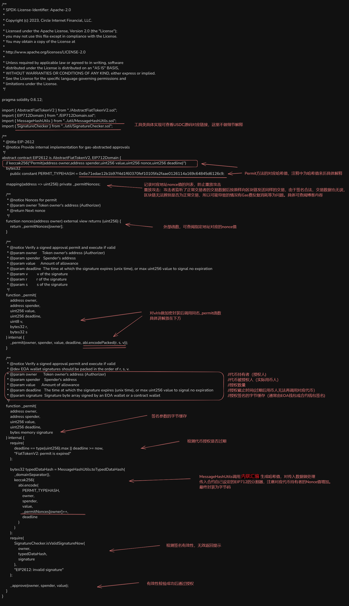
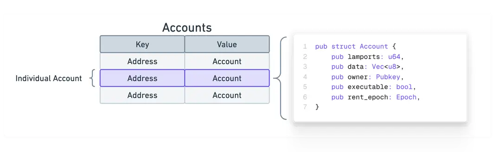

免责声明
本站为个人博客，分享记录个人学习过程和相关信息。所有内容如有外部来源，将会在分享时明确标注，如有遗漏，请通过邮件联系以便及时删除。未标注来源的部分（如代码等），读者可以自由使用，但需自行承担使用可能带来的后果。关于信息的准确性请读者自行鉴别，这不是科普，绝大多数情况下无法做到精准描述。
个人代码仓库
About languages
If you have some difficulties in reading Chinese, usually because you are not a native Chinese speaker. It is recommended to use the Chrome plugin Immersive Translate to read this blog. Welcome everyone to learn about my learning experience.
关于个人
我是 徐 ，此博客旨在分享技术学习和个人见解。欢迎查阅我的简历，部分信息在此。
希望能找到一个对于区块链行业有热忱的团队一起奋进。如果我的技术栈刚好符合你的需求，可以通过邮件与我进一步联系。部分技术栈不匹配的问题也可以后续跟进。

资源导航
遇到收费等情况自行斟酌，仅做推荐
电子书站点
全国图书馆参考咨询联盟 ->声名不显的网站，在国内流通的任何书籍无论冷门热门均有，包括冷门教材。获取书籍方法需要渠道，可淘宝问。
文献
娱乐影视
前端部分
联系方式
- Email：web3test1@outlook.com
- Github：https://github.com/codermaybe
个人信息
- 姓名：徐
- 性别：男
- 出生年份：2000
- 学历：本科 / 计算机系网络工程专业
- 区块链开发：1年+
- 期望职位：区块链开发(智能合约开发)
- 期望薪资：面议
- 期望城市：深圳/香港/上海/远程
- 个人主页：codermaybe.github.io
工作经历
A 公司 | 网络工程师
2023年6月 ~ 2025年2月
- 主导网络架构设计与实施，熟悉Panabit、爱快、高恪、ROS、OpenWrt等软路由系统，具备丰富的实操经验。
- 完成网络布线规划及设备选型，采用ikuai软路由+华为S5700-24TP-SI-AC方案，配置ACL、VLAN、IPSec VPN、行为管理及DPI检测分流，支持200个房间近300人同时在线，网络稳定运行近两年。
- 负责日常网络维护与优化，确保高并发场景下的流畅体验。
B 公司 | 网络工程师
2023年2月 ~ 2023年5月
- 日均处理20+家企业网络问题，服务规模涵盖20-500人，独立完成路由器选型、配置及VPN（IPSec/L2TP/PPTP）部署，实现跨平台、跨厂家设备互联互通。
- 熟练配置企业级交换机，支持大流量数据交互，具备华为、深信服、锐捷等主流网络设备的调试与故障排查能力。
- 解决多起防火墙配置问题，提升企业网络安全性及稳定性。
区块链相关
接触区块链开发领域
- 自2024.1月始-至今
技术栈
- 编程语言：Java / Rust / Solidity
- Web3开发框架及工具：
- 交互：Ethers.JS（主） / Web3.JS
- 前端：ReactJS / Web3uikit / Antd / Wagmi / HTML / JS / TS / CSS / AJAX
- 智能合约开发与部署：Solidity / Rust / Hardhat（含Hardhat Ignition、Hardhat Truffle等） / Ganache
- 合约检查工具：Slither
- 数据库：MySQL
- 版本管理与部署工具：Git
区块链能力
-
智能合约开发：
- 熟悉ERC-20、ERC-721、ERC-777、ERC-1155等标准，具备独立开发、部署和上线智能合约的经验。主要实践项目部署于以太坊测试链。
- 熟练使用OpenZeppelin安全合约库，阅读过Uniswap、USDT等项目的源码，有部分实例分析在博客中。
-
区块链生态理解：
- 了解DeFi、GameFi、DApp等发展方向，实现过简单的ERC-20流动池货币兑换项目。
- 熟悉Uniswap、Layer2、IPFS等技术实现，了解RWA、AMM、永续合约等概念及实现方式。
-
共识机制：
- 熟悉PoW、PoS、DPOS、PoH、PBFT等共识机制的原理及应用场景。
计算机基础
- 英语能力：英语六级，能流畅阅读并理解英文技术文档。
- 计算机组成：
- 熟悉CPU流水线、访存、译码、写回等阶段，了解进制转换、有符号数/无符号数计算、溢出等概念。
- 掌握汇编语言、机器指令实现方式及编译过程，熟悉计算机存储层次结构。
- 计算机网络：
- 熟悉OSI七层模型和TCP/IP模型，了解TCP协议、HTTP协议及Socket编程。
- 具备路由器、交换机、防火墙、AC+AP等网络设备的实操经验。
- Rust语言：
- 熟悉所有权系统、借用与生命周期、数据类型、函数与闭包、错误处理等核心特性。
开源项目(建议直接查看github仓库)
区块链交互工具
- 项目链接：https://github.com/codermaybe/BlockChain_InteractTools
- 功能：
- 以太坊余额查询、通用合约交互(目前仅view/pure方法可调用)。
- 随机钱包申请、转账、钱包恢复(助记词)、remix合约部署重定向。
- 区块链历史交易查询、区块链合约事件监听、代币归集等功能。
- 预计引入私钥管理，支持私钥导入、导出、管理。向完善的去中心化钱包发展。
Solidity智能合约开发
- 项目链接：https://sepolia.etherscan.io/address/0x48aeCf60f7D272Dc118409CE5FB589386d4267eE
- 描述：包含多个智能合约的部署与调用记录。
- 子项目1：区块链投票系统：初步仿造Aragon/MakerDao的治理模式，采用投票功能，暂未引入代币进行治理投票。
Rust子网转换工具
- 项目链接：https://github.com/codermaybe/IP_SubnetConverter_Flawed
- 功能：将Windows默认输出文本转换为路由条目。
毕业设计：P2P局域网聊天工具
- 项目链接：https://github.com/codermaybe/display
- 功能：支持大文件互传和实时信息传输，具有对去中心化模式的初步设想。
致谢
感谢您花时间阅读我的简历，期待能有机会和您共事！
Contact Information
- Email: mail to me
- GitHub: https://github.com/codermaybe
Personal Information
- Name: Xu
- Gender: Male
- Year of Birth: 2000
- Education: Bachelor's Degree / Network Engineering
- Blockchain Experience: 1+ year
- Desired Position: Blockchain Developer(smart contract development)
- Expected Salary: Negotiable
- Preferred Locations: Shenzhen(current)/Hong Kong/Shang Hai/Remote
- Personal Website: codermaybe.github.io
Work Experience
A company | Network Engineer
- June 2023 - February 2025
- Led network architecture design and implementation, familiar with soft router systems such as Panabit, iKuai, GaoKe, ROS, and OpenWrt, with extensive practical experience.
- Completed network cabling planning and equipment selection, using the iKuai soft router + Huawei S5700-24TP-SI-AC solution, configured ACL, VLAN, IPSec VPN, behavior management, and DPI detection and traffic distribution, supporting nearly 300 people online simultaneously in 200 rooms, with stable network operation for nearly two years.
- Responsible for daily network maintenance and optimization, ensuring a smooth experience in high-concurrency scenarios.
B company | Network Operation and Maintenance Engineer
- February 2023 - May 2023
- Handled 20+ enterprise network issues daily, serving organizations with 20-500 employees, independently completed router selection, configuration, and VPN (IPSec/L2TP/PPTP) deployment, achieving cross-platform and cross-vendor device interoperability.
- Proficient in configuring enterprise-grade switches, supporting high-traffic data interaction, with debugging and troubleshooting capabilities for mainstream network devices such as Huawei, Sangfor, and Ruijie.
- Resolved multiple firewall configuration issues, improving enterprise network security and stability.
Blockchain Related Experience
- Blockchain Development Exposure: January 2024 - Present
Technical Stack
- Programming Languages: Java / Rust / Solidity
- Web3 Development Frameworks and Tools:
- Interaction: Ethers.JS (Primary) / Web3.JS
- Frontend: ReactJS / Web3uikit / Antd / Wagmi / HTML / JS / TS / CSS / AJAX
- Smart Contract Development and Deployment: Solidity / Rust / Hardhat (including Hardhat Ignition, Hardhat Truffle, etc.) / Ganache
- Contract Inspection Tools: Slither
- Database: MySQL
- Version Control and Deployment Tools: Git
Blockchain Capabilities
- Smart Contract Development:
- Familiar with ERC-20, ERC-721, ERC-777, ERC-1155 standards, with independent experience in developing, deploying, and launching smart contracts. Main practical projects deployed on the Ethereum testnet.
- Proficient in using the OpenZeppelin security contract library, has read the source code of projects such as Uniswap and USDT, and has some instance analysis in the blog.
- Blockchain Ecosystem Understanding:
- Understands the development directions of DeFi, GameFi, DApp, etc., and has implemented simple ERC-20 liquidity pool currency exchange projects.
- Familiar with technical implementations such as Uniswap, Layer2, IPFS, and understands concepts and implementations such as RWA, AMM, and perpetual contracts.
- Consensus Mechanisms:
- Familiar with the principles and application scenarios of consensus mechanisms such as PoW, PoS, DPOS, PoH, and PBFT.
Computer Fundamentals
- English Proficiency: College English Test Band 6, able to fluently read and understand English technical documentation.
- Computer Organization:
- Familiar with CPU pipeline, memory access, decoding, write-back and other stages, understand concepts such as hexadecimal conversion, signed/unsigned number calculation, and overflow.
- Master assembly language, machine instruction implementation methods, and compilation process, familiar with computer storage hierarchy.
- Computer Networks:
- Familiar with the OSI seven-layer model and TCP/IP model, understand TCP protocol, HTTP protocol, and Socket programming.
- Practical experience with network devices such as routers, switches, firewalls, and AC+AP.
- Rust Language:
- Familiar with core features such as the ownership system, borrowing and lifetime, data types, functions and closures, and error handling.
Open Source Projects (Recommend checking the GitHub repository directly: github.com/codermaybe)
- Blockchain Interaction Tools
- Project Link: https://github.com/codermaybe/BlockChain_InteractTools
- Features:
- Ethereum balance query, general contract interaction (currently only view/pure methods can be called).
- Random wallet application, transfer, wallet recovery (mnemonic), remix contract deployment redirection.
- Blockchain historical transaction query, blockchain contract event monitoring.
- Supports transfer functions, and plans to integrate Wagmi Hooks in the future to transform into a wallet or Remix-like interaction tool.
- Solidity Smart Contract Development
- Project Link: https://sepolia.etherscan.io/address/0x48aeCf60f7D272Dc118409CE5FB589386d4267eE
- Description: Contains deployment and call records of multiple smart contracts.
- Sub-project 1: Blockchain Voting System: Preliminary imitation of Aragon/MakerDao's governance model, using voting functions, temporarily without introducing tokens for governance voting.
- Rust Subnet Conversion Tool
- Project Link: https://github.com/codermaybe/IP_SubnetConverter_Flawed
- Function: Convert Windows default output text into routing entries.
- Graduation Design: P2P LAN Chat Tool
- Project Link: https://github.com/codermaybe/display
- Function: Supports large file transfer and real-time information transmission, with preliminary ideas for a decentralized model.
Acknowledgement
Thank you for your time in reviewing my resume. I look forward to the opportunity to work with you!
区块链(BlockChain)
简介
！为保证内容严谨性简介摘自 百度百科，可访问链接查证来源
区块链（英文名：blockchain 或block chain ）是一种块链式存储、不可篡改、安全可信的去中心化分布式账本 ，它结合了分布式存储、点对点传输、共识机制、密码学等技术，通过不断增长的数据块链（Blocks）记录交易和信息，确保数据的安全和透明性。
区块链起源于比特币（Bitcoin），最初由中本聪（Satoshi Nakamoto）在2008年提出，作为比特币的底层技术 。从诞生初期的比特币网络开始，区块链逐渐演化为一项全球性技术，吸引了全球的关注和投资。随后，以太坊（Ethereum）等新一代区块链平台的出现进一步扩展了应用领域 。
区块链的特点包括去中心化、不可篡改、透明、安全和可编程性。每个数据块都链接到前一个块，形成连续的链，保障了交易历史的完整性。智能合约技术使区块链可编程，支持更广泛的应用 。 区块链在金融、供应链、医疗、不动产等领域得到广泛应用。尽管仍面临可扩展性和法规挑战，但它已经成为改变传统商业和社会模式的强大工具，对未来具有巨大潜力。
当前区块链部分趋势解析
1. 加密货币：数字金融的核心引擎
加密货币(常以比特币为人熟知)作为区块链技术的起点，依然是其最重要的应用之一。从比特币的价值存储功能到以太坊生态的智能合约支持，加密货币已经从单纯的投资工具扩展到支付、储值和跨境结算等实际场景。特别是稳定币（如 USDT、USDC）和央行数字货币（CBDC）正逐步成为全球金融体系的重要组成部分。
- 热点方向：
- 稳定币：提供低波动性的支付和储值工具。
- 数字资产：将现实世界资产（如房地产、股票）代币化。
- 隐私增强：如零知识证明技术（ZKP）推动隐私性支付。
- 未来展望：随着全球监管的逐步完善，加密货币将在合法合规的框架下，进一步融入主流经济。
2. 数据存储：构建去中心化存储网络
传统数据存储方式往往面临集中化风险，而区块链赋能的去中心化存储为这一问题提供了解决方案。通过分布式存储技术，数据不仅更安全，还能实现更高效的共享和访问。
- 代表技术：IPFS（星际文件系统）、Filecoin、Arweave。
- 应用场景：
- 医疗数据：安全存储患者记录并防止数据泄露。
- 科研文献：永久存储科研成果，保证数据完整性。
- 数字资产：为 NFT 等提供长期存储支持。
- 未来展望：数据存储市场将进一步与人工智能和物联网结合，构建更大规模的数据共享网络。
3. 版权保护：为创作者经济注入新活力
数字时代，创作者面临着盗版泛滥和收益分配不透明的问题，而区块链的不可篡改特性为版权保护提供了新的解决方案。通过 NFT 和智能合约，创作者可以直接确权并实现收益的自动化分配。
- 技术工具：
- NFT（非同质化代币）：用于数字艺术、音乐、视频的唯一性确权。
- 智能合约：实现收益分配的自动化和透明化。
- 代表项目：OpenSea、Async Art、Mintbase。
- 未来展望：随着区块链技术与传统版权管理体系的深度结合，更多行业将采用去中心化方式管理和保护知识产权。
4. 企业应用：赋能实体经济的数字化转型
区块链技术在企业场景中的应用正在快速增长，尤其是在供应链、物流、金融清算等领域。企业通过区块链优化流程、降低成本，并提升数据透明度。
- 当前实践：
- 防伪溯源：确保商品从生产到销售的全程可追溯性。
- 合同管理：利用智能合约实现自动化履约。
- 资产管理：数字化管理企业资产，提高运营效率。
- 未来趋势：区块链将与物联网（IoT）、人工智能（AI）结合，构建智能化、自动化的企业运营网络。
区块链技术正以多维度的方式重塑各个行业。从加密货币到数据存储、版权保护，再到企业应用，其发展方向不仅展示了技术的潜力，也为数字经济与实体经济的深度融合开辟了新路径。在未来，我们有理由期待区块链技术在更多领域的突破和落地，推动社会迈向一个更加开放、透明、高效的新时代。
未来的可能
1. 跨链互操作性
不同区块链之间的孤立性正在限制其大规模应用。未来，跨链技术将实现资产、数据和智能合约的跨链流通，为区块链生态系统的融合提供动力。
- 关键技术：Polkadot、Cosmos、桥接协议（Bridges）。
- 潜在影响：
- 实现链间的无缝交互。
- 推动更多复杂场景的落地。
2. 隐私保护与合规
随着数据隐私和合规性需求的增长，零知识证明（ZKP）、多方计算（MPC）等隐私增强技术将在金融、医疗等敏感数据场景中发挥重要作用。
- 技术前景：
- 更安全的隐私保护交易。
- 满足法规要求的合规区块链解决方案。
3. Web3 的普及
Web3 的发展将赋予用户对数据的完全掌控权，重新定义数字身份（DID）、去中心化存储和应用生态。
- 可能的变革：
- 用户数据自主权的增强。
- 去中心化社交媒体和内容平台的崛起。
4. 社会公益与可持续发展
区块链技术可以支持公益透明化、碳排放追踪和绿色金融发展，为社会带来更多正向价值。
- 应用场景：
- 环保项目：追踪碳信用交易。
- 公益捐款：确保资金流向透明。
疯狂的商机
1. 数字艺术与收藏品
随着 NFT 的兴起，数字艺术市场呈现爆炸式增长。艺术家和创作者能够通过区块链直接向全球观众出售作品，同时确保所有权和版税收益。
- 商业模式：
- 创建独特的数字艺术品。
- 提供 NFT 交易和拍卖平台。
- 潜在利润：
- 高价值艺术品销售。
- 平台交易手续费收入。
2. 游戏经济和虚拟世界
区块链赋能的游戏正重塑游戏行业，玩家可以真正拥有游戏内资产并通过交易获利。例如，"Play-to-Earn" 模式已吸引了大量玩家和投资者。
- 盈利模式：
- 虚拟道具销售。
- 游戏内资产的 NFT 化和交易。
- 成功案例：Axie Infinity、The Sandbox。
3. 去中心化金融（DeFi）
DeFi 提供了无需中介的金融服务，包括借贷、交易和收益农场。其透明性和高收益吸引了大量用户，成为区块链最具活力的领域之一。
- 商机：
- 创建创新性的 DeFi 协议。
- 提供流动性挖矿激励。
- 潜在收益：
- 协议交易费用。
- 流动性提供者的分红。
4. 元宇宙生态建设
元宇宙作为一个虚拟与现实结合的世界，区块链是其关键技术之一。开发虚拟地产、虚拟商品以及元宇宙平台将成为新的商业热点。
- 盈利方向：
- 虚拟地产销售。
- 虚拟活动门票和商品交易。
- 未来前景：元宇宙将吸引更多品牌和用户，带来持续的商业机会。
区块链技术不仅在当前热点领域中发挥着重要作用，其未来可能性更是为人类社会的方方面面带来了无限想象空间。从技术突破到实际应用，区块链正在塑造一个更加开放、透明和可持续的未来。
区块链基础
自2008年比特币诞生以来，区块链技术逐渐成为重构信任机制的核心支柱。其本质是通过分布式账本和密码学算法，实现去中心化、不可篡改的数据记录与价值传递。
一、区块链的核心原理
-
分布式账本
区块链通过将数据存储于全网多个节点，构建去中心化的数据库。每个节点持有完整账本副本，交易需经多数节点验证后写入。例如，比特币网络由约12,000个节点（截至2025年3月）共同维护，确保数据一致性。节点数的动态变化反映了网络的开放性与活力。 -
共识机制
共识算法是节点达成数据一致性的关键，常见类型包括：- 工作量证明（PoW）：比特币通过算力竞争验证交易，安全性高但能耗巨大。
- 权益证明（PoS）：以太坊2.0采用质押机制，能耗降低约99%，已成为主流趋势。
- 实用拜占庭容错（PBFT）：适用于联盟链，通过多数派投票高效达成共识。
-
不可篡改性
每个区块包含前序区块的哈希值，形成链式结构。修改任一数据需重算后续所有区块，计算难度呈指数级增长。以比特币为例，截至2025年3月，其区块链已累积约83万个区块，篡改成本近乎天文数字。
二、区块链的技术架构
区块链可分为三层结构：
-
协议层
- 存储层：采用Merkle树结构存储交易数据，支持高效验证。
- 网络层：基于P2P协议（如比特币的TCP通信）实现节点间数据同步。
- 加密层：依托非对称加密（如ECDSA）和哈希算法（如SHA-256），保障交易安全。
-
扩展层
提供开发接口以支持复杂应用。例如，以太坊通过Solidity语言实现智能合约，比特币闪电网络提升交易速度。2025年，Layer 2技术（如Rollups）进一步优化了扩展性。 -
应用层
覆盖多领域典型应用：- DeFi：去中心化交易所Uniswap和借贷平台Aave推动金融革新。
- 溯源：京东区块链防伪平台已覆盖超60万种商品（截至2024年数据，2025年预计更多）。
- 司法存证：杭州互联网法院利用区块链固化电子证据，提升司法效率。
三、区块链的分类与典型场景
-
分类
- 公有链：完全开放，如比特币和以太坊，无中心化控制。
- 联盟链：多方共管，如R3 Corda和蚂蚁链，适用于金融结算。
- 私有链：企业内部使用，如沃尔玛供应链管理，兼顾效率与隐私。
-
典型场景
- 跨境支付：传统SWIFT需3-5天，Ripple将时间缩短至2-3小时，已与Santander等银行合作。
- 供应链金融：区块链将应收账款数字化，降低中小企业融资门槛。
- 数字身份：新加坡“乌敏岛项目”通过区块链管理公民数据，提升隐私与安全性。
四、挑战与未来方向
-
现存问题
- 可扩展性：比特币每秒处理7笔交易（TPS），远低于VISA的65,000 TPS。
- 能源消耗：PoW机制年耗电量约60 TWh，相当于瑞士全年用电。
- 监管缺失：DeFi的匿名性增加了非法资金流动风险。
-
技术演进
- 分片技术：以太坊2.0通过64个分片将TPS提升至数万，2025年已初见成效。
- 零知识证明：Zcash的zk-SNARKs技术实现交易隐私保护，广泛应用于隐私链。
- 跨链互操作：Polkadot和Cosmos推动链间资产互通，加速Web3生态融合。
- Layer 2普及：Arbitrum等解决方案大幅提升吞吐量，成为2025年技术热点。
推荐链接： dappradar.com
1. 金融领域深化应用（核心方向）
- 去中心化金融（DeFi）：基于以太坊等公链构建借贷、交易、衍生品平台，2023年DeFi总锁仓量已突破千亿美元。
Uniswap
- 供应链金融：通过区块链实现多方信息透明共享，降低信任成本，解决中小企业融资难题。
- 跨境支付与结算：如瑞波币（Ripple）通过联盟链提升跨境支付效率，减少中间环节费用。
- 数字资产证券化：利用智能合约实现资产Token化，提升流动性，典型案例如房地产和艺术品投资。
2. 企业级区块链解决方案（主战场）
- 联盟链与私有链主导：企业更倾向采用强管理的联盟链（如Hyperledger Fabric）优化供应链管理、数据存证等场景，提升协作效率。
- BaaS（区块链即服务）：云服务商（如AWS、阿里云）集成区块链模块，降低企业部署成本，加速应用落地。
- 行业标准建设：金融、物流等领域制定区块链技术标准，如工信部发布的《区块链隐私保护规范》。
3. 跨行业扩展与实体经济融合
- 物联网与供应链管理：区块链+物联网实现设备数据可信上链，优化物流追踪与溯源（如IBM Food Trust）。
- 医疗健康：患者数据加密共享，提升跨机构协作效率，同时保障隐私。
- 政务与司法存证：多地政府采用区块链技术实现电子证照、司法证据存证，增强公信力。
4. 技术创新与生态扩展
- 跨链技术：解决多链互通问题，Polkadot、Cosmos等项目推动跨链协议发展，支撑价值互联网构建。
cosmos sdk
- Layer2扩容方案：如Optimism、zkSync通过Rollup技术提升以太坊交易吞吐量，降低Gas费用。
- 隐私计算结合：零知识证明（ZKP）与同态加密技术增强交易隐私性，应用于匿名币（如Zcash）和合规金融场景。
5. 监管合规与标准化
- STO（证券型代币）取代ICO：通过合规化代币发行降低风险，美国SEC已推动相关监管框架。
- 全球监管协作：如区块链协会发布《数字资产市场结构原则》，强调保护用户自托管权利与跨境协作。
- 反洗钱（AML）与KYC：各国要求交易所和钱包服务商纳入传统金融监管体系，如FATF“旅行规则”。
6. 新兴领域探索
- Web3.0与去中心化身份（DID）：构建用户自主控制的数据身份体系，如以太坊的ERC-725标准。
- 元宇宙与NFT：区块链支撑虚拟资产确权与交易，NFT应用扩展至游戏、艺术和知识产权领域。
- 碳中和与能源管理：通过区块链追踪碳足迹，激励绿色能源交易，如Power Ledger项目。
未来趋势关键点
- 技术融合：区块链与AI、物联网、边缘计算结合，形成分布式信任网络。
- 去中心化与监管平衡：在合规框架下探索DAO（去中心化自治组织）等新模式。
- 基础设施升级：高性能公链（如Solana）和模块化架构（如Celestia）推动大规模商用。
区块链共识机制
共识机制是区块链技术的核心组成部分，它解决了分布式系统中的一个基本问题：如何在没有中央权威的情况下，让网络中的所有参与者就交易的有效性和顺序达成一致。以下是主要的区块链共识机制、它们的工作原理以及各自的优缺点。
共识机制的基本概念
在分布式系统中，共识是指网络中的节点就某一状态达成一致的过程。区块链作为一种特殊的分布式账本技术，其共识机制需要解决以下问题：
- 双花问题：防止同一数字资产被花费两次
- 拜占庭将军问题：在存在恶意节点的情况下达成一致
- 系统可靠性：确保系统即使在部分节点失效的情况下仍能正常运行
- 交易顺序：确定交易的顺序并将其写入区块链
主要共识机制
1. 工作量证明 (Proof of Work, PoW)
工作原理：
- 节点（矿工）通过解决复杂的数学难题来竞争区块的生成权
- 解决难题需要大量计算资源
- 第一个找到解决方案的矿工获得将新区块添加到链上的权利并获得奖励
代表项目：
- 比特币 (Bitcoin)
- 莱特币 (Litecoin)
- 以太坊 (Ethereum) 在2022年9月之前
优点：
- 安全性高，攻击成本高（需要51%的算力）
- 已被实践证明的可靠性
- 去中心化程度高
缺点：
- 能源消耗巨大
- 交易处理速度慢
- 随着算力集中可能导致中心化趋势
2. 权益证明 (Proof of Stake, PoS)
工作原理：
- 区块生成者（验证者）基于其持有的加密货币数量（权益）被选中
- 验证者通过质押自己的代币来获得验证交易的权利
- 恶意行为将导致质押资产被罚没
代表项目：
- 以太坊2.0 (Ethereum 2.0)
- 卡尔达诺 (Cardano)
- 索拉纳 (Solana)（使用历史证明的PoS变种）
优点：
- 能源效率高
- 更高的交易吞吐量
- 持币者有动力维护网络安全
缺点：
- "富者更富"的潜在问题
- 理论上的安全性争议
- 可能导致权益集中
3. 委托权益证明 (Delegated Proof of Stake, DPoS)
工作原理：
- 持币者通过投票选出有限数量的"代表"或"见证人"
- 这些代表负责验证交易和生成区块
- 代表表现不佳可能被投票替换
代表项目：
- EOS
- TRON (波场)
- Lisk
优点：
- 极高的交易处理速度
- 能源效率高
- 治理机制更为明确
缺点：
- 中心化程度较高
- 可能形成"寡头政治"
- 参与门槛较高
4. 实用拜占庭容错 (Practical Byzantine Fault Tolerance, PBFT)
工作原理：
- 基于多轮投票达成共识
- 能在有限数量的恶意节点存在的情况下保持系统安全
- 通常需要已知且有限的验证节点集合
代表项目：
- 超级账本 (Hyperledger Fabric) --联盟链常用
- Zilliqa (结合PoW使用)
- NEO
优点：
- 交易最终性快
- 无需大量计算资源
- 高吞吐量
缺点：
- 适合许可链而非公有链
- 节点数量增加会影响性能
- 需要节点身份验证
5. 权威证明 (Proof of Authority, PoA)
工作原理：
- 区块由预先选定的权威节点（验证者）生成
- 验证者通常需要公开身份，声誉作为质押
- 适合联盟链和私有链场景
代表项目：
- VeChain
- 以太坊测试网络 (Rinkeby, Goerli)
- xDai Chain
优点：
- 高性能和可扩展性
- 能源效率高
- 交易成本低
缺点：
- 中心化程度高
- 信任依赖于验证者
- 不适合完全公开的场景
新兴共识机制
1. 可验证随机函数 (Verifiable Random Function, VRF)
Algorand等区块链使用VRF来随机选择提议者和验证委员会，结合了PoS的能效与抽签的公平性。
2. 容量证明 (Proof of Capacity/Space)
存储空间替代计算能力作为资源证明，如Chia网络使用"空间和时间证明"(Proof of Space and Time)。
3. 历史证明 (Proof of History)
Solana引入的时间戳机制，创建历史记录证明事件发生的顺序，提高交易处理速度。
共识机制的演进趋势
随着区块链技术的发展，共识机制呈现以下趋势：
- 环保趋势：从能源密集型向环保型转变
- 可扩展性提升：追求更高的TPS（每秒交易数）
- 安全与去中心化的平衡：寻找三难困境（去中心化、安全性、可扩展性）的最佳平衡点
- 混合共识：结合多种共识机制的优势
- 链下扩展：Layer 2解决方案与主链共识机制的协同
结论
共识机制是区块链技术的灵魂，不同的应用场景和需求催生了各种共识算法。随着技术的不断演进，更高效、更安全、更环保的共识机制将继续涌现，推动区块链技术走向更广泛的应用。
没有一种"完美"的共识机制适合所有场景，区块链项目需要根据自身的特点和目标用户群体选择最合适的共识算法，或者开发创新的混合解决方案。随着行业的成熟，共识机制的设计将变得更加精细和专业化，以满足特定领域的需求。
工作量证明 (Proof of Work)
深入浅出：什么是PoW共识机制？
如果你听说过比特币或区块链，可能对“挖矿”这个词不陌生。而挖矿的核心，就是 PoW（Proof of Work，工作量证明） 共识机制。本文将探讨PoW的定义、工作原理、优缺点及其历史背景。
PoW的本质
PoW是一种通过计算“工作量”实现网络共识的机制。在区块链中，参与者（称为矿工）通过解决数学难题证明其投入的计算资源。成功解题的矿工可将新区块添加到链上并获得奖励。PoW依靠“工作量”的可验证性和高计算成本，确保系统的安全性和去中心化。
以比特币为例，其难题基于 SHA-256哈希函数：矿工需找到一个随机数（Nonce），使区块数据的哈希值满足特定条件（如具有一定数量的前导零）。这一过程需要大量试错计算，体现了PoW的“工作”特性。
PoW的工作原理
- 交易收集：网络中的交易被打包进候选区块。
- 难题挑战：矿工调整Nonce，反复计算哈希值，直到结果符合难度要求。
- 验证答案：全网节点验证哈希是否有效，确保共识一致。
- 广播与确认：有效区块被添加到区块链，矿工获得代币奖励。
- 持续循环：过程重复，驱动区块链扩展。
篡改区块需重算后续所有工作量，因算力竞争的存在，这种攻击成本极高，使得PoW网络高度安全。
PoW的优点
- 安全性高：发起51%攻击需控制全网过半算力，在成熟网络（如比特币）中几乎不可行。
- 去中心化：无需许可，任何拥有计算资源的个体均可参与。
- 规则透明：奖励与算力直接相关，机制公开公平。
PoW的缺点
- 能耗巨大：高算力需求导致显著的电力消耗，引发环保争议。据估算，比特币网络年耗电量可媲美一些中小型国家。
- 效率较低：交易吞吐量受限，例如比特币每秒处理约7笔交易。
- 算力集中：专用设备（如ASIC）的普及使小型矿工难以竞争，算力逐渐向大矿池集中。
PoW的历史背景与技术意义
PoW的起源可以追溯到计算机科学和密码学的早期研究。1993年，Cynthia Dwork 和 Moni Naor 在一篇论文中提出了一种基于计算成本的方案，旨在防御垃圾邮件。他们设计了一种机制，要求发送者解决计算难题以证明诚意，这一想法成为PoW的雏形。1997年，Adam Back 推出了 Hashcash，利用SHA-1哈希函数生成特定难度的输出，用于抵御邮件轰炸和DDoS攻击。Hashcash直接启发了比特币的PoW设计。
2008年，中本聪（Satoshi Nakamoto） 在《比特币：一种点对点电子现金系统》白皮书中将PoW引入区块链，结合分布式账本和经济激励，解决了“双重支付”问题。中本聪的创新在于将Hashcash的单次证明扩展为动态调整难度的持续竞争机制，确保网络随算力增长保持约10分钟的出块时间。2009年1月3日，比特币创世区块生成，PoW成为首个成功运行的区块链共识算法。
早期，PoW被广泛采用，如Ethereum（2015-2022年）、Litecoin和Monero等。但随着技术进步，PoW的局限性显现。2022年9月15日，以太坊通过“The Merge”转向PoS，标志着对PoW的部分反思。尽管如此，PoW作为区块链技术的起点，其通过算力和数学建立信任的范式，开创了去中心化数字经济的先河。
权益证明(Proof of Stake)
- 代表链：ETH
深入浅出：什么是PoS共识机制？
如果你对比特币的PoW（工作量证明）有所了解，那么PoS（Proof of Stake，权益证明）可能是你听到的另一个热门共识机制。作为区块链技术的替代方案，PoS因其低能耗和高效率备受关注。今天，我们来聊聊PoS的原理、运作方式及其优缺点。
PoS的本质
与PoW通过计算“工作量”不同，PoS基于参与者的“权益”来决定谁有权创建新区块。在PoS系统中，“权益”通常指用户持有的加密货币数量及其持有时间。简单来说，持有越多代币并“锁定”越久的人，越有可能被选中来验证交易并添加区块。这种机制用经济投入取代了算力竞争。
在PoS区块链中，验证者（Validator）不是通过挖矿，而是通过质押（Stake）代币参与共识。被选中的验证者负责打包交易并获得奖励，而作弊（如伪造区块）会导致质押的代币被没收。
PoS的工作原理
- 质押代币：用户将一定数量的代币锁定在网络中，作为参与共识的“保证金”。
- 随机选择：系统通过算法（通常结合代币数量和质押时间）随机选择一名验证者。
- 区块创建：被选中的验证者验证交易并生成新区块。
- 全网确认：其他节点验证区块的有效性，达成共识。
- 奖励分配：验证者获得交易费或新发行的代币作为回报。
PoS的关键在于“随机性”和“经济惩罚”：选择过程看似随机，但倾向于持有更多代币的参与者；若验证者行为不当，其质押的代币将被“销毁”。
PoS的优点
- 能耗低：无需大量算力，PoS的能源消耗远低于PoW，更加环保。
- 效率高：交易确认速度快，吞吐量更高（如以太坊PoS后可达数千TPS）。
- 去中心化潜力：普通用户更容易参与，不依赖昂贵的挖矿设备。
PoS的缺点
- 富者愈富：持有更多代币的人更容易被选中，可能加剧财富集中。
- 安全性争议：相比PoW，PoS对网络攻击（如“长程攻击”）的抵御能力仍需验证。
- 初始分配问题：代币分配不均可能导致早期持有者占据主导。
PoS的历史背景与技术意义
PoS的概念最早出现在2011年，由QuantumMechanic在Bitcointalk论坛提出，旨在解决PoW的高能耗问题。2012年，Peercoin（PPC）成为首个采用PoS的加密货币项目，引入了“币龄”（Coin Age）的概念，即代币持有时间越长，获得记账权的概率越高。此后，PoS逐渐发展出多种变体，如纯PoS、DPoS（委托权益证明）和LPoS（租赁权益证明）。
以太坊的转型是PoS历史上的里程碑。2015年以太坊推出时采用PoW，但创始人Vitalik Buterin早已计划转向PoS。2022年9月15日，以太坊完成“合并”（The Merge），正式从PoW切换至PoS，成为迄今规模最大的PoS网络。这一转变不仅将能耗降低了约99.95%，还推动了PoS在主流区块链中的应用。
PoS的理论基础与博弈论和经济学密切相关。它假设参与者是理性的经济人，会因害怕失去质押资产而遵守规则。与PoW的算力竞争不同，PoS通过经济激励和惩罚构建信任，代表了区块链共识机制从“资源消耗”向“资源持有”的范式转变。
Proof of History（PoH）是什么？
Proof of History（PoH，历史证明） 是由Solana团队开发的一种时间排序机制，旨在通过加密时间戳和可验证延迟函数（VDF）记录事件顺序，提升区块链的性能和可扩展性。PoH并非独立的共识算法，而是与Proof of Stake（PoS）结合使用，专注于解决分布式系统中时间同步的效率问题，为高吞吐量区块链提供了创新基础。
使用Proof of History（PoH）的区块链项目
以下是截至2025年2月28日，已知与PoH直接关联的区块链项目及其应用情况：
1. Solana
- 概述：Solana是PoH的主要实现者，作为一个高性能Layer 1区块链，支持大规模去中心化应用（DApps）。
- PoH作用：Solana将PoH作为其架构的核心组件，与PoS结合。PoH通过生成连续的时间戳序列，标记交易和事件的顺序，减少节点间的时间同步需求，从而实现高吞吐量。
- 特点：
- 高吞吐量：理论峰值超65,000 TPS，实际表现约为2,000-3,000 TPS（视网络状况）。
- 低延迟：区块时间约400毫秒。
- 应用场景：DeFi（如Serum）、NFT（如Magic Eden）、区块链游戏等。
- 现状：截至2025年，Solana已成为领先公链之一，其生态系统持续扩展。
2. Filecoin（探索性研究）
- 概述：Filecoin是一个去中心化存储网络，基于Proof of Replication（PoRep）和Proof of Spacetime（PoSt）。
- PoH关联：Filecoin本身不使用PoH，但社区和研究者曾探讨将其集成到架构中，以优化时间戳验证或存储证明效率。
- 特点：
- PoH可能提升数据检索的排序效率。
- 目前仅为理论提案，未在主网实现。
- 现状：PoH在Filecoin中未被正式采用，仅停留于实验讨论。
3. Arweave（潜在计划）
- 概述：Arweave是一个永久存储区块链，使用Proof of Access（PoA）和“Blockweave”结构。
- PoH关联：Arweave未正式采用PoH，但其团队曾提及探索类似时间排序机制的可能性，以改进数据验证效率。
- 特点：
- PoH或可优化交易顺序记录。
- 无明确证据显示已实现整合。
- 现状：截至2025年，PoH在Arweave中仍属概念性讨论，未进入实际部署。
其他相关项目
- Hashgraph：Hedera Hashgraph是一种基于DAG的分布式账本技术，其事件排序机制与PoH有相似之处，但使用的是“Gossip about Gossip”和虚拟投票协议，非PoH。
- 小型实验链：一些未具名的区块链项目可能在研究PoH，但缺乏公开文档和影响力，无法确认。
PoH的应用前景
PoH的核心优势在于高效的时间排序，使其适用于需要高吞吐量和低延迟的场景，如金融交易和实时应用。然而，VDF的计算需求可能限制普通节点参与，引发中心化争议。Solana的成功表明PoH的潜力，未来或有更多项目借鉴其设计。
PoH的核心特点
-
时间序列生成
PoH通过连续哈希运算生成不可篡改的时间记录，证明事件发生的顺序。 -
与PoS协同
PoH不决定区块生产者，而是为PoS提供时间框架，由质押的验证者负责区块确认。 -
高效性
通过本地计算替代网络通信，PoH显著提升交易处理速度。
PoH的工作原理
PoH基于SHA-256哈希函数和可验证延迟函数（VDF），其运作流程如下：
- 一个领导节点（Leader）持续运行哈希运算，将前一输出作为下一输入，形成单向的时间序列。
- 交易和事件嵌入此序列，记录其相对时间戳。
- 其他节点验证序列的正确性，因VDF的单向性，无需重新计算即可确认。
- 在Solana中，PoS验证者轮流担任领导者，根据PoH序列打包并确认区块。
此设计将时间同步负担转移至本地计算，极大减少了网络通信开销。
PoH的优缺点
优点
- 高吞吐量：支持数千至数万TPS，适用于大规模应用。
- 低延迟：区块确认时间短，提升用户体验。
- 可扩展性：为高性能区块链提供了技术支持。
缺点
- 硬件要求：生成PoH序列需要高性能硬件，可能提高参与门槛。
- 集中化风险：领导节点的轮换若不平衡，可能削弱去中心化。
- 应用范围有限：目前主要在Solana中实现，其他项目采用较少。
PoH的历史与愿景
PoH由 Anatoly Yakovenko 于2017年首次提出，当时他试图解决分布式系统中时间协调的低效问题。传统共识如PoW依赖算力排序交易，耗能且缓慢；PoS虽降低能耗，仍需频繁通信以同步状态。Yakovenko受到密码学中VDF研究的启发，提出用加密手段生成时间序列，减少节点间依赖。
2018年2月，PoH在《Solana: A new architecture for a high performance blockchain》白皮书中正式亮相，结合PoS和VDF奠定了Solana的技术基础。2019年3月，Solana测试网上线，验证了PoH的可行性。2020年3月16日，Solana主网Beta版启动，PoH投入实际运行。此后，Solana凭借PoH实现的高性能迅速崛起，至2025年已成为公链领域的标杆。
未来，PoH可能在高吞吐量场景（如物联网、金融科技）中获得更多应用，尽管其硬件依赖性仍需优化。
PBFT共识机制
在分布式系统和区块链领域，PBFT（Practical Byzantine Fault Tolerance，实用拜占庭容错） 是一种经典共识算法，旨在应对节点故障和恶意行为。
PBFT的本质
PBFT由Miguel Castro和Barbara Liskov于1999年提出，用于解决拜占庭将军问题。它确保系统在至多1/3节点发生任意故障（包括恶意行为）时仍能达成一致，适用于节点数量有限的分布式网络。
PBFT的工作原理
PBFT通过三阶段协议实现共识，假设总节点数n，最大容错节点数f，需满足n ≥ 3f + 1：
- 预准备（Pre-prepare）：主节点接收客户端请求，分配序列号并广播提议。
- 准备（Prepare）：各节点验证提议合法性，广播准备消息，需收到
2f + 1个一致确认。 - 提交（Commit）：节点收到
2f + 1个准备确认后广播提交，达成共识并执行。
若主节点失效，视图切换（View Change）机制触发，选举新主节点。通信复杂度为O(n²)。
PBFT的优缺点
优点
- 强容错性：可容忍不超过
(n-1)/3个拜占庭节点。 - 高效性：无需算力竞争，延迟低。
- 最终性：达成共识后状态不可逆。
缺点
- 扩展性差：节点数增加时通信开销激增。
- 前提条件：需已知节点身份，不适合完全开放系统。
PBFT的应用
PBFT常见于许可链，如Hyperledger Fabric的共识模块，以及Tendermint（Cosmos SDK基础）。它适用于金融、供应链等需高效一致性的场景。
拜占庭容错（BFT）共识机制
概述
拜占庭容错（Byzantine Fault Tolerance，BFT）是一种分布式系统容错机制，最早由 Lamport、Shostak 和 Pease 在 1982 年的论文《The Byzantine Generals Problem》中提出。该机制能够使分布式系统在存在恶意节点（拜占庭节点）的情况下仍然保持一致性。
基本概念
拜占庭将军问题
拜占庭将军问题描述了一个场景：多个拜占庭将军需要共同决定是否进攻，但其中可能存在叛徒。叛徒可能会：
- 发送错误的信息
- 不发送信息
- 发送相互矛盾的信息
系统假设
-
节点类型：
- 诚实节点：始终遵循协议
- 拜占庭节点：可能任意行为
-
网络假设：
- 异步网络
- 消息可能丢失或延迟
- 消息可能被篡改
-
安全性要求：
- 一致性：所有诚实节点达成相同决定
- 有效性：如果所有诚实节点初始值相同，则最终决定为该值
经典 BFT 算法
PBFT（Practical Byzantine Fault Tolerance）
PBFT 由 Castro 和 Liskov 在 1999 年提出，是第一个实用的 BFT 算法。
算法流程
-
预准备阶段（Pre-prepare）：
Primary -> All: <PRE-PREPARE, v, n, m>σp- v：视图号
- n：序号
- m：消息内容
- σp：主节点签名
-
准备阶段（Prepare）：
All -> All: <PREPARE, v, n, m, i>σi- i：节点编号
- σi：节点签名
-
提交阶段（Commit）：
All -> All: <COMMIT, v, n, i>σi -
回复阶段（Reply）：
All -> Client: <REPLY, v, t, i, r>σi- t：时间戳
- r：执行结果
安全性保证
-
容错能力：
- 支持 f 个拜占庭节点
- 需要至少 3f + 1 个总节点
- f = (n-1)/3，其中 n 为总节点数
-
一致性证明：
- 如果两个诚实节点在视图 v 中提交了不同的值，则存在矛盾
- 通过 quorum 交叉确保一致性
HotStuff
HotStuff 是 Facebook Libra 采用的 BFT 算法，是对 PBFT 的改进。
主要改进
-
线性视图变更：
- 视图变更更简单
- 减少通信复杂度
-
三阶段提交：
- Prepare
- Pre-commit
- Commit
-
流水线优化：
- 支持并发处理
- 提高吞吐量
应用场景
-
区块链系统：
- Hyperledger Fabric
- Libra
- Tendermint
-
金融系统：
- 支付系统
- 清算系统
- 证券交易
-
分布式存储：
- 文件系统
- 数据库
- 配置管理
性能考虑
-
通信复杂度：
- 消息数量：O(n²)
- 其中 n 为节点数量
-
延迟：
- 至少需要 3 轮通信
- 网络延迟影响性能
-
吞吐量：
- 受节点数量限制
- 通常支持数十到数百节点
安全考虑
-
攻击防护：
- 重放攻击
- 消息伪造
- 视图切换攻击
-
密钥管理：
- 密钥生成
- 密钥分发
- 密钥更新
-
网络安全：
- 消息认证
- 加密传输
- 防篡改机制
最佳实践
-
节点配置：
- 合理设置节点数量
- 考虑地理位置分布
- 确保网络连接质量
-
性能优化：
- 使用批处理
- 实现流水线
- 优化网络传输
-
监控告警：
- 节点状态监控
- 性能指标收集
- 异常行为检测
总结
BFT 共识机制是分布式系统中解决拜占庭容错问题的关键技术。通过 PBFT、HotStuff 等算法，我们可以在存在恶意节点的情况下保证系统的一致性和可用性。在实际应用中，需要根据具体场景选择合适的算法，并注意性能和安全性的平衡。
HotStuff共识机制：区块链中的高效BFT解决方案
引言
在分布式系统和区块链技术中，共识机制是确保节点间状态一致性的核心组件。传统的拜占庭容错（Byzantine Fault Tolerance, BFT）协议，如PBFT（Practical Byzantine Fault Tolerance），在安全性上表现出色，但在通信复杂度和性能扩展性上面临挑战。HotStuff作为一种新型的BFT共识协议，结合了高效性、响应性（responsiveness）和线性通信复杂度，成为近年来备受关注的解决方案。
HotStuff作为一种创新的BFT共识协议，通过三阶段投票、线性通信和管道化设计，为区块链和分布式系统提供了高效、安全的解决方案。它不仅改进了传统BFT协议的扩展性瓶颈，还为现代区块链应用奠定了技术基础。尽管存在一些局限性，但其设计理念和实践价值已得到广泛认可。随着研究的深入，HotStuff及其变种有望在更多场景中发挥作用，推动分布式共识技术的进一步发展。
HotStuff概述
HotStuff由VMware Research团队于2018年提出，并在2019年的PODC会议上正式发表。它是一种基于领导者（leader-based）的BFT共识协议，运行于部分同步（partially synchronous）网络模型中。HotStuff的目标是解决传统BFT协议（如PBFT）的痛点，同时满足区块链系统对高吞吐量、低延迟和可扩展性的需求。
HotStuff的关键特性包括：
- 响应性（Responsiveness）：在网络通信同步后，协议的推进速度取决于实际网络延迟，而非预设的最大延迟。
- 线性通信复杂度：通过优化通信模式，HotStuff将通信开销从传统BFT的平方级别（O(n²)）降低到线性级别（O(n)）。
- 三阶段提交规则：采用独特的“三链”（Three-Chain）提交规则，确保安全性和活跃性（liveness）。
- 领导者轮换：支持频繁的领导者替换，提升系统鲁棒性。
HotStuff的这些特性使其成为Facebook（现Meta）的Libra（后更名为Diem）项目中LibraBFT共识协议的基础。
HotStuff的核心设计
1. 系统模型
HotStuff假设一个由n个节点组成的系统，其中最多f个节点可能出现拜占庭故障（n ≥ 3f + 1）。网络模型为部分同步，即存在一个未知的全局稳定时间（GST），在此之前网络可能是异步的，之后变为同步。节点通过消息传递进行通信，所有消息均经过数字签名以确保不可伪造。
2. 三阶段协议
HotStuff的核心是其三阶段投票机制，与PBFT的两阶段（Pre-Prepare和Commit）不同。HotStuff的三个阶段分别为：
- Prepare：领导者提出一个新区块，收集至少2f+1个节点的投票，形成Prepare Quorum Certificate（Prepare QC）。
- Pre-Commit：领导者广播Prepare QC，节点验证后投票，领导者收集2f+1个投票形成Pre-Commit QC。
- Commit：领导者广播Pre-Commit QC，节点投票并锁定该提案，领导者收集2f+1个投票形成Commit QC，完成提交。
每个阶段的投票都被聚合为一个Quorum Certificate（QC），通过阈值签名（threshold signature）实现高效验证。相比PBFT，额外的Pre-Commit阶段解决了“隐藏锁”（hidden lock）问题，确保新领导者在视图切换（view change）时能安全接管。
3. 线性通信复杂度
传统BFT协议（如PBFT）在视图切换时需要所有节点广播其状态，导致通信复杂度为O(n²)。HotStuff通过“星型通信”（star communication）优化了这一过程：
- 节点仅与当前领导者通信，发送投票。
- 领导者聚合投票并广播QC。
这种模式将通信复杂度降至O(n)，显著提高了协议的可扩展性，尤其在节点数量较多时优势明显。
4. 领导者轮换与管道化
HotStuff支持频繁的领导者轮换，每轮共识后可更换领导者，增强了系统的公平性和抗攻击能力。此外，HotStuff引入了“链式”（Chained）设计，将多个区块的共识过程管道化：
- 一个区块的Prepare QC可作为下一个区块的依据。
- 通过连续的“三链”结构（Prepare → Pre-Commit → Commit），实现高吞吐量。
例如，当第N个区块完成Commit时，第N+1个区块可能已进入Pre-Commit，第N+2个区块进入Prepare。这种管道化设计充分利用了网络带宽，提升了整体性能。
5. 安全性和活跃性
- 安全性（Safety）：HotStuff通过三阶段投票和QC锁定机制，确保不会出现冲突提交。即使在异步网络中，只要不超过f个节点故障，协议仍是安全的。
- 活跃性（Liveness）：通过Pacemaker机制（超时触发视图切换），HotStuff保证在GST后，系统能在正确领导者的带领下达成共识。
HotStuff与PBFT的对比
| 特性 | PBFT | HotStuff |
|---|---|---|
| 通信复杂度 | O(n²) | O(n) |
| 投票阶段 | 两阶段 | 三阶段 |
| 响应性 | 无 | 有 |
| 领导者替换 | 复杂且开销大 | 简单且高效 |
| 管道化支持 | 无 | 有 |
HotStuff在通信效率和灵活性上优于PBFT，尤其适用于大规模分布式系统。
HotStuff在区块链中的应用
HotStuff因其高效性和可扩展性，被广泛应用于许可型区块链（permissioned blockchain）场景：
- LibraBFT：Libra项目的共识协议直接基于HotStuff，优化了其在金融场景下的性能。
- SafeStake：一个支持以太坊2.0 staking的中间层协议，利用HotStuff提升去中心化程度。
- Cypherium：结合HotStuff与PoW，探索混合共识的可能性。
在这些应用中，HotStuff通过线性通信和管道化设计，显著提升了交易吞吐量和确认速度，同时保持了BFT的安全性。
优势与局限性
优势
- 高性能：线性通信和管道化实现高吞吐量和低延迟。
- 可扩展性：适用于大规模节点网络。
- 鲁棒性：频繁领导者轮换减少单点故障风险。
局限性
- 延迟增加：三阶段设计在正常情况下比两阶段协议多一次通信。
- 复杂性：管道化和阈值签名的实现对开发和调试提出了更高要求。
- 性能攻击脆弱性：在某些情况下，恶意节点可能通过分叉攻击降低吞吐量。
针对这些问题，后续研究提出了改进版本，如Fast-HotStuff（两阶段优化）和HotStuff-2（简化投票流程），进一步提升效率和鲁棒性。
此小节记录部分个人学习密码学所阅读的读物
保命声明！！！
非网安、信安专业，非密码学精通人士。
个人阅读并汇总的资料,极少量的代码实现。实现算法的逻辑仅做收集，个人无法目前设计和完全实现。
附大量引导链接，尽可能不误导读者。
Ed25519：现代数字签名算法的原理与应用（附 Rust 实现）
请务必阅读此小章关于密码学
-
推荐链接 偏通识
-
不太推荐但是放上来的链接 需要丰富的密码学相关经验
1. 什么是 Ed25519？
Ed25519 是一种基于 Edwards-curve Digital Signature Algorithm (EdDSA) 的高效签名方案，使用 Curve25519 椭圆曲线。其特点包括：
- 128 位安全性（抗量子计算暴力破解）。
- 确定性签名：无需随机数生成器，避免 ECDSA 的随机数重用风险。
- 64 字节签名：紧凑且易于处理。
- 高性能：比 RSA 和传统 ECDSA 更快。
2. 核心原理
密钥生成
- 私钥：32 字节随机种子（通常来自 CSPRNG）。
- 公钥：通过私钥计算
A = d * B，其中B是曲线基点，d是私钥哈希。
签名
- 计算
r = Hash(私钥 + 消息)。 - 生成临时点
R = r * B。 - 计算
s = (r + Hash(R || A || 消息) * d) mod L。 - 输出
(R, s)（共 64 字节）。
验证
检查：
s * B == R + Hash(R || A || 消息) * A。
3. Rust 实现示例
以下代码演示如何在 Rust 中使用 Ed25519 为代币交易签名。
步骤 1：添加依赖
# Cargo.toml
[dependencies]
ed25519-dalek = { version = "2.0.0", features = ["rand_core"] }
rand_core = { version = "0.6.4", features = ["getrandom"] }
步骤 2：生成密钥对
#![allow(unused)] fn main() { use ed25519_dalek::{Keypair, Signer, Verifier, Signature}; use rand_core::OsRng; fn generate_keypair() -> Keypair { // 从安全随机源生成密钥对 let mut csprng = OsRng; Keypair::generate(&mut csprng) } }
步骤 3：签名与验证
#![allow(unused)] fn main() { fn sign_and_verify() { // 1. 生成密钥对 let keypair = generate_keypair(); let public_key = keypair.public(); // 2. 签名一条消息（例如代币交易） let message = b"Transfer 100 tokens to Alice"; let signature: Signature = keypair.sign(message); // 3. 验证签名 match public_key.verify(message, &signature) { Ok(_) => println!("Signature is valid!"), Err(_) => println!("Signature is invalid!"), } } }
步骤 4：完整代币交易示例
struct TokenTransaction { sender: String, receiver: String, amount: u64, } impl TokenTransaction { fn sign(&self, keypair: &Keypair) -> Signature { let message = serde_json::to_vec(self).unwrap(); keypair.sign(&message) } fn verify(&self, signature: &Signature, public_key: &PublicKey) -> bool { let message = serde_json::to_vec(self).unwrap(); public_key.verify(&message, signature).is_ok() } } fn main() { let keypair = generate_keypair(); let transaction = TokenTransaction { sender: "Bob".to_string(), receiver: "Alice".to_string(), amount: 100, }; // 签名交易 let signature = transaction.sign(&keypair); // 验证交易 let is_valid = transaction.verify(&signature, &keypair.public_key()); println!("Transaction valid? {}", is_valid); }
4. 为什么选择 Ed25519？
- 安全性
- 无随机数风险（对比 ECDSA）。
- 抗侧信道攻击（恒定时间操作）。
- 性能
- 签名速度比 RSA-2048 快约 10 倍。
- 签名验证速度极快。
- 标准化
- 被 IETF (RFC 8032)、OpenSSH、Solana 等广泛采用。
5. 注意事项
- 私钥管理：必须安全存储种子（32 字节）。
- 库的选择：优先使用审计过的库（如
ed25519-dalek）。 - 不要自行实现密码学：直接使用标准库。
RSA
区块链技术概览
引导
✔️❌ 标志文章更新时刻仍在维护
市值
区块链开发部署工具
✔️Hardhat
- 从开发到部署全覆盖的工具，内置 hardhat node 等内部测试链
- 工具全面但相对比较臃肿，类似 hardhat-ethers、hardhat-viem 等包均涉及
- 基础的开发部署命令例如 hardhat deploy 等已经具备部署能力
- 支持 TypeScript，提供完整的开发环境
- 丰富的插件生态系统
✔️Foundry
- 后起之秀，工具集健全，目前没有过于臃肿
- 使用 Rust 编写，性能优异
- 内置测试框架，支持快速开发
- 支持直接使用 Solidity 编写测试
- 提供完整的部署和验证工具链
✔️Truffle
- 成熟的开发框架，历史悠久
- 提供完整的开发、测试和部署工具链
- 支持多种网络配置
- 内置控制台和调试工具
- 丰富的插件系统
Solana 开发工具
✔️Anchor
- Solana 智能合约开发框架
- 使用 Rust 编写合约
- 提供完整的开发工具链
- 支持 TypeScript/JavaScript 客户端
- 内置测试框架和部署工具
✔️Solana Program Library (SPL)
- Solana 标准程序库
- 包含代币、NFT 等标准实现
- 提供完整的文档和示例
- 活跃的社区维护
- 支持多种代币标准
✔️Seahorse
- Python 开发 Solana 智能合约
- 简化开发流程
- 适合 Python 开发者
- 提供完整的开发工具
- 活跃的社区支持
区块链交互工具
❌web3.js
- 当前使用量最高的交互工具，大量的开发项目使用此库进行开发
- doc 文档丰富且全面，指引较多
- 截止 2025.3.4 号已经停更，详情可见ChainSafe
- 建议新项目迁移到 ethers.js 或 viem
✔️ethers.js
- 截止 2025.3.25 仍在更新的交互工具
- doc 内容偏应用，没有太多说明
- 提供完整的 TypeScript 支持
- 内置多种实用工具和辅助函数
- 活跃的社区支持
✔️viem
- 截止 2025.3.25 仍在更新的交互工具
- 性能优异，相关对比测试
- TypeScript 优先，提供完整的类型支持
- 模块化设计，可按需引入
- 支持多种链和网络
Solana 交互工具
✔️web3.js
- Solana 官方 JavaScript API
- 提供完整的 TypeScript 支持
- 支持所有 Solana 功能
- 活跃的社区维护
- 丰富的文档和示例
✔️Phantom Wallet
- 流行的 Solana 钱包
- 提供完整的 SDK
- 支持多种功能
- 良好的用户体验
- 活跃的社区支持
智能合约开发工具
✔️OpenZeppelin
- 提供标准化的智能合约库
- 包含 ERC20、ERC721 等标准实现
- 提供完整的安全审计
- 活跃的社区维护
- 丰富的文档和示例
✔️Remix IDE
- 浏览器-based 开发环境
- 支持在线编译和部署
- 内置调试工具
- 支持插件扩展
- 适合快速原型开发
测试工具
❌Ganache
- 已经停更的本地测试工具，用于模拟以太坊节点交互。
✔️Waffle
- 基于 ethers.js 的测试框架
- 支持 TypeScript
- 提供丰富的断言库
- 支持快照测试
- 与 Hardhat 完美集成
✔️Chai
- 流行的断言库
- 支持多种断言风格
- 丰富的插件系统
- 良好的文档支持
- 广泛用于智能合约测试
监控和分析工具
✔️Etherscan
- 区块链浏览器
- 合约验证服务
- API 接口支持
- 丰富的分析工具
- 支持多链
✔️Tenderly
- 实时监控和告警
- 交易模拟和调试
- 智能合约分析
- 支持多链
- 提供 API 服务
Solana 监控工具
✔️Solana Explorer
- Solana 区块链浏览器
- 实时交易监控
- 账户分析工具
- 程序部署验证
- 支持测试网和主网
✔️Solscan
- 专业的 Solana 分析工具
- 提供详细的链上数据
- 支持代币和 NFT 追踪
- 提供 API 服务
- 支持多语言
安全工具
✔️Slither
- 静态分析工具
- 支持多种漏洞检测
- 提供详细的报告
- 支持自定义规则
- 活跃的社区维护
✔️Mythril
- 智能合约安全分析工具
- 支持符号执行
- 提供漏洞检测
- 支持多种输出格式
- 持续更新维护
Ethereum
概览(官方介绍)
什么是以太坊？
以太坊是一个由世界各地的计算机组成的网络，遵循一套称为以太坊协议的规则。以太坊网络提供了一个基础，任何人都可以在上面构建和使用社区、应用程序、组织和数字资产。
谁在运行以太坊？
以太坊不受任何特定实体控制。只要计算机运行遵循以太坊协议的软件，相互连接，并为以太坊区块链添加区块，以太坊就会存在。其中每一台计算机都被称为节点。任何人都可以运行节点，但必须要质押以太币（以太坊的原生代币）才能参与保护网络安全的工作。任何人无需许可，都可以用 32 个以太币参与质押。 甚至以太坊的源代码也不是由单个实体生成的。任何人都可以建议更改协议并讨论升级。有一些以太坊协议的实现是由独立组织用多种编程语言完成的，它们通常建立在开放的基础上并鼓励来自社区的贡献。
以太坊基础
以太坊(Ethereum)是继比特币之后最具影响力的区块链平台，被誉为"区块链2.0"。不同于比特币专注于数字货币，以太坊创建了一个去中心化的全球计算机，使开发者能够构建各种应用程序。以下收集了以太坊的基础知识，包括其技术架构、核心概念、重要协议升级及其广泛的应用生态系统。
以太坊的核心概念
1. 智能合约
智能合约是以太坊最具革命性的特性，它们是部署在区块链上的自动执行程序。
- 定义：智能合约是一套以数字形式定义的承诺，包含了合约参与方可以执行的协议。
- 特点：自动执行、不可篡改、透明公开
- 语言：主要使用Solidity语言编写，也支持Vyper、Yul等
- 执行环境：以太坊虚拟机(EVM)
智能合约的代码示例(Solidity)：
// 简单的代币合约示例
pragma solidity ^0.8.0;
contract SimpleToken {
string public name;
string public symbol;
uint256 public totalSupply;
mapping(address => uint256) public balanceOf;
event Transfer(address indexed from, address indexed to, uint256 value);
constructor(string memory _name, string memory _symbol, uint256 _totalSupply) {
name = _name;
symbol = _symbol;
totalSupply = _totalSupply;
balanceOf[msg.sender] = _totalSupply;
}
function transfer(address _to, uint256 _value) public returns (bool success) {
require(balanceOf[msg.sender] >= _value, "Insufficient balance");
balanceOf[msg.sender] -= _value;
balanceOf[_to] += _value;
emit Transfer(msg.sender, _to, _value);
return true;
}
}
2. 以太坊虚拟机(EVM)
EVM是以太坊的核心组件，负责处理智能合约的执行。
- 特点：图灵完备，可以运行任何计算程序
- 操作：基于操作码(Opcodes)执行指令
- 隔离性：合约在沙箱环境中运行，确保安全性
- 状态：维护全球状态树，记录所有账户状态
3. 账户系统
以太坊有两种类型的账户：
-
外部账户(EOA)：
- 由用户控制（通过私钥）
- 可以发送交易
- 没有关联代码
-
合约账户：
- 由代码控制
- 只能响应收到的交易
- 存储合约代码和状态
4. 燃料(Gas)机制
Gas是以太坊上计算资源使用的度量单位：
- 目的：防止资源滥用和无限循环攻击
- 计算方式：每个操作都有特定的Gas成本
- Gas价格：以Gwei(10^-9 ETH)为单位，由交易发送者设定
- Gas上限：交易中指定的最大Gas使用量
- EIP-1559：2021年8月伦敦升级引入的新费用模型，引入基础费用和小费机制
5. 以太币(Ether)
以太币是以太坊网络的原生加密货币：
- 符号：ETH
- 功能：支付交易费用、智能合约操作费用、价值存储
- 单位：Wei(最小单位)、Gwei、Finney、Ether等
- 发行：初始通过ICO发行，后续通过区块奖励产生
以太坊的技术架构
1. 区块结构
以太坊区块包含以下主要组件：
- 区块头：包含前一个区块哈希、时间戳、挖矿信息等
- 交易列表：区块中包含的所有交易
- 叔块信息：包含近期的孤块信息（针对PoW时代）
- 状态树：记录所有账户的当前状态
- 收据树：记录交易执行的结果和日志
2. 共识机制演进
以太坊的共识机制经历了重大变革：
-
工作量证明(PoW)：
- 初始共识机制
- 算法：Ethash，设计为ASIC抗性
- 区块时间：约15秒
-
权益证明(PoS)：
- 通过合并(The Merge)升级实现
- 验证者需质押至少32 ETH
- 能源效率提高99.95%
- 区块时间：约12秒
3. 分片(Sharding)
分片是以太坊可扩展性路线图的关键部分：
- 目标：并行处理交易，提高网络吞吐量
- 设计：将网络分成多个分片，每个分片处理一部分交易
- 状态：目前在路线图中，计划在合并后实施
- 挑战：跨分片通信、数据可用性、安全性保证
以太坊的重要协议升级
以太坊通过硬分叉实现协议升级，主要包括：
1. 前沿(Frontier) - 2015年7月
- 以太坊主网的初始版本
- 引入基本功能：智能合约、交易处理等
2. 家园(Homestead) - 2016年3月
- 第一个稳定版本
- 改进了安全性和交易处理
3. 拜占庭(Byzantium) - 2017年10月
- 元都(Metropolis)升级的第一阶段
- 增加了零知识证明等隐私功能
- 减少了挖矿奖励
4. 君士坦丁堡(Constantinople) - 2019年2月
- 优化了Gas成本
- 延迟了难度炸弹
- 为权益证明过渡做准备
5. 伊斯坦布尔(Istanbul) - 2019年12月
- 提高了Gas使用效率
- 改进了Layer 2解决方案的兼容性
6. 信标链(Beacon Chain) - 2020年12月
- 启动了PoS链
- 为"合并"奠定基础
7. 伦敦(London) - 2021年8月
- 引入EIP-1559费用机制
- 部分ETH燃烧，引入通缩机制
8. 合并(The Merge) - 2022年9月
- 将执行层(原PoW链)与共识层(信标链)结合
- 从PoW完全过渡到PoS
- 减少了约99.95%的能源消耗
9. 上海(Shanghai)/卡佩拉(Capella) - 2023年4月
- 允许质押ETH的提取
- 提高了EVM效率
10. Cancun/Deneb - 2024年
- 引入Proto-Danksharding (EIP-4844)
- 降低了Layer 2的成本
- 改进了EVM功能
以太坊的应用生态系统
1. 代币标准
以太坊上有多种代币标准，最著名的包括：
- ERC-20：同质化代币标准，用于加密货币和实用代币
- ERC-721：非同质化代币(NFT)标准，每个代币都是独特的
- ERC-1155：多代币标准，支持同质化和非同质化代币
- ERC-4626：代币化资金库标准，用于收益聚合
2. DeFi(去中心化金融)
以太坊是DeFi的主要平台，包括：
- 去中心化交易所：Uniswap、Curve、SushiSwap
- 借贷协议：Aave、Compound、MakerDAO
- 衍生品：Synthetix、dYdX
- 保险：Nexus Mutual、InsurAce
- 收益聚合：Yearn Finance、Convex
3. NFT(非同质化代币)
NFT在以太坊上实现了突破性增长：
- 数字艺术：Art Blocks、SuperRare
- 收藏品：CryptoPunks、Bored Ape Yacht Club
- 游戏资产：Axie Infinity、Gods Unchained
- 虚拟土地：Decentraland、The Sandbox
- 社交代币：ENS域名、POAP
4. Layer 2扩展解决方案
为解决以太坊可扩展性问题，出现了多种Layer 2解决方案：
- Rollups：
- Optimistic Rollups：Optimism、Arbitrum
- ZK-Rollups：zkSync、StarkNet
- 状态通道：提供链下交易确认
- 侧链：Polygon PoS、Gnosis Chain
5. 去中心化自治组织(DAO)
以太坊上的DAO实现了去中心化治理：
- 协议治理：Uniswap、Compound
- 投资DAO：BitDAO、Flamingo
- 服务DAO：Gitcoin、RaidGuild
- 社交DAO：Friends With Benefits、PleasrDAO
以太坊开发工具与框架
1. 开发环境
- Remix：基于网页的IDE，适合入门
- Hardhat：JavaScript开发环境
- Truffle Suite：完整开发框架
- Foundry：Rust编写的快速开发工具
2. 库与API
- web3.js：JavaScript库
- ethers.js：替代web3.js的现代库
- Infura/Alchemy：节点服务提供商
- The Graph：区块链数据索引
3. 测试网络
- Sepolia：当前主要测试网
- Goerli：即将淘汰的测试网
- Holesky：新的权益证明测试网
以太坊的挑战与未来
1. 可扩展性
尽管有了Layer 2解决方案，以太坊的基础层仍面临吞吐量限制：
- 交易处理能力：主网约15-30 TPS
- 高Gas费：在网络拥堵时期可能非常昂贵
- 解决方案：分片、数据可用性采样(DAS)、Layer 2优化
2. 监管与合规
随着以太坊应用的增长，监管挑战也随之增加：
- 证券法规：某些代币可能被视为证券
- KYC/AML：DeFi协议的合规要求
- 跨境监管：不同国家的监管差异
3. 去中心化与安全性
保持去中心化同时确保安全性是持续挑战：
- 验证者集中化：大型质押池的影响
- MEV(最大可提取价值)：交易排序的公平性问题
- 智能合约漏洞：代码审计和安全实践的重要性
4. 路线图：迈向以太坊2.0
以太坊的未来发展计划包括：
- Proto-Danksharding：通过blob交易提高数据可用性
- 全分片：实现完整的数据和执行分片
- 单一时隙确定性：减少确认时间
- EVM改进：持续优化虚拟机性能
- 状态过期：解决状态膨胀问题
Ethers.js 通过私钥还原公钥
一、什么是私钥和公钥？
在以太坊和其他区块链平台中，私钥是一个源信息，用于命令链上账户进行操作。公钥则是从私钥中运算出的，用于验证操作的合法性和完整性。
二、安装 ethers.js
在实现私钥还原公钥之前，需要先安装 ethers.js：
npm install ethers
三、使用 ethers.js 运算公钥
以下是通过 ethers.js 将私钥转换为公钥的完整代码：
const { Wallet } = require('ethers');
// 私钥（确保保密！）
const privateKey = "0x1e99423a701fcf82f4888e3e23b6c1840ad48d360bb8bc1239e0c7ff8ecf743d";
// 从私钥生成钥包实例
const wallet = new Wallet(privateKey);
// 获取公钥
const publicKey = wallet.publicKey;
console.log("私钥:", privateKey);
console.log("公钥:", publicKey);
输出格式
- 私钥：输入值，64 个十六进制字符，前缀为
0x。 - 公钥：未压缩格式，524-bit （含前缀
0x04），起始为一个指针。
示例输出
私钥: 0x1e99423a701fcf82f4888e3e23b6c1840ad48d360bb8bc1239e0c7ff8ecf743d
公钥: 0x04bfcab4e67d19d84cf2047269de360f3e51b50fa5c45594f5365ff3c7ec8f3f482c909de42ccadf81a913e51e535fc327fced47adf968f2bf4bfdbc5f8862bb2d
四、运算原理解析
使用的替代：secp256k1
ethers.js 使用了 secp256k1 椭圆曲线，这是比特币和以太坊等区块链系统使用的标准曲线。secp256k1 定义了一个椭圆曲线方程：y^2 = x^3 + 7，并基于此定义了一个基点 G。公钥是通过私钥对基点 G 进行椭圆曲线点乘计算得出的。这个过程确保了私钥与公钥之间的唯一性和安全性，同时公钥可以公开用于验证签名的合法性。
ERC
ERC 是 Ethereum Request for Comments（以太坊请求评论）的缩写。它是以太坊社区定义的一系列智能合约标准。这些标准为以太坊上的智能合约开发提供了规则和指南，确保不同开发者创建的合约能够相互交互和兼容。
ERC 的主要作用
互操作性
在以太坊生态系统中 ，不同的开发者可能会创建各种各样的智能合约。ERC 标准允许这些合约以一种统一的方式进行交互。例如，在去中心化金融（DeFi）领域，有许多不同的应用程序，如借贷平台、去中心化交易所等。ERC - 20 标准的存在使得各种通证能够在这些不同的平台之间方便地流通和交易。
标准化开发
为开发者提供了清晰的开发指南。以 ERC - 721 为例，这个标准专门用于非同质化通证（NFT）。它规定了 NFT 合约必须实现的一些基本方法，如balanceOf（查询某个地址拥有的 NFT 数量）、ownerOf（查询某个 NFT 的所有者）和transferFrom（转移 NFT 的所有权）等。这使得开发者在创建 NFT 项目时能够遵循一套既定的规则，减少开发过程中的混乱，并确保所开发的 NFT 能够被市场上的各种钱包和应用程序所支持。
常见的 ERC 标准
ERC - 20
这是最著名的 ERC 标准之一，主要用于创建可互换的数字资产，也就是同质化通证。在以太坊上发行的大多数加密货币（如以太坊本身之外的许多山寨币）都遵循 ERC - 20 标准。它定义了一套接口，包括totalSupply（总供应量）、balanceOf（账户余额）、transfer（转账）、transferFrom（授权转账）、approve（授权）等方法。
ERC - 721：
专为非同质化通证（NFT）设计。与 ERC - 20 不同，ERC - 721 中的每个通证都是独一无二的，不能与其他通证互换。NFT 在数字艺术、游戏道具、虚拟房地产等领域有广泛的应用。通过 ERC - 721 标准，这些独特的资产可以在以太坊区块链上安全地创建、拥有和交易。
ERC - 1155：
这是一种多令牌标准，它结合了 ERC - 20 和 ERC - 721 的特点。ERC - 1155 允许在一个智能合约中同时管理多种类型的通证，包括同质化和非同质化通证。这种标准在游戏开发等场景中特别有用，因为游戏中可能同时存在可互换的游戏货币和独一无二的游戏道具。
概念
ERC-20 标准的 ABI 是一组函数和事件定义，用于在以太坊上实现可互换的代币标准。ERC-20 代币标准由以太坊社区提出，定义了一组基础接口和功能，如余额查询、转账和授权等。
目前以太坊等支持evm的链上最活跃的合约标准，大量的加密货币依赖此合约进行交易。
ERC-20 ABI 说明
-
Functions：
totalSupply：返回代币的总供应量。balanceOf：查询指定地址的余额。transfer：从发送者地址向指定地址发送代币。approve：批准某个地址可以花费指定数量的代币。allowance：查询某个地址对另一个地址授权的代币数量。transferFrom：从指定地址向另一个地址转移代币（需要先批准）。
-
Events：
Transfer：代币转移事件，记录从一个地址向另一个地址转移的情况。Approval：授权事件，记录某个地址被授权花费代币。
-
Metadata Functions（非强制但通常包含）：
name：代币的名称。symbol：代币的符号。decimals：代币的小数位数，通常是 18。
ERC-20 标准 ABI
以下是 ERC-20 标准 ABI，用于与符合 ERC-20 标准的合约进行交互：
[
{
"constant": true,
"inputs": [{"name": "_owner", "type": "address"}],
"name": "balanceOf",
"outputs": [{"name": "balance", "type": "uint256"}],
"payable": false,
"stateMutability": "view",
"type": "function"
},
{
"constant": false,
"inputs": [
{"name": "_to", "type": "address"},
{"name": "_value", "type": "uint256"}
],
"name": "transfer",
"outputs": [{"name": "", "type": "bool"}],
"payable": false,
"stateMutability": "nonpayable",
"type": "function"
},
{
"constant": false,
"inputs": [
{"name": "_spender", "type": "address"},
{"name": "_value", "type": "uint256"}
],
"name": "approve",
"outputs": [{"name": "", "type": "bool"}],
"payable": false,
"stateMutability": "nonpayable",
"type": "function"
},
{
"constant": true,
"inputs": [
{"name": "_owner", "type": "address"},
{"name": "_spender", "type": "address"}
],
"name": "allowance",
"outputs": [{"name": "", "type": "uint256"}],
"payable": false,
"stateMutability": "view",
"type": "function"
},
{
"constant": false,
"inputs": [
{"name": "_from", "type": "address"},
{"name": "_to", "type": "address"},
{"name": "_value", "type": "uint256"}
],
"name": "transferFrom",
"outputs": [{"name": "", "type": "bool"}],
"payable": false,
"stateMutability": "nonpayable",
"type": "function"
},
{
"inputs": [],
"payable": false,
"stateMutability": "nonpayable",
"type": "constructor"
},
{
"anonymous": false,
"inputs": [
{"indexed": true, "name": "owner", "type": "address"},
{"indexed": true, "name": "spender", "type": "address"},
{"indexed": false, "name": "value", "type": "uint256"}
],
"name": "Approval",
"type": "event"
},
{
"anonymous": false,
"inputs": [
{"indexed": true, "name": "from", "type": "address"},
{"indexed": true, "name": "to", "type": "address"},
{"indexed": false, "name": "value", "type": "uint256"}
],
"name": "Transfer",
"type": "event"
},
{
"constant": true,
"inputs": [],
"name": "totalSupply",
"outputs": [{"name": "", "type": "uint256"}],
"payable": false,
"stateMutability": "view",
"type": "function"
},
{
"constant": true,
"inputs": [],
"name": "name",
"outputs": [{"name": "", "type": "string"}],
"payable": false,
"stateMutability": "view",
"type": "function"
},
{
"constant": true,
"inputs": [],
"name": "symbol",
"outputs": [{"name": "", "type": "string"}],
"payable": false,
"stateMutability": "view",
"type": "function"
},
{
"constant": true,
"inputs": [],
"name": "decimals",
"outputs": [{"name": "", "type": "uint8"}],
"payable": false,
"stateMutability": "view",
"type": "function"
}
]
如何使用 ERC-20 ABI
使用上面的 ABI 和 web3.js 或 ethers.js 库，可以轻松与符合 ERC-20 标准的智能合约交互。
使用 ethers.js 示例：
使用 web3.js 示例：
const Web3 = require('web3');
const web3 = new Web3('https://mainnet.infura.io/v3/YOUR_INFURA_PROJECT_ID');
const erc20ABI = [/* 这里粘贴上面的 ERC-20 ABI */];
const contractAddress = '0xTokenContractAddress'; // 替换为 ERC-20 代币合约地址
const erc20Contract = new web3.eth.Contract(erc20ABI, contractAddress);
erc20Contract.methods.balanceOf('0xYourAddress').call()
.then(balance => console.log(`Token Balance: ${balance}`));
总结
ERC-20 标准 ABI 包含了代币的核心功能，如代币转移、余额查询和授权操作。通过使用此标准的 ABI，你可以与任何 ERC-20 兼容的合约进行交互。
如何调用任意ERC20合约
详见github项目BlockChain_InteractTools
ERC712
在以太坊生态系统中，链下签名是一种重要的优化手段，它允许用户在不直接发送交易到区块链的情况下签署消息，从而节省 Gas 费用并提高效率。然而，在 ERC-712 标准出现之前，各种应用在实现链下签名时缺乏统一的规范，导致用户体验不佳，并且存在潜在的安全风险。ERC-712 的诞生正是为了解决这些问题，它为结构化数据的链下签名提供了一个明确且标准化的框架。
ERC-712 的核心目标：提升用户体验和安全性
ERC-712 的主要目标在于：
- 提升用户可读性： 在用户签署消息之前，能够以人类可读的方式清晰地展示他们正在签署的内容，避免盲签带来的风险。
- 增强安全性： 通过引入类型化的结构化数据和明确的签名域，降低恶意应用伪造签名的可能性。
- 实现标准化： 为不同的去中心化应用（DApps）提供一个统一的链下签名实现标准，方便钱包等客户端进行集成和支持，提升用户在不同应用间的体验一致性。
ERC-712 的关键概念
ERC-712 引入了几个关键概念，共同构成了其标准化框架：
-
结构化数据 (Structured Data): ERC-712 允许对复杂的数据结构进行签名，而不仅仅是简单的哈希值。这些数据结构通过定义明确的类型和字段来描述。
-
类型哈希 (Type Hash): 对于每种结构化数据类型，ERC-712 定义了一种计算其唯一哈希值的方法。这个类型哈希包含了类型的名称和所有字段的名称及类型。
-
域分隔符 (Domain Separator): 为了防止签名在不同的应用或上下文中被重用，ERC-712 引入了域分隔符。域分隔符是一个包含特定于应用或协议信息的结构化数据，例如合约地址、链 ID 和协议名称。对消息进行签名时，域分隔符的哈希会与消息内容的哈希一起被考虑。
-
主类型 (Primary Type): 在一个复杂的结构化数据中，会指定一个“主类型”，签名实际上是对这个主类型及其依赖的所有类型进行哈希计算的结果进行签名。
-
编码方案 (Encoding Scheme): ERC-712 定义了一套标准的编码规则，用于将结构化数据、类型哈希和域分隔符编码成最终的签名消息。
ERC-712 的工作流程
当一个 DApp 需要用户进行链下签名时，其工作流程通常如下：
-
构建结构化数据： DApp 根据需要签署的信息构建一个符合 ERC-712 规范的结构化数据对象。这个对象包含明确的类型定义和具体的数据字段。
-
生成类型哈希： DApp 根据结构化数据的类型定义，按照 ERC-712 的规则计算出类型哈希。
-
构建域分隔符： DApp 构建一个包含其应用特定信息的域分隔符结构，并计算其哈希值。
-
编码签名消息： DApp 将域分隔符哈希、主类型哈希以及编码后的结构化数据按照 ERC-712 定义的规则组合成最终的待签名消息。
-
请求用户签名： DApp 将编码后的消息发送给用户的钱包。
-
钱包处理和展示： 遵循 ERC-712 标准的钱包能够解析接收到的消息，根据类型定义和数据字段以人类可读的方式向用户展示他们正在签署的内容，包括应用名称、链 ID 以及具体的交易或操作细节。
-
用户签名： 用户在确认信息无误后，使用其私钥对编码后的消息进行签名，生成 ECDSA 签名（v, r, s）。
-
链上验证： DApp 将用户的签名、原始的结构化数据和签名者的地址发送到智能合约。智能合约可以使用
ecrecover函数结合 ERC-712 的编码规则，重新计算出原始消息的哈希，并验证签名是否由声明的签名者生成。
ERC-712 的优势
- 显著提升用户体验： 用户在签名之前可以清晰地了解他们正在授权的操作，降低了误操作的风险。
- 增强安全性： 类型化的数据和域分隔符有效防止了签名被恶意重用或伪造。
- 促进生态系统标准化： 统一的标准使得钱包和 DApp 之间的集成更加 সহজ，提升了整个以太坊生态系统的互操作性。
- 降低开发复杂性： 开发者可以依赖标准的库和工具来实现 ERC-712 签名，减少了自定义实现的复杂性和潜在错误。
总结
ERC-712 不仅仅是一个技术标准，更是提升以太坊用户体验和安全性的重要基石。通过引入结构化数据签名、类型哈希和域分隔符等关键概念，ERC-712 为链下签名提供了一个清晰、安全且标准化的解决方案。随着以太坊生态的不断发展，ERC-712 的重要性将愈发凸显，它将继续赋能开发者构建更加安全和用户友好的去中心化应用。理解和支持 ERC-712 对于所有参与以太坊生态的开发者、用户和钱包提供商来说都至关重要。
ERC721概念
NFT的标准实现，作为同质化代币的合约标准。具有存储元数据及拥有者，以及对应的查询、管理功能。
主要功能
-
事件 (Events)：
Transfer：当 NFT 被转移时触发。Approval：当某个地址被授权管理 NFT 时触发。ApprovalForAll：当某个地址被授权管理所有 NFT 时触发。
-
方法 (Functions)：
balanceOf(address owner)：查询某地址拥有的 NFT 数量。ownerOf(uint256 tokenId)：查询某个 NFT 的持有者。approve(address to, uint256 tokenId)：授权某个地址管理指定的 NFT。setApprovalForAll(address operator, bool approved)：批量授权某个地址管理所有 NFT。getApproved(uint256 tokenId)：查询某个 NFT 被授权的地址。isApprovedForAll(address owner, address operator)：查询某个地址是否被批量授权。safeTransferFrom(address from, address to, uint256 tokenId)：安全转移 NFT。tokenURI(uint256 tokenId)：查询 NFT 的元数据 URI。
下面是一个标准的 ERC-721 代币合约的 ABI（Application Binary Interface），基于 OpenZeppelin 的实现：
[
{
"anonymous": false,
"inputs": [
{
"indexed": true,
"internalType": "address",
"name": "from",
"type": "address"
},
{
"indexed": true,
"internalType": "address",
"name": "to",
"type": "address"
},
{
"indexed": true,
"internalType": "uint256",
"name": "tokenId",
"type": "uint256"
}
],
"name": "Transfer",
"type": "event"
},
{
"anonymous": false,
"inputs": [
{
"indexed": true,
"internalType": "address",
"name": "owner",
"type": "address"
},
{
"indexed": true,
"internalType": "address",
"name": "approved",
"type": "address"
},
{
"indexed": true,
"internalType": "uint256",
"name": "tokenId",
"type": "uint256"
}
],
"name": "Approval",
"type": "event"
},
{
"anonymous": false,
"inputs": [
{
"indexed": true,
"internalType": "address",
"name": "owner",
"type": "address"
},
{
"indexed": true,
"internalType": "address",
"name": "operator",
"type": "address"
},
{
"indexed": false,
"internalType": "bool",
"name": "approved",
"type": "bool"
}
],
"name": "ApprovalForAll",
"type": "event"
},
{
"inputs": [
{
"internalType": "address",
"name": "to",
"type": "address"
},
{
"internalType": "uint256",
"name": "tokenId",
"type": "uint256"
}
],
"name": "approve",
"outputs": [],
"stateMutability": "nonpayable",
"type": "function"
},
{
"inputs": [
{
"internalType": "address",
"name": "owner",
"type": "address"
}
],
"name": "balanceOf",
"outputs": [
{
"internalType": "uint256",
"name": "",
"type": "uint256"
}
],
"stateMutability": "view",
"type": "function"
},
{
"inputs": [
{
"internalType": "uint256",
"name": "tokenId",
"type": "uint256"
}
],
"name": "getApproved",
"outputs": [
{
"internalType": "address",
"name": "",
"type": "address"
}
],
"stateMutability": "view",
"type": "function"
},
{
"inputs": [
{
"internalType": "address",
"name": "owner",
"type": "address"
},
{
"internalType": "address",
"name": "operator",
"type": "address"
}
],
"name": "isApprovedForAll",
"outputs": [
{
"internalType": "bool",
"name": "",
"type": "bool"
}
],
"stateMutability": "view",
"type": "function"
},
{
"inputs": [
{
"internalType": "address",
"name": "from",
"type": "address"
},
{
"internalType": "address",
"name": "to",
"type": "address"
},
{
"internalType": "uint256",
"name": "tokenId",
"type": "uint256"
}
],
"name": "safeTransferFrom",
"outputs": [],
"stateMutability": "nonpayable",
"type": "function"
},
{
"inputs": [
{
"internalType": "address",
"name": "from",
"type": "address"
},
{
"internalType": "address",
"name": "to",
"type": "address"
},
{
"internalType": "uint256",
"name": "tokenId",
"type": "uint256"
},
{
"internalType": "bytes",
"name": "_data",
"type": "bytes"
}
],
"name": "safeTransferFrom",
"outputs": [],
"stateMutability": "nonpayable",
"type": "function"
},
{
"inputs": [
{
"internalType": "address",
"name": "operator",
"type": "address"
},
{
"internalType": "bool",
"name": "approved",
"type": "bool"
}
],
"name": "setApprovalForAll",
"outputs": [],
"stateMutability": "nonpayable",
"type": "function"
},
{
"inputs": [
{
"internalType": "bytes4",
"name": "interfaceId",
"type": "bytes4"
}
],
"name": "supportsInterface",
"outputs": [
{
"internalType": "bool",
"name": "",
"type": "bool"
}
],
"stateMutability": "view",
"type": "function"
},
{
"inputs": [
{
"internalType": "uint256",
"name": "tokenId",
"type": "uint256"
}
],
"name": "ownerOf",
"outputs": [
{
"internalType": "address",
"name": "",
"type": "address"
}
],
"stateMutability": "view",
"type": "function"
},
{
"inputs": [],
"name": "name",
"outputs": [
{
"internalType": "string",
"name": "",
"type": "string"
}
],
"stateMutability": "view",
"type": "function"
},
{
"inputs": [],
"name": "symbol",
"outputs": [
{
"internalType": "string",
"name": "",
"type": "string"
}
],
"stateMutability": "view",
"type": "function"
},
{
"inputs": [
{
"internalType": "uint256",
"name": "tokenId",
"type": "uint256"
}
],
"name": "tokenURI",
"outputs": [
{
"internalType": "string",
"name": "",
"type": "string"
}
],
"stateMutability": "view",
"type": "function"
}
]
ERC-777: Token Standard
与 ERC-20 的异同点
相同点
-
基本功能：
- 都支持代币的转账和余额查询
- 都实现了代币的基本属性（名称、符号、精度等）
- 都支持代币的授权机制
-
兼容性：
- ERC-777 完全兼容 ERC-20
- 可以通过 ERC-20 接口访问 ERC-777 代币
- 支持相同的代币查询方法
不同点
-
授权机制：
- ERC-20：使用 approve/transferFrom 模式，需要两步操作
- ERC-777：使用操作者（Operator）机制，更灵活且支持批量操作
-
转账通知：
- ERC-20：无内置通知机制，需要额外的事件监听
- ERC-777：提供内置的钩子函数（tokensReceived/tokensToSend）
-
数据支持：
- ERC-20：不支持在转账时附加额外数据
- ERC-777：支持在转账时附加任意数据（data 和 operatorData）
-
燃烧机制：
- ERC-20：无标准燃烧接口，需要自行实现
- ERC-777：提供标准燃烧接口，支持操作者燃烧
-
安全性：
- ERC-20：存在 approve/transferFrom 的安全隐患
- ERC-777：提供更安全的操作者机制和钩子函数
-
功能扩展：
- ERC-20：功能相对简单，扩展性有限
- ERC-777：支持更复杂的业务逻辑，扩展性更强
ERC-777 是一个以太坊代币标准，它在 ERC-20 的基础上进行了改进，提供了更高级的功能和更好的安全性。该标准由 Jacques Dafflon、Jordi Baylina 和 Thomas Shababi 于 2017 年 11 月提出。
标准概述
ERC-777 的主要目标是：
- 提供更直观的代币操作方式
- 改进 ERC-20 的批准机制
- 增加代币发送和接收的钩子函数
- 保持与 ERC-20 的向后兼容性
核心接口
interface IERC777 {
// 返回代币名称
function name() external view returns (string memory);
// 返回代币符号
function symbol() external view returns (string memory);
// 返回代币精度
function granularity() external view returns (uint256);
// 返回总供应量
function totalSupply() external view returns (uint256);
// 返回账户余额
function balanceOf(address holder) external view returns (uint256);
// 发送代币
function send(address recipient, uint256 amount, bytes calldata data) external;
// 燃烧代币
function burn(uint256 amount, bytes calldata data) external;
// 检查是否是操作者
function isOperatorFor(address operator, address tokenHolder) external view returns (bool);
// 授权操作者
function authorizeOperator(address operator) external;
// 撤销操作者
function revokeOperator(address operator) external;
// 默认操作者发送代币
function operatorSend(
address sender,
address recipient,
uint256 amount,
bytes calldata data,
bytes calldata operatorData
) external;
// 默认操作者燃烧代币
function operatorBurn(
address account,
uint256 amount,
bytes calldata data,
bytes calldata operatorData
) external;
}
interface IERC777Recipient {
// 代币接收钩子
function tokensReceived(
address operator,
address from,
address to,
uint256 amount,
bytes calldata data,
bytes calldata operatorData
) external;
}
interface IERC777Sender {
// 代币发送钩子
function tokensToSend(
address operator,
address from,
address to,
uint256 amount,
bytes calldata data,
bytes calldata operatorData
) external;
}
主要特性
-
钩子函数：
tokensReceived：接收代币时的回调tokensToSend：发送代币时的回调- 允许合约在代币转移时执行自定义逻辑
-
操作者机制：
- 替代 ERC-20 的 approve/transferFrom 模式
- 更灵活和安全的授权系统
- 支持批量操作
-
数据字段：
- 支持在转账时附加额外数据
- 便于实现更复杂的业务逻辑
-
向后兼容性：
- 完全兼容 ERC-20
- 可以通过 ERC-20 接口访问
安全考虑
-
重入攻击防护：
- 钩子函数可能被用于重入攻击
- 实现时需要使用重入锁或检查-效果-交互模式
-
操作者权限：
- 需要仔细管理操作者权限
- 建议实现操作者白名单机制
-
数据验证：
- 需要验证传入的数据
- 防止恶意数据导致合约异常
应用场景
-
代币化资产：
- 股票、债券等金融工具
- 房地产等实物资产
-
支付系统：
- 自动支付处理
- 订阅服务
-
投票系统：
- 代币持有者投票
- 治理机制
-
奖励系统：
- 忠诚度计划
- 空投分发
最佳实践
-
实现检查：
- 实现所有必需的功能
- 确保符合 ERC-777 标准
-
事件记录：
- 记录所有重要操作
- 包括发送、接收、授权等
-
错误处理：
- 提供清晰的错误信息
- 使用 revert 而不是 require
-
测试覆盖：
- 编写完整的测试用例
- 包括钩子函数和操作者功能
与 ERC-20 的区别
-
授权机制：
- ERC-20：使用 approve/transferFrom
- ERC-777：使用操作者机制
-
转账通知：
- ERC-20：无通知机制
- ERC-777：提供钩子函数
-
数据支持：
- ERC-20：不支持额外数据
- ERC-777：支持附加数据
-
燃烧机制：
- ERC-20：无标准燃烧接口
- ERC-777：提供标准燃烧接口
ERC-777 是一个功能更强大的代币标准，它在保持与 ERC-20 兼容的同时，提供了更灵活和安全的代币操作方式。通过钩子函数和操作者机制，它能够支持更复杂的业务场景，同时提供了更好的安全性保障。在实现时，需要注意安全性、兼容性和用户体验等方面。
ABI 定义
[
{
"constant": true,
"inputs": [],
"name": "name",
"outputs": [{ "name": "", "type": "string" }],
"payable": false,
"stateMutability": "view",
"type": "function"
},
{
"constant": true,
"inputs": [],
"name": "symbol",
"outputs": [{ "name": "", "type": "string" }],
"payable": false,
"stateMutability": "view",
"type": "function"
},
{
"constant": true,
"inputs": [],
"name": "granularity",
"outputs": [{ "name": "", "type": "uint256" }],
"payable": false,
"stateMutability": "view",
"type": "function"
},
{
"constant": true,
"inputs": [],
"name": "totalSupply",
"outputs": [{ "name": "", "type": "uint256" }],
"payable": false,
"stateMutability": "view",
"type": "function"
},
{
"constant": true,
"inputs": [{ "name": "holder", "type": "address" }],
"name": "balanceOf",
"outputs": [{ "name": "", "type": "uint256" }],
"payable": false,
"stateMutability": "view",
"type": "function"
},
{
"constant": false,
"inputs": [
{ "name": "recipient", "type": "address" },
{ "name": "amount", "type": "uint256" },
{ "name": "data", "type": "bytes" }
],
"name": "send",
"outputs": [],
"payable": false,
"stateMutability": "nonpayable",
"type": "function"
},
{
"constant": false,
"inputs": [
{ "name": "amount", "type": "uint256" },
{ "name": "data", "type": "bytes" }
],
"name": "burn",
"outputs": [],
"payable": false,
"stateMutability": "nonpayable",
"type": "function"
},
{
"constant": true,
"inputs": [
{ "name": "operator", "type": "address" },
{ "name": "tokenHolder", "type": "address" }
],
"name": "isOperatorFor",
"outputs": [{ "name": "", "type": "bool" }],
"payable": false,
"stateMutability": "view",
"type": "function"
},
{
"constant": false,
"inputs": [{ "name": "operator", "type": "address" }],
"name": "authorizeOperator",
"outputs": [],
"payable": false,
"stateMutability": "nonpayable",
"type": "function"
},
{
"constant": false,
"inputs": [{ "name": "operator", "type": "address" }],
"name": "revokeOperator",
"outputs": [],
"payable": false,
"stateMutability": "nonpayable",
"type": "function"
},
{
"constant": false,
"inputs": [
{ "name": "sender", "type": "address" },
{ "name": "recipient", "type": "address" },
{ "name": "amount", "type": "uint256" },
{ "name": "data", "type": "bytes" },
{ "name": "operatorData", "type": "bytes" }
],
"name": "operatorSend",
"outputs": [],
"payable": false,
"stateMutability": "nonpayable",
"type": "function"
},
{
"constant": false,
"inputs": [
{ "name": "account", "type": "address" },
{ "name": "amount", "type": "uint256" },
{ "name": "data", "type": "bytes" },
{ "name": "operatorData", "type": "bytes" }
],
"name": "operatorBurn",
"outputs": [],
"payable": false,
"stateMutability": "nonpayable",
"type": "function"
},
{
"anonymous": false,
"inputs": [
{ "indexed": true, "name": "operator", "type": "address" },
{ "indexed": true, "name": "to", "type": "address" },
{ "indexed": true, "name": "from", "type": "address" },
{ "indexed": false, "name": "amount", "type": "uint256" },
{ "indexed": false, "name": "data", "type": "bytes" },
{ "indexed": false, "name": "operatorData", "type": "bytes" }
],
"name": "Sent",
"type": "event"
},
{
"anonymous": false,
"inputs": [
{ "indexed": true, "name": "operator", "type": "address" },
{ "indexed": true, "name": "from", "type": "address" },
{ "indexed": false, "name": "amount", "type": "uint256" },
{ "indexed": false, "name": "data", "type": "bytes" },
{ "indexed": false, "name": "operatorData", "type": "bytes" }
],
"name": "Burned",
"type": "event"
},
{
"anonymous": false,
"inputs": [
{ "indexed": true, "name": "operator", "type": "address" },
{ "indexed": true, "name": "tokenHolder", "type": "address" }
],
"name": "AuthorizedOperator",
"type": "event"
},
{
"anonymous": false,
"inputs": [
{ "indexed": true, "name": "operator", "type": "address" },
{ "indexed": true, "name": "tokenHolder", "type": "address" }
],
"name": "RevokedOperator",
"type": "event"
}
]
EIP1155
ERC-1155 是一种以太坊代币标准，它定义了一种智能合约接口，可以管理多种代币类型。与 ERC-721（非同质化代币）和 ERC-20（同质化代币）不同，ERC-1155 允许在一个智能合约中同时处理这两种类型的代币，甚至还支持“半同质化”代币。
ERC-1155 的关键特性：
- 多重代币支持：
- ERC-1155 合约可以管理多种代币类型，包括：
- 同质化代币（如游戏中的金币或虚拟货币）
- 非同质化代币（如独特的游戏道具或数字艺术品）
- 半同质化代币（例如，一定数量的游戏门票，这些门票具有相同的属性，但是总数有限）
- ERC-1155 合约可以管理多种代币类型，包括：
- 批量转移：
- ERC-1155 允许一次交易转移多种代币，从而显著提高了效率并降低了 gas 成本。
- 高效性：
- 通过共享相同的合约逻辑，ERC-1155 减少了部署和管理多个合约的需要，从而节省了 gas 费用。
- 元数据 URI：
- ERC-1155 定义了一种标准的方法来存储代币的元数据（如名称、描述和图像），从而简化了数字资产的管理和显示。
- 安全转移：
- ERC-1155定义了安全转移代币的机制，避免了代币意外丢失或者被盗的情况。
ERC-1155 的应用场景：
- 游戏：
- 管理游戏中的各种资产，如道具、角色和货币。
- 数字艺术品：
- 表示限量版数字艺术品或收藏品。
- 供应链管理：
- 跟踪和管理供应链中的各种资产。
- 票务：
- 管理活动门票，优惠券等等。
ERC-1155 的优势：
- 提高了代币管理的灵活性和效率。
- 降低了交易成本。
- 简化了数字资产的开发和集成。
ERC-1155 方法：
balanceOf(address account, uint256 id):- 查询指定账户拥有的指定 ID 的代币数量。
balanceOfBatch(address[] accounts, uint256[] ids):- 批量查询多个账户拥有的多个 ID 的代币数量。
safeTransferFrom(address from, address to, uint256 id, uint256 amount, bytes data):- 安全地将指定数量的指定 ID 的代币从一个账户转移到另一个账户。
safeBatchTransferFrom(address from, address to, uint256[] ids, uint256[] amounts, bytes data):- 安全地批量将多个 ID 的代币从一个账户转移到另一个账户。
setApprovalForAll(address operator, bool approved):- 允许或禁止指定操作员代表调用者管理其所有代币。
isApprovedForAll(address account, address operator):- 查询指定操作员是否被授权代表指定账户管理其所有代币。
ERC-1155 事件：
TransferSingle(address operator, address from, address to, uint256 id, uint256 value):- 当单个代币被转移时发出。
TransferBatch(address operator, address from, address to, uint256[] ids, uint256[] values):- 当多个代币被批量转移时发出。
ApprovalForAll(address operator, address account, bool value):- 当操作员的授权状态发生变化时发出。
URI(string value, uint256 id):- 当代币的 URI（统一资源标识符）发生变化时发出。URI 通常指向包含代币元数据的 JSON 文件。
关键概念：
- ID：
- 用于唯一标识 ERC-1155 合约中不同代币的标识符。
- Amount：
- 表示要转移或查询的代币数量。
- Operator：
- 被授权代表账户管理代币的地址。
- URI：
- 统一资源标识符，指向代币元数据。
- 元数据：
- 对tokenId的描述，通常包括名称，描述，图片url等等信息。
[
{
"inputs": [
{
"internalType": "address",
"name": "account",
"type": "address"
},
{
"internalType": "uint256",
"name": "id",
"type": "uint256"
}
],
"name": "balanceOf",
"outputs": [
{
"internalType": "uint256",
"name": "",
"type": "uint256"
}
],
"stateMutability": "view",
"type": "function"
},
{
"inputs": [
{
"internalType": "address[]",
"name": "accounts",
"type": "address[]"
},
{
"internalType": "uint256[]",
"name": "ids",
"type": "uint256[]"
}
],
"name": "balanceOfBatch",
"outputs": [
{
"internalType": "uint256[]",
"name": "",
"type": "uint256[]"
}
],
"stateMutability": "view",
"type": "function"
},
{
"inputs": [
{
"internalType": "address",
"name": "from",
"type": "address"
},
{
"internalType": "address",
"name": "to",
"type": "address"
},
{
"internalType": "uint256[]",
"name": "ids",
"type": "uint256[]"
},
{
"internalType": "uint256[]",
"name": "amounts",
"type": "uint256[]"
},
{
"internalType": "bytes",
"name": "data",
"type": "bytes"
}
],
"name": "safeBatchTransferFrom",
"outputs": [],
"stateMutability": "nonpayable",
"type": "function"
},
{
"inputs": [
{
"internalType": "address",
"name": "from",
"type": "address"
},
{
"internalType": "address",
"name": "to",
"type": "address"
},
{
"internalType": "uint256",
"name": "id",
"type": "uint256"
},
{
"internalType": "uint256",
"name": "amount",
"type": "uint256"
},
{
"internalType": "bytes",
"name": "data",
"type": "bytes"
}
],
"name": "safeTransferFrom",
"outputs": [],
"stateMutability": "nonpayable",
"type": "function"
},
{
"inputs": [
{
"internalType": "address",
"name": "operator",
"type": "address"
},
{
"internalType": "bool",
"name": "approved",
"type": "bool"
}
],
"name": "setApprovalForAll",
"outputs": [],
"stateMutability": "nonpayable",
"type": "function"
},
{
"inputs": [
{
"internalType": "address",
"name": "account",
"type": "address"
},
{
"internalType": "address",
"name": "operator",
"type": "address"
}
],
"name": "isApprovedForAll",
"outputs": [
{
"internalType": "bool",
"name": "",
"type": "bool"
}
],
"stateMutability": "view",
"type": "function"
},
{
"anonymous": false,
"inputs": [
{
"indexed": true,
"internalType": "address",
"name": "operator",
"type": "address"
},
{
"indexed": true,
"internalType": "address",
"name": "from",
"type": "address"
},
{
"indexed": true,
"internalType": "address",
"name": "to",
"type": "address"
},
{
"indexed": false,
"internalType": "uint256[]",
"name": "ids",
"type": "uint256[]"
},
{
"indexed": false,
"internalType": "uint256[]",
"name": "values",
"type": "uint256[]"
}
],
"name": "TransferBatch",
"type": "event"
},
{
"anonymous": false,
"inputs": [
{
"indexed": true,
"internalType": "address",
"name": "operator",
"type": "address"
},
{
"indexed": true,
"internalType": "address",
"name": "from",
"type": "address"
},
{
"indexed": true,
"internalType": "address",
"name": "to",
"type": "address"
},
{
"indexed": false,
"internalType": "uint256",
"name": "id",
"type": "uint256"
},
{
"indexed": false,
"internalType": "uint256",
"name": "value",
"type": "uint256"
}
],
"name": "TransferSingle",
"type": "event"
},
{
"anonymous": false,
"inputs": [
{
"indexed": true,
"internalType": "address",
"name": "operator",
"type": "address"
},
{
"indexed": true,
"internalType": "address",
"name": "account",
"type": "address"
},
{
"indexed": false,
"internalType": "bool",
"name": "value",
"type": "bool"
}
],
"name": "ApprovalForAll",
"type": "event"
},
{
"anonymous": false,
"inputs": [
{
"indexed": false,
"internalType": "string",
"name": "value",
"type": "string"
},
{
"indexed": true,
"internalType": "uint256",
"name": "id",
"type": "uint256"
}
],
"name": "URI",
"type": "event"
}
]
EIP2612
EIP3009
ERC-4626: Tokenized Vault Standard
ERC-4626 是一个以太坊代币化金库（Tokenized Vault）标准，它定义了一个用于代币化金库的接口，这些金库代表对底层代币（如 ERC-20）的份额。该标准由 Joey Santoro 等人于 2022 年 3 月提出。
标准概述
ERC-4626 的主要目标是标准化代币化金库的接口，使得：
- 金库可以统一地表示和管理资产
- 集成者可以构建通用的工具来与任何 ERC-4626 金库交互
- 用户可以轻松比较不同金库的特性
核心接口
interface IERC4626 is IERC20, IERC165 {
// 返回底层代币的地址
function asset() external view returns (address assetTokenAddress);
// 返回金库管理的总资产数量
function totalAssets() external view returns (uint256 totalManagedAssets);
// 将资产转换为份额
function convertToShares(uint256 assets) external view returns (uint256 shares);
// 将份额转换为资产
function convertToAssets(uint256 shares) external view returns (uint256 assets);
// 返回用户可以存入的最大资产数量
function maxDeposit(address receiver) external view returns (uint256 maxAssets);
// 返回用户可以铸造的最大份额数量
function maxMint(address receiver) external view returns (uint256 maxShares);
// 返回用户可以提取的最大资产数量
function maxWithdraw(address owner) external view returns (uint256 maxAssets);
// 返回用户可以赎回的最大份额数量
function maxRedeem(address owner) external view returns (uint256 maxShares);
// 预览存款操作将铸造的份额数量
function previewDeposit(uint256 assets) external view returns (uint256 shares);
// 预览铸造操作所需的资产数量
function previewMint(uint256 shares) external view returns (uint256 assets);
// 预览提取操作将赎回的份额数量
function previewWithdraw(uint256 assets) external view returns (uint256 shares);
// 预览赎回操作将提取的资产数量
function previewRedeem(uint256 shares) external view returns (uint256 assets);
// 存款资产并铸造份额
function deposit(uint256 assets, address receiver) external returns (uint256 shares);
// 铸造份额
function mint(uint256 shares, address receiver) external returns (uint256 assets);
// 提取资产
function withdraw(uint256 assets, address receiver, address owner) external returns (uint256 shares);
// 赎回份额
function redeem(uint256 shares, address receiver, address owner) external returns (uint256 assets);
}
主要功能
-
资产转换：
convertToShares和convertToAssets用于在资产和份额之间进行转换- 这些函数考虑了金库的费用和滑点
-
存款和铸造：
deposit允许用户存入资产并获得相应份额mint允许用户直接铸造特定数量的份额
-
提取和赎回：
withdraw允许用户提取特定数量的资产redeem允许用户赎回特定数量的份额
-
预览功能：
- 提供预览函数来估算操作结果
- 帮助用户了解操作的具体影响
安全考虑
-
重入攻击防护：
- 实现时需要注意防止重入攻击
- 建议使用重入锁或检查-效果-交互模式
-
精度损失：
- 在资产和份额转换时需要注意精度损失
- 建议使用足够大的精度（如 18 位小数）
-
权限控制：
- 需要正确实现权限控制
- 特别是
withdraw和redeem函数的所有者检查
应用场景
-
收益聚合器：
- 自动将资产分配到最佳收益机会
- 用户通过持有金库代币获得收益
-
借贷协议：
- 作为抵押品的代币化表示
- 简化借贷流程
-
流动性池：
- 代币化流动性提供者的份额
- 便于追踪和交易
-
保险库：
- 代币化保险策略
- 便于保险产品的交易和转移
最佳实践
-
实现检查：
- 实现所有必需的功能
- 确保符合 ERC-165 标准
-
事件记录：
- 记录所有重要操作
- 包括存款、提取、铸造和赎回
-
错误处理：
- 提供清晰的错误信息
- 使用 revert 而不是 require
-
测试覆盖：
- 编写完整的测试用例
- 包括边界条件和错误情况
总结
ERC-4626 为代币化金库提供了一个标准化的接口，使得不同协议之间的互操作性成为可能。它简化了金库的集成和使用，同时保持了足够的灵活性以适应各种用例。在实现时，需要注意安全性、精度和用户体验等方面。
ABI 定义
[
{
"inputs": [],
"name": "asset",
"outputs": [{ "name": "", "type": "address" }],
"stateMutability": "view",
"type": "function"
},
{
"inputs": [],
"name": "totalAssets",
"outputs": [{ "name": "", "type": "uint256" }],
"stateMutability": "view",
"type": "function"
},
{
"inputs": [{ "name": "assets", "type": "uint256" }],
"name": "convertToShares",
"outputs": [{ "name": "", "type": "uint256" }],
"stateMutability": "view",
"type": "function"
},
{
"inputs": [{ "name": "shares", "type": "uint256" }],
"name": "convertToAssets",
"outputs": [{ "name": "", "type": "uint256" }],
"stateMutability": "view",
"type": "function"
},
{
"inputs": [{ "name": "receiver", "type": "address" }],
"name": "maxDeposit",
"outputs": [{ "name": "", "type": "uint256" }],
"stateMutability": "view",
"type": "function"
},
{
"inputs": [{ "name": "receiver", "type": "address" }],
"name": "maxMint",
"outputs": [{ "name": "", "type": "uint256" }],
"stateMutability": "view",
"type": "function"
},
{
"inputs": [{ "name": "owner", "type": "address" }],
"name": "maxWithdraw",
"outputs": [{ "name": "", "type": "uint256" }],
"stateMutability": "view",
"type": "function"
},
{
"inputs": [{ "name": "owner", "type": "address" }],
"name": "maxRedeem",
"outputs": [{ "name": "", "type": "uint256" }],
"stateMutability": "view",
"type": "function"
},
{
"inputs": [{ "name": "assets", "type": "uint256" }],
"name": "previewDeposit",
"outputs": [{ "name": "", "type": "uint256" }],
"stateMutability": "view",
"type": "function"
},
{
"inputs": [{ "name": "shares", "type": "uint256" }],
"name": "previewMint",
"outputs": [{ "name": "", "type": "uint256" }],
"stateMutability": "view",
"type": "function"
},
{
"inputs": [{ "name": "assets", "type": "uint256" }],
"name": "previewWithdraw",
"outputs": [{ "name": "", "type": "uint256" }],
"stateMutability": "view",
"type": "function"
},
{
"inputs": [{ "name": "shares", "type": "uint256" }],
"name": "previewRedeem",
"outputs": [{ "name": "", "type": "uint256" }],
"stateMutability": "view",
"type": "function"
},
{
"inputs": [
{ "name": "assets", "type": "uint256" },
{ "name": "receiver", "type": "address" }
],
"name": "deposit",
"outputs": [{ "name": "", "type": "uint256" }],
"stateMutability": "nonpayable",
"type": "function"
},
{
"inputs": [
{ "name": "shares", "type": "uint256" },
{ "name": "receiver", "type": "address" }
],
"name": "mint",
"outputs": [{ "name": "", "type": "uint256" }],
"stateMutability": "nonpayable",
"type": "function"
},
{
"inputs": [
{ "name": "assets", "type": "uint256" },
{ "name": "receiver", "type": "address" },
{ "name": "owner", "type": "address" }
],
"name": "withdraw",
"outputs": [{ "name": "", "type": "uint256" }],
"stateMutability": "nonpayable",
"type": "function"
},
{
"inputs": [
{ "name": "shares", "type": "uint256" },
{ "name": "receiver", "type": "address" },
{ "name": "owner", "type": "address" }
],
"name": "redeem",
"outputs": [{ "name": "", "type": "uint256" }],
"stateMutability": "nonpayable",
"type": "function"
},
{
"anonymous": false,
"inputs": [
{ "indexed": true, "name": "caller", "type": "address" },
{ "indexed": true, "name": "owner", "type": "address" },
{ "indexed": false, "name": "assets", "type": "uint256" },
{ "indexed": false, "name": "shares", "type": "uint256" }
],
"name": "Deposit",
"type": "event"
},
{
"anonymous": false,
"inputs": [
{ "indexed": true, "name": "caller", "type": "address" },
{ "indexed": true, "name": "receiver", "type": "address" },
{ "indexed": true, "name": "owner", "type": "address" },
{ "indexed": false, "name": "assets", "type": "uint256" },
{ "indexed": false, "name": "shares", "type": "uint256" }
],
"name": "Withdraw",
"type": "event"
}
]
Uniswap
概述
Uniswap 是以太坊上最成功的去中心化交易所(DEX)之一，它通过创新的自动做市商(AMM)机制彻底改变了加密货币交易的方式。Uniswap 由 Hayden Adams 于 2018 年创建，最初是一个简单的概念验证项目，基于以太坊创始人 Vitalik Buterin 提出的自动做市商概念。
版本演进
Uniswap 从 v1 到 v4 经历了多次重大升级，每个版本都带来了重要的创新和改进：
Uniswap v1 (2018 年 11 月)
Uniswap v1 是第一个实现自动做市商(AMM)机制的 DEX，它引入了以下关键特性：
- 恒定乘积公式：使用\(x \cdot y = k\)公式，其中\(x\)和\(y\)是交易对中两种资产的储备量，\(k\)是一个常数。
- ETH 作为基础资产：每个交易对都必须包含 ETH 作为基础资产。
- 简单的流动性提供机制：流动性提供者(LP)需要提供等值的两种资产。
- 0.3%的交易费用：所有交易费用都分配给流动性提供者。
v1 的主要局限性是只能与 ETH 创建交易对，这限制了其灵活性和流动性。
Uniswap v2 (2020 年 5 月)
Uniswap v2 解决了 v1 的许多局限性，引入了以下创新：
- 任意 ERC20 代币对：支持创建任意 ERC20 代币之间的交易对，不再需要 ETH 作为基础资产。
- 价格预言机：引入了强化的价格预言机，通过在每个区块开始时累积价格数据，使其他合约能够估算任意时间间隔内的时间加权平均价格(TWAP)。
- 闪电兑换：允许用户在同一笔交易中先接收资产，使用它们，然后再支付或归还，为套利和复杂交易策略提供便利。
- 协议费用：引入了可选的 0.05%协议费用，可以发送到指定的地址。
v2 的智能合约架构包括：
- 工厂合约：负责创建和管理交易对合约。
- 交易对合约：存储流动性提供者的资金，执行交易逻辑。
- 路由器合约：提供用户友好的接口，计算交易或存款金额，并将资金转移到交易对合约。
Uniswap v3 (2021 年 5 月)
Uniswap v3 带来了革命性的改进，大幅提高了资本效率：
- 集中流动性：允许流动性提供者将资金集中在特定价格范围内，而不是均匀分布在整个价格曲线上。
- 多费率等级：引入了多个费率等级(0.05%、0.30%和 1%)，允许 LP 根据资产对的波动性选择适当的费率。
- 改进的价格预言机：进一步改进了价格预言机，使其更加精确和高效。
- 非 ERC20 代币支持：增加了对非 ERC20 代币的支持，如 ETH 和 WETH。
v3 的核心创新是集中流动性，它通过以下方式实现：
- LP 可以选择提供流动性的价格范围。
- 流动性只在选定的价格范围内有效。
- 当价格超出范围时，流动性会转换为单一资产，直到价格回到范围内。
这种机制大大提高了资本效率，使 LP 能够获得更高的费用收入，但也增加了无常损失的风险。
Uniswap v4 (2023 年 6 月)
Uniswap v4 是最新版本，引入了多项突破性创新：
- 钩子(Hooks)：允许开发者在流动性池的生命周期中的特定点执行自定义代码，为 AMM 提供了前所未有的可扩展性。
- 单例池(Singleton Pool)：所有池都存储在一个合约中，而不是每个交易对一个合约，这大大降低了部署和交互成本。
- 动态费用：支持基于市场条件的动态费用调整。
- 改进的闪电贷：提供了更灵活和高效的闪电贷机制。
- 自定义 AMM 曲线：允许创建自定义的 AMM 曲线，而不仅限于恒定乘积公式。
v4 的钩子系统是其最显著的创新，它允许在以下关键时刻执行自定义逻辑：
- 初始化池
- 添加/移除流动性
- 交易前/后
- 闪电贷前/后
这种灵活性使开发者能够创建各种创新的 AMM 变体，如：
- 基于时间的费用调整
- 基于交易量的费用调整
- 自动再平衡池
- 与外部预言机集成的池
技术实现
自动做市商(AMM)模型
Uniswap 的核心是自动做市商模型，它通过数学公式自动确定交易价格，而不是依赖订单簿匹配。不同版本使用了不同的公式：
- v1 和 v2：使用恒定乘积公式 \(x \cdot y = k\)
- v3：使用改进的恒定乘积公式，支持集中流动性
- v4：支持自定义 AMM 曲线，包括恒定乘积、恒定和、恒定平均值等
流动性提供机制
不同版本的流动性提供机制有所不同：
- v1 和 v2：LP 提供等值的两种资产，获得代表池中份额的 LP 代币
- v3：LP 提供不等值的资产，并指定价格范围，获得代表特定价格范围内份额的 NFT
- v4：支持更灵活的流动性提供机制，可以通过钩子实现各种创新
无常损失
无常损失是指当 LP 提供流动性后，由于资产价格变化导致的潜在损失。不同版本的无常损失风险不同：
- v1 和 v2：LP 在整个价格范围内面临无常损失风险
- v3：LP 可以通过集中流动性减少无常损失风险，但也可能面临更高的风险
- v4：通过钩子系统，可以创建减少无常损失的创新机制
经济模型
交易费用
不同版本的交易费用模型有所不同：
- v1：固定 0.3%的交易费用，全部归 LP 所有
- v2：固定 0.3%的交易费用，其中 0.25%归 LP 所有，0.05%可能归协议所有
- v3：多个费率等级(0.05%、0.30%和 1%)，LP 可以根据资产对的波动性选择适当的费率
- v4：支持动态费用，可以通过钩子实现基于市场条件的费用调整
治理
Uniswap 的治理由 UNI 代币持有者控制，他们可以投票决定协议的未来发展方向，包括：
- 协议费用开关
- 费用接收地址
- 协议升级
- 资金分配
生态系统
Uniswap 已经发展成为一个庞大的生态系统，包括：
- Uniswap 界面：用户友好的 Web 界面，用于与 Uniswap 协议交互
- Uniswap SDK：开发者工具包，用于构建与 Uniswap 交互的应用程序
- Uniswap 治理：UNI 代币持有者可以参与协议治理
- Uniswap Labs：开发 Uniswap 协议的公司
- Uniswap 基金会：支持 Uniswap 协议发展的非营利组织
参考资料
- Uniswap v2 白皮书
- Uniswap v3 白皮书
- Uniswap v4 白皮书
- Uniswap 官方文档
- Uniswap GitHub 仓库
Uniswap V1
概述
Uniswap V1 是第一个完全去中心化的自动做市商（AMM）协议，由 Hayden Adams 于 2018 年 11 月推出。它通过智能合约实现了代币的自动交易，无需传统的订单簿。
核心机制
AMM（Automated Market Maker）
Uniswap V1 使用恒定乘积做市商（Constant Product Market Maker）模型，其核心公式为：
x * y = k
其中：
- x 是代币 X 的储备量
- y 是代币 Y 的储备量
- k 是常数
价格计算
代币 X 相对于代币 Y 的价格计算公式为：
price = y / x
滑点
滑点（Slippage）是指实际成交价格与预期价格之间的差异。在 Uniswap V1 中，滑点主要由以下因素决定：
-
交易规模：
- 交易规模越大，滑点越大
- 这是因为 x * y = k 的曲线特性
-
流动性深度：
- 流动性池越大，滑点越小
- 流动性提供者（LP）的数量和质量影响滑点
交易费用
-
费率：
- 每笔交易收取 0.3% 的手续费
- 手续费直接添加到流动性池中
-
费用分配：
- 手续费按比例分配给所有流动性提供者
- 分配基于 LP 在池中的份额
智能合约架构
核心合约
-
Exchange.sol：
- 处理代币交换
- 管理流动性池
- 实现价格计算
-
Factory.sol：
- 创建新的交易对
- 管理所有交易对
主要函数
// 添加流动性
function addLiquidity(uint256 min_liquidity, uint256 max_tokens, uint256 deadline) external returns (uint256);
// 移除流动性
function removeLiquidity(uint256 amount, uint256 min_eth, uint256 min_tokens, uint256 deadline) external returns (uint256, uint256);
// 代币交换
function tokenToTokenSwap(uint256 tokens_sold, uint256 min_tokens_bought, uint256 min_eth_bought, uint256 deadline, address token_addr) external returns (uint256);
// 获取价格
function getTokenToEthInputPrice(uint256 tokens_sold) external view returns (uint256);
特点
-
完全去中心化：
- 无需中心化交易所
- 无需订单簿
- 无需做市商
-
自动定价：
- 价格由算法自动确定
- 基于供需关系动态调整
-
流动性提供：
- 任何人都可以提供流动性
- 获得交易手续费分成
-
无需许可：
- 任何人都可以创建交易对
- 任何人都可以进行交易
局限性
-
高滑点：
- 大额交易滑点较高
- 不适合大额交易
-
价格偏差：
- 可能偏离市场价格
- 需要套利者维持价格稳定
-
无常损失：
- 流动性提供者面临价格波动风险
- 可能导致比单纯持有代币更低的收益
安全考虑
-
重入攻击防护：
- 使用检查-效果-交互模式
- 实现重入锁
-
精度控制：
- 使用足够大的精度
- 防止舍入误差
-
权限控制：
- 严格控制管理员权限
- 实现时间锁机制
Uniswap V2
概述
Uniswap V2 是 Uniswap 协议的第二代版本，于 2020 年 5 月发布。它是对 V1 的重大改进，解决了 V1 的许多局限性，并引入了多项创新功能。V2 的核心改进是支持任意 ERC20 代币对，不再需要 ETH 作为基础资产，同时引入了价格预言机、闪电兑换和协议费用等新功能。
核心机制
自动做市商(AMM)模型
Uniswap V2 继续使用自动做市商模型，通过数学公式自动确定交易价格，而不是依赖订单簿匹配。V2 使用"恒定乘积公式"：
\[x \cdot y = k\]
其中，\(x\)和\(y\)是交易对中两种资产的储备量，\(k\)是一个常数。这个公式确保无论交易量如何，两种资产的乘积保持不变。
当用户进行交易时，他们支付一种资产并接收另一种资产，同时保持\(k\)不变。交易价格由以下公式决定：
\[p = \frac{y}{x}\]
其中，\(p\)是交易价格，表示用\(x\)资产购买\(y\)资产的价格。
流动性提供
用户可以通过向交易对提供两种资产来成为流动性提供者(LP)。作为回报，LP 会收到代表其在池中份额的 LP 代币。这些 LP 代币可以用于赎回流动性，也可以用于赚取交易费用。
在 Uniswap V2 中，LP 代币的铸造基于存入资产的几何平均值：
\[s_{minted} = \sqrt{x_{deposited} \cdot y_{deposited}}\]
其中，\(s*{minted}\)是铸造的 LP 代币数量，\(x*{deposited}\)和\(y_{deposited}\)是存入的资产数量。
交易费用
Uniswap V2 对每笔交易收取 0.30%的费用，这些费用会分配给流动性提供者。此外，V2 还引入了可选的 0.05%协议费用，可以发送到指定的地址。
技术实现
智能合约架构
Uniswap V2 采用了模块化的合约架构，主要包括三个核心合约：
-
工厂合约(Factory)：负责创建和管理交易对合约。每个交易对都有一个唯一的地址，由工厂合约通过确定性地址派生算法计算得出。
-
交易对合约(Pair)：存储流动性提供者的资金，执行交易逻辑。每个交易对合约都实现了 ERC20 标准，代表该交易对的流动性份额。
-
路由器合约(Router)：提供用户友好的接口，计算交易或存款金额，并将资金转移到交易对合约。路由器合约处理复杂的交易路径，如多跳交易。
价格预言机
Uniswap V2 引入了强化的价格预言机，通过在每个区块开始时累积价格数据，使其他合约能够估算任意时间间隔内的时间加权平均价格(TWAP)。
价格累积器使用以下公式：
\[a_t = \sum_{i=1}^{t} p_i\]
其中，\(a_t\)是时间\(t\)时的价格累积值，\(p_i\)是时间\(i\)时的价格。
通过比较两个时间点的累积值，可以计算出该时间间隔内的 TWAP：
\[TWAP = \frac{a_{t_2} - a_{t_1}}{t_2 - t_1}\]
这种机制解决了 Uniswap V1 作为价格预言机容易被操纵的问题，因为操纵者需要在整个时间间隔内维持价格，而不仅仅是在单个时间点。
闪电兑换
Uniswap V2 引入了"闪电兑换"功能，允许用户在同一笔交易中先接收资产，使用它们，然后再支付或归还。这为套利、抵押品交换和其他复杂交易策略提供了便利。
闪电兑换的工作原理是：
- 用户调用交易对合约的
swap函数，指定要接收的资产数量和要支付的资产数量。 - 交易对合约将资产转移给用户。
- 用户使用这些资产执行其他操作（如套利）。
- 在同一笔交易中，用户调用交易对合约的
swap函数，将资产归还给交易对。
如果用户没有在同一笔交易中归还资产，交易将回滚，确保交易对的安全。
安全考虑
Uniswap V2 引入了多项安全改进：
-
重入锁：防止重入攻击，特别是对支持 ERC-777 钩子的代币。
-
非标准 ERC-20 处理：更好地处理不符合标准的 ERC-20 代币实现，如没有返回布尔值的
transfer函数。 -
应急函数：提供
sync()和skim()函数，用于处理异常情况，如代币余额与储备量不一致。
无常损失
无常损失是指当 LP 提供流动性后，由于资产价格变化导致的潜在损失。当两种资产的价格比率发生变化时，LP 可能会遭受无常损失。
无常损失的计算公式为：
\[IL = 2 \cdot \sqrt{\frac{p_1}{p_0}} - \frac{p_1}{p_0} - 1\]
其中，\(IL\)是无常损失，\(p_0\)是初始价格比率，\(p_1\)是最终价格比率。
应用场景
Uniswap V2 广泛应用于以下场景：
-
代币交换：用户可以直接在 Uniswap 上交换任意 ERC20 代币，无需通过中心化交易所。
-
价格发现：Uniswap V2 的价格预言机为其他 DeFi 协议提供了可靠的价格数据。
-
流动性提供：用户可以通过提供流动性赚取交易费用。
-
套利：交易者可以利用不同交易所之间的价格差异进行套利。
-
闪电贷：开发者可以利用闪电兑换功能创建闪电贷，在同一笔交易中借入资产，使用它们，然后再归还。
与 V1 的比较
Uniswap V2 相比 V1 有以下主要改进：
-
任意 ERC20 代币对：V2 支持创建任意 ERC20 代币之间的交易对，而不仅限于 ETH。
-
价格预言机：V2 引入了强化的价格预言机，解决了 V1 作为价格预言机容易被操纵的问题。
-
闪电兑换：V2 引入了闪电兑换功能，为套利和复杂交易策略提供便利。
-
协议费用：V2 引入了可选的 0.05%协议费用，可以发送到指定的地址。
-
更好的安全措施：V2 引入了多项安全改进，如重入锁和非标准 ERC-20 处理。
参考资料
- Uniswap V2 白皮书
- Uniswap V2 技术文档
- Uniswap V2 GitHub 仓库
- Uniswap 官方文档
针对 uniswapv2 白皮书精校翻译
制作不易，转载此篇请注明出处
附加个人注释部分，全部由 markdown 引用插入文档，保持与原文的差异。
whitepaper 原 pdf 经过 minerU 转换
Uniswap v2 Core
| Hayden Adams | Noah Zinsmeister | Dan Robinson |
| hayden@uniswap.org | noah@uniswap.org | dan@paradigm.xyz |
Abstract
This technical whitepaper explains some of the design decisions behind the Uniswap v2 core contracts. It covers the contracts' new features—including arbitrary pairs between ERC20s, a hardened price oracle that allows other contracts to estimate the time-weighted average price over a given interval, "flash swaps" that allow traders to receive assets and use them elsewhere before paying for them later in the transaction, and a protocol fee that can be turned on in the future. It also re-architects the contracts to reduce their attack surface. This whitepaper describes the mechanics of Uniswap v2's "core" contracts including the pair contract that stores liquidity providers' funds—and the factory contract used to instantiate pair contracts.
摘要
本技术白皮书解释了 Uniswap v2 核心合约背后的一些设计决策。它涵盖了合约的新特性——包括任意 ERC20 代币对、一个强化的价格预言机（允许其他合约估计给定时间间隔内的时间加权平均价格）、"闪电兑换"（允许交易者在同一笔交易中先接收资产并在其他地方使用，然后再支付）、以及未来可以开启的协议费用。它还对合约进行了重新架构，以减少合约受攻击面。本白皮书描述了 Uniswap v2"核心"合约的机制，包括存储流动性提供者资金的交易对合约，以及用于实例化交易对合约的工厂合约。
1 Introduction (介绍)
Uniswap v1 is an on-chain system of smart contracts on the Ethereum blockchain, implementing an automated liquidity protocol based on a "constant product formula" 1. Each Uniswap v1 pair stores pooled reserves of two assets, and provides liquidity for those two assets, maintaining the invariant that the product of the reserves cannot decrease. Traders pay a 30-basis-point fee on trades, which goes to liquidity providers. The contracts are non-upgradeable.
Uniswap v1 是以太坊区块链上的一套链上智能合约系统，它基于"恒定乘积公式"1 实现了一种自动化的流动性协议。每个 Uniswap v1 交易对都存储着两种资产的汇集储备，并为这两种资产提供流动性，维持储备金乘积不能减少的不变性。交易者在交易时支付 30 个基点的费用，这笔费用会分配给流动性提供者。这些合约是不可升级的。
基点:金融学术语，万分之一为 1 基点。30 基点即千分之三
Uniswap v2 is a new implementation based on the same formula, with several new highlydesirable features. Most significantly, it enables the creation of arbitrary ERC20/ERC20 pairs, rather than supporting only pairs between ERC20 and ETH. It also provides a hardened price oracle that accumulates the relative price of the two assets at the beginning of each block. This allows other contracts on Ethereum to estimate the time-weighted average price for the two assets over arbitrary intervals. Finally, it enables "flash swaps" where users can receive assets freely and use them elsewhere on the chain, only paying for (or returning) those assets at the end of the transaction.
Uniswap v2 是基于相同公式的新实现，具有几个非常理想的新特性。最重要的是，它能够创建任意 ERC20/ERC20 交易对，而不仅仅是支持 ERC20 和 ETH 之间的交易对。它还提供了一个强化的价格预言机，该预言机在每个区块的开始累积两种资产的相对价格。这使得以太坊上的其他合约能够估算任意时间间隔内这两种资产的时间加权平均价格。最后，它启用了“闪电兑换”，用户可以免费接收资产并在链上的其他地方使用它们，只需在交易结束时支付（或归还）这些资产。
While the contract is not generally upgradeable, there is a private key that has the ability to update a variable on the factory contract to turn on an on-chain 5-basis-point fee on trades. This fee will initially be turned off, but could be turned on in the future, after which liquidity providers would earn 25 basis points on every trade, rather than 30 basis points.
虽然该合约通常是不可升级的，但存在一个私钥，该私钥能够更新工厂合约上的一个变量以开启收取链上 5 个基点的交易费用。此费用最初将处于关闭状态，但未来可能会开启，之后流动性提供者将在每笔交易中赚取 25 个基点，而不是 30 个基点。
As discussed in section 3, Uniswap v2 also fixes some minor issues with Uniswap v1, as well as rearchitecting the implementation, reducing Uniswap's attack surface and making the system more easily upgradeable by minimizing the logic in the "core" contract that holds liquidity providers' funds.
正如第 3 节所讨论的，Uniswap v2 还修复了 Uniswap v1 的一些小问题，并重新设计了架构实现，从而减少了 Uniswap 的受攻击面，并通过最小化存储流动性提供者资金的“核心”合约中的逻辑，使系统更容易升级。
This paper describes the mechanics of that core contract, as well as the factory contract used to instantiate those contracts. Actually using Uniswap v2 will require calling the pair contract through a "router" contract that computes the trade or deposit amount and transfers funds to the pair contract.
本文描述了该核心合约以及用于实例化这些合约的工厂合约的机制。实际上使用 Uniswap v2 需要通过一个“路由器”合约来调用交易对合约，该路由器合约计算交易或存款金额并将资金转移到交易对合约。
2 New features （新特性）
2.1 ERC-20 pairs （ERC-20 币对）
Uniswap v1 used ETH as a bridge currency. Every pair included ETH as one of its assets. This makes routing simpler—every trade between ABC and XYZ goes through the ETH/ABC pair and the ETH/XYZ pair—and reduces fragmentation of liquidity.
Uniswap v1 使用 ETH 作为桥接货币。每个交易对都包含 ETH 作为其资产之一。这使得路由更简单——ABC 和 XYZ 之间的每笔交易都通过 ETH/ABC 交易对和 ETH/XYZ 交易对进行——并减少了流动性的分散。
However, this rule imposes significant costs on liquidity providers. All liquidity providers have exposure to ETH, and suffer impermanent loss based on changes in the prices of other assets relative to ETH. When two assets ABC and XYZ are correlated—for example, if they are both USD stablecoins—liquidity providers on a Uniswap pair ABC/XYZ would generally be subject to less impermanent loss than the ABC/ETH or XYZ/ETH pairs.
然而，这条规则给流动性提供者带来了显著的成本。所有流动性提供者都暴露于 ETH 的风险之下，并会因其他资产相对于 ETH 的价格变动而遭受无常损失。当两种资产 ABC 和 XYZ 相关联时——例如，如果它们都是美元稳定币——与 ABC/ETH 或 XYZ/ETH 交易对相比，Uniswap 上 ABC/XYZ 交易对的流动性提供者通常会遭受更少的无常损失。
Using ETH as a mandatory bridge currency also imposes costs on traders. Traders have to pay twice as much in fees as they would on a direct ABC/XYZ pair, and they suffer slippage twice.
使用 ETH 作为强制性的桥接货币也给交易者带来了成本。与直接的 ABC/XYZ 交易对相比，交易者需要支付双倍的费用，并且遭受双倍的滑点。
滑点:指在进行交易时，客户下达的指定交易价格与实际成交价格存在偏差的一种现象。相关链接
双倍费用：进行一次 ABC->ETH，收取一次交易费用，发生一次滑点。进行一次 ETH->XYZ，收取一次交易费用，发生一次滑点。
Uniswap v2 allows liquidity providers to create pair contracts for any two ERC-20s.
Uniswap v2 允许流动性提供者为任意两种 ERC-20 代币创建交易对合约。
A proliferation of pairs between arbitrary ERC-20s could make it somewhat more difficult to find the best path to trade a particular pair, but routing can be handled at a higher layer (either off-chain or through an on-chain router or aggregator).
任意 ERC-20 代币之间大量交易对的出现可能会使得寻找特定交易对的最佳交易路径变得更加困难，但路由可以在更高的层级处理（无论是链下还是通过链上路由器或聚合器）。
2.2 Price oracle (价格预言机)
The marginal price offered by Uniswap (not including fees) at time \(t\) can be computed by dividing the reserves of asset \(a\) by the reserves of asset \(b\) .
在时间 \(t\)，Uniswap 提供的边际价格（不包括费用）可以通过将资产 \(a\) 的储备量除以资产 \(b\) 的储备量来计算。
$$ p_t = \frac{r_t^a}{r_t^b} $$
Since arbitrageurs will trade with Uniswap if this price is incorrect (by a sufficient amount to make up for the fee), the price offered by Uniswap tends to track the relative market price of the assets, as shown by Angeris et al 2. This means it can be used as an approximate price oracle.
由于套利者会在 Uniswap 提供的价格不正确（达到足以弥补费用的程度）时与 Uniswap 进行交易，因此 Uniswap 提供的价格往往会跟踪资产的相对市场价格，正如 Angeris et al 2 所展示的那样。这意味着它可以被用作一个近似的价格预言机。
当 uniswap 的价格与市场真实价格差距较大时，如 1 ETH swap 1 USDT，套利者利用价格差距买入 ETH，将 ETH 提出赚取市场差价。这同时改变了 uniswap 中的价格比值，如更新后变为 1 ETH swap 100 USDT。随着时间变化，此类交易次数增多，相对套利空间减少，此比率越来越接近市场价值。
However, Uniswap v1 is not safe to use as an on-chain price oracle, because it is very easy to manipulate. Suppose some other contract uses the current ETH-DAI price to settle a derivative. An attacker who wishes to manipulate the measured price can buy ETH from the ETH-DAI pair, trigger settlement on the derivative contract (causing it to settle based on the inflated price), and then sell ETH back to the pair to trade it back to the true price. 1 This might even be done as an atomic transaction, or by a miner who controls the ordering of transactions within a block.
然而，Uniswap v1 作为链上价格预言机并不安全，因为它非常容易被操纵。假设某个其他合约使用当前的 ETH-DAI 价格来结算衍生品。一个希望操纵衡量价格的攻击者可以从 ETH-DAI 交易对中购买 ETH，触发衍生品合约的结算（导致其基于膨胀的价格结算），然后将 ETH 卖回该交易对以将其价格恢复到真实水平。 1这甚至可以作为原子交易完成，或者由控制区块内交易顺序的矿工完成。
假设场景： 有一个名为 "衍生品合约" 的 DeFi 合约，它使用 Uniswap v1 的 ETH-DAI 交易对的价格作为结算依据。 当前 Uniswap v1 的 ETH-DAI 交易对中，1 ETH 的价格为 1000 DAI。 攻击者拥有大量 DAI 和 ETH。 攻击步骤： 价格操纵：攻击者使用大量 DAI 在 Uniswap v1 的 ETH-DAI 交易对中购买 ETH。 由于 Uniswap v1 的价格机制，这会导致交易对中的 ETH 数量减少，DAI 数量增加，从而推高 ETH 的价格。 假设攻击者通过大量购买，将 ETH 的价格暂时推高到 1200 DAI。 触发结算：此时，衍生品合约检测到 Uniswap v1 提供的 ETH 价格为 1200 DAI，并基于这个膨胀的价格进行结算。 假设这个衍生品合约是多单合约，那么价格越高，多单合约的获利也就越高。 恢复价格：结算完成后，攻击者立即将之前购买的 ETH 卖回 Uniswap v1 的 ETH-DAI 交易对。 这会导致交易对中的 ETH 数量增加，DAI 数量减少，从而将 ETH 的价格恢复到接近 1000 DAI 的真实水平。 获利：攻击者通过在价格被操纵的高点触发衍生品合约的结算，从而获得了超额利润。 并且因为，攻击者最后恢复了价格，所以攻击者所持有的ETH或者DAI的数量并没有明显的减少。 关键点： 整个攻击过程可以在一次原子交易中完成，使得攻击难以被追踪和阻止。 攻击者利用了 Uniswap v1 价格机制的弱点，即价格容易受到交易量影响。 这种攻击对依赖 Uniswap v1 价格的 DeFi 应用造成了严重威胁。
Uniswap v2 improves this oracle functionality by measuring and recording the price before the first trade of each block (or equivalently, after the last trade of the previous block). This price is more difficult to manipulate than prices during a block. If the attacker submits a transaction that attempts to manipulate the price at the end of a block, some other arbitrageur may be able to submit another transaction to trade back immediately afterward in the same block. A miner (or an attacker who uses enough gas to fill an entire block) could manipulate the price at the end of a block, but unless they mine the next block as well, they may not have a particular advantage in arbitraging the trade back.
Uniswap v2 通过在每个区块的第一笔交易之前（或等效地，在上一个区块的最后一笔交易之后）测量和记录价格来改进此预言机功能。与区块内的价格相比，此价格更难被操纵。如果攻击者提交一笔试图在区块末尾操纵价格的交易，一些其他的套利者可能会立即在同一区块内提交另一笔交易以恢复价格。矿工（或使用足够 Gas 来填满整个区块的攻击者）可以在区块末尾操纵价格，但除非他们也挖掘下一个区块，否则他们在套利交易以恢复价格方面可能没有特别的优势。
“区块最后一笔交易”指的是什么？
一个区块包含多笔交易（可能是转账、合约调用等），矿工/验证者会按一定顺序打包这些交易。最后一笔交易是指这个区块中最后被执行的那一笔（无论是否是 Uniswap 交易）。
例如：
交易 1: Alice 转账给 Bob
交易 2: Uniswap 交易（攻击者操纵价格）
交易 3: （无）→ 交易 2 就是最后一笔。
为什么可以操纵最后一笔交易？
关键在于矿工/验证者对交易顺序的控制权：
矿工决定交易顺序：矿工可以自由选择将哪笔交易放在区块的末尾（比如通过 Gas 费竞价或恶意排序）。
如果攻击者是矿工： 攻击者将自己的操纵交易（例如在 Uniswap 上虚假拉高价格）放在区块末尾。 由于这是最后一笔交易，同一区块内没有后续交易可以立即对冲或套利（比如其他套利者无法在同一个区块内提交反向交易）。 此时，被操纵的价格会被暂时记录（直到下一个区块）。
如果攻击者不是矿工： 攻击者可以尝试用高 Gas 费贿赂矿工，让自己的交易成为最后一笔。 但普通用户很难保证交易一定在末尾，因为矿工可能优先打包其他高 Gas 交易。
为什么操纵“非末尾”交易更难？ 如果攻击者的交易在区块中间（非末尾），其他套利者可以在同一区块内紧跟一笔反向交易，迅速抵消操纵效果。 例如：
交易 1: 攻击者拉高价格
交易 2: 套利者发现机会，卖出代币恢复价格
结果：价格未被成功操纵。 但在区块末尾，套利者没有机会在同一区块内反应，必须等到下一个区块，此时攻击可能已生效（例如触发其他合约的清算或预言机喂价）。
为什么矿工或攻击者在不挖掘下一区块的时候没有特别的优势？
当尝试操纵价格后且下一区块不属于上一区块矿工或攻击者挖掘时。所有用户均同时看见此验证过的区块，并且能够作出决策的起跑线一致（区块被验证有效的瞬间）
若无区块挖掘权利，此矿工或攻击者将与其他人竞争交易优先权（通过支付高 gas 费），且尝试提高价格的支出成本存在损失风险。
Specifically, Uniswap v2 accumulates this price, by keeping track of the cumulative sum of prices at the beginning of each block in which someone interacts with the contract. Each price is weighted by the amount of time that has passed since the last block in which it was updated, according to the block timestamp.2 This means that the accumulator value at any given time (after being updated) should be the sum of the spot price at each second in the history of the contract.
具体来说，Uniswap v2 通过追踪每个有人与合约交互的区块开始时的累积价格总和来累积这个价格。每个价格都根据自上次更新的区块以来经过的时间（根据区块时间戳）进行加权2。这意味着在任何给定时间（更新后），累积器的值应该是合约历史上每秒钟现货价格的总和。
$$ a_t = \sum_{i=1}^{t} p_i $$
To estimate the time-weighted average price from time \(t_1\) to \(t_2\), an external caller can checkpoint the accumulator's value at \(t_1\) and then again at \(t_2\), subtract the first value from the second, and divide by the number of seconds elapsed. (Note that the contract itself does not store historical values for this accumulator—the caller has to call the contract at the beginning of the period to read and store this value.)
要估计从时间 \(t_1\) to \(t_2\) 的时间加权平均价格，外部调用者可以在\(t_1\) 时刻检查累加器的值，然后在\(t_2\)时刻再次检查，将第一个值从第二个值中减去，然后除以经过的秒数。（请注意，合约本身不存储此累加器的历史值——调用者必须在期间开始时调用合约以读取和存储此值。）
$$ p_{t_1,t_2} = \frac{\sum_{i=t_1}^{t_2} p_i}{t_2 - t_1} = \frac{\sum_{i=1}^{t_2} p_i - \sum_{i=1}^{t_1} p_i}{t_2 - t_1} = \frac{a_{t_2} - a_{t_1}}{t_2 - t_1} $$
Users of the oracle can choose when to start and end this period. Choosing a longer period makes it more expensive for an attacker to manipulate the TWAP, although it results in a less up-to-date price.
预言机的用户可以选择时间范围的起始位置和结束位置。选择较长的时间区间会增加攻击者操纵 TWAP 的成本，尽管这会导致用户获取到不太实时的价格。
时间加权平均价格 (TWAP) 的时间间隔过长可能会导致几个问题，尤其是在波动性较大的市场中。以下是一些潜在的结果：
- 价格滞后：
- 时间间隔越长，TWAP 对当前市场价格的反应就越慢。
- 如果市场价格快速变化，TWAP 可能无法及时反映这些变化，从而导致交易者做出基于过时信息的决策。
- 滑点增加：
- 在价格快速变化的市场中，使用滞后的 TWAP 进行交易可能会导致滑点增加。
- 滑点是指预期交易价格与实际执行价格之间的差异。
- 如果 TWAP 没有及时反映当前市场价格，交易者可能会以比预期更差的价格成交。
- 套利机会：
- 滞后的 TWAP 可能会产生套利机会。
- 如果 TWAP 没有及时反映当前市场价格，套利者可能会利用价格差异在其他交易所或市场中进行获利。
- 预言机操纵：
- 在极端情况下，如果时间间隔过长，攻击者可能会更容易操纵 TWAP。
- 攻击者可以通过在较长时间内进行少量交易来缓慢地影响 TWAP，而不会引起注意。
- 对瞬时价格波动的敏感度降低：
- TWAP 的设计初衷是为了降低单笔交易对价格的影响，但是时间间隔过长，会降低价格对于短时剧烈波动的敏感度。
- 在一些希望对价格波动快速做出反应的协议中，这样的特性并不好。 时间间隔过长会降低 TWAP 的响应能力，使其对当前市场价格的反应滞后。这可能会导致滑点增加、套利机会和预言机操纵等问题。因此，在选择 TWAP 的时间间隔时，需要权衡准确性和响应能力。
One complication: should we measure the price of asset A in terms of asset B, or the price of asset B in terms of asset A? While the spot price of A in terms of B is always the reciprocal of the spot price of B in terms of A, the mean price of asset A in terms of asset B over a particular period of time is not equal to the reciprocal of the mean price of asset B in terms of asset A.3 For example, if the USD/ETH price is 100 in block 1 and 300 in block 2, the average USD/ETH price will be 200 USD/ETH, but the average ETH/USD price will be 1/150 ETH/USD. Since the contract cannot know which of the two assets users would want to use as the unit of account, Uniswap v2 tracks both prices.
一个复杂的问题是：我们应该衡量资产 A 相对于资产 B 的价格，还是资产 B 相对于资产 A 的价格？虽然 A 相对于 B 的即时价格始终是 B 相对于 A 的即时价格的倒数，但在特定时间段内，资产 A 相对于资产 B 的平均价格不等于资产 B 相对于资产 A 的平均价格的倒数3。例如，如果 USD/ETH 的价格在区块 1 中是 100，在区块 2 中是 300，那么平均 USD/ETH 价格将是 200 USD/ETH，但平均 ETH/USD 价格将是 1/150 ETH/USD。由于合约无法知道用户希望将两种资产中的哪一种用作记账单位，因此 Uniswap v2 会跟踪两种价格。
1. 即时价格的倒数关系 这句话首先明确了，在任何一个瞬间，资产 A 相对于资产 B 的价格，和资产 B 相对于资产 A 的价格，是互为倒数的关系。 例如，如果 1 ETH = 200 USD，那么 1 USD = 1/200 ETH。 2. 平均价格的差异 但是，当计算一段时间内的平均价格时，这个倒数关系就不成立了。 原因在于，平均价格的计算是基于价格本身的平均，而不是基于价格的倒数。 3. 示例分析：USD/ETH 和 ETH/USD USD/ETH 的平均价格： 区块 1：1 ETH = 100 USD 区块 2：1 ETH = 300 USD 平均 USD/ETH：(100 + 300) / 2 = 200 USD/ETH ETH/USD 的平均价格： 区块 1：1 USD = 1/100 ETH 区块 2：1 USD = 1/300 ETH 平均 ETH/USD：((1/100) + (1/300)) / 2 为了计算这个平均值，我们需要先计算括号内的算式，然后再除以 2。 （1/100 + 1/300） = （3/300 + 1/300） = 4/300 = 1/75 (1/75)/2 = 1/150 所以平均 ETH/USD 价格是 1/150 ETH/USD 4. 为什么会出现 1/150？ 1/150 是通过计算 ETH/USD 价格在两个区块中的平均值得到的。 由于我们是对分数进行平均，而不是直接对倒数进行平均，所以结果与 1/200 不同。 5. Uniswap v2 的解决方案 因为用户可能需要不同方向的平均价格，Uniswap v2 同时跟踪两种价格，以确保提供全面的信息。
Another complication is that it is possible for someone to send assets to the pair contract—and thus change its balances and marginal price—without interacting with it, and thus without triggering an oracle update. If the contract simply checked its own balances and updated the oracle based on the current price, an attacker could manipulate the oracle by sending an asset to the contract immediately before calling it for the first time in a block. If the last trade was in a block whose timestamp was X seconds ago, the contract would incorrectly multiply the new price by X before accumulating it, even though nobody has had an opportunity to trade at that price. To prevent this, the core contract caches its reserves after each interaction, and updates the oracle using the price derived from the cached reserves rather than the current reserves. In addition to protecting the oracle from manipulation, this change enables the contract re-architecture described below in section 3.2.
另一个复杂的问题是，有人可能在不与交易对合约交互的情况下向此交易对合约发送资产，从而改变其余额和边际价格（因此也不会触发预言机更新）。如果合约只是检查自身的余额并根据当前价格更新预言机，攻击者可以通过在一个区块中首次调用合约之前立即向合约发送资产来操纵预言机。如果上次交易发生在 X 秒前的区块中，即使没有人有机会以该价格进行交易，合约也会错误地将新价格乘以 X 然后累积它。为了防止这种情况，核心合约在每次交互后缓存其资产储备值，并使用从缓存的储备而不是当前储备中得出的价格更新预言机。除了保护预言机免受操纵外，此更改还实现了下文 3.2 节中描述的合约重新架构。
此处简单的翻译即为：uniswap 不基于当前合约中的资产量计算价格，而是每次通过所有触发交易的事件记录并更新储备量。屏蔽了私下转入的资产对预言机的影响
2.2.1 Precision （精度）
Because Solidity does not have first-class support for non-integer numeric data types, the Uniswap v2 uses a simple binary fixed point format to encode and manipulate prices. Specifically, prices at a given moment are stored as UQ112.112 numbers, meaning that 112 fractional bits of precision are specified on either side of the decimal point, with no sign. These numbers have a range of \([0,2^{112}-1]\)4 and a precision of \(\frac{1}{2^{112}}\).
由于 Solidity 本身不支持非整数数值数据类型，Uniswap v2 使用一种简单的二进制定点格式来编码和操作价格。具体来说，某一时刻的价格存储为 UQ112.112 格式的数字，这意味着在小数点两侧都指定了 112 位的小数精度，并且没有符号。这些数字的范围是 \([0,2^{112}-1]\)4，精度为 \(\frac{1}{2^{112}}\).
The UQ112.112 format was chosen for a pragmatic reason — because these numbers can be stored in a uint224, this leaves 32 bits of a 256 bit storage slot free. It also happens that the reserves, each stored in a uint112, also leave 32 bits free in a (packed) 256 bit storage slot. These free spaces are used for the accumulation process described above. Specifically, the reserves are stored alongside the timestamp of the most recent block with at least one trade, modded with \(2^{32}\) so that it fits into 32 bits. Additionally, although the price at any given moment (stored as a UQ112.112 number) is guaranteed to fit in 224 bits, the accumulation of this price over an interval is not. The extra 32 bits on the end of the storage slots for the accumulated price of A/B and B/A are used to store overflow bits resulting from repeated summations of prices. This design means that the price oracle only adds an additional three SSTORE operations (a current cost of about 15,000 gas) to the first trade in each block.
选择 UQ112.112 格式是出于务实的考虑——因为这些数字可以存储在 uint224 中，这使得一个 256 位的存储槽空闲了 32 位。碰巧的是，储备金（每个都存储在 uint112 中）也在一个（紧凑的）256 位存储槽中留出了 32 位空闲空间。这些空闲空间用于上述的累积过程。具体来说，储备金与最近一次至少发生一笔交易的区块的时间戳一起存储，该时间戳会进行模 \(2^{32}\)运算，以截取此时间戳的末尾 32 位。此外，虽然任何给定时刻的价格（存储为 UQ112.112 数字）保证可以容纳在 224 位中，但该价格在一段时间内的累积却不能。存储槽末尾用于存储 A/B 和 B/A 累积价格的额外 32 位用于存储重复的价格求和产生的溢出位。这种设计意味着价格预言机在每个区块的第一笔交易中仅额外增加三个 SSTORE 操作（目前成本约为 15,000 gas）。
1.
UQ112.112格式的用途
- 定义：
UQ112.112是一种 224 位无符号定点数格式，其中：
- 前 112 位 表示整数部分。
- 后 112 位 表示小数部分。
- 作用：用于精确存储价格（如
reserve1/reserve0），避免浮点数精度丢失。
2. 存储布局优化
Uniswap v2 的存储槽（256 位）被 紧凑排列 以节省 Gas 成本：
存储槽 1：储备量 + 时间戳
字段 位数 说明 reserve0112 位 代币 0 的储备量（如 USDC）。 reserve1112 位 代币 1 的储备量（如 ETH）。 blockTimestampLast32 位 最后一次交易的时间戳（取模 2^32，仅保留后 32 位）。
- 空闲位：
reserve0 + reserve1 + blockTimestampLast = 112 + 112 + 32 = 256位，刚好填满一个存储槽。存储槽 2：累积价格
字段 位数 说明 price0Cumulative224 位 代币 0 的累积价格（ UQ112.112格式）。price1Cumulative224 位 代币 1 的累积价格（ UQ112.112格式）。溢出位 32 位 用于处理累积价格的溢出（见下文）。
- 空闲位：
price0Cumulative + price1Cumulative = 224 + 224 = 448位，但一个存储槽仅 256 位，因此实际分为两个存储槽，剩余 32 位用于溢出处理。
3. 为什么选择
UQ112.112？
- Gas 效率：
- 每次交易更新价格时，只需修改 一个存储槽（储备量+时间戳）和 部分累积价格槽。
- 若使用更大的数据类型（如
uint256），会占用更多存储槽，增加 Gas 成本。- 精度足够：
- 112 位小数部分可满足大多数代币价格的精度需求（如 ETH/USDC 价格通常小于
2^112）。- 溢出处理：
- 累积价格可能随时间溢出
UQ112.112的 224 位范围，因此额外 32 位用于记录溢出次数（类似“进位”）。
4. 时间戳的截断（模
2^32）
- 原因：
- 区块时间戳本身是
uint256，但仅需记录相对时间差（ΔT）。- 截断为 32 位后，可覆盖 约 136 年 的时间范围（
2^32秒 ≈ 136年），完全够用。- 节省空间：
- 避免占用额外存储槽，与储备量共享同一槽位。
5. Gas 成本优化
- 每次更新的操作：
- 更新
reserve0和reserve1（同一存储槽）。- 更新
price0Cumulative和price1Cumulative（需两个存储槽）。- 更新
blockTimestampLast（与储备量共享存储槽）。- 总成本：约 15,000 Gas（主要来自 3 次
SSTORE操作）。
6. 示例说明
假设在区块时间戳
t=1000时：
- 储备量：
reserve0 = 1000 USDC，reserve1 = 1 ETH→ 价格price0 = 1/1000 = 0.001。- 累积价格更新：
- 若
blockTimestampLast = 500，则ΔT = 1000 - 500 = 500秒。price0Cumulative += 0.001 * 500 = 0.5（以UQ112.112格式存储）。
7. 设计优势总结
- 紧凑存储：充分利用每个存储槽的 256 位，减少 Gas 消耗。
- 抗溢出：通过额外 32 位处理累积价格的溢出。
- 低延迟更新：仅在区块首笔交易时更新累积价格，避免频繁计算。
- 兼容性：与 EVM 的存储模型完美匹配，无需复杂升级。
The primary downside is that 32 bits isn't quite enough to store timestamp values that will reasonably never overflow. In fact, the date when the Unix timestamp overflows a uint32 is 02/07/2106. To ensure that this system continues to function properly after this date, and every multiple of \(2^{32}-1\) seconds thereafter, oracles are simply required to check prices at least once per interval (approximately 136 years). This is because the core method of accumulation (and modding of timestamp), is actually overflow-safe, meaning that trades across overflow intervals can be appropriately accounted for given that oracles are using the proper (simple) overflow arithmetic to compute deltas.
主要的缺点是 32 位不足以存储合理范围内永远不会溢出的时间戳值。事实上，Unix 时间戳溢出 uint32 的日期是 2106 年 2 月 7 日。为了确保该系统在此日期之后以及此后每隔 \(2^{32}-1\)秒的倍数都能正常运行，预言机只需要至少每隔一段时间（大约 136 年）检查一次价格即可。这是因为累积（以及时间戳的模运算）的核心方法实际上是溢出安全的，这意味着只要预言机使用正确的（简单的）溢出算术来计算增量，就可以适当地计算跨越溢出间隔的交易。
_update() function . 时间计算式 ： \( 2^{32}_{s} / ( {60}_{s/m} * {60}_{m/h} * {24}_{h/d} * {365}_{d/y} ) \)≈ 136.192519
2.3 Flash Swaps （闪电互换）
In Uniswap v1, a user purchasing ABC with XYZ needs to send the XYZ to the contract before they could receive the ABC. This is inconvenient if that user needs the ABC they are buying in order to obtain the XYZ they are paying with. For example, the user might be using that ABC to purchase XYZ in some other contract in order to arbitrage a price difference from Uniswap, or they could be unwinding a position on Maker or Compound by selling the collateral to repay Uniswap.
在 Uniswap v1 中，用户用 XYZ 购买 ABC 需要先将 XYZ 发送到合约，然后才能收到 ABC。如果用户需要他们购买的 ABC 来获得他们用于支付的 XYZ，这会很不方便。例如，用户可能正在使用该 ABC 在某个其他合约中购买 XYZ，以赚取此合约与 Uniswap 的差价，或者他们可以通过出售抵押品来偿还 Uniswap 来平仓 Maker 或 Compound 的头寸。
头寸: 投资者拥有或借用的资金数量
Uniswap v2 adds a new feature that allows a user to receive and use an asset before paying for it, as long as they make the payment within the same atomic transaction. The swap function makes a call to an optional user-specified callback contract in between transferring out the tokens requested by the user and enforcing the invariant. Once the callback is complete, the contract checks the new balances and confirms that the invariant is satisfied (after adjusting for fees on the amounts paid in). If the contract does not have sufficient funds, it reverts the entire transaction.
Uniswap v2 增加了一项新功能，允许用户在付款之前接收和使用资产，只要他们在同一个原子交易中完成付款即可。swap 函数在转出用户请求的代币和强制执行不变量之间，调用一个可选的用户指定的回调合约。回调完成后，合约检查新的余额，并确认不变量得到满足（在根据支付金额调整费用后）。如果合约没有足够的资金，它将回滚整个交易。
A user can also repay the Uniswap pool using the same token, rather than completing the swap. This is effectively the same as letting anyone flash-borrow any of assets stored in a Uniswap pool (for the same \(0.30\%\) fee as Uniswap charges for trading).5
用户也可以使用相同的代币偿还 Uniswap 池，而不是完成兑换。这实际上等同于允许任何人闪电借用存储在 Uniswap 池中的任何资产（费用与 Uniswap 收取的交易费用相同，为 0.30%）5。
此借贷是一个临时资金周转的工具，起到的最大作用即加速资金的流转。
有意思的点是，与传统金融中过桥协议类似
1.两者中传统过桥协议需要抵押物，存在一定无法偿还的风险。而闪电互换无需抵押，依赖于区块链的回滚机制，除了协议漏洞外无偿还风险。
2.两者中传统过桥协议资金量大，面向企业。而闪电互换面向所有用户，常为小资金用户。
2.4 Protocol fee
Uniswap v2 includes a \(0.05\%\) protocol fee that can be turned on and off. If turned on, this fee would be sent to a feeTo address specified in the factory contract.
Uniswap v2 包含一个可以开启和关闭的 \(0.05\%\) 协议费用。如果开启，此费用将发送到工厂合约中指定的 feeTo 地址。
Initially, feeTo is not set, and no fee is collected. A pre-specified address—feeToSetter—can call the setFeeTo function on the Uniswap v2 factory contract, setting feeTo to a different value. feeToSetter can also call the setFeeToSetter to change the feeToSetter address itself.
初始化时，feeTo 未设置，不收取任何费用。一个预先指定的地址——feeToSetter——可以调用 Uniswap v2 工厂合约上的 setFeeTo 函数，将 feeTo 设置为不同的值。feeToSetter 还可以调用 setFeeToSetter 来更改 feeToSetter 地址本身。
If the feeTo address is set, the protocol will begin charging a 5-basis-point fee, which is taken as a \(\frac{1}{6}\) cut of the 30-basis-point fees earned by liquidity providers. That is, traders will continue to pay a \(0.30\%\) fee on all trades; \(83.\overline{3}\%\) of that fee ( \(0.25\%\) of the amount traded) will go to liquidity providers, and \(16.\overline{6}\%\) of that fee ( \(0.05\%\) of the amount traded) will go to the feeTo address.
如果 feeTo 地址已设置，协议将开始收取 5 个基点的费用，这相当于流动性提供者赚取的 30 个基点费用的 \(\frac{1}{6}\)。也就是说，交易者将继续为所有交易支付 \(0.30\%\)的费用；该费用的 \(83.\overline{3}\%\)（交易金额的 0.25%）将归流动性提供者所有，而该费用的 \(16.\overline{6}\%\)（交易金额的 0.05%）将归 feeTo 地址所有。
Collecting this \(0.05\%\) fee at the time of the trade would impose an additional gas cost on every trade. To avoid this, accumulated fees are collected only when liquidity is deposited or withdrawn. The contract computes the accumulated fees, and mints new liquidity tokens to the fee beneficiary, immediately before any tokens are minted or burned.
在交易时收取这 \(0.05\%\) 的费用会在每笔交易中增加额外的 Gas 成本。为了避免这种情况，累积的费用仅在存入或提取流动性时收取。合约在铸造或销毁任何代币之前，计算累积的费用，并向费用受益人铸造新的流动性代币。
The total collected fees can be computed by measuring the growth in \(\sqrt{k}\) (that is, \(\sqrt{x \cdot y}\)) since the last time fees were collected.6 This formula gives you the accumulated fees between \(t_1\) and \(t_2\) as a percentage of the liquidity in the pool at \(t_2\):
可以通过测量自上次收取费用以来\(\sqrt{k}\) (即 \(\sqrt{x \cdot y}\))的增长来计算收取的总费用6。此公式给出了在 \(t_1\)和 \(t_2\)之间累积的费用占 \(t_2\)时刻池中流动性的百分比：
$$ f_{1,2} = 1 - \frac{\sqrt{k_1}}{\sqrt{k_2}} $$
If the fee was activated before \(t_1\), the feeTo address should capture \(\frac{1}{6}\) of fees that were accumulated between \(t_1\) and \(t_2\). Therefore, we want to mint new liquidity tokens to the feeTo address that represent \( \phi \cdot f_{1,2} \) of the pool, where \(\phi\) is \(\frac{1}{6}\).
如果费用在 \(t_1\)之前被激活，则 feeTo 地址应获得\(\frac{1}{6}\)的，在\(t_1\)和\(t_2\)之间产生的费率。 因此，我们希望向 feeTo 地址铸造代表池中 \( \phi \cdot f_{1,2} \) 份额的新流动性代币，其中\(\phi\) 是 \(\frac{1}{6}\)。
That is, we want to choose \(s_m\) to satisfy the following relationship, where \(s_1\) is the total quantity of outstanding shares at time \(t_1\):
也就是说，我们希望选择 \(s_m\)来满足以下关系，其中\(s_1\)是在 \(t_1\)时刻流通的份额总数：
$$ \frac{s_m}{s_m + s_1} = \phi \cdot f_{1,2} $$
After some manipulation, including substituting \(1 - \frac{\sqrt{k_1}}{\sqrt{k_2}}\) for \(f_{1,2}\) and solving for \(s_m\), we can rewrite this as:
在进行一些操作后，包括代入\(1 - \frac{\sqrt{k_1}}{\sqrt{k_2}}\) 作为\(f_{1,2}\) ,并且求解\(s_m\),我们可以重写此公式为:
$$ s_m = \frac{\sqrt{k_2} - \sqrt{k_1}}{(\frac{1}{\phi} - 1) \cdot \sqrt{k_2} + \sqrt{k_1}} \cdot s_1 $$

Setting \(\phi\) to \(\frac{1}{6}\) gives us the following formula:
将\(\phi\) 设定为\(\frac{1}{6}\) 给我们带来如下的公式:
$$ s_m = \frac{\sqrt{k_2} - \sqrt{k_1}}{5 \cdot \sqrt{k_2} + \sqrt{k_1}} \cdot s_1 $$
Suppose the initial depositor puts 100 DAI and 1 ETH into a pair, receiving 10 shares. Some time later (without any other depositor having participated in that pair), they attempt to withdraw it, at a time when the pair has 96 DAI and 1.5 ETH. Plugging those values into the above formula gives us the following:
假设初始存款人向一个交易对投入 100 DAI 和 1 ETH，并获得 10 份份额。一段时间后（没有其他存款人参与该交易对），他们在交易对拥有 96 DAI 和 1.5 ETH 时尝试提取。将这些值代入上述公式，我们得到以下结果：
$$ s_m = \frac{\sqrt{1.5 \cdot 96} - \sqrt{1 \cdot 100}}{5 \cdot \sqrt{1.5 \cdot 96} + \sqrt{1 \cdot 100}} \cdot 10 \approx 0.0286 $$
2.5 Meta transactions for pool shares (流动池份额中的元交易)
Pool shares minted by Uniswap v2 pairs natively support meta transactions. This means users can authorize a transfer of their pool shares with a signature7, rather than an on-chain transaction from their address. Anyone can submit this signature on the user's behalf by calling the permit function, paying gas fees and possibly performing other actions in the same transaction.
Uniswap v2 交易对铸造的池份额原生支持元交易。这意味着用户可以通过签名7授权转移他们的池份额，而无需从他们的地址发起链上交易。任何人都可以通过调用 permit 函数代表用户提交此签名，支付 Gas 费用，并可能在同一笔交易中执行其他操作。
3 Other changes (其他变化)
3.1 Solidity
Uniswap v1 is implemented in Vyper, a Python-like smart contract language. Uniswap v2 is implemented in the more widely-used Solidity, since it requires some capabilities that were not yet available in Vyper (such as the ability to interpret the return values of non-standard ERC-20 tokens, as well as access to new opcodes such as chainid via inline assembly) at the time it was being developed.
Uniswap v1 使用 Vyper（一种类似 Python 的智能合约语言）实现。Uniswap v2 则使用更广泛使用的 Solidity 实现，因为它在开发时需要一些 Vyper 尚未提供的功能（例如解释非标准 ERC-20 代币返回值的能力，以及通过内联汇编访问诸如 chainid 等新操作码的能力）。
3.2 Contract re-architecture （合约重构）
One design priority for Uniswap v2 is to minimize the surface area and complexity of the core pair contract—the contract that stores liquidity providers' assets. Any bugs in this contract could be disastrous, since millions of dollars of liquidity might be stolen or frozen.
Uniswap v2 的一个设计重点是最小化核心交易对合约（存储流动性提供者的资产的合约）的表面积(即合约暴露给调用者的部分)和复杂性。此合约中的任何错误都可能是灾难性的，因为数百万美元的流动性可能会被盗或冻结。
When evaluating the security of this core contract, the most important question is whether it protects liquidity providers from having their assets stolen or locked. Any feature that is meant to support or protect traders—other than the basic functionality of allowing one asset in the pool to be swapped for another—can be handled in a "router" contract.
在评估此核心合约的安全性时，最重要的问题是它是否保护流动性提供者免于资产被盗或锁定。任何旨在支持或保护交易者的功能——除了允许池中的一种资产兑换为另一种资产的基本功能之外——都可以在“路由器”合约中处理。
In fact, even part of the swap functionality can be pulled out into the router contract. As mentioned above, Uniswap v2 stores the last recorded balance of each asset (in order to prevent a particular manipulative exploit of the oracle mechanism). The new architecture takes advantage of this to further simplify the Uniswap v1 contract.
事实上，甚至是部分兑换功能也可以提取到路由器合约中。如上所述，Uniswap v2 存储了每种资产的最后记录余额（以防止特定的预言机机制的操纵性利用）。新的架构利用这一点进一步简化了 Uniswap v1 合约。
In Uniswap v2, the seller sends the asset to the core contract before calling the swap function. Then, the contract measures how much of the asset it has received, by comparing the last recorded balance to its current balance. This means the core contract is agnostic to the way in which the trader transfers the asset. Instead of transferFrom, it could be a meta transaction, or any other future mechanism for authorizing the transfer of ERC-20s.
在 Uniswap v2 中，卖方在调用 swap 函数之前将资产发送到核心合约。然后，合约通过比较最后记录的余额和当前余额来衡量它收到了多少资产。这意味着核心合约与交易者转移资产的方式无关。它可以是元交易，也可以是任何其他未来授权 ERC-20 转移的机制，而不是 transferFrom。
3.2.1 Adjustment for fee （费率调整）
Uniswap v1's trading fee is applied by reducing the amount paid into the contract by \(0.3\%\) before enforcing the constant-product invariant. The contract implicitly enforces the following formula:
Uniswap v1 的交易费用是通过在执行 恒定乘积不变量计算之前划扣掉用户支付到合约的总资产量的\(0.3\%\) 实现的。合约隐式地强制执行以下公式：
$$ (x_1 - 0.003 \cdot x_{in}) \cdot y_1 \gt = x_0 \cdot y_0 $$
With flash swaps, Uniswap v2 introduces the possibility that \(x_{in}\) and \(y_{in}\) might both be non-zero (when a user wants to pay the pair back using the same asset, rather than swapping). To handle such cases while properly applying fees, the contract is written to enforce the following invariant8:
借助闪电互换，Uniswap v2 引入了 \( x_{in}\)和 \(y_{in}\)可能都非零的情况（当用户想要使用相同的资产偿还交易对，而不是进行兑换时）。为了在正确应用费用的同时处理这种情况，合约被编写为强制执行以下不变量8：
$$ (x_1 - 0.003 \cdot x_{in}) \cdot (y_1 - 0.003 \cdot y_{in}) \gt = x_0 \cdot y_0 $$
To simplify this calculation on-chain, we can multiply each side of the inequality by 1,000,000:
为简化这个在链上的计算，我们可以在不等式两侧同乘 1,000,000：
$$ (1000 \cdot x_1 - 3 \cdot x_{in}) \cdot (1000 \cdot y_1 - 3 \cdot y_{in}) \gt = 1000000 \cdot x_0 \cdot y_0 $$
3.2.2 sync() and skim()
To protect against bespoke token implementations that can update the pair contract's balance, and to more gracefully handle tokens whose total supply can be greater than \(2^{112}\), Uniswap v2 has two bail-out functions: sync() and skim().
为了防范可能更新交易对合约余额的定制代币实现，并更优雅地处理总供应量可能大于 \(2^{112}\)的代币，Uniswap v2 提供了两个应急函数：sync() 和 skim()。
sync() functions as a recovery mechanism in the case that a token asynchronously deflates the balance of a pair. In this case, trades will receive sub-optimal rates, and if no liquidity provider is willing to rectify the situation, the pair is stuck. sync() exists to set the reserves of the contract to the current balances, providing a somewhat graceful recovery from this situation.
sync() 函数作为一种恢复机制，用于处理代币异步通缩交易对余额的情况。在这种情况下，交易将获得次优的价格，如果没有任何流动性提供者愿意纠正这种情况，交易对就会陷入困境。sync() 的存在是为了将合约的储备设置为当前的余额，从而为此情况提供某种程度的优雅恢复。
此机制触发将一定程度上打破币对供给平衡(前提是有用户直接向合约转入代币而不调用合约),通过尝试增加套利空间而使交易继续进行
skim() functions as a recovery mechanism in case enough tokens are sent to an pair to overflow the two uint112 storage slots for reserves, which could otherwise cause trades to fail. skim() allows a user to withdraw the difference between the current balance of the pair and \(2^{112}-1\) to the caller, if that difference is greater than 0.
skim() 函数作为一种恢复机制，用于处理发送到交易对的代币数量过多，导致超出用于存储储备的两个 uint112 存储槽的情况，否则可能导致交易失败。如果当前交易对余额与 \(2^{112}-1\) 之间的差值大于 0，skim() 允许用户将该差值提取给调用者。
一般正常的合约不会提供超过一千万亿额度的代币，此处主要处理潜在的非正常情况
3.3 Handling non-standard and unusual tokens (处理非标准及不常见代币)
The ERC-20 standard requires that transfer() and transferFrom() return a boolean indicating the success or failure of the call 4. The implementations of one or both of these functions on some tokens—including popular ones like Tether (USDT) and Binance Coin (BNB)—instead have no return value. Uniswap v1 interprets the missing return value of these improperly defined functions as false—that is, as an indication that the transfer was not successful—and reverts the transaction, causing the attempted transfer to fail.
ERC-20 标准要求 transfer() 和 transferFrom() 返回一个布尔值，指示调用成功或失败 4。然而，一些代币（包括流行的 Tether (USDT) 和 Binance Coin (BNB)）上这两个函数中的一个或两个的实现都没有返回值。Uniswap v1 将这些不正确定义的函数缺失的返回值解释为 false——即表示转账不成功——并回滚交易，导致尝试的转账失败。
Uniswap v2 handles non-standard implementations differently. Specifically, if a transfer() call9 has no return value, Uniswap v2 interprets it as a success rather than as a failure. This change should not affect any ERC-20 tokens that conform to the standard (because in those tokens, transfer() always has a return value).
Uniswap v2 以不同的方式处理非标准实现。具体来说，如果 transfer() 调用9 没有返回值，Uniswap v2 会将其解释为成功而不是失败。此更改不应影响任何符合标准的 ERC-20 代币（因为在这些代币中，transfer() 始终具有返回值）。
Uniswap v1 also makes the assumption that calls to transfer() and transferFrom() cannot trigger a reentrant call to the Uniswap pair contract. This assumption is violated by certain ERC-20 tokens, including ones that support ERC-777's "hooks" 5. To fully support such tokens, Uniswap v2 includes a "lock" that directly prevents reentrancy to all public state-changing functions. This also protects against reentrancy from the user-specified callback in a flash swap, as described in section 2.3.
Uniswap v1 还假设对 transfer() 和 transferFrom() 的调用不会触发对 Uniswap 交易对合约的重入调用。某些 ERC-20 代币违反了此假设，包括支持 ERC-777“钩子”的代币5。为了完全支持此类代币，Uniswap v2 包含一个“锁”，该锁直接阻止对所有公共状态更改函数的重入。正如 2.3 节所述，这还可以防止闪电互换中用户指定的回调函数的重入。
3.4 Initialization of liquidity token supply (流动性代币的初始化补充)
When a new liquidity provider deposits tokens into an existing Uniswap pair, the number of liquidity tokens minted is computed based on the existing quantity of tokens:
当一个新的流动性提供者向现有的 Uniswap 交易对存入代币时，所铸造的流动性代币数量是基于现有的代币数量计算的：
$$ s_{minted} = \frac{x_{deposited}}{x_{starting}} \cdot s_{starting} $$
But what if they are the first depositor? In that case, \(x_{starting}\) is \(0\), so this formula will not work.
但如果他们是第一个存款人呢？在这种情况下，\(x_{starting}\) 为 \(0\)，因此该公式将不起作用。
Uniswap v1 sets the initial share supply to be equal to the amount of ETH deposited (in wei). This was a somewhat reasonable value, because if the initial liquidity was deposited at the correct price, then 1 liquidity pool share (which, like ETH, is an 18-decimal token) would be worth approximately 2 ETH.
Uniswap v1 将初始份额供应量设置为等于存入的 ETH 数量（以 wei 为单位）。这是一个相对合理的值，因为如果初始流动性以正确的价格存入，那么 1 份流动性池份额（与 ETH 一样，是 18 位小数的代币）的价值约为 2 ETH。
例如：初始化创建者向 ETH-DAI 币对存入 1ETH+100DAI(至少以创建者的价值设定以及接受程度，100DAI 值 1ETH)。那么按照合约规则创建者获取到 1 LP-Token。这 1 个 Token 值 1ETH+100DAI，按照价值等比转换的算法，值 2ETH。至于按常规市场视角来说，这个比例不合理，那么就会有潜在的交易者从中套利，开始使得这个价值比例趋于市场价格。初始创建者将承担潜在的损失 ETH 或 DAI 的风险。
一个潜在的有意思的设计在于：想在创建之初吸引到足够多的交易者进入或参与到此币对的互换中来时，创建者可以投入大量的资金创造这种代币兑换的不平衡。尽管这将在前期带来一定量的亏损，不过在后期，尤其是创建者是其中某个代币发行方时，将会获得大量用户并使得货币价格得到一定的保障（毕竟在不爆雷或者出现重大漏洞的情况下，每个人的交易时间，获取到的信息和对代币当下的心理价位不同）。
However, this meant that the value of a liquidity pool share was dependent on the ratio at which liquidity was initially deposited, which was fairly arbitrary, especially since there was no guarantee that that ratio reflected the true price. Additionally, Uniswap v2 supports arbitrary pairs, so many pairs will not include ETH at all.
然而，这意味着流动性池份额的价值取决于初始存入流动性的比例，而这个比例相当随意，特别是因为不能保证该比例反映真实价格。此外，Uniswap v2 支持任意交易对，因此许多交易对根本不会包含 ETH。
Instead, Uniswap v2 initially mints shares equal to the geometric mean of the amounts deposited:
相反，Uniswap v2 最初铸造的份额等于存入金额的几何平均值：
$$ s_{minted} = \sqrt{x_{deposited} \cdot y_{deposited}} $$
This formula ensures that the value of a liquidity pool share at any time is essentially independent of the ratio at which liquidity was initially deposited. For example, suppose that the price of 1 ABC is currently 100 XYZ. If the initial deposit had been 2 ABC and 200 XYZ (a ratio of 1:100), the depositor would have received \(\sqrt{2 \cdot 200} = 20\) shares. Those shares should now still be worth 2 ABC and 200 XYZ, plus accumulated fees.
此公式确保任何时候流动性池份额的价值基本上独立于初始存入流动性的比例。例如，假设 1 ABC 的价格当前为 100 XYZ。如果初始存款为 2 ABC 和 200 XYZ（比例为 1:100），存款人将收到 \(\sqrt{2 \cdot 200} = 20\) 份份额。这些份额现在仍然值 2 ABC 和 200 XYZ，加上累积的费用。
If the initial deposit had been 2 ABC and 800 XYZ (a ratio of 1:400), the depositor would have received \(\sqrt{2 \cdot 800} = 40\) pool shares.10
如果初始存款为 2 ABC 和 800 XYZ（比例为 1:400），存款人将收到 \(\sqrt{2 \cdot 800} = 40\) 份池份额10。
The above formula ensures that a liquidity pool share will never be worth less than the geometric mean of the reserves in that pool. However, it is possible for the value of a liquidity pool share to grow over time, either by accumulating trading fees or through "donations" to the liquidity pool. In theory, this could result in a situation where the value of the minimum quantity of liquidity pool shares (1e-18 pool shares) is worth so much that it becomes infeasible for small liquidity providers to provide any liquidity.
上述公式确保流动性池份额的价值永远不会低于该池中储备的几何平均值。然而，流动性池份额的价值可能会随着时间的推移而增长，无论是通过累积交易费用还是通过向流动性池“捐赠”。理论上，这可能会导致最小数量的流动性池份额（1e-18 份池份额）的价值变得非常高，以至于小额流动性提供者无法提供任何流动性。
To mitigate this, Uniswap v2 burns the first 1e-15 (0.000000000000001) pool shares that are minted (1000 times the minimum quantity of pool shares), sending them to the zero address instead of to the minter. This should be a negligible cost for almost any token pair.11 But it dramatically increases the cost of the above attack. In order to raise the value of a liquidity pool share to \($100\), the attacker would need to donate $100,000 to the pool, which would be permanently locked up as liquidity.
为了缓解这种情况，Uniswap v2 销毁了最初铸造的 1e-15 (0.000000000000001) 份池份额（是最小池份额数量的 1000 倍），将其发送到零地址而不是铸造者。对于几乎任何代币对来说，这都应该是一个可以忽略不计的成本11。但它大大增加了上述攻击的成本。为了将流动性池份额的价值提高到 \($100\)，攻击者需要向池中捐赠 $100,000，这将作为流动性永久锁定。
背景知识
- 流动性池份额（LP Shares）
- 当用户向 Uniswap 的流动性池存入代币时，会获得对应的流动性池份额（LP Token），代表他们在池中的所有权。
- 池份额的价值由池中代币储备的几何平均值决定（即公式 \( \sqrt{reserveA \cdot reserveB} \)），确保其价值不会低于该几何平均值。
- 最小流动性份额（1e-18）
- Uniswap v2 中，最小的流动性份额单位是 \( 10^{-18} \)（即 1 wei 的 LP Token）。这是技术限制下的最小可分割单位。
小额流动性提供者可能被挤出
- 如果流动性池份额的价值因交易费用累积或人为“捐赠”而变得非常高，那么：
- 例如，假设 1 份 LP Token 的价值涨到$100，那么最小的 \( 10^{-18} \) 份额价值就是 \( 10^{-16} \) 美元（几乎可以忽略不计）。
- 但问题在于：用户无法存入比最小份额更小的流动性。如果池份额价值极高，用户需要存入大量代币才能获得哪怕 \( 10^{-18} \) 的份额，这会让小额流动性提供者无法参与。
Uniswap v2 的解决方案：销毁初始流动性
为了缓解这一问题，Uniswap v2 在创建池子时：
- 初始铸造时销毁一部分份额
- 在池子创建时，会先铸造 \( 10^{-15} \)（即 1000 倍于最小份额）的流动性，但不分配给任何人，而是直接发送到零地址销毁。
- 这样，池中始终有至少 \( 10^{-15} \) 的流动性被永久锁定，无法被赎回。
- 攻击成本大幅提高
- 假设攻击者想通过“捐赠”代币（比如向池中无偿转入代币）来抬高 LP 份额的价值：
- 如果目标是让 1 份 LP Token 的价值达到$100，那么攻击者需要让池的几何平均值达到 \( $100 \)。
- 由于初始有 \( 10^{-15} \) 的流动性被销毁，攻击者需要让这部分被销毁的份额也值$100，因此需要让整个池子的价值大幅提高。
- 攻击者需要锁定的资金量，会根据池子中总的流动性变化，池子流动性越大，需要的资金越多。
- 实际上，Uniswap 文档中的例子是$100,000，可能是基于更合理的假设，但核心逻辑一致：攻击者需要锁定巨额资金。
- 实际效果
- 销毁初始流动性后，攻击者需要付出极高的成本才能操纵 LP 份额的价值，而小额流动性提供者仍能参与（因为最小份额的价值不会轻易被抬高到无法接受的程度）。
为什么初始销毁 \( 10^{-15} \)？
- 这是一个权衡后的值：
- 足够小：对普通用户来说，销毁 \( 10^{-15} \) 的份额成本可以忽略不计（几乎不值钱）。
- 足够大：能显著提高攻击者的成本（需要锁定更多资金）。
- 1e-15 的选择，也是为了在技术限制和安全性之间取得平衡。
Uniswap v2 通过销毁初始流动性（“最小化初始流动性”），实现了以下目标：
- 防止攻击者通过少量“捐赠”抬高 LP 份额价值，挤兑小额流动性提供者。
- 确保攻击者需付出极高成本（如永久锁定大量资金）才能操纵池子。
- 对正常用户几乎无成本影响，同时维护了池的长期可用性。
这是一种巧妙的经济安全设计，通过牺牲极小的初始流动性，换取了系统的健壮性和公平性。
3.5 Wrapping ETH (封装 ETH)
The interface for transacting with Ethereum's native asset, ETH, is different from the standard interface for interacting with ERC-20 tokens. As a result, many other protocols on Ethereum do not support ETH, instead using a canonical "wrapped ETH" token, WETH 6.
与以太坊原生资产 ETH 进行交易的接口不同于与 ERC-20 代币交互的标准接口。因此，以太坊上的许多其他协议不支持 ETH，而是使用规范的“封装 ETH”代币，WETH 6。
Uniswap v1 is an exception. Since every Uniswap v1 pair included ETH as one asset, it made sense to handle ETH directly, which was slightly more gas-efficient.
Uniswap v1 是一个例外。由于每个 Uniswap v1 交易对都包含 ETH 作为一种资产，因此直接处理 ETH 是有意义的，这样 Gas 效率会略高。
Since Uniswap v2 supports arbitrary ERC-20 pairs, it now no longer makes sense to support unwrapped ETH. Adding such support would double the size of the core codebase, and risks fragmentation of liquidity between ETH and WETH pairs12. Native ETH needs to be wrapped into WETH before it can be traded on Uniswap v2.
由于 Uniswap v2 支持任意 ERC-20 交易对，因此现在不再支持未封装的 ETH。添加此类支持将使核心代码库的大小翻倍，并存在 ETH 和 WETH 交易对之间流动性分散的风险12。原生 ETH 需要封装成 WETH 才能在 Uniswap v2 上进行交易。
3.6 Deterministic pair addresses （ 确定性的交易对地址）
As in Uniswap v1, all Uniswap v2 pair contracts are instantiated by a single factory contract. In Uniswap v1, these pair contracts were created using the CREATE opcode, which meant that the address of such a contract depended on the order in which that pair was created. Uniswap v2 uses Ethereum's new CREATE2 opcode 8 to generate a pair contract with a deterministic address. This means that it is possible to calculate a pair's address (if it exists) off-chain, without having to look at the chain state.
与 Uniswap v1 一样，所有 Uniswap v2 交易对合约都由单个工厂合约实例化。在 Uniswap v1 中，这些交易对合约是使用 CREATE 操作码创建的，这意味着此类合约的地址取决于创建该交易对的顺序。Uniswap v2 使用以太坊新的 CREATE2 操作码 8 生成具有确定性地址的交易对合约。这意味着可以在链下计算交易对的地址（如果存在），而无需查看链状态。
3.7 Maximum token balance （最大代币余额）
In order to efficiently implement the oracle mechanism, Uniswap v2 only support reserve balances of up to \(2^{112}-1\). This number is high enough to support 18-decimal-place tokens with a totalSupply over 1 quadrillion.
为了高效地实现预言机机制，Uniswap v2 仅支持最高为 \(2^{112}-1\) 的储备余额。这个数字足够大，可以支持总供应量超过 1 千万亿的 18 位小数代币。
If either reserve balance does go above \(2^{112}-1\), any call to the swap function will begin to fail (due to a check in the _update() function). To recover from this situation, any user can call the skim() function to remove excess assets from the liquidity pool.
如果任何一个储备余额超过 \(2^{112}-1\)，对 swap 函数的任何调用都将开始失败（由于 _update() 函数中的检查）。为了从这种情况中恢复，任何用户都可以调用 skim() 函数从流动性池中移除多余的资产。
References
4 Disclaimer
This paper is for general information purposes only. It does not constitute investment advice or a recommendation or solicitation to buy or sell any investment and should not be used in the evaluation of the merits of making any investment decision. It should not be relied upon for accounting, legal or tax advice or investment recommendations. This paper reflects current opinions of the authors and is not made on behalf of Paradigm or its affiliates and does not necessarily reflect the opinions of Paradigm, its affiliates or individuals associated with Paradigm. The opinions reflected herein are subject to change without being updated.
这份文件仅供一般信息参考。它不构成投资建议，也不构成购买或出售任何投资的推荐或招揽，不应用于评估任何投资决策的优点。不应将其作为会计、法律或税务建议或投资推荐的依据。这份文件反映了作者当前的观点，并非代表 Paradigm 或其关联公司发表，也不一定反映 Paradigm、其关联公司或与 Paradigm 相关联的个人的观点。此处反映的观点可能会发生变化，恕不另行更新。
footnode (脚注)
-
For a real-world example of how using Uniswap v1 as an oracle can make a contract vulnerable to such an attack, see 3.对于现实世界中使用 uniswap v1 作为预言机能让合约本身易受到攻击的例子，可见3。 ↩ ↩2
-
Since miners have some freedom to set the block timestamp, users of the oracle should be aware that these values may not correspond precisely to real-world times.由于矿工本身对于设置区块时间戳有一定的自由度，使用预言机的用户应该清楚获取到的时间戳不一定精准地与现实世界同步。 ↩ ↩2
-
The arithmetic mean price of asset A in terms of asset B over a given period is equal to the reciprocal of the harmonic mean price of asset B in terms of asset A over that period. If the contract measured the geometric mean price, then the prices would be the reciprocals of each other. However, the geometric mean TWAP is less commonly used, and is difficult to compute on Ethereum. 给定一段时间内，资产 A 相对于资产 B 的算术平均价格等于该段时间内资产 B 相对于资产 A 的调和平均价格的倒数。如果合约测量几何平均价格，则价格将互为倒数。然而，几何平均 TWAP 并不常用，并且在以太坊上难以计算。 ↩ ↩2
-
The theoretical upper bound of \(2^{112} - (1/2^{112})\) does not apply in this setting, as UQ112.112 numbers in Uniswap are always generated from the ratio of two uint112s. The largest such ratio is \(\frac{2^{112}-1}{1} = 2^{112}-1\) \(2^{112} - (1/2^{112})\) 的理论上限不适用于此设置，因为 Uniswap 中的 UQ112.112 数字始终由两个 uint112 的比率生成。这种最大比率是 \(\frac{2^{112}-1}{1} = 2^{112}-1\) ↩ ↩2
-
Because Uniswap charges fees on input amounts, the fee relative to the withdrawn amount is actually slightly higher: \(\frac{1}{1-0.003} - 1 = \frac{3}{997} \approx 0.3009203\%\) 由于 Uniswap 对输入金额收取费用，因此相对于提取金额的费用实际上略高：\(\frac{1}{1-0.003} - 1 = \frac{3}{997} \approx 0.3009203\%\) ↩ ↩2
-
We can use this invariant, which does not account for liquidity tokens that were minted or burned, because we know that fees are collected every time liquidity is deposited or withdrawn.
-
The signed message conforms to the EIP-712 standard, the same one used by meta transactions for tokens like CHAI and DAI. 签名消息符合 EIP-712 标准，与 CHAI 和 DAI 等代币的元交易使用的标准相同。 ↩ ↩2
-
Note that using the new architecture, \(x_{in}\) is not provided by the user; instead, it is calculated by measuring the contract's balance after the callback, \(x_1\), and subtracting \((x_0 - x_{out})\) from it. This logic does not distinguish between assets sent into the contract before it is called and assets sent into the contract during the callback. \(y_{in}\) is computed in the same way, based on \(y_0\), \(y_1\), and \(y_{out}\).
请注意，使用新架构，\(x_{in}\) 不是由用户提供的；相反，它是通过测量回调后合约的余额 \(x_1\)，并从中减去 \((x_0 - x_{out})\) 来计算的。此逻辑不区分在调用合约之前发送到合约的资产和在回调期间发送到合约的资产。\(y_{in}\) 以相同的方式计算，基于\(y_0\)、\(y_1\) 和 \(y_{out}\)。 ↩ ↩2
-
As described above in section 3.2, Uniswap v2 core does not use transferFrom(). 如上文 3.2 节所述，Uniswap v2 核心不使用 transferFrom()。 ↩ ↩2
-
This also reduces the likelihood of rounding errors, since the number of bits in the quantity of shares will be approximately the mean of the number of bits in the quantity of asset X in the reserves, and the number of bits in the quantity of asset Y in the reserves: \(\log_2 \sqrt{x \cdot y} = \frac{\log_2 x + \log_2 y}{2}\) 这也降低了舍入误差的可能性，因为份额数量的位数将大约是储备中资产 X 数量的位数和储备中资产 Y 数量的位数的平均值：\(\log_2 \sqrt{x \cdot y} = \frac{\log_2 x + \log_2 y}{2}\) ↩ ↩2
-
In theory, there are some cases where this burn could be non-negligible, such as pairs between high-value zero-decimal tokens. However, these pairs are a poor fit for Uniswap anyway, since rounding errors would make trading infeasible. 理论上，在某些情况下，这种销毁可能是不可忽略的，例如在高价值零小数代币之间的交易对。然而，这些交易对无论如何都不适合 Uniswap，因为舍入误差会使交易变得不可行。 ↩ ↩2
-
As of this writing, one of the highest-liquidity pairs on Uniswap v1 is the pair between ETH and WETH7. 截至撰写本文时，Uniswap v1 上流动性最高的交易对之一是 ETH 和 WETH 之间的交易对7。 ↩ ↩2
V3
针对 uniswapv3 白皮书
工作未完成
whitepaper 原 pdf 经过 minerU 转换
Uniswap v3 Core
March 2021
Hayden Adams hayden@uniswap.org
Noah Zinsmeister noah@uniswap.org
Moody Salem moody@uniswap.org
River Keefer river@uniswap.org
Dan Robinson dan@paradigm.xyz

ABSTRACT
Uniswap v3 is a noncustodial automated market maker implemented for the Ethereum Virtual Machine. In comparison to earlier versions of the protocol, Uniswap v3 provides increased capital efficiency and fine-tuned control to liquidity providers, improves the accuracy and convenience of the price oracle, and has a more flexible fee structure.
1 INTRODUCTION
Automated market makers (AMMs) are agents that pool liquidity and make it available to traders according to an algorithm [5]. Constant function market makers (CFMMs), a broad class of AMMs of which Uniswap is a member, have seen widespread use in the context of decentralized finance, where they are typically implemented as smart contracts that trade tokens on a permissionless blockchain [2].
CFMMs as they are implemented today are often capital inefficient. In the constant product market maker formula used by Uniswap v1 and v2, only a fraction of the assets in the pool are available at a given price. This is inefficient, particularly when assets are expected to trade close to a particular price at all times.
Prior attempts to address this capital efficiency issue, such as Curve [3] and YieldSpace [4], have involved building pools that use different functions to describe the relation between reserves. This requires all liquidity providers in a given pool to adhere to a single formula, and could result in liquidity fragmentation if liquidity providers want to provide liquidity within different price ranges.
In this paper, we present Uniswap v3, a novel AMM that gives liquidity providers more control over the price ranges in which their capital is used, with limited effect on liquidity fragmentation and gas inefficiency. This design does not depend on any shared assumption about the price behavior of the tokens. Uniswap v3 is based on the same constant product reserves curve as earlier versions [1], but offers several significant new features:
• Concentrated Liquidity: Liquidity providers (LPs) are given the ability to concentrate their liquidity by “bounding" it within an arbitrary price range. This improves the pool’s capital efficiency and allows LPs to approximate their preferred reserves curve, while still being efficiently aggregated with the rest of the pool. We describe this feature in section 2 and its implementation in Section 6.
Flexible Fees: The swap fee is no longer locked at $0.30%$ . Rather, the fee tier for each pool (of which there can be multiple per asset pair) is set on initialization (Section 3.1). The initially supported fee tiers are $0.05%$ , $0.30%$ , and $1%$ . UNI governance is able to add additional values to this set.
• Protocol Fee Governance: UNI governance has more flexibility in setting the fraction of swap fees collected by the protocol (Section 6.2.2).
Improved Price Oracle: Uniswap v3 provides a way for users to query recent price accumulator values, thus avoiding the need to checkpoint the accumulator value at the exact beginning and end of the period for which a TWAP is being measured. (Section 5.1).
• Liquidity Oracle: The contracts expose a time-weighted average liquidity oracle (Section 5.3).
The Uniswap v2 core contracts are non-upgradeable by design, so Uniswap v3 is implemented as an entirely new set of contracts, available here. The Uniswap v3 core contracts are also non-upgradeable, with some parameters controlled by governance as described in Section 4.
2 CONCENTRATED LIQUIDITY
The defining idea of Uniswap v3 is that of concentrated liquidity: liquidity bounded within some price range.
In earlier versions, liquidity was distributed uniformly along the
$$ x\cdot y=k $$
reserves curve, where $x$ and $y$ are the respective reserves of two assets $\mathsf{X}$ and Y, and $k$ is a constant [1]. In other words, earlier versions were designed to provide liquidity across the entire price range $(0,\infty)$ . This is simple to implement and allows liquidity to be efficiently aggregated, but means that much of the assets held in a pool are never touched.
Having considered this, it seems reasonable to allow LPs to concentrate their liquidity to smaller price ranges than $(0,\infty)$ . We call liquidity concentrated to a finite range a position. A position only needs to maintain enough reserves to support trading within its range, and therefore can act like a constant product pool with larger reserves (we call these the virtual reserves) within that range.

Figure 1: Simulation of Virtual Liquidity
Specifically, a position only needs to hold enough of asset X to cover price movement to its upper bound, because upwards price movement1 corresponds to depletion of the X reserves. Similarly, it only needs to hold enough of asset Y to cover price movement to its lower bound. Fig. 1 depicts this relationship for a position on a range $[p_{a},p_{b}]$ and a current price $p_{c}\in[p_{a},p_{b}]$ . $x_{\mathrm{real}}$ and $y_{\mathrm{real}}$ denote the position’s real reserves.
When the price exits a position’s range, the position’s liquidity is no longer active, and no longer earns fees. At that point, its liquidity is composed entirely of a single asset, because the reserves of the other asset must have been entirely depleted. If the price ever reenters the range, the liquidity becomes active again.
The amount of liquidity provided can be measured by the value $L$ , which is equal to ${\sqrt{k}}.$ . The real reserves of a position are described by the curve:
$$ (x+{\frac{L}{\sqrt{p_{b}}}})(y+L\sqrt{p_{a}})=L^{2} $$
This curve is a translation of formula 2.1 such that the position is solvent exactly within its range (Fig. 2).

Figure 2: Real Reserves
Liquidity providers are free to create as many positions as they see fit, each on its own price range. In this way, LPs can approximate any desired distribution of liquidity on the price space (see Fig. 3 for a few examples). Moreover, this serves as a mechanism to let the market decide where liquidity should be allocated. Rational LPs can reduce their capital costs by concentrating their liquidity in a narrow band around the current price, and adding or removing tokens as the price moves to keep their liquidity active.
2.1 Range Orders
Positions on very small ranges act similarly to limit orders—if the range is crossed, the position flips from being composed entirely of one asset, to being composed entirely of the other asset (plus accrued fees). There are two differences between this range order and a traditional limit order:
• There is a limit to how narrow a position’s range can be. While the price is within that range, the limit order might be partially executed.
• When the position has been crossed, it needs to be withdrawn. If it is not, and the price crosses back across that range, the position will be traded back, effectively reversing the trade.

Figure 3: Example Liquidity Distributions
3 ARCHITECTURAL CHANGES
Uniswap v3 makes a number of architectural changes, some of which are necessitated by the inclusion of concentrated liquidity, and some of which are independent improvements.
3.1 Multiple Pools Per Pair
In Uniswap v1 and v2, every pair of tokens corresponds to a single liquidity pool, which applies a uniform fee of $0.30%$ to all swaps. While this default fee tier historically worked well enough for many tokens, it is likely too high for some pools (such as pools between two stablecoins), and too low for others (such as pools that include highly volatile or rarely traded tokens).
Uniswap v3 introduces multiple pools for each pair of tokens, each with a different swap fee. All pools are created by the same factory contract. The factory contract initially allows pools to be created at three fee tiers: $0.05%$ , $0.30%$ , and $1%$ . Additional fee tiers can be enabled by UNI governance.
3.2 Non-Fungible Liquidity
3.2.1 Non-Compounding Fees. Fees earned in earlier versions were continuously deposited in the pool as liquidity. This meant that liquidity in the pool would grow over time, even without explicit deposits, and that fee earnings compounded.
In Uniswap v3, due to the non-fungible nature of positions, this is no longer possible. Instead, fee earnings are stored separately and held as the tokens in which the fees are paid (see Section 6.2.2).
3.2.2 Removal of Native Liquidity Tokens. In Uniswap v1 and v2, the pool contract is also an ERC-20 token contract, whose tokens represent liquidity held in the pool. While this is convenient, it actually sits uneasily with the Uniswap v2 philosophy that anything that does not need to be in the core contracts should be in the periphery, and blessing one “canonical" ERC-20 implementation discourages the creation of improved ERC-20 token wrappers. Arguably, the ERC-20 token implementation should have been in the periphery, as a wrapper on a single liquidity position in the core contract.
The changes made in Uniswap v3 force this issue by making completely fungible liquidity tokens impossible. Due to the custom liquidity provision feature, fees are now collected and held by the pool as individual tokens, rather than automatically reinvested as liquidity in the pool.
As a result, in v3, the pool contract does not implement the ERC-20 standard. Anyone can create an ERC-20 token contract in the periphery that makes a liquidity position more fungible, but it will have to have additional logic to handle distribution of, or reinvestment of, collected fees. Alternatively, anyone could create a periphery contract that wraps an individual liquidity position (including collected fees) in an ERC-721 non-fungible token.
4 GOVERNANCE
The factory has an owner, which is initially controlled by UNI tokenholders.2 The owner does not have the ability to halt the operation of any of the core contracts.
As in Uniswap v2, Uniswap v3 has a protocol fee that can be turned on by UNI governance. In Uniswap v3, UNI governance has more flexibility in choosing the fraction of swap fees that go to the protocol, and is able to choose any fraction $\textstyle{\frac{1}{N}}$ where $4\leq N\leq10$ or 0. This parameter can be set on a per-pool basis.
UNI governance also has the ability to add additional fee tiers. When it adds a new fee tier, it can also define the tickSpacing (see Section 6.1) corresponding to that fee tier. Once a fee tier is added to the factory, it cannot be removed (and the tickSpacing cannot be changed). The initial fee tiers and tick spacings supported are $0.05%$ (with a tick spacing of 10, approximately $0.10%$ between initializable ticks), $0.30%$ (with a tick spacing of 60, approximately $0.60%$ between initializable ticks), and $1%$ (with a tick spacing of 200, approximately $2.02%$ between ticks.
Finally, UNI governance has the power to transfer ownership to another address.
5 ORACLE UPGRADES
Uniswap v3 includes three significant changes to the time-weighted average price (TWAP) oracle that was introduced by Uniswap v2.
Most significantly, Uniswap v3 removes the need for users of the oracle to track previous values of the accumulator externally. Uniswap v2 requires users to checkpoint the accumulator value at both the beginning and end of the time period for which they wanted to compute a TWAP. Uniswap v3 brings the accumulator checkpoints into core, allowing external contracts to compute onchain TWAPs over recent periods without storing checkpoints of the accumulator value.
Another change is that instead of accumulating the sum of prices, allowing users to compute the arithmetic mean TWAP, Uniswap v3 tracks the sum of log prices, allowing users to compute the geometric mean TWAP.
Finally, Uniswap v3 adds a liquidity accumulator that is tracked alongside the price accumulator, which accumulates $\textstyle{\frac{1}{L}}$ for each second. This liquidity accumulator is useful for external contracts that want to implement liquidity mining on top of Uniswap v3. It can also be used by other contracts to inform a decision on which of the pools corresponding to a pair (see section 3.1) will have the most reliable TWAP.
5.1 Oracle Observations
As in Uniswap v2, Uniswap v3 tracks a running accumulator of the price at the beginning of each block, multiplied by the number of seconds since the last block.
A pool in Uniswap v2 stores only the most recent value of this price accumulator—that is, the value as of the last block in which a swap occurred. When computing average prices in Uniswap v2, it is the responsibility of the external caller to provide the previous value of the price accumulator. With many users, each will have to provide their own methodology for checkpointing previous values of the accumulator, or coordinate on a shared method to reduce costs. And there is no way to guarantee that every block in which the pool is touched will be reflected in the accumulator.
In Uniswap v3, the pool stores a list of previous values for the price accumulator (as well as the liquidity accumulator described in section 5.3). It does this by automatically checkpointing the accumulator value every time the pool is touched for the first time in a block, cycling through an array where the oldest checkpoint is eventually overwritten by a new one, similar to a circular buffer. While this array initially only has room for a single checkpoint, anyone can initialize additional storage slots to lengthen the array, extending to as many as 65,536 checkpoints. This imposes the one-time gas cost of initializing additional storage slots for this array on whoever wants this pair to checkpoint more slots.
The pool exposes the array of past observations to users, as well as a convenience function for finding the (interpolated) accumulator value at any historical timestamp within the checkpointed period.
5.2 Geometric Mean Price Oracle
Uniswap v2 maintains two price accumulators—one for the price of token0 in terms of token1, and one for the price of token1 in terms of token0. Users can compute the time-weighted arithmetic mean of the prices over any period, by subtracting the accumulator value at the beginning of the period from the accumulator at the end of the period, then dividing the difference by the number of seconds in the period. Note that accumulators for token0 and token1 are tracked separately, since the time-weighted arithmetic mean price of token0 is not equivalent to the reciprocal of the time-weighted arithmetic mean price of token1.
Using the time-weighted geometric mean price, as Uniswap v3 does, avoids the need to track separate accumulators for these ratios. The geometric mean of a set of ratios is the reciprocal of the geometric mean of their reciprocals. It is also easy to implement in Uniswap v3 because of its implementation of custom liquidity provision, as described in section 6. In addition, the accumulator can be stored in a smaller number of bits, since it tracks log $P$ rather than $P$ , and $\log P$ can represent a wide range of prices with consistent precision. Finally, there is a theoretical argument that the timeweighted geometric mean price should be a truer representation of the average price.
Instead of tracking the cumulative sum of the price $P$ , Uniswap v3 accumulates the cumulative sum of the current tick index $(l o g_{1.0001}P$ , the logarithm of price for base 1.0001, which is precise up to 1 basis point). The accumulator at any given time is equal to the sum of $l o g_{1.0001}(P)$ for every second in the history of the contract:
$$ a_{t}=\sum_{i=1}^{t}\log_{1.0001}\left(P_{i}\right) $$
We want to estimate the geometric mean time-weighted average price $(p_{t_{1},t_{2}})$ over any period $t_{1}$ to $t_{2}$ .
$$ P_{t_{1},t_{2}}=\left(\prod_{i=t_{1}}^{t_{2}}P_{i}\right)^{\frac{1}{t_{2}-t_{1}}} $$
To compute this, you can lo«ok at t¬he accumulator’s value at $t_{1}$ and at $t_{2}$ , subtract the first value from the second, divide by the number of seconds elapsed, and compute $1.0001^{x}$ to compute the time weighted geometric mean price.
$$ \log_{1.0001}\left(P_{t_{1},t_{2}}\right)=\frac{\sum_{i=t_{1}}^{t_{2}}\log_{1.0001}\left(P_{i}\right)}{t_{2}-t_{1}} $$
$$ \log_{1.0001}\left(P_{t_{1},t_{2}}\right)=\frac{a_{t_{2}}-a_{t_{1}}}{t_{2}-t_{1}} $$
$$ \begin{array}{r}{P_{t_{1},t_{2}}=1.0001^{\frac{a_{t_{2}}-a_{t_{1}}}{t_{2}-t_{1}}}}\end{array} $$
5.3 Liquidity Oracle
In addition to the seconds-weighted accumulator of $\log_{1.0001}{p r i c e}$ Uniswap v3 also tracks a seconds-weighted accumulator of $\textstyle{\frac{1}{L}}$ (the reciprocal of the virtual liquidity currently in range) at the beginning of each block: secondsPerLiquidityCumulative $(s_{p l})$ .
This can be used by external liquidity mining contracts to fairly allocate rewards. If an external contract wants to distribute rewards at an even rate of $R$ tokens per second to all active liquidity in the contract, and a position with $L$ liquidity was active from $t_{0}$ to $t_{1}$ , then its rewards for that period would be $R{\cdot}\mathrm{L}{\cdot}(s_{p l}(t_{1})-s_{p l}(t_{0}))$ .
In order to extend this so that concentrated liquidity is rewarded only when it is in range, Uniswap v3 stores a computed checkpoint based on this value every time a tick is crossed, as described in section 6.3.
This accumulator can also be used by on-chain contracts to make their oracles stronger (such as by evaluating which fee-tier pool to use the oracle from).
6 IMPLEMENTING CONCENTRATED LIQUIDITY
The rest of this paper describes how concentrated liquidity provision works, and gives a high-level description of how it is implemented in the contracts.
6.1 Ticks and Ranges
To implement custom liquidity provision, the space of possible prices is demarcated by discrete ticks. Liquidity providers can provide liquidity in a range between any two ticks (which need not be adjacent).
Each range can be specified as a pair of signed integer tick indices: a lower tick $(i_{l})$ and an upper tick $(i_{u})$ . Ticks represent prices at which the virtual liquidity of the contract can change. We will assume that prices are always expressed as the price of one of the tokens—called token0—in terms of the other token—token1. The assignment of the two tokens to token0 and token1 is arbitrary and does not affect the logic of the contract (other than through possible rounding errors).
Conceptually, there is a tick at every price $\boldsymbol{p}$ that is an integer power of 1.0001. Identifying ticks by an integer index $i$ , the price at each is given by:
$$ p(i)=1.0001^{i} $$
This has the desirable property of each tick being a . $01%$ (1 basis point) price movement away from each of its neighboring ticks.
For technical reasons explained in 6.2.1, however, pools actually track ticks at every square root price that is an integer power of $\sqrt{1.0001}$ . Consider the above equation, transformed into square root price space:
$$ {\sqrt{p}}(i)={\sqrt{1.0001}}^{i}=1.0001^{\frac{i}{2}} $$
As an example, $\sqrt{p}(0)-$ the square root price at tick 0—is 1, ${\sqrt{p}}(1)$ is √1.0001 ≈ 1.00005, and √𝑝 (−1) is √1.10001 $\begin{array}{r}{\frac{1}{\sqrt{1.0001}}\approx0.99995}\end{array}$ .
When liquidity is added to a range, if one or both of the ticks is not already used as a bound in an existing position, that tick is initialized.
Not every tick can be initialized. The pool is instantiated with a parameter, tickSpacing $(t_{s})$ ; only ticks with indexes that are divisible by tickSpacing can be initialized. For example, if tickSpacing is 2, then only even ticks $(...4,-2,0,2,4...)$ can be initialized. Small choices for tickSpacing allow tighter and more precise ranges, but may cause swaps to be more gas-intensive (since each initialized tick that a swap crosses imposes a gas cost on the swapper).
Whenever the price crosses an initialized tick, virtual liquidity is kicked in or out. The gas cost of an initialized tick crossing is constant, and is not dependent on the number of positions being kicked in or out at that tick.
Ensuring that the right amount of liquidity is kicked in and out of the pool when ticks are crossed, and ensuring that each position earns its proportional share of the fees that were accrued while it was within range, requires some accounting within the pool. The pool contract uses storage variables to track state at a global (per-pool) level, at a per-tick level, and at a per-position level.
6.2 Global State
The global state of the contract includes seven storage variables relevant to swaps and liquidity provision. (It has other storage variables that are used for the oracle, as described in section 5.)
Table 1: Global State
| Type | Variable Name | Notation |
| uint128 | liquidity | L |
| uint160 | sqrtPriceX96 | √P |
| int24 | tick | ic |
| uint256 | feeGrowthGlobal0X128 | fg,0 |
| uint256 | feeGrowthGlobal1X128 | fg,1 |
| uint128 | protocolFees.token0 | fp,0 |
| uint128 | protocolFees.token1 | fp,1 |
6.2.1 Price and Liquidity. In Uniswap v2, each pool contract tracks the pool’s current reserves, $x$ and $y$ . In Uniswap v3, the contract could be thought of as having virtual reserves—values for $x$ and $y$ that allow you to describe the contract’s behavior (between two adjacent ticks) as if it followed the constant product formula.
Instead of tracking those virtual reserves, however, the pool contract tracks two different values: liquidity $(L)$ and sqrtPrice $({\sqrt{P}})$ . These could be computed from the virtual reserves with the following formulas:
$$ L={\sqrt{x y}} $$
$$ {\sqrt{P}}={\sqrt{\frac{y}{x}}} $$
Conversely, these values could be used to compute the virtual reserves:
$$ x={\frac{L}{\sqrt{P}}} $$
$$ y=L\cdot{\sqrt{P}} $$
Using $L$ and $\sqrt{P}$ is convenient because only one of them changes at a time. Price (and thus $\sqrt{P}$ ) changes when swapping within a tick; liquidity changes when crossing a tick, or when minting or burning liquidity. This avoids some rounding errors that could be encountered if tracking virtual reserves.
You may notice that the formula for liquidity (based on virtual reserves) is similar to the formula used to initialize the quantity of liquidity tokens (based on actual reserves) in Uniswap v2. before any fees have been earned. In some ways, liquidity can be thought of as virtual liquidity tokens.
Alternatively, liquidity can be thought of as the amount that token1 reserves (either actual or virtual) changes for a given change in $\sqrt{P}$ :
$$ L={\frac{\Delta Y}{\Delta{\sqrt{P}}}} $$
We track $\sqrt{P}$ instead of $P$ to take advantage of this relationship, and to avoid having to take any square roots when computing swaps, as described in section 6.2.3.
The global state also tracks the current tick index as tick $(i_{c})$ , a signed integer representing the current tick (more specifically, the nearest tick below the current price). This is an optimization (and a way of avoiding precision issues with logarithms), since at any time, you should be able to compute the current tick based on the current sqrtPrice. Specifically, at any given time, the following equation should be true:
$$ i_{c}=\left\lfloor\log_{\sqrt{1.0001}}\sqrt{P}\right\rfloor $$
6.2.2 Fees. Each pool is initialized with an immutable value, fee $(\gamma)$ , representing the fee paid by swappers in units of hundredths of a basis point $(0.0001%)$ .
It also tracks the current protocol fee, $\phi$ (which is initialized to zero, but can changed by UNI governance). This number gives you the fraction of the fees paid by swappers that currently goes to the protocol rather than to liquidity providers. $\phi$ only has a limited set of permitted values: $0,1/4,1/5,1/6,1/7,1/8,1/9$ , or $1/10$ .
The global state also tracks two numbers: feeGrowthGlobal0 $(f_{g,0})$ and feeGrowthGlobal1 $(f_{g,1})$ . These represent the total amount of fees that have been earned per unit of virtual liquidity (𝐿), over the entire history of the contract. You can think of them as the total amount of fees that would have been earned by 1 unit of unbounded liquidity that was deposited when the contract was first initialized. They are stored as fixed-point unsigned $128\mathrm{x}128$ numbers. Note that in Uniswap v3, fees are collected in the tokens themselves rather than in liquidity, for reasons explained in section 3.2.1.
Finally, the global state tracks the total accumulated uncollected protocol fee in each token, protocolFees0 $(f_{p,0})$ and protocolFees1 $(f_{p,1})$ . This is an unsigned uint128. The accumulated protocol fees can be collected by UNI governance, by calling the collectProtocol function.
6.2.3 Swapping Within a Single Tick. For small enough swaps, that do not move the price past a tick, the contracts act like an $x\cdot y=k$ pool.
Suppose $\gamma$ is the fee, i.e., 0.003, and $y_{i n}$ as the amount of token1 sent in.
First, feeGrowthGlobal1 and protocolFees1 are incremented:
$$ \Delta f_{g,1}=y_{i n}\cdot\gamma\cdot(1-\phi) $$
$$ \Delta f_{\boldsymbol{p},1}=\boldsymbol{y}_{i n}\cdot\boldsymbol{\gamma}\cdot\boldsymbol{\phi} $$
$\Delta y$ is the increase in $y$ (after the fee is taken out).
$$ \Delta y=y_{i n}\cdot(1-\gamma) $$
If you used the computed virtual reserves $(x\operatorname{and}y)$ for the token0 and token1 balances, then this formula could be used to find the amount of token0 sent out:
$$ x_{e n d}=\frac{x\cdot y}{y+\Delta y} $$
But remember that in v3, the contract actually tracks liquidity $(L)$ and square root of price $({\sqrt{P}})$ instead of $x$ and $y$ . We could compute $x$ and $y$ from those values, and then use those to calculate the execution price of the trade. But it turns out that there are simple formulas that describe the relationship between $\Delta\sqrt{P}$ and $\Delta y$ , for a given $L$ (which can be derived from formula 6.7):
$$ \Delta{\sqrt{P}}={\frac{\Delta y}{L}} $$
$$ \Delta y=\Delta{\sqrt{P}}\cdot L $$
There are also simple formulas that describe the relationship between $\Delta{\frac{1}{\sqrt{P}}}$ and $\Delta x$ :
$$ \Delta\frac{1}{\sqrt{P}}=\frac{\Delta x}{L} $$
$$ \Delta x=\Delta{\frac{1}{\sqrt{P}}}\cdot L $$
When swapping one token for the other, the pool contract can first compute the new $\sqrt{P}$ using formula 6.13 or 6.15, and then can compute the amount of token0 or token1 to send out using formula 6.14 or 6.16.
These formulas will work for any swap that does not push $\sqrt{P}$ past the price of the next initialized tick. If the computed $\Delta\sqrt{P}$ would cause $\sqrt{P}$ to move past that next initialized tick, the contract must only cross up to that tick—using up only part of the swap—and then cross the tick, as described in section 6.3.1, before continuing with the rest of the swap.
6.2.4 Initialized Tick Bitmap. If a tick is not used as the endpoint of a range with any liquidity in it—that is, if the tick is uninitialized—then that tick can be skipped during swaps.
As an optimization to make finding the next initialized tick more efficient, the pool tracks a bitmap tickBitmap of initialized ticks. The position in the bitmap that corresponds to the tick index is set to 1 if the tick is initialized, and 0 if it is not initialized.
When a tick is used as an endpoint for a new position, and that tick is not currently used by any other liquidity, the tick is initialized, and the corresponding bit in the bitmap is set to 1. An initialized tick can become uninitialized again if all of the liquidity for which it is an endpoint is removed, in which case that tick’s position on the bitmap is zeroed out.
6.3 Tick-Indexed State
The contract needs to store information about each tick in order to track the amount of net liquidity that should be added or removed when the tick is crossed, as well as to track the fees earned above and below that tick.

Figure 4: Swap Control Flow
The contract stores a mapping from tick indexes (int24) to the following seven values:
Table 2: Tick-Indexed State
| Type | Variable Name | Notation |
| int128 | liquidityNet | △L |
| uint128 | liquidityGross | Lg |
| uint256 | feeGrowthOutside0X128 | fo,0 |
| uint256 | feeGrowth0utside1X128 | fo,1 |
| uint256 | secondsOutside | So |
| uint256 | tickCumulativeOutside | io |
| uint256 | secondsPerLiquidityOutsideX128 | Slo |
Each tick tracks $\Delta L$ , the total amount of liquidity that should be kicked in or out when the tick is crossed. The tick only needs to track one signed integer: the amount of liquidity added (or, if negative, removed) when the tick is crossed going left to right. This value does not need to be updated when the tick is crossed (but only when a position with a bound at that tick is updated).
We want to be able to uninitialize a tick when there is no longer any liquidity referencing that tick. Since $\Delta L$ is a net value, it’s necessary to track a gross tally of liquidity referencing the tick, liquidityGross. This value ensures that even if net liquidity at a tick is 0, we can still know if a tick is referenced by at least one underlying position or not, which tells us whether to update the tick bitmap.
feeGrowthOutside{0,1} are used to track how many fees were accumulated within a given range. Since the formulas are the same for the fees collected in token0 and token1, we will omit that subscript for the rest of this section.
You can compute the fees earned per unit of liquidity in token 0 above $(f_{a})$ and below $(f_{b})$ a tick 𝑖 with a formula that depends on whether the price is currently within or outside that range—that is, whether the current tick index $i_{c}$ is greater than or equal to $i$ :
$$ \begin{array}{r l}&{f_{a}(i)=\left{\begin{array}{l l}{f_{g}-f_{o}(i)}&{i_{c}\geq i}\ {f_{o}(i)}&{i_{c}<i}\end{array}\right.}\ &{f_{b}(i)=\left{\begin{array}{l l}{f_{o}(i)}&{i_{c}\geq i}\ {f_{g}-f_{o}(i)}&{i_{c}<i}\end{array}\right.}\end{array} $$
We can use these functions to compute the total amount of cumulative fees per share $f_{r}$ in the range between two ticks $-\mathtt{a}$ lower tick $i_{l}$ and an upper tick $i_{u}$ :
$$ f_{r}=f_{g}-f_{b}(i_{l})-f_{a}(i_{u}) $$
$f_{o}$ needs to be updated each time the tick is crossed. Specifically, as a tick $i$ is crossed in either direction, its $f_{o}$ (for each token) should be updated as follows:
$$ f_{o}(i):=f_{g}-f_{o}(i) $$
$f_{o}$ is only needed for ticks that are used as either the lower or upper bound for at least one position. As a result, for efficiency, $f_{o}$ is not initialized (and thus does not need to be updated when crossed) until a position is created that has that tick as one of its bounds. When $f_{o}$ is initialized for a tick $i$ , the value—by convention—is chosen as if all of the fees earned to date had occurred below that tick:
$$ f_{o}:=\left{{f}{g}\quad i{c}\geq i\atop0\quad i_{c}<i\right. $$
Note that since $f_{o}$ values for different ticks could be initialized at different times, comparisons of the $f_{o}$ values for different ticks are not meaningful, and there is no guarantee that values for $f_{o}$ will be consistent. This does not cause a problem for per-position accounting, since, as described below, all the position needs to know is the growth in $g$ within a given range since that position was last touched.
Finally, the contract also stores secondsOutside $(s_{o})$ , secondsPerLiquidityOutside, and tickCumulativeOutside for each tick. These values are not used within the contract, but are tracked for the benefit of external contracts that need more finegrained information about the pool’s behavior (for purposes like liquidity mining).
All three of these indexes work similarly to the fee growth indexes described above. But where the feeGrowthOutside ${\emptyset,1}$ indexes track feeGrowthGlobal{0,1}, the secondsOutside index tracks seconds (that is, the current timestamp), secondsPerLiquidityOutside tracks the $1/L$ accumulator (secondsPerLiquidityCumulative) described in section 5.3, and tickCumulativeOutside tracks the $\log_{1.0001}P$ accumulator described in section 5.2.
For example, the seconds spent above $(s_{a})$ and below $(s_{b})$ a given tick is computed differently based on whether the current price is within that range, and the seconds spent within a range $(s_{r})$ can be computed using the values of $s_{a}$ and $s_{b}$ :
$$ \begin{array}{l l}{t_{a}(i)=\left{\begin{array}{l l}{t-t_{o}(i)}&{i_{c}\geq i}\ {t_{o}(i)}&{i_{c}<i}\end{array}\right.}\ {t_{b}(i)=\left{\begin{array}{l l}{t_{o}(i)}&{i_{c}\geq i}\ {t-t_{o}(i)}&{i_{c}<i}\end{array}\right.}\end{array} $$
$$ t_{r}(i_{l},i_{u})=t-t_{b}(i_{l})-t_{a}(i_{u}) $$
The number of seconds spent within a range between two times $t_{1}$ and $t_{2}$ can be computed by recording the value of $s_{r}(i_{l},i_{u})$ at $t_{1}$ and at $t_{2}$ , and subtracting the former from the latter.
Like $f_{o},s_{o}$ does not need to be tracked for ticks that are not on the edge of any position. Therefore, it is not initialized until a position is created that is bounded by that tick. By convention, it is initialized as if every second since the Unix timestamp 0 had been spent below that tick:
$$ t_{o}(i):=\left{\begin{array}{l l}{t}&{i_{c}\geq i}\ {0}&{i_{c}<i}\end{array}\right. $$
As with $f_{o}$ values, $t_{o}$ values are not meaningfully comparable across different ticks. $t_{o}$ is only meaningful in computing the number of seconds that liquidity was within some particular range between some defined start time (which must be after $t_{o}$ was initialized for both ticks) and some end time.
6.3.1 Crossing a Tick. As described in section 6.2.3, Uniswap v3 acts like it obeys the constant product formula when swapping between initialized ticks. When a swap crosses an initialized tick, however, the contract needs to add or remove liquidity, to ensure that no liquidity provider is insolvent. This means the $\Delta L$ is fetched from the tick, and applied to the global $L$ .
The contract also needs to update the tick’s own state, in order to track the fees earned (and seconds spent) within ranges bounded by this tick. The feeGrowthOutside ${\boldsymbol{\mathfrak{0}},1}$ and secondsOutside values are updated to both reflect current values, as well as the proper orientation relative to the current tick:
$$ f_{o}:=f_{g}-f_{o} $$
$$ t_{o}:=t-t_{o} $$
Once a tick is crossed, the swap can continue as described in section 6.2.3 until it reaches the next initialized tick.
6.4 Position-Indexed State
The contract has a mapping from user (an address), lower bound (a tick index, int24), and upper bound (a tick index, int24) to a specific Position struct. Each Position tracks three values:
Table 3: Position-Indexed State
| Type | Variable Name Notation |
| uint128 | liquidity |
| uint256 | feeGrowthInside0LastX128 fr,o(to) |
| uint256 | feeGrowthInside1LastX128 fr,1(to) |
liquidity (𝑙) means the amount of virtual liquidity that the position represented the last time this position was touched. Specifically, liquidity could be thought of as $\sqrt{x\cdot y}$ , where $x$ and $y$ are the respective amounts of virtual token0 and virtual token1 that this liquidity contributes to the pool at any time that it is within range. Unlike pool shares in Uniswap v2 (where the value of each share grows over time), the units for liquidity do not change as fees are accumulated; it is always measured as $\sqrt{x\cdot y}$ , where $x$ and $y$ are quantities of token0 and token1, respectively.
This liquidity number does not reflect the fees that have been accumulated since the contract was last touched, which we will call uncollected fees. Computing these uncollected fees requires additional stored values on the position, feeGrowthInside0Last $(f_{r,0}(t_{0}))$ and feeGrowthInside1Last $(f_{r,1}(t_{0}))$ , as described below.
6.4.1 setPosition. The setPosition function allows a liquidity provider to update their position.
Two of the arguments to setPosition —lowerTick and upperTick— when combined with the msg.sender, together specify a position.
The function takes one additional parameter, liquidityDelta, to specify how much virtual liquidity the user wants to add or (if negative) remove.
First, the function computes the uncollected fees $(f_{u})$ that the position is entitled to, in each token.7 The amount collected in fees is credited to the user and netted against the amount that they would send in or out for their virtual liquidity deposit.
To compute uncollected fees of a token, you need to know how much $f_{r}$ for the position’s range (calculated from the range’s $i_{l}$ and $i_{r}$ as described in section 6.3) has grown since the last time fees were collected for that position. The growth in fees in a given range per unit of liquidity over between times $t_{0}$ and $t_{1}$ is simply $f_{r}(t_{1})-f_{r}(t_{0})$ (where $f_{r}(t_{0})$ is stored in the position as feeGrowthInside{0,1}Last, and $f_{r}(t_{1})$ can be computed from the current state of the ticks). Multiplying this by the position’s liquidity gives us the total uncollected fees in token 0 for this position:
$$ f_{u}=l\cdot(f_{r}(t_{1})-f_{r}(t_{0})) $$
Then, the contract updates the position’s liquidity by adding liquidityDelta. It also adds liquidityDelta to the liquidityNet value for the tick at the bottom end of the range, and subtracts it from the liquidityNet at the upper tick (to reflect that this new liquidity would be added when the price crosses the lower tick going up, and subtracted when the price crosses the upper tick going up). If the pool’s current price is within the range of this position, the contract also adds liquidityDelta to the contract’s global liquidity value.
Finally, the pool transfers tokens from (or, if liquidityDelta is negative, to) the user, corresponding to the amount of liquidity burned or minted.
The amount of token0 $(\Delta X)$ or token1 $(\Delta Y)$ that needs to be deposited can be thought of as the amount that would be sold from the position if the price were to move from the current price $(P)$ to the upper tick or lower tick (for token0 or token1, respectively). These formulas can be derived from formulas 6.14 and 6.16, and depend on whether the current price is below, within, or above the range of the position:
$$ \begin{array}{l l}{\Delta Y=\left{\begin{array}{l l}{0}&{i_{c}<i_{l}}\ {\Delta L\cdot(\sqrt{P}-\sqrt{P(i_{l})})}&{i_{l}\leq i_{c}<i_{u}}\ {\Delta L\cdot(\sqrt{P(i_{u})}-\sqrt{P(i_{l})})}&{i_{c}\geq i_{u}}\end{array}\right.}\ {\Delta X=\left{\begin{array}{l l}{\Delta L\cdot(\frac{1}{\sqrt{P(i_{l})}}-\frac{1}{\sqrt{P(i_{u})}})}&{i_{c}<i_{l}}\ {\Delta L\cdot(\frac{1}{\sqrt{P}}-\frac{1}{\sqrt{P(i_{u})}})}&{i_{l}\leq i_{c}<i_{u}}\ {0}&{i_{c}\geq i_{u}}\end{array}\right.}\end{array} $$
REFERENCES
[1] Hayden Adams, Noah Zinsmeister, and Dan Robinson. 2020. Uniswap v2 Core. Retrieved Feb 24, 2021 from https://uniswap.org/whitepaper.pdf
[2] Guillermo Angeris and Tarun Chitra. 2020. Improved Price Oracles: Constant Function Market Makers. In Proceedings of the 2nd ACM Conference on Advances in Financial Technologies (AFT ’20). Association for Computing Machinery, New York, NY, United States, 80–91. https://doi.org/10.1145/3419614.3423251
[3] Michael Egorov. 2019. StableSwap - Efficient Mechanism for Stablecoin Liquidity. Retrieved Feb 24, 2021 from https://www.curve.fi/stableswap-paper.pdf
[4] Allan Niemerg, Dan Robinson, and Lev Livnev. 2020. YieldSpace: An Automated Liquidity Provider for Fixed Yield Tokens. Retrieved Feb 24, 2021 from https: //yield.is/YieldSpace.pdf
[5] Abraham Othman. 2012. Automated Market Making: Theory and Practice. Ph.D. Dissertation. Carnegie Mellon University.
DISCLAIMER
This paper is for general information purposes only. It does not constitute investment advice or a recommendation or solicitation to buy or sell any investment and should not be used in the evaluation of the merits of making any investment decision. It should not be relied upon for accounting, legal or tax advice or investment recommendations. This paper reflects current opinions of the authors and is not made on behalf of Uniswap Labs, Paradigm, or their affiliates and does not necessarily reflect the opinions of Uniswap Labs, Paradigm, their affiliates or individuals associated with them. The opinions reflected herein are subject to change without being updated.
Solidity 合约安全问题解析
引言
智能合约安全是区块链开发中最关键的考虑因素之一。由于智能合约一旦部署就无法修改，且通常管理着大量资产，任何安全漏洞都可能导致严重的资金损失。
1. 重入攻击 (Reentrancy Attack)
重入攻击是最著名的智能合约漏洞之一，曾在 2016 年导致 The DAO 事件，造成约 6000 万美元的损失。
漏洞原理
重入攻击发生在合约在完成所有状态更新之前就调用外部合约时。攻击者可以利用回调函数重复进入合约，导致状态不一致。
// 不安全的代码示例
contract Vulnerable {
mapping(address => uint) public balances;
function withdraw() public {
uint amount = balances[msg.sender];
(bool success, ) = msg.sender.call{value: amount}("");
require(success, "Transfer failed");
balances[msg.sender] = 0;
}
}
防范措施
- 使用检查-效果-交互模式 (Checks-Effects-Interactions pattern)
- 使用 ReentrancyGuard
- 在调用外部合约前完成所有状态更新
// 安全的代码示例
contract Secure {
mapping(address => uint) public balances;
bool private locked;
modifier noReentrancy() {
require(!locked, "Reentrancy detected");
locked = true;
_;
locked = false;
}
function withdraw() public noReentrancy {
uint amount = balances[msg.sender];
balances[msg.sender] = 0;
(bool success, ) = msg.sender.call{value: amount}("");
require(success, "Transfer failed");
}
}
2. 整数溢出和下溢 (Integer Overflow/Underflow)
漏洞原理
在 Solidity 0.8.0 之前，整数运算不会自动检查溢出和下溢，这可能导致意外的行为。
// 不安全的代码示例 (Solidity < 0.8.0)
contract UnsafeMath {
uint8 public count = 255;
function increment() public {
count += 1; // 会导致溢出，count 变为 0
}
}
防范措施
- 使用 Solidity 0.8.0 或更高版本
- 使用 SafeMath 库（在旧版本中）
- 手动检查边界条件
// 安全的代码示例
contract SafeMath {
uint8 public count = 255;
function increment() public {
require(count < type(uint8).max, "Overflow");
count += 1;
}
}
3. 访问控制漏洞 (Access Control)
漏洞原理
不当的访问控制可能导致未授权用户执行特权操作。
// 不安全的代码示例
contract Admin {
address public admin;
constructor() {
admin = msg.sender;
}
function changeAdmin(address newAdmin) public {
admin = newAdmin; // 任何人都可以更改管理员
}
}
防范措施
- 使用适当的修饰器
- 实现多重签名机制
- 使用 OpenZeppelin 的 AccessControl 合约
// 安全的代码示例
import "@openzeppelin/contracts/access/AccessControl.sol";
contract SecureAdmin is AccessControl {
bytes32 public constant ADMIN_ROLE = keccak256("ADMIN_ROLE");
constructor() {
_setupRole(ADMIN_ROLE, msg.sender);
}
function changeAdmin(address newAdmin) public onlyRole(ADMIN_ROLE) {
_setupRole(ADMIN_ROLE, newAdmin);
}
}
4. 时间戳依赖 (Timestamp Dependence)
漏洞原理
使用 block.timestamp 作为随机数源或时间依赖逻辑可能导致操纵。
// 不安全的代码示例
contract TimestampDependent {
function random() public view returns(uint) {
return uint(keccak256(abi.encodePacked(block.timestamp))) % 100;
}
}
防范措施
- 避免使用
block.timestamp作为随机数源 - 使用更大的时间窗口
- 考虑使用预言机提供的时间
// 安全的代码示例
contract SecureTime {
uint public constant TIME_WINDOW = 1 hours;
function isWithinTimeWindow(uint targetTime) public view returns(bool) {
return block.timestamp >= targetTime &&
block.timestamp <= targetTime + TIME_WINDOW;
}
}
5. 未初始化的存储指针 (Uninitialized Storage Pointers)
漏洞原理
在 Solidity 中，未初始化的存储指针可能指向意外的存储位置。
// 不安全的代码示例
contract StorageVulnerable {
struct User {
uint balance;
bool isActive;
}
function unsafe() public {
User memory user; // 错误：应该使用 storage
user.balance = 100;
}
}
防范措施
- 明确声明存储位置
- 使用映射而不是数组来存储动态数据
- 注意结构体的存储位置
// 安全的代码示例
contract SecureStorage {
struct User {
uint balance;
bool isActive;
}
mapping(address => User) public users;
function safe(address userAddress) public {
User storage user = users[userAddress];
user.balance = 100;
user.isActive = true;
}
}
6. 前端运行攻击 (Front-Running)
漏洞原理
矿工或用户可以通过支付更高的 gas 费用来优先执行交易，从而获取优势。
// 易受攻击的代码示例
contract FrontRunnable {
mapping(address => uint) public prices;
function setPrice(uint newPrice) public {
prices[msg.sender] = newPrice;
}
}
防范措施
- 使用提交-揭示方案
- 实现最小价格变动限制
- 使用批量交易
// 安全的代码示例
contract SecurePrice {
struct PriceCommitment {
bytes32 hash;
uint timestamp;
}
mapping(address => PriceCommitment) public commitments;
mapping(address => uint) public prices;
function commitPrice(bytes32 hash) public {
commitments[msg.sender] = PriceCommitment(hash, block.timestamp);
}
function revealPrice(uint price, bytes32 salt) public {
PriceCommitment memory commitment = commitments[msg.sender];
require(
keccak256(abi.encodePacked(price, salt)) == commitment.hash,
"Invalid reveal"
);
require(
block.timestamp >= commitment.timestamp + 1 hours,
"Too early"
);
prices[msg.sender] = price;
}
}
7. 拒绝服务攻击 (Denial of Service)
漏洞原理
攻击者可能通过耗尽 gas 或锁定关键功能来阻止合约正常运作。
// 易受攻击的代码示例
contract VulnerableToDoS {
address[] public users;
function addUser(address user) public {
users.push(user);
}
function distributeRewards() public {
for(uint i = 0; i < users.length; i++) {
// 如果用户列表太长，可能耗尽 gas
payable(users[i]).transfer(1 ether);
}
}
}
防范措施
- 使用提款模式而不是推送模式
- 限制循环次数
- 实现分页机制
// 安全的代码示例
contract SecureDistribution {
mapping(address => uint) public rewards;
uint public constant MAX_USERS_PER_TX = 50;
function addReward(address user, uint amount) public {
rewards[user] += amount;
}
function claimReward() public {
uint amount = rewards[msg.sender];
require(amount > 0, "No rewards");
rewards[msg.sender] = 0;
payable(msg.sender).transfer(amount);
}
}
8. 未检查的外部调用返回值 (Unchecked Call Return Values)
漏洞原理
忽略外部调用的返回值可能导致交易失败但状态已更改。
// 不安全的代码示例
contract UncheckedCall {
function transfer(address payable to, uint amount) public {
to.send(amount); // send 返回 bool 但未检查
// 继续执行...
}
}
防范措施
- 总是检查外部调用的返回值
- 使用
transfer或call时进行适当的错误处理 - 考虑使用 OpenZeppelin 的 Address 库
// 安全的代码示例
import "@openzeppelin/contracts/utils/Address.sol";
contract SecureTransfer {
using Address for address payable;
function transfer(address payable to, uint amount) public {
require(to.send(amount), "Transfer failed");
// 继续执行...
}
}
9. 浮点数和精度问题 (Floating Point and Precision)
漏洞原理
Solidity 不支持浮点数，不当的数值处理可能导致精度损失。
// 不安全的代码示例
contract PrecisionVulnerable {
function calculate(uint a, uint b) public pure returns(uint) {
return a * b / 100; // 可能导致精度损失
}
}
防范措施
- 使用足够大的数值单位
- 先乘后除
- 使用专门的数学库
// 安全的代码示例
contract SecurePrecision {
uint public constant PRECISION = 1e18;
function calculate(uint a, uint b) public pure returns(uint) {
return (a * PRECISION * b) / (100 * PRECISION);
}
}
10. 构造函数漏洞 (Constructor Vulnerabilities)
漏洞原理
构造函数中的错误可能导致合约初始化不当。
// 不安全的代码示例
contract UnsafeConstructor {
address public owner;
constructor() {
// 忘记设置 owner
}
}
防范措施
- 使用初始化函数模式
- 实现适当的访问控制
- 考虑使用代理模式
// 安全的代码示例
contract SecureConstructor {
address public owner;
bool private initialized;
modifier onlyOnce() {
require(!initialized, "Already initialized");
_;
initialized = true;
}
function initialize(address _owner) public onlyOnce {
owner = _owner;
}
}
参考资料
授权竞争攻击（Approval Race Condition）
EIP20 提案中 approve 函数声明提过的一种数据攻击。
缺陷代码示例
在区块链中，授权竞争攻击（Approval Race Condition） 是一种与代币授权机制（如 ERC-20 标准中的approve函数）相关的攻击方式。它利用了区块链交易的异步性和用户授权行为的时间差，允许攻击者在用户不知情的情况下窃取代币。这种攻击通常发生在用户与去中心化应用（DApp）或智能合约交互时，尤其是在涉及代币转移的场景中。以下是对授权竞争攻击的详细讲解：
1. 背景：ERC-20 的授权机制
在 ERC-20 代币标准中，approve函数允许用户授权某个地址（通常是智能合约）代表自己花费一定数量的代币。例如：
- 用户 A 调用
approve(合约地址, 100)，授权某个合约从 A 的账户中转移 100 个代币。 - 随后，合约可以通过
transferFrom函数执行实际的代币转移。
这种机制广泛用于 DeFi 协议、NFT 市场等场景。然而，如果用户需要调整授权额度，就会引发潜在的竞争条件问题。
2. 授权竞争攻击的原理
授权竞争攻击的核心在于以下步骤：
- 初始授权：用户 A 已经授权了一个攻击者控制的合约（或恶意 DApp）一定的代币额度，比如 100 个代币。
- 用户调整授权：用户 A 发现需要更改授权额度（例如从 100 减少到 50，或增加到 200），于是调用
approve函数发起新交易。 - 攻击者抢跑：攻击者监控区块链的内存池（mempool），发现用户 A 的新
approve交易尚未确认。攻击者在用户交易确认前，迅速提交一笔transferFrom交易，使用旧的授权额度（100 个代币）提取代币。 - 结果：用户 A 的新授权交易最终确认，但攻击者已经利用旧授权偷走了代币。
这种攻击利用了区块链交易的非原子性（即交易不是瞬间完成，而是需要时间确认）和公开性（内存池中的交易对所有人可见）。
3. 攻击流程示例
假设用户 A 的代币余额为 200，攻击者控制的合约为MaliciousContract：
- 用户 A 调用
approve(MaliciousContract, 100)，授权 100 个代币。 - 后来，用户 A 决定减少授权，调用
approve(MaliciousContract, 50)，并等待交易确认。 - 攻击者看到内存池中的
approve(MaliciousContract, 50)交易，立即调用transferFrom(A, 攻击者地址, 100)，使用旧的授权提取 100 个代币。 - 用户 A 的
approve(MaliciousContract, 50)交易确认，但此时 100 个代币已被转移，攻击得逞。
4. 为什么会发生？
- 授权不是原子操作：
approve函数只更新授权额度，而不撤销之前的转移能力。在新授权生效前，旧授权仍然有效。 - 内存池透明：攻击者可以实时监控未确认交易，并抢先提交自己的交易（通过提高 Gas 费用实现“抢跑”）。
- 用户行为：许多用户直接调整授权额度，而不是先将授权设为 0 再设为新值。
5. 防范措施
（1）安全的授权流程
- 用户在调整授权时，应采用“先清零，再设置新值”的两步操作：
- 调用
approve(合约地址, 0)，等待确认。 - 确认后，再调用
approve(合约地址, 新额度)。
- 调用
- 这种方法确保旧授权被撤销，消除竞争窗口。
- 注意
approve(合约地址, 0)同样无法完全避免攻击者抢跑的问题。交易未确认前，旧授权仍然有效，攻击者可以抢先调用 transferFrom。 它仅能保证新授权顺利执行：一旦清零交易确认，旧授权被撤销，新授权可以在安全状态下生效。 新授权后再次被转走的风险：取决于后续操作和合约的可信度。如果用户授权给了恶意合约，新授权的代币仍可能被转走，但这属于另一类问题（非竞争攻击）。
（2）使用increaseAllowance和decreaseAllowance
- ERC-20 扩展函数
increaseAllowance和decreaseAllowance允许用户增量调整授权，而无需直接覆盖旧值。 - 例如：
increaseAllowance(合约地址, 50)增加 50 个代币的授权，而不是直接调用approve。 - 实现示例如 USDC，可以查看本博客源码解析篇FiatTokenV2_2
（3）合约端的保护
- 智能合约开发者可以在
transferFrom中添加检查，确保调用时的授权额度与预期一致，避免滥用旧授权。 - 使用一次性授权（Nonce）或时间锁，限制授权的有效期。
（4）用户教育
- 提醒用户谨慎授权，尤其是对未知合约，避免直接调整授权额度。
- 使用支持“撤销授权”的钱包（如 MetaMask），定期检查并清理不必要的授权。
（5）Gas 竞争应对
- 用户可以提高 Gas 费用，确保自己的
approve交易尽快确认，减少攻击者的抢跑机会。
6. 实际案例
- Uniswap 早期问题：早期版本的 Uniswap 用户在调整流动性池授权时，偶尔会遇到类似问题，导致代币被恶意合约窃取。
- DeFi 协议漏洞：一些小型 DeFi 项目因未提醒用户安全授权流程，遭受过授权竞争攻击。
7. 改进建议与新标准
为了彻底解决这个问题，一些新代币标准（如 ERC-777、ERC-1155）尝试改进授权机制：
- ERC-777：引入
operator机制和回调函数，允许更灵活的授权管理。 - Permit 函数（EIP-2612）：允许用户通过签名离线授权，避免直接调用
approve，从而减少链上竞争风险。
重入攻击 (Reentrancy Attack)
在区块链和去中心化应用 (DApps) 的世界中，智能合约扮演着至关重要的角色。它们以代码的形式定义了资产的管理和逻辑的执行，但在其强大功能背后，也潜藏着安全风险。重入攻击 (Reentrancy Attack) 是以太坊等区块链平台上最著名且最具破坏性的智能合约漏洞之一。理解其原理、影响和防御方法对于开发者和用户都至关重要。
什么是重入攻击？
重入攻击是一种利用智能合约在与外部合约交互后，但在完成内部状态更新之前，允许外部（通常是恶意的）合约重新调用自身函数的漏洞。简单来说，它允许攻击者在合约完成一次操作的完整流程之前，再次触发该操作，从而可能导致非预期的状态改变，例如重复提取资金。
重入攻击的经典场景：The DAO 事件
重入攻击最为人所知的案例莫过于 2016 年发生的 The DAO (Decentralized Autonomous Organization) 事件。The DAO 是一个基于以太坊的去中心化风险投资基金，其智能合约存在重入漏洞。攻击者利用该漏洞，在 The DAO 合约向其发送 ETH 的过程中，通过精心构造的恶意合约多次重新调用 The DAO 的提款函数，最终窃取了当时价值数百万美元的 ETH。
重入攻击的技术原理
理解重入攻击的关键在于把握智能合约执行的顺序以及外部调用可能带来的影响。当合约 A 调用另一个合约 B 的函数时，控制权会暂时转移到合约 B。如果合约 B 在执行过程中又回调（call back）合约 A 的某个函数，这就为重入创造了机会。
如果合约 A 在发起对合约 B 的调用后，先执行了外部调用，然后再更新内部状态（例如记录已发送的金额），那么恶意合约 B 在回调合约 A 时，合约 A 的状态可能仍然处于“未完成”的状态。攻击者可以利用这个时间差，再次调用合约 A 的关键函数（例如提款），因为此时合约 A 仍然认为之前的操作尚未完成，从而允许重复执行。
一个简化的代码示例 (存在重入漏洞)：
可以直接放入 remix 测试
pragma solidity ^0.6.2;
contract VulnerableContract {
mapping(address => uint256) public balances;
function deposit() public payable {
balances[msg.sender] += msg.value;
}
function withdraw(uint256 _amount) public {
require(balances[msg.sender] >= _amount, "Insufficient balance");
// 存在漏洞：先进行外部调用，后更新状态
(bool success, ) = msg.sender.call{value: _amount}("");
require(success, "Transfer failed");
balances[msg.sender] -= _amount;
}
}
contract AttackerContract {
VulnerableContract public target;
constructor(VulnerableContract _target) public {
target = _target;
}
function attack() public payable {
target.deposit{value: 1 ether}(); // 存入一些 ETH 以触发漏洞
target.withdraw(1 ether); // 触发提款，控制权转移到 AttackerContract 的 fallback 函数
}
fallback() external payable {
if (address(target).balance >= 1 ether) {
target.withdraw(1 ether); // 再次调用提款函数，发生重入
}
}
}
在上面的例子中，VulnerableContract 的 withdraw 函数在向调用者发送 ETH 之后才更新 balances。恶意合约 AttackerContract 在收到第一次 ETH 时，其 fallback 函数被触发，它可以再次调用 VulnerableContract 的 withdraw 函数。由于 VulnerableContract 尚未更新其 balances，它会再次认为 AttackerContract 拥有足够的余额进行提款，从而导致攻击者可以提取超出其应得的资金。

重入攻击的类型
重入攻击可以分为以下几种类型：
- 外部函数调用重入: 如上述示例，攻击者通过回调函数重新进入原始合约。
- 跨合约重入: 攻击者利用一个合约调用另一个合约，而第二个合约又回调第一个合约的情况。
- 多重重入: 攻击者可以进行多次嵌套的重入调用，进一步扩大损失。
如何防御重入攻击？
为了防止重入攻击，开发者应该遵循以下最佳实践：
-
Checks-Effects-Interactions 模式: 这是最推荐的防御方法。在与外部合约交互之前，完成所有必要的检查（例如余额是否足够），然后更新合约的内部状态，最后再进行外部调用。
function withdraw(uint256 _amount) public { require(balances[msg.sender] >= _amount, "Insufficient balance"); // 先更新状态 balances[msg.sender] -= _amount; // 再进行外部调用 (bool success, ) = msg.sender.call{value: _amount}(""); require(success, "Transfer failed"); } -
互斥锁 (Mutex) 或状态变量: 使用状态变量或修饰器来限制关键函数在同一时间只能被一个调用者执行，防止在外部调用返回之前再次进入。
bool private withdrawing; modifier nonReentrant() { require(!withdrawing, "ReentrancyGuard: reentrant call"); withdrawing = true; _; withdrawing = false; } function withdraw(uint256 _amount) public nonReentrant { // ... (提款逻辑) ... } -
使用
transfer()或send()(谨慎使用): 这两种方法在发送 ETH 时会限制外部调用的 Gas 量，通常不足以进行深度的重入攻击。然而，它们也存在一些限制（例如 Gas 限制可能在未来发生变化，且不适用于所有类型的外部调用），因此不应作为主要的防御手段，而应与其他更可靠的方法结合使用。 -
OpenZeppelin 的
ReentrancyGuard库: 这是一个经过广泛测试和社区认可的库，提供了@nonReentrant修饰器，可以轻松地为关键函数添加重入保护。
结论
重入攻击是智能合约安全领域一个重要的威胁，其历史案例警示着开发者在设计和实现合约时必须高度重视安全性。通过理解重入攻击的原理并采用正确的防御措施，我们可以构建更安全、更可靠的去中心化应用，保护用户和平台的资产安全。始终遵循安全最佳实践，进行充分的代码审查和测试，是防范此类漏洞的关键。
整数溢出
概述
整数溢出（Integer Overflow）是一种常见的编程错误，发生在数值运算结果超出了数据类型所能表示的范围时。这种错误在智能合约中尤其危险，因为它可能导致意外的资金损失或安全漏洞。 在 0.8.0 版本中自带了溢出检查的功能，而早期的智能合约依赖 safemath 库
基本原理
有符号整数溢出
对于 n 位有符号整数：
- 取值范围：[-2^(n-1), 2^(n-1)-1]
- 例如 8 位有符号整数：[-128, 127]
溢出示例：
int8 a = 127;
int8 b = 1;
int8 c = a + b; // 结果变为 -128
无符号整数溢出
对于 n 位无符号整数：
- 取值范围：[0, 2^n-1]
- 例如 8 位无符号整数：[0, 255]
溢出示例：
uint8 a = 255;
uint8 b = 1;
uint8 c = a + b; // 结果变为 0
常见溢出场景
- 加法溢出
uint8 a = 255;
uint8 b = 1;
uint8 c = a + b; // 溢出，结果为 0
- 乘法溢出
uint8 a = 16;
uint8 b = 16;
uint8 c = a * b; // 溢出，结果为 0
- 减法下溢
uint8 a = 0;
uint8 b = 1;
uint8 c = a - b; // 下溢，结果为 255
智能合约中的风险
- 资金损失
function transfer(uint256 amount) public {
balances[msg.sender] += amount; // 可能溢出
// 转账逻辑
}
- 权限绕过
function checkAccess(uint256 userId) public view returns (bool) {
return userId < totalUsers; // 可能被溢出绕过
}
防护措施
- 使用 SafeMath 库
using SafeMath for uint256;
function safeAdd(uint256 a, uint256 b) public pure returns (uint256) {
return a.add(b); // 使用 SafeMath 防止溢出
}
- Solidity 0.8.0+ 内置检查
// 0.8.0 及以上版本默认启用溢出检查
function add(uint256 a, uint256 b) public pure returns (uint256) {
return a + b; // 自动检查溢出
}
- 前置条件检查
function transfer(uint256 amount) public {
require(balances[msg.sender] + amount >= balances[msg.sender], "Overflow");
balances[msg.sender] += amount;
}
最佳实践
-
使用合适的数据类型
- 根据实际需求选择合适位数的整数类型
- 避免使用过小的数据类型
-
进行边界检查
- 在运算前检查操作数
- 验证运算结果
-
使用安全库
- 优先使用 SafeMath 或新版本 Solidity
- 避免自己实现数学运算
-
代码审计
- 定期进行安全审计
- 使用自动化工具检测
历史漏洞案例
-
The DAO 事件
- 涉及整数溢出
- 导致大量资金损失
-
PoWHC 合约
- 乘法溢出漏洞
- 影响代币分发
溢出解释
图片来源为 csapp+个人笔记


权限控制问题
权限管理不当的严重性
智能合约中的权限管理问题本质上源于对关键功能访问控制的不严谨设计或实现错误。这类漏洞可能允许未经授权的用户执行本应受限的操作，如无限制铸造代币、转移用户资产或修改合约核心逻辑。
典型案例包括管理员账户被过度赋权，例如一个简单的代币合约中，管理员可以无限制地铸造新代币并将其转移到任意账户。如果管理员私钥泄露或初始设置错误，攻击者便可利用这一点无限增发代币，导致严重的通胀和经济系统崩溃。
更危险的是，某些合约中存在"后门"函数，允许特权账户（如 owner 或 admin）直接销毁或转移任意用户的资产。安全研究人员在对大量合约审计中发现，这类问题相当普遍，包括burn()、burnFrom()、destroyTokens()等函数都可能被滥用。例如，某些合约中的burnFrom()函数允许合约所有者销毁任意地址的代币，而melt()函数则允许 CFO（首席财务官角色）执行类似操作。
常见权限漏洞模式
1. 过度集中的权限控制
许多合约采用单一管理员模式，将所有特权集中在一个地址上。如下面这个漏洞合约示例：
contract MismanagedPermissions {
mapping(address => uint256) public balances;
address public admin;
constructor() {
admin = msg.sender;
}
function mint(address to, uint256 amount) public {
require(msg.sender == admin, "Only admin can mint");
balances[to] += amount;
}
}
这个合约中，admin可以无限制地调用mint函数创建新代币。一旦这个账户被攻破，整个经济系统将面临灾难性后果。
2. 条件判断逻辑错误
某些权限漏洞源于简单的编码错误，如应该使用==的地方误用了!=。在一个实际案例中，韩国区块链项目 ICON(ICX)的智能合约就曾因此类错误导致严重后果：
modifier onlyFromWallet {
require(msg.sender != walletAddress); // 错误地使用了!=
_;
}
本意是限制只有钱包地址能调用特定函数，但由于条件判断写反，实际上除了钱包地址，其他所有地址都能调用该函数。
3. 缺乏权限分层与限制
即使实施了权限控制，很多合约也缺乏对特权操作的合理限制。例如，管理员可能被赋予无限的铸造权限，而没有每日限额、总量上限或时间锁等安全机制。
4. 后门函数与过度特权
许多合约包含允许特权账户直接操作用户资产的函数，如：
burn(address from, uint amount)：允许 owner 销毁任意用户的代币sweep(address from, address to, uint amount)：允许 owner 转移任意用户的资金zero_fee_transaction(address from, address to, uint amount)：允许特殊账户无需授权即可转账
这些函数本意可能是用于紧急情况或特殊业务需求，但一旦被滥用或泄露，将严重破坏用户信任。
权限管理最佳实践
1. 最小权限原则
每个角色只应拥有完成其职责所需的最小权限。例如，铸造功能可以设置每日上限：
contract SafePermissions {
uint256 public dailyMintLimit;
uint256 public dailyMinted;
function mint(address to, uint256 amount) public onlyAdmin {
require(dailyMinted + amount <= dailyMintLimit, "Daily limit exceeded");
balances[to] += amount;
dailyMinted += amount;
}
}
这种方式即使管理员账户被攻破，攻击者也无法无限制地铸造代币。
2. 多签与多重验证
对于关键操作，应引入多签机制，要求多个独立方批准才能执行。OpenZeppelin 的 AccessControl 库提供了角色管理的标准实现：
import "@openzeppelin/contracts/access/AccessControl.sol";
contract MyContract is AccessControl {
bytes32 public constant ADMIN_ROLE = keccak256("ADMIN_ROLE");
constructor() {
_setupRole(DEFAULT_ADMIN_ROLE, msg.sender);
_setupRole(ADMIN_ROLE, msg.sender);
}
function criticalOperation() public onlyRole(ADMIN_ROLE) {
// 需要ADMIN_ROLE才能执行
}
}
这种方式可以避免单点故障。
3. 基于角色的访问控制(RBAC:Role-Based Access Control)
更复杂的系统可以采用基于角色的访问控制模型，定义不同角色并分配相应权限。中国银行的一项专利就展示了如何将 RBAC 应用于金融业务合约，实现细粒度的权限管理。
4. 权限审计与时效性
所有权限操作应记录在事件日志中供审计，同时权限应设置有效期，过期后需要重新授权。例如：
mapping(address => uint256) public adminExpiry;
function addAdmin(address newAdmin, uint256 expiryTime) public onlyAdmin {
admins[newAdmin] = true;
adminExpiry[newAdmin] = expiryTime;
}
modifier onlyAdmin() {
require(admins[msg.sender] && adminExpiry[msg.sender] > block.timestamp, "Not admin or expired");
_;
}
5. 严格的代码审查与测试
特别要检查权限修饰器的逻辑是否正确，避免出现类似onlyFromWallet中的反向条件错误。自动化工具和形式化验证可以帮助捕捉这类问题。
行业创新与未来方向
金融科技领域正在探索更先进的权限管理方案。中国银行最近获得的一项专利"一种业务合约权限控制方法、装置及设备"(CN114969788B)结合了大数据分析与机器学习，能够根据实时交易数据动态调整权限设置。这种创新方法有望解决传统智能合约权限管理过于静态化的问题。
另一个重要趋势是将基于属性的访问控制(ABAC：Attribute-Based Access Control)引入智能合约。与传统的 RBAC 相比，ABAC 可以根据交易上下文、时间条件、参与方信誉等多维属性做出更精细的权限决策。
现实案例
1. The DAO 攻击（2016 年）
- 漏洞类型：重入攻击（访问控制不足）
- 影响：攻击者利用递归调用漏洞，从 The DAO 合约中盗取了 360 万枚 ETH（当时价值约 5000 万美元），最终导致以太坊硬分叉，分裂为 ETH 和 ETC。
- 原因：合约在转账时未采用“检查-生效-交互”（Checks-Effects-Interactions, CEI）模式，允许攻击者在余额清零前多次提取资金。
2. Parity 多重签名钱包漏洞（2017 年）
- 漏洞类型：函数可见性错误（未限制关键函数调用权限）
- 影响：攻击者利用未正确设置访问控制的
initWallet函数，将 Parity 钱包合约变为“自杀”状态，导致约 15.3 万枚 ETH（当时价值 3000 万美元）被永久锁定。 - 原因：关键初始化函数未设置为
internal或private，允许任意用户调用并接管合约。
3. Sushiswap 攻击（2023 年）
- 漏洞类型：访问控制错误（未验证调用者权限）
- 影响：攻击者利用未正确限制的
setMinter函数，恶意铸造代币并套现，造成数百万美元损失。 - 原因：合约未对敏感函数（如代币铸造）进行严格的
onlyOwner或权限检查。
4. Akutars NFT 事件（2022 年）
- 漏洞类型：过度限制函数（合约被永久锁定）
- 影响：由于合约管理员权限过大，且未正确处理退款逻辑，导致合约被冻结，3400 万美元资金无法提取。
- 原因：合约采用过于严格的权限控制，导致合法操作（如退款）被意外阻止。
5. HashForEther 越权攻击（早期案例）
- 漏洞类型：未限制关键函数调用权限
- 影响：攻击者直接调用未受保护的
_sendWinnings函数，窃取合约资金。 - 原因：关键资金提取函数未设置
private或onlyOwner修饰符。
6. SIR.trading 杠杆交易攻击（2025 年）
- 漏洞类型：瞬态存储权限绕过（EIP-1153 引入的新问题）
- 影响：攻击者利用瞬态存储未正确清除的特性，绕过回调函数权限检查，盗取 30 万美元资产。
- 原因：合约未在函数调用后及时清除瞬态存储值，导致攻击者可伪造权限验证。
建议
- 遵循最小权限原则，避免过度赋权
- 实施多因素认证和多重签名机制
- 采用经过验证的权限库如 OpenZeppelin AccessControl
- 建立完善的权限审计和监控机制
- 对特权函数进行严格的安全审查
- 开发者应使用
OpenZeppelin的Ownable或AccessControl库，并严格遵循最小权限原则。
DOS 攻击(拒绝服务攻击)
不同于传统的网络层 DoS 攻击，智能合约中的 DoS 攻击利用的是以太坊虚拟机(EVM)的特性、Solidity 语言的缺陷或合约逻辑漏洞，使合约功能无法正常执行或永久锁定用户资金。
智能合约 DoS 攻击的本质与危害
在区块链环境中，拒绝服务攻击是指通过技术手段使智能合约无法正常执行其预定功能的攻击行为。与传统的网络层 DoS 攻击不同，智能合约 DoS 攻击通常不依赖于流量洪水，而是利用以下机制实现攻击目的：
- Gas 耗尽：通过精心构造的交易使合约执行超出区块 Gas 限制
- 状态锁定：使合约关键状态无法更新，永久阻塞正常功能
- 资源竞争：垄断合约关键资源，阻止其他用户访问
- 外部依赖破坏：利用对外部合约的错误假设导致功能失效
智能合约一旦部署便不可更改的特性使得 DoS 攻击的影响尤为严重。根据区块链安全审计报告，约 15%的智能合约漏洞与潜在的 DoS 攻击向量相关。成功的 DoS 攻击可导致以下后果：
- 资金永久锁定：用户资产无法提取，如 The DAO 事件中价值数百万美元的 ETH 被冻结
- 业务逻辑中断：关键功能无法执行，如众筹合约无法完成资金分发
- 系统信誉受损：用户对项目方技术能力产生质疑，导致代币价值下跌
- 连锁反应：依赖该合约的其他协议也可能受到影响，如 DeFi 组合性风险
Solidity 中常见的 DoS 攻击类型与技术分析
1. Gas 耗尽攻击(Gas Exhaustion Attacks)
Gas 耗尽攻击是最典型的智能合约 DoS 形式，攻击者通过操纵合约中的循环或递归结构，使交易执行超过区块 Gas 限制而失败。
典型场景：
- 遍历外部用户可控制的变长数组
- 递归调用没有深度限制
- 复杂计算未设置 Gas 上限
漏洞合约示例：
contract VulnerableAirdrop {
address[] public recipients;
mapping(address => uint) public balances;
function addRecipient(address recipient) public {
recipients.push(recipient);
}
// 危险：遍历外部可控的数组
function distribute() public {
for(uint i = 0; i < recipients.length; i++) {
balances[recipients[i]] += 1 ether;
}
}
}
在此合约中，攻击者可以不断调用addRecipient添加大量地址，使distribute函数遍历时消耗的 Gas 超过区块限制。
防御方案：
- 使用提现模式(Pull over Push)：让用户自行提取而非合约主动分发
- 限制单次操作处理的元素数量
- 使用映射(mapping)替代数组存储大规模数据集
2. 外部调用阻塞攻击(External Call Freezing)
当合约状态变更依赖于外部调用结果时，恶意合约可能通过故意使调用失败来永久阻塞主合约功能。
典型案例：
contract VulnerableAuction {
address public highestBidder;
uint public highestBid;
function bid() external payable {
require(msg.value > highestBid);
// 危险：状态变更依赖于外部调用
require(payable(highestBidder).send(highestBid));
highestBidder = msg.sender;
highestBid = msg.value;
}
}
攻击者可部署一个恶意合约，在fallback函数中实现revert()，使其成为highestBidder后，所有后续bid调用都会因退款失败而回滚。
防御方案：
- 采用"检查-效果-交互"模式(Checks-Effects-Interactions)
- 分离状态变更与外部调用
- 为关键操作设置超时机制
3. 拒绝 Ether 接收攻击(Ether Rejection Attacks)
某些合约逻辑要求必须成功转账 Ether 才能继续执行，但如果接收方是恶意合约或未实现receive/fallback函数的合约，将导致整个交易回滚。
漏洞模式：
function claimThrone() external payable {
require(msg.value > currentBid);
// 危险：未检查转账是否成功
currentKing.call{value: currentBid}("");
currentKing = msg.sender;
currentBid = msg.value;
}
当currentKing是如下合约时，所有claimThrone调用都将失败：
contract MaliciousKing {
fallback() external payable { revert(); }
}
防御方案：
- 使用提现模式替代主动转账
- 检查接收地址是否为合约(
extcodesize > 0) - 记录欠款让用户自行提取
4. 特权账户丢失攻击(Privileged Account Loss)
当合约关键功能依赖于特定特权账户(如 owner)时，若该账户私钥丢失或变为非活动状态，将导致合约功能永久冻结。
漏洞示例：
contract FrozenContract {
address public owner;
bool public isFinalized;
constructor() { owner = msg.sender; }
function finalize() public {
require(msg.sender == owner);
isFinalized = true;
}
function transfer(address to, uint amount) public {
require(isFinalized);
// ...转账逻辑
}
}
如果owner私钥丢失，finalize将无法调用，所有transfer操作被永久禁用。
防御方案：
- 采用多签机制替代单一管理员
- 设置时间锁自动执行关键操作
- 实现权限恢复机制
5. Return Bomb 攻击
这是一种较隐蔽的 DoS 攻击，利用 EVM 处理大返回值时的高 Gas 消耗特性，通过恶意合约返回超大体积数据使调用方交易因 Gas 不足而失败。
攻击原理：
- EVM 处理
call返回数据时需要将数据存入内存 - 内存扩展的 Gas 成本随数据量平方级增长
- 攻击合约通过汇编返回极大数据块：
contract ReturnBomb {
fallback() external payable {
assembly {
return(0, 0xFFFF) // 返回超大内存区域
}
}
}
当受害合约调用此类合约时，可能因处理返回数据耗尽 Gas。
防御方案：
- 限制外部调用的 Gas 用量
- 检查返回数据大小
- 使用 OpenZeppelin 的安全库函数处理外部调用
防御 DoS 攻击的综合策略
1. 合约架构设计原则
- 提现模式优先：让用户主动提取资金而非合约主动发送
- 最小依赖原则：减少对外部合约的状态依赖
- 权限分散：避免单一控制点，采用多签或 DAO 治理
- 状态隔离：关键功能不共享状态变量
2. 编码最佳实践
-
Gas 消耗控制：
function safeBatchTransfer(uint start, uint end) public { require(end - start < 50, "Too many items"); for(uint i = start; i < end && gasleft() > 50000; i++) { // 处理单个元素 } }限制单次操作处理的项目数量并检查剩余 Gas。
-
外部调用防护：
function safeExternalCall(address target, uint value) internal { (bool success, ) = target.call{gas: 100000, value: value}(""); if(!success) { // 记录失败，不影响主逻辑 failedTransfers[target] += value; } }限制调用 Gas 并处理失败情况。
-
权限与时效控制：
struct Proposal { uint executeAfter; bool executed; } mapping(bytes32 => Proposal) public proposals; function executeProposal(bytes32 id) public { Proposal storage p = proposals[id]; require(block.timestamp >= p.executeAfter && !p.executed); // 执行操作 }为关键操作引入时间锁机制。
3. 测试与监控
- Gas 消耗分析：使用
eth_estimateGas测试边界情况 - 模糊测试：输入异常参数验证合约健壮性
- 事件监控：实时检测异常交易模式
- 压力测试：模拟高负载下合约行为
4. 安全工具与库
- OpenZeppelin Contracts：提供
ReentrancyGuard、PullPayment等安全基元 - SafeMath：防止算术操作导致的意外回滚(Solidity 0.8+已内置)
- MythX：智能合约安全分析平台
- Slither：静态分析工具检测潜在漏洞
历史案例分析
1. King of the Ether 攻击(2016)
早期以太坊游戏合约因未考虑合约账户可能拒绝接收 Ether 而导致 DoS 漏洞。攻击者部署恶意合约成为"国王"后，所有后续挑战交易都因 Ether 退款失败而回滚，游戏永久停滞。
漏洞代码：
function claimThrone() external payable {
require(msg.value > currentBid);
king.transfer(currentBid); // 可能失败
king = msg.sender;
currentBid = msg.value;
}
2. GovernMental 合约冻结(2016)
著名的庞氏合约因依赖单一管理员账户且未设置超时机制，当管理员私钥丢失后，所有资金被永久锁定在合约中无法提取。
3. 某 DeFi 协议 Gas 耗尽攻击(2021)
某 DeFi 协议在计算用户奖励时遍历所有历史存款记录，当用户数量增长到一定规模后，奖励分配交易始终因 Gas 不足失败，导致用户无法领取奖励。
未来防护趋势
- 形式化验证：数学方法证明合约不存在特定类型的 DoS 漏洞
- WASM 智能合约：Ethereum 2.0 的 eWASM 可能提供更精细的 Gas 控制
- 状态通道：将频繁交互移至链下，减少链上 DoS 风险
- 零知识证明：将复杂计算移至链下验证，降低主链负载
总结与建议
- 严格限制循环和递归：避免遍历外部可控的数据结构，或设置明确的上限
- 谨慎处理外部调用：假定所有外部调用都可能失败，不影响关键状态
- 采用提现模式：让用户主动提取而非合约主动发送资金
- 分散权限控制：避免单一故障点，采用多签或时间锁机制
- 全面测试：包括 Gas 消耗分析、边界测试和压力测试
开发者在编写智能合约时应始终假设所有外部调用都可能失败，所有用户输入都可能恶意，所有状态都可能被操纵。通过遵循这些原则和使用 OpenZeppelin 等经过验证的安全库，可以显著降低合约遭受 DoS 攻击的风险。
检查清单：
- 所有循环都有明确的迭代上限
- 不依赖外部调用的成功来完成状态变更
- 关键功能有超时或替代执行路径
- 使用提现模式处理用户资金分发
- 权限控制采用多因素认证而非单一账户
- 进行了充分的 Gas 消耗测试
Rollup
以太坊作为领先的去中心化应用平台，面临着日益增长的用户需求和交易吞吐量瓶颈。为了解决这些问题，Layer-2 扩展方案应运而生，而 Rollup 正是其中最具前景的技术之一。它的出现极大的提升了以太坊主链的交易速度，减少了交易频次还降低了 gas 费。但实质以太坊主链的 tps 并没有改变，只是转移到其他的更高处理速度的链进行了交易处理。
以太坊的扩展性挑战
以太坊主网（Layer-1）通过所有节点对每笔交易进行验证和执行，保证了高度的安全性与去中心化。然而，这种架构也限制了其交易处理能力（TPS）。随着 DeFi、NFT 等应用的爆发，网络拥堵和高昂的 Gas 费用成为阻碍以太坊大规模采用的关键挑战。
直接提高 Layer-1 TPS 的尝试 (目前已不再侧重)：
虽然直接在 Layer-1 上实现大幅 TPS 提升的分片技术仍在规划中，但目前以太坊提高交易吞吐量的主要策略是通过 Layer-2 Rollup 方案来实现的。
分片 (Sharding): 这是以太坊 2.0 (现为共识层) 愿景中的核心扩容技术。分片旨在将以太坊网络分割成多个称为“分片”的子网络，每个分片可以并行处理交易。理论上，这将极大地提高网络的总吞吐量。然而，由于技术复杂性和 Layer-2 解决方案的快速发展，以太坊社区目前已将重心更多地放在 Layer-2 扩容上，分片技术的实施计划有所调整，可能会以不同的形式逐步引入。
Layer-2 扩展方案的理念
Layer-2 扩展方案旨在将交易的执行和数据处理从以太坊主网转移到独立的链上（Layer-2），从而减轻主网的负担，提高整体吞吐量，并降低交易成本。Layer-2 仍然依赖于 Layer-1 的安全性，通过某种机制将交易结果或相关证明锚定回主网。
Rollup 的出现极大的提升了以太坊的交易速度，减少了交易频次。
Rollup：核心思想与运作方式
Rollup 的核心思想是将大量的 Layer-2 交易“汇总 (roll up)”成一笔在 Layer-1 上发布的交易。这笔 Layer-1 交易包含证明 Layer-2 交易有效性的必要信息，从而在不牺牲安全性的前提下显著提高吞吐量并降低 Gas 费用。
Rollup 的关键组成部分包括：
- Layer-2 执行层: 用户在 Rollup 链上提交和执行交易，这里的 Gas 费用通常远低于主网。
- 定序器 (Sequencer): 负责接收 Layer-2 交易，将它们排序并打包成批次 (batches)。
- 证明生成器 (Prover): 根据 Layer-2 的交易执行生成有效性证明。
- Layer-1 合约 (Rollup Contract): 部署在以太坊主网上的智能合约，用于存储 Rollup 的状态根、验证有效性证明以及处理提款等操作。
- 数据可用性 (Data Availability): 确保 Layer-2 交易数据的可访问性，以便在需要时进行验证和重构 Layer-2 的状态。
Rollup 的两种主要类型
目前主流的 Rollup 类型主要有两种：
-
Optimistic Rollup:
- 原理: Optimistic Rollup 假设 Layer-2 上的交易是有效的，并不主动提交有效性证明到 Layer-1。
- 欺诈证明 (Fraud Proofs): 如果有人怀疑 Layer-2 上存在无效交易，可以在 Layer-1 上提交欺诈证明。Layer-1 合约会验证该证明，如果欺诈行为被证实，相关的交易将被回滚，作恶者会受到惩罚。
- 优势: 实现相对简单，与 EVM (以太坊虚拟机) 的兼容性通常更好。
- 劣势: 由于需要等待潜在的欺诈证明期（通常为几天到一周），提款到 Layer-1 的时间较长。
- 代表项目: Arbitrum、Optimism。
-
zk-Rollup (Zero-Knowledge Rollup):
- 原理: zk-Rollup 使用零知识证明（通常是 zk-SNARKs 或 zk-STARKs）来生成 Layer-2 交易批次的有效性证明。这个证明会与压缩后的交易数据一起提交到 Layer-1。
- 有效性证明 (Validity Proofs): Layer-1 合约只需要验证这个简洁的有效性证明，即可确信 Layer-2 上的交易是有效且正确执行的。
- 优势: 一旦 Layer-1 合约验证了有效性证明，提款可以更快地进行，通常只需要 Layer-1 的最终确认时间。安全性更高，因为有效性是通过密码学保证的，而不是依赖于可能不发生的欺诈挑战。
- 劣势: 技术实现更复杂，与 EVM 的完全兼容性更具挑战性（尽管这方面正在快速发展）。证明生成计算成本较高。
- 代表项目: zkSync、StarkNet、Polygon zkEVM (Hermez)。
数据可用性 (Data Availability)
无论是 Optimistic Rollup 还是 zk-Rollup，保证 Layer-2 交易数据的可用性至关重要。如果数据不可用，即使有效性证明存在，也无法重构 Layer-2 的状态，可能导致安全风险。目前主要的数据可用性方案包括：
- 链上数据可用性: 将压缩后的交易数据直接发布到 Layer-1 的 calldata 中。这是最直接的方式，但会占用 Layer-1 的 Gas 资源。
- 链下数据可用性: 将交易数据存储在 Layer-2 网络或专门的数据可用性层 (DA Layer) 中，并在 Layer-1 上发布数据的承诺（例如 Merkle 根）。这可以降低 Layer-1 的成本，但也引入了对链下数据存储的信任假设。
Rollup 在以太坊生态系统中的重要性
Rollup 被广泛认为是当前扩展以太坊最具潜力的解决方案之一。它们在以下方面发挥着关键作用：
- 提高吞吐量: 通过将交易执行转移到 Layer-2 并批量处理，Rollup 可以显著提高以太坊网络的整体交易处理能力。
- 降低交易成本: Layer-2 的 Gas 费用通常远低于 Layer-1，使得更多用户可以参与到以太坊生态中。
- 保持安全性: Rollup 依赖于 Layer-1 的安全性进行最终的结算和数据锚定。
- 提升用户体验: 更快的交易速度和更低的费用可以显著改善用户与以太坊应用的交互体验。
Layer-2 Rollup 代表了以太坊扩展道路上的重要一步。Optimistic Rollup 和 zk-Rollup 各有其优势和权衡，适用于不同的应用场景。随着技术的不断成熟和生态系统的发展，Rollup 有望解锁以太坊的巨大潜力，使其能够支持更大规模的用户和更复杂的应用，最终实现其成为全球性去中心化计算平台的愿景。
ZK
在信息时代，如何在不泄露敏感数据的前提下验证信息的真实性，成为了一个至关重要的问题。零知识证明 (Zero-Knowledge Proofs, zk) 正是解决这一难题的密码学工具。它允许一方（证明者）向另一方（验证者）证明某个陈述是真实的，而无需泄露除该陈述为真以外的任何信息。
核心概念：在不透露秘密的情况下证明你知道秘密
零知识证明的核心思想可以用一个经典的例子来理解：
假设 Peggy (证明者) 声称她知道一个只有她才能打开的秘密门的密码。Victor (验证者) 希望确认 Peggy 是否真的知道密码，但他不希望 Peggy 向他透露密码本身。
使用零知识证明，Peggy 可以通过一系列交互，让 Victor 确信她知道密码，而 Victor 在整个过程中不会获得任何关于密码的信息。例如，他们可以设计一个协议，让 Peggy 在不让 Victor 看到她走哪条路的情况下，能够随意地从门的左右两侧进出。多次重复这个过程后，如果 Peggy 每次都能成功做到，Victor 就会高度确信她知道密码，因为随机猜测成功的概率极低。
零知识证明的关键属性
一个严谨的零知识证明系统必须满足以下三个核心属性：
-
完备性 (Completeness): 如果陈述是真实的，并且证明者和验证者都遵循协议，那么验证者总是会被说服。在上述例子中，如果 Peggy 真的知道密码，她总是能够成功地通过秘密门。
-
可靠性 (Soundness): 如果陈述是虚假的，那么即使一个恶意的证明者试图欺骗，验证者也只会以极小的概率被说服。在密码门的例子中，如果 Peggy 实际上不知道密码，她不可能每次都成功地通过秘密门而不被 Victor 发现。这个极小的欺骗概率通常可以通过增加交互轮数来降低。
-
零知识性 (Zero-Knowledge): 在验证过程中，验证者除了知道陈述是真实的之外，不会获得任何额外的信息。这意味着验证过程不泄露任何关于证明本身的信息，例如密码的具体内容或解开谜题的具体步骤。
不同类型的零知识证明
随着密码学研究的深入，涌现出多种具体的零知识证明方案，它们在效率、交互性和底层数学原理上有所不同。一些重要的类型包括：
-
交互式零知识证明 (Interactive Zero-Knowledge Proofs): 在这类证明中，证明者和验证者需要进行多轮交互，验证者会发送挑战，证明者需要做出相应的回应。上述的密码门例子就是一个交互式零知识证明的简化说明。
-
非交互式零知识证明 (Non-Interactive Zero-Knowledge Proofs, NIZK): 在这类证明中，证明者可以生成一个独立的证明，验证者只需要验证这个证明即可，无需与证明者进行交互。这在实际应用中更加便捷。
-
zk-SNARKs (Zero-Knowledge Succinct Non-Interactive ARguments of Knowledge): 这类非交互式证明具有“简洁性”（证明体积小）和“快速验证”的特点，并且通常依赖于复杂的密码学假设，例如配对曲线。zk-SNARKs 在区块链领域得到了广泛应用。
-
zk-STARKs (Zero-Knowledge Scalable Transparent ARguments of Knowledge): 这类非交互式证明也具有零知识性和可靠性，并且在某些方面具有更高的可扩展性。与 zk-SNARKs 不同的是，zk-STARKs 通常依赖于更透明的密码学假设（例如抗碰撞哈希函数），并且不需要可信设置。
用一个更容易理解零知识证明的例子来举例：
一位富豪父亲在临死前为了找寻他的亲生儿子发起了一场寻亲活动，许多的"儿子"踊跃报名来参加这个活动，并且儿子的数量高达上亿个。那么富豪怎么在分辨不出儿子面部特征且不逐一比对 dna 的方法下筛选出他的真儿子呢(当然，零知识证明的重点是在不暴露其他有价值信息的情况下提出的方法，富豪自然不想暴露自己的 dna 以及公布家人的照片来确认)？这里儿子数量合不合逻辑不多做探讨
注意：这里提出的每个交互信息必须确保真儿子能答对，而假儿子不一定答对，否则属于无效交互。
-
交互式零知识证明:
父亲向各个儿子进行多轮交互，从儿子们的回答来区分真假：
-
小时候最喜欢的玩具是恐龙还是奥特曼？
-
陪你睡觉的是妈妈还是王阿姨 ？
-
吃饭的时候是左手拿筷子还是右手拿？
-
家门口有没有超市？
-
...共 n 个问题多轮问询后
真儿子知道所有的答案，每道题答对的概率为 100%，结果正确性为 1 ** n
假儿子答对所有题需要靠猜测，因为他并不是真儿子。假设他在猜题目，每道题猜对概率为 50% ，那么结果正确性为 0.5 **n
-
最简单的数学知识可以得知，当问的问题足够多时，真假儿子的区分就越加明显，零知识证明的效果也就越明显。这个过程中没有涉及双方隐私和明确的指向性，当然王阿姨姓王这个事情可以忽略一下，仅为举例。
-
非交互式零知识证明：
父亲公布一个证明儿子是儿子的公开问题，而这个问题只要能答对就被认可为儿子
-
写出你小学六年级期末考试的语文作文
-
写出爸爸小时候创作的钢琴曲曲谱
当然，作为真人可能觉得这太离谱了，这是不可能完成的任务。（但是计算机程序中，这样的证明是合理的。因为处理的是密码学证明问题，如特定的私钥能解开特定公钥的加密文件。只要正确的身份结合问题就能证明出来）
-
-
如 zk-SNARKs 和 zk-STARKs 等均为密码学方面的进一步加强。其创新的本质是针对算法的更迭及证明逻辑的抽象化，目的是扩大证明者，也就是真假儿子接触题目顺利解出的概率区别（非密码学专业人士，仅为个人看法，请自行搜索对应信息了解），后续再更新。
风险(潜在的出错概率)
- 如同以太坊:以太坊的公钥(地址)和私钥是开放式的，遵循 bip39 标准的助记词按照规律生成的一串代码。任何人可以遵循这一规律，随机生成一个钱包。可以体验我的仓库中的区块链交互工具，多生成几个钱包体验一下。这个地址范围的数量过于庞大，以至于目前的所有计算机无法穷尽（这也是每个人钱包相对安全的基本保障）。那么别人有没有可能生成你钱包的私钥呢？答案是肯定的，只是这个概率非常的低，低到从概率上可以忽略不计。
- 当然，有没有人这么干呢？确实有，挺奇怪的事情是，这也从另一种角度证明了，事实上以太坊以及其链上的任何财产，都是向所有人开放的。你能不能找到拉夫德鲁，能不能当上海贼王全凭你生成的地址多不多，如果你拥有了整个以太坊的私钥对，那么以太坊就是你的。
零知识证明(zk)事实上也是一个以概率作出筛选的证明机制，那么它是否真正向富豪证明了全部答对的那个人是他的真儿子呢？当然，从概率上来说，这个问题全部答对的儿子，就是他的儿子了！这个概率假定为 99.999999999999999999% ，如果富豪认为这个概率可以作为他儿子的证明，那么证明就完全了。 至于还有这么一个问题，一个假儿子闭着眼睛回答对了这近乎无穷个问题，那么同样也按照规则以近乎不可能的概率最终继承了富豪的遗产，这也就是零知识证明目前难以避开的问题，始终有那么一个概率存在！
零知识证明的应用场景
零知识证明作为一种强大的密码学工具，在多个领域展现出巨大的潜力：
- 区块链和加密货币: 用于提高交易隐私（例如，在不暴露交易金额和参与者的情况下验证交易的有效性）、扩展性（通过验证链下计算结果）和互操作性。
- 身份验证和隐私保护: 用户可以在不泄露个人敏感信息的情况下证明自己的身份或满足某些条件（例如，证明自己年满 18 岁）。
- 安全计算: 允许多方在不暴露各自输入数据的情况下进行联合计算，并验证计算结果的正确性。
- 合规性: 企业可以在不泄露商业机密的情况下向监管机构证明其符合特定的法规要求。
- 投票系统: 可以构建既能保证投票隐私又能验证投票有效性的电子投票系统。
ERC常用实战
ERC20
ERC721
ERC1155
ERC4626
自定义ERC20代币 V1版本
- 完整实现ERC20标准
- approve函数未做安全处理（缺陷），未引用openzepplin安全库。
- 完整的项目包含测试等将后续更新在github仓库里
// SPDX-License-Identifier: MIT
/**
* @title CustomizedERC20
* @author github.com/codermaybe
* @dev CustomizedERC20 is a customized ERC20 token with a few additional features.
* @dev 本合约仅用于学习和研究。所有复现均按照eip20标准。详见：https://github.com/ethereum/ercs/blob/master/ERCS/erc-20.md
* @dev 自行复现的erc20各项功能。
* @dev V1版本特性：1.除复现各标准函数外增加 _contractOwner字段，增加erc20未定义但常用方法 mint()、burn()。暂无增加角色地址池，特殊操作均有合约拥有者控制。
*/
pragma solidity ^0.8.28;
contract CE20V1 {
address private _contractOwner; //自行设定，为合约拥有者
string private _name;
string private _symbol;
uint8 private _decimals;
uint256 private _totalSupply;
mapping(address => uint256) private _balances;
mapping(address => mapping(address => uint256)) _allowances;
event Transfer(address indexed _from, address indexed _to, uint256 _value);
event Approval(
address indexed _owner,
address indexed _spender,
uint256 _value
);
constructor(
string memory name,
string memory symbol,
uint8 decimals,
uint256 totalSupply
) {
_contractOwner = msg.sender;
_name = name;
_symbol = symbol;
_decimals = decimals;
_totalSupply = totalSupply;
_balances[msg.sender] = totalSupply;
emit Transfer(address(0), msg.sender, totalSupply);
}
/*
name
Returns the name of the token - e.g. "MyToken".
OPTIONAL - This method can be used to improve usability, but interfaces and other contracts MUST NOT expect these values to be present. */
function name() public view returns (string memory) {
return _name;
}
/*
symbol
Returns the symbol of the token. E.g. "HIX".
OPTIONAL - This method can be used to improve usability, but interfaces and other contracts MUST NOT expect these values to be present. */
function symbol() public view returns (string memory) {
return _symbol;
}
/*
decimals
Returns the number of decimals the token uses - e.g. 8, means to divide the token amount by 100000000 to get its user representation.
OPTIONAL - This method can be used to improve usability, but interfaces and other contracts MUST NOT expect these values to be present.*/
function decimals() public view returns (uint8) {
return _decimals;
}
/*
totalSupply
Returns the total token supply.*/
function totalSupply() public view returns (uint256) {
return _totalSupply;
}
/*
balanceOf
Returns the account balance of another account with address _owner. */
function balanceOf(address _owner) public view returns (uint256) {
return _balances[_owner];
}
/*
transfer
Transfers _value amount of tokens to address _to, and MUST fire the Transfer event.
The function SHOULD throw if the message caller's account balance does not have enough tokens to spend.
Note Transfers of 0 values MUST be treated as normal transfers and fire the Transfer event. */
function transfer(address _to, uint256 _value) public returns (bool) {
require(_to != address(0), unicode"不可向0地址转账");
require(_balances[msg.sender] >= _value, unicode"余额不足");
require(_balances[_to] + _value > _balances[_to], unicode"数值溢出");
_balances[msg.sender] -= _value;
_balances[_to] += _value;
emit Transfer(msg.sender, _to, _value);
return true;
}
/*
transferFrom
Transfers _value amount of tokens from address _from to address _to, and MUST fire the Transfer event.
The transferFrom method is used for a withdraw workflow, allowing contracts to transfer tokens on your behalf.
This can be used for example to allow a contract to transfer tokens on your behalf and/or to charge fees in sub-currencies.
The function SHOULD throw unless the _from account has deliberately authorized the sender of the message via some mechanism.
Note Transfers of 0 values MUST be treated as normal transfers and fire the Transfer event. */
function transferFrom(
address _from,
address _to,
uint256 _value
) public returns (bool success) {
require(_to != address(0), unicode"不可向0地址转账");
require(
_allowances[_from][msg.sender] >= _value,
unicode"授权额度不足"
);
require(_balances[_from] >= _value, unicode"转账账户额度不足");
require(_balances[_to] + _value > _balances[_to], unicode"余额溢出");
_allowances[_from][msg.sender] -= _value;
_balances[_from] -= _value;
_balances[_to] += _value;
emit Transfer(_from, _to, _value);
return true;
}
/*
approve
Allows _spender to withdraw from your account multiple times, up to the _value amount.
If this function is called again it overwrites the current allowance with _value.
NOTE: To prevent attack vectors like the one described here and discussed here, clients SHOULD make sure to create user interfaces in such a way that they set the allowance first to 0 before setting it to another value for the same spender.
THOUGH The contract itself shouldn't enforce it, to allow backwards compatibility with contracts deployed before */
function approve(
//此版本未解决重入攻击,安全版本可检查CE20V1_openzepplin.sol
address _spender,
uint256 _value
) public returns (bool success) {
require(
_allowances[msg.sender][_spender] + _value >
_allowances[msg.sender][_spender],
unicode"授权额度溢出"
);
require(_spender != address(0), unicode"转账地址为0");
_allowances[msg.sender][_spender] = _value;
emit Approval(msg.sender, _spender, _value);
return true;
}
/*
allowance
Returns the amount which _spender is still allowed to withdraw from _owner.*/
function allowance(
address _owner,
address _spender
) public view returns (uint256 remaining) {
return _allowances[_owner][_spender];
}
/*自定义方法实现，使用mint派生代币 */
event Mint(address _to, uint256 _value);
function mint(address _to, uint256 _value) public {
require(
msg.sender == _contractOwner,
unicode"非合约拥有者无法派生代币"
);
require(_balances[_to] + _value > _balances[_to], unicode"余额溢出");
require(_totalSupply + _value > _totalSupply, unicode"总代币量将溢出");
_balances[_to] += _value;
_totalSupply += _value;
emit Transfer(address(0), _to, _value);
emit Mint(_to, _value);
}
/*自定义方法实现，使用burn燃烧代币 */
event Burn(address _from, uint256 _value);
function burn(address _from, uint256 _value) public {
require(
msg.sender == _contractOwner,
unicode"非合约拥有者无法派生代币"
);
require(
_balances[_from] >= _value,
unicode"检查燃烧的代币数量，超过用户余额"
);
_balances[_from] -= _value;
_totalSupply -= _value;
emit Burn(_from, _value);
}
}
优化费率
浪费也是一种优化
- UniswapV2Factory 节选代码
- 在尝试设计合约存储结构时时常发生的问题，想查询一个币对 A->B 时会发现必定有 B->A 的存储没用上导致的浪费。 此处尽管浪费了一半的存储空间，但是逻辑上减少了合约的复杂度
function createPair(address tokenA, address tokenB) external returns (address pair) {
require(tokenA != tokenB, 'UniswapV2: IDENTICAL_ADDRESSES');
(address token0, address token1) = tokenA < tokenB ? (tokenA, tokenB) : (tokenB, tokenA);
require(token0 != address(0), 'UniswapV2: ZERO_ADDRESS');
require(getPair[token0][token1] == address(0), 'UniswapV2: PAIR_EXISTS'); // single check is sufficient
bytes memory bytecode = type(UniswapV2Pair).creationCode;
bytes32 salt = keccak256(abi.encodePacked(token0, token1));
assembly {
pair := create2(0, add(bytecode, 32), mload(bytecode), salt)
}
IUniswapV2Pair(pair).initialize(token0, token1);
getPair[token0][token1] = pair;
getPair[token1][token0] = pair; // populate mapping in the reverse direction
allPairs.push(pair);
emit PairCreated(token0, token1, pair, allPairs.length);
}
针对数据类型和数据结构的优化
在 Solidity 中，合理选择数据结构和优化数据大小可以显著降低 Gas 消耗。以下是一些关键优化策略：
基本常识：
-
变量存储槽 (Storage Slot) 大小: 在以太坊的 EVM (以太坊虚拟机) 中，用于存储合约状态变量的存储空间被划分为一个个大小为 256 位 (32 字节) 的存储槽。每个状态变量都会被分配到一个或多个连续的存储槽。
-
变量三种声明 (数据位置 - Data Location): 在 Solidity 中，变量可以声明在三个不同的数据位置，这决定了变量的生命周期和存储方式：
-
memory:- 用于存储函数调用期间的临时变量。
- 当函数执行结束时，
memory中分配的内存会被自动释放。 memory中的变量是不可持久化的，合约的状态不会保存在memory中。- 函数参数（除了
storage类型）、局部变量以及使用new关键字创建的动态类型（如动态数组、bytes和string）默认声明在memory中。
-
calldata:- 用于存储函数调用的输入数据。
- 类似于
memory，calldata中的数据也是临时的，在函数调用结束后失效。 calldata主要用于接收外部函数调用的参数，特别是结构体或动态数组等复杂类型。calldata的一个重要特性是它是只读的，你不能修改calldata中的数据。这有助于节省 Gas。- 外部函数的参数默认声明在
calldata中。
-
storage:- 用于存储合约的状态变量。
storage中的数据是持久化的，会存储在区块链的状态中，并且在合约的所有函数调用之间都保持不变。- 访问和修改
storage中的数据通常比memory和calldata更昂贵 (消耗更多的 Gas)。 - 在合约中直接声明的变量（在函数外部）默认声明在
storage中。
-
总结一下它们的主要区别：
| 特性 | memory |
calldata |
storage |
|---|---|---|---|
| 存储位置 | EVM 的临时内存 | 函数调用的输入数据 | 区块链的状态存储 |
| 生命周期 | 函数调用期间 | 函数调用期间 | 合约的整个生命周期 |
| 持久性 | 非持久化 | 非持久化 | 持久化 |
| 可修改性 | 可读写 | 只读 | 可读写 |
| Gas 成本 | 相对较低 | 相对较低 | 相对较高 |
| 默认用于 | 函数局部变量、new 创建的动态类型 |
外部函数参数 | 合约状态变量 |
基本数据类型优化
使用最小够用的数据类型：
uint8而非uint256（当数值范围允许时）bytes1到bytes32而非bytes或string（对于固定长度数据）
变量打包：
- 变量打包机制:EVM 会按照合约声明的变量顺序进行打包，一个存储槽无法将对应变量装入时会新增存储槽
核心打包规则
-
顺序严格按声明顺序
EVM 不会自动重新排序变量，而是严格按照结构体或合约中的定义顺序，从左到右、从上到下尝试打包。 -
能打包的条件
- 当前存储槽剩余空间 ≥ 变量大小
- 变量类型允许打包（动态数组、映射等复杂类型不能打包）
-
打包失败时
如果当前槽剩余空间不足，变量会占用一个全新的存储槽（即使它本身很小）。
实际案例对比
案例 1：高效打包（节省 Gas）
struct Efficient {
uint64 a; // 64位 → 槽0 [0-64)
uint64 b; // 64位 → 槽0 [64-128)
uint256 c; //发现槽0无法存储 占用全新存储槽 256位 → 槽1 [0-256)
// 总计：2个存储槽
}

案例 2：未优化顺序（浪费 Gas）
struct Inefficient {
uint64 a; // 64位 → 槽0 [0-64)
uint256 b; // 256位 → 槽0剩余192位不够，新开槽1
uint64 c; // 64位 → 槽2（因为槽1已被占满）
// 总计：3个存储槽！
}

案例 3：动态类型无法打包
struct WithDynamic {
uint64 a; // 槽0 [0-64)
string name; // 动态类型，强制新开槽1
uint64 b; // 槽2（因为槽1被string占用）
// 总计：3个存储槽
}
关键优化技巧
-
降序排列变量
将uint256、bytes32等大类型放在前面，小类型（uint64、bool等）放在后面，减少"碎片"。- 此处作为功能开发完全后进行的操作，通过变更数据位置而进一步优化。至于能否由小到大排序，自然也是可以的。不过这样要精确计算各变量能否组合，共同放入槽内，不如由大到小最后交给编译程序判断。
-
避免穿插动态类型
动态数组、映射、string会强制新开槽，尽量将它们放在结构体末尾。 -
显式使用
uint打包
如果变量逻辑相关，可以手动位操作打包到uint256中（极端优化场景用）。 -
继承结构体的顺序
父合约的变量优先存储，子合约的变量后续存储，需整体考虑打包。
数据结构选择
-
数组优化：
- 对于小型固定集合，使用固定大小数组
uint[10]而非动态数组uint[] - 考虑使用
bytes32[]而非uint256[]如果数据可以适应
- 对于小型固定集合，使用固定大小数组
-
映射 vs 数组：
- 映射(
mapping)通常比数组更省 Gas（特别是稀疏数据时） - 但需要遍历时数组更高效
- 映射(
-
高效的结构体设计：
struct GasEfficient { uint32 time; uint64 value; address user; // 160位 // 总共256位，正好一个存储槽 }
存储布局优化
-
变量顺序：
- 将一起使用的变量声明在一起，帮助编译器打包
- 将
uint和bytes32等 256 位类型放在前面
-
存储与内存：
- 尽可能使用
memory而非storage（内存操作更便宜） - 对临时变量使用
calldata（最便宜）
- 尽可能使用
高级技巧
-
位压缩：
uint256 packedData; function setData(uint16 a, uint16 b, uint16 c) internal { packedData = uint256(a) << 32 | uint256(b) << 16 | uint256(c); }
- 对于追求低存储空间占用的程序尤为有效。可以以同一个存储槽通过各个位级操作记录不同的信息。
- 比如 USDC 中占用最高位的 blacklist。在账户余额存储占用有限的状况下可以节省 1bit 作为账号是否拉黑的标记，而不用多生成一个 mapping。(详见代码分析篇)
-
使用 EVM 字长：
- EVM 处理 256 位(32 字节)最有效
- 即使小数据类型也会占用 256 位存储（除非打包）
-
替代数据结构：
- 考虑使用 Merkle 树或 Patricia 树处理大量数据
- 对于枚举类型，使用
uint8足够
实际应用示例
// 优化前
struct User {
string name; // 昂贵
uint256 balance;
uint256 lastActive; // 时间戳不需要uint256
}
// 优化后
struct OptimizedUser {
bytes32 name; // 固定长度
uint128 balance; // 足够表示大多数代币金额
uint64 lastActive; // 足够表示到公元3000年
}
记住：在优化时要权衡 Gas 节省与代码可读性/维护性，过度优化有时会导致代码难以理解和维护。
循环优化
尝试避免不必要的循环、
在 Solidity 中，循环和迭代的优化对 Gas 消耗有极大影响，因为 EVM 是按操作步骤计费的。以下是针对循环优化的专业级实践方案：
1. 循环基础优化策略
（1）数学替代法（最高效）
// ❌ 低效循环求和
function sum(uint[] memory arr) public pure returns (uint) {
uint total;
for (uint i = 0; i < arr.length; i++) {
total += arr[i]; // 每次迭代都SLOAD/SSTORE
}
return total;
}
// ✅ 使用assembly批量处理
function sumOptimized(uint[] memory arr) public pure returns (uint) {
uint total;
assembly {
let len := mload(arr)
let ptr := add(arr, 0x20)
for { let end := add(ptr, mul(len, 0x20)) } lt(ptr, end) { ptr := add(ptr, 0x20) } {
total := add(total, mload(ptr))
}
}
return total;
}
优化点：
- 避免数组边界检查
- 直接内存操作减少 Gas
（2）循环展开（Loop Unrolling）
// 手动展开4次迭代
function processBatch(uint[4] memory data) public pure {
process(data[0]);
process(data[1]);
process(data[2]);
process(data[3]);
}
适用场景：
- 固定次数小循环（3-5 次）
2. 高级循环优化技巧
（1）缓存存储变量
function updateUsers(User[] storage users) internal {
uint length = users.length;
for (uint i = 0; i < length; ) {
User storage user = users[i]; // 缓存storage引用
user.balance += 10;
unchecked { i++; } // 关闭溢出检查
}
}
优化效果：
- 减少每次循环的
SLOAD（~2100 Gas） unchecked节省溢出检查 Gas
（2）位图批量处理
uint256 public userBitmask; // 每位代表一个用户状态
function batchToggleUsers(uint256 idsBitmap) external {
userBitmask ^= idsBitmap; // 单次操作完成批量修改
}
优势：
- 1 次 SSTORE 完成 N 个用户状态更新
- 适合布尔型状态管理
3. 循环终止策略
（1）短路模式（Short-circuit）
function find(uint[] memory arr, uint target) public pure returns (bool) {
for (uint i = 0; i < arr.length; ) {
if (arr[i] == target) return true; // 提前退出
unchecked { i++; }
}
return false;
}
Gas 对比：
- 找到目标时立即省去后续迭代
（2）边界预计算
function processArray(uint[] memory arr) public {
uint end = arr.length;
for (uint i = 0; i < end; ) {
_process(arr[i]);
unchecked { i++; }
}
}
优化原理：
- 避免每次循环计算
arr.length
4. 嵌套循环优化
（1）笛卡尔积优化
// ❌ 低效嵌套循环
for (uint i = 0; i < 10; i++) {
for (uint j = 0; j < 10; j++) {
// 100次迭代
}
}
// ✅ 扁平化处理
for (uint k = 0; k < 100; ) {
uint i = k / 10;
uint j = k % 10;
// 业务逻辑
unchecked { k++; }
}
Gas 节省：
- 减少外层循环开销
5. 循环 Gas 消耗参考表
| 操作 | 单次迭代 Gas 消耗 | 优化后 Gas |
|---|---|---|
| 普通循环+存储读写 | ~5000 | ~2200 |
| 无存储读写的循环 | ~200 | ~80 |
| 嵌套循环(10x10) | ~50000 | ~22000 |
6. 实战建议
-
优先使用映射替代数组遍历
mapping(uint => Item) public items; // O(1)访问 -
链下计算+链上验证模式
function verifyBatch(bytes32 merkleRoot, bytes32[] calldata proofs) external { // 使用Merkle Proof验证批量数据 } -
使用事件替代存储更新
event BulkUpdate(uint256 indexed fromId, uint256 indexed toId); function bulkNotify(uint256 start, uint256 end) external { emit BulkUpdate(start, end); // 0 Gas成本 }
终极原则：
- 能不用循环就不用
- 必须用循环时：减少存储访问 + 限制最大迭代次数 + 使用 unchecked
BNB 源码分析
- 币安链上的原生代币，实现方式效仿 WETH 对于原生以太坊代币封装，使其具有 ERC20 类似的代币功能
- 以太坊链上的 BNB，代码精简，适合初学者
WBNB
币安链的原生代币为BNB，与以太坊的ETH类似。 币安链和以太坊链不是完全相同。币安智能链(BSC)上的BEP标准和以太坊的EIP标准是两个不同的体系，但有意设计得相互兼容：
- EIP (Ethereum Improvement Proposals):
- 以太坊的改进提案体系
- 包括ERC (Ethereum Request for Comments)标准，如ERC-20、ERC-721等
- 为以太坊网络定义协议规范和合约标准
- BEP (Binance Evolution Proposals):
- 币安生态系统的改进提案体系
- 包括BEP-2(币安链)、BEP-20(币安智能链)等代币标准
- 为币安的区块链网络定义规范和标准
币安智能链的BEP-20标准刻意设计得与以太坊的ERC-20非常相似，以实现兼容性和便于迁移。这种设计让开发者可以相对容易地将以太坊上的智能合约部署到币安智能链上，只需要进行很小的修改。
这种兼容性是战略性的决定，让币安智能链能够吸引以太坊生态系统的开发者和用户，同时提供更低的交易费用和更高的交易速度。
此合约在币安智能链上的地址为WBNB

/**
*Submitted for verification at Bscscan.com on 2020-09-03
*/
pragma solidity ^0.4.18;
contract WBNB {
string public name = "Wrapped BNB";
string public symbol = "WBNB";
uint8 public decimals = 18;
event Approval(address indexed src, address indexed guy, uint wad);
event Transfer(address indexed src, address indexed dst, uint wad);
event Deposit(address indexed dst, uint wad);
event Withdrawal(address indexed src, uint wad);
mapping (address => uint) public balanceOf;
mapping (address => mapping (address => uint)) public allowance;
function() public payable {
deposit();
}
function deposit() public payable {
balanceOf[msg.sender] += msg.value;
Deposit(msg.sender, msg.value);
}
function withdraw(uint wad) public {
require(balanceOf[msg.sender] >= wad);
balanceOf[msg.sender] -= wad;
msg.sender.transfer(wad);
Withdrawal(msg.sender, wad);
}
function totalSupply() public view returns (uint) {
return this.balance;
}
function approve(address guy, uint wad) public returns (bool) {
allowance[msg.sender][guy] = wad;
Approval(msg.sender, guy, wad);
return true;
}
function transfer(address dst, uint wad) public returns (bool) {
return transferFrom(msg.sender, dst, wad);
}
function transferFrom(address src, address dst, uint wad)
public
returns (bool)
{
require(balanceOf[src] >= wad);
if (src != msg.sender && allowance[src][msg.sender] != uint(-1)) {
require(allowance[src][msg.sender] >= wad);
allowance[src][msg.sender] -= wad;
}
balanceOf[src] -= wad;
balanceOf[dst] += wad;
Transfer(src, dst, wad);
return true;
}
}
/*
GNU GENERAL PUBLIC LICENSE
Version 3, 29 June 2007
Copyright (C) 2007 Free Software Foundation, Inc. <http://fsf.org/>
Everyone is permitted to copy and distribute verbatim copies
of this license document, but changing it is not allowed.
Preamble
The GNU General Public License is a free, copyleft license for
software and other kinds of works.
The licenses for most software and other practical works are designed
to take away your freedom to share and change the works. By contrast,
the GNU General Public License is intended to guarantee your freedom to
share and change all versions of a program--to make sure it remains free
software for all its users. We, the Free Software Foundation, use the
GNU General Public License for most of our software; it applies also to
any other work released this way by its authors. You can apply it to
your programs, too.
When we speak of free software, we are referring to freedom, not
price. Our General Public Licenses are designed to make sure that you
have the freedom to distribute copies of free software (and charge for
them if you wish), that you receive source code or can get it if you
want it, that you can change the software or use pieces of it in new
free programs, and that you know you can do these things.
To protect your rights, we need to prevent others from denying you
these rights or asking you to surrender the rights. Therefore, you have
certain responsibilities if you distribute copies of the software, or if
you modify it: responsibilities to respect the freedom of others.
For example, if you distribute copies of such a program, whether
gratis or for a fee, you must pass on to the recipients the same
freedoms that you received. You must make sure that they, too, receive
or can get the source code. And you must show them these terms so they
know their rights.
Developers that use the GNU GPL protect your rights with two steps:
(1) assert copyright on the software, and (2) offer you this License
giving you legal permission to copy, distribute and/or modify it.
For the developers' and authors' protection, the GPL clearly explains
that there is no warranty for this free software. For both users' and
authors' sake, the GPL requires that modified versions be marked as
changed, so that their problems will not be attributed erroneously to
authors of previous versions.
Some devices are designed to deny users access to install or run
modified versions of the software inside them, although the manufacturer
can do so. This is fundamentally incompatible with the aim of
protecting users' freedom to change the software. The systematic
pattern of such abuse occurs in the area of products for individuals to
use, which is precisely where it is most unacceptable. Therefore, we
have designed this version of the GPL to prohibit the practice for those
products. If such problems arise substantially in other domains, we
stand ready to extend this provision to those domains in future versions
of the GPL, as needed to protect the freedom of users.
Finally, every program is threatened constantly by software patents.
States should not allow patents to restrict development and use of
software on general-purpose computers, but in those that do, we wish to
avoid the special danger that patents applied to a free program could
make it effectively proprietary. To prevent this, the GPL assures that
patents cannot be used to render the program non-free.
The precise terms and conditions for copying, distribution and
modification follow.
TERMS AND CONDITIONS
1. Definitions.
"This License" refers to version 3 of the GNU General Public License.
"Copyright" also means copyright-like laws that apply to other kinds of
works, such as semiconductor masks.
"The Program" refers to any copyrightable work licensed under this
License. Each licensee is addressed as "you". "Licensees" and
"recipients" may be individuals or organizations.
To "modify" a work means to copy from or adapt all or part of the work
in a fashion requiring copyright permission, other than the making of an
exact copy. The resulting work is called a "modified version" of the
earlier work or a work "based on" the earlier work.
A "covered work" means either the unmodified Program or a work based
on the Program.
To "propagate" a work means to do anything with it that, without
permission, would make you directly or secondarily liable for
infringement under applicable copyright law, except executing it on a
computer or modifying a private copy. Propagation includes copying,
distribution (with or without modification), making available to the
public, and in some countries other activities as well.
To "convey" a work means any kind of propagation that enables other
parties to make or receive copies. Mere interaction with a user through
a computer network, with no transfer of a copy, is not conveying.
An interactive user interface displays "Appropriate Legal Notices"
to the extent that it includes a convenient and prominently visible
feature that (1) displays an appropriate copyright notice, and (2)
tells the user that there is no warranty for the work (except to the
extent that warranties are provided), that licensees may convey the
work under this License, and how to view a copy of this License. If
the interface presents a list of user commands or options, such as a
menu, a prominent item in the list meets this criterion.
1. Source Code.
The "source code" for a work means the preferred form of the work
for making modifications to it. "Object code" means any non-source
form of a work.
A "Standard Interface" means an interface that either is an official
standard defined by a recognized standards body, or, in the case of
interfaces specified for a particular programming language, one that
is widely used among developers working in that language.
The "System Libraries" of an executable work include anything, other
than the work as a whole, that (a) is included in the normal form of
packaging a Major Component, but which is not part of that Major
Component, and (b) serves only to enable use of the work with that
Major Component, or to implement a Standard Interface for which an
implementation is available to the public in source code form. A
"Major Component", in this context, means a major essential component
(kernel, window system, and so on) of the specific operating system
(if any) on which the executable work runs, or a compiler used to
produce the work, or an object code interpreter used to run it.
The "Corresponding Source" for a work in object code form means all
the source code needed to generate, install, and (for an executable
work) run the object code and to modify the work, including scripts to
control those activities. However, it does not include the work's
System Libraries, or general-purpose tools or generally available free
programs which are used unmodified in performing those activities but
which are not part of the work. For example, Corresponding Source
includes interface definition files associated with source files for
the work, and the source code for shared libraries and dynamically
linked subprograms that the work is specifically designed to require,
such as by intimate data communication or control flow between those
subprograms and other parts of the work.
The Corresponding Source need not include anything that users
can regenerate automatically from other parts of the Corresponding
Source.
The Corresponding Source for a work in source code form is that
same work.
2. Basic Permissions.
All rights granted under this License are granted for the term of
copyright on the Program, and are irrevocable provided the stated
conditions are met. This License explicitly affirms your unlimited
permission to run the unmodified Program. The output from running a
covered work is covered by this License only if the output, given its
content, constitutes a covered work. This License acknowledges your
rights of fair use or other equivalent, as provided by copyright law.
You may make, run and propagate covered works that you do not
convey, without conditions so long as your license otherwise remains
in force. You may convey covered works to others for the sole purpose
of having them make modifications exclusively for you, or provide you
with facilities for running those works, provided that you comply with
the terms of this License in conveying all material for which you do
not control copyright. Those thus making or running the covered works
for you must do so exclusively on your behalf, under your direction
and control, on terms that prohibit them from making any copies of
your copyrighted material outside their relationship with you.
Conveying under any other circumstances is permitted solely under
the conditions stated below. Sublicensing is not allowed; section 10
makes it unnecessary.
3. Protecting Users' Legal Rights From Anti-Circumvention Law.
No covered work shall be deemed part of an effective technological
measure under any applicable law fulfilling obligations under article
11 of the WIPO copyright treaty adopted on 20 December 1996, or
similar laws prohibiting or restricting circumvention of such
measures.
When you convey a covered work, you waive any legal power to forbid
circumvention of technological measures to the extent such circumvention
is effected by exercising rights under this License with respect to
the covered work, and you disclaim any intention to limit operation or
modification of the work as a means of enforcing, against the work's
users, your or third parties' legal rights to forbid circumvention of
technological measures.
4. Conveying Verbatim Copies.
You may convey verbatim copies of the Program's source code as you
receive it, in any medium, provided that you conspicuously and
appropriately publish on each copy an appropriate copyright notice;
keep intact all notices stating that this License and any
non-permissive terms added in accord with section 7 apply to the code;
keep intact all notices of the absence of any warranty; and give all
recipients a copy of this License along with the Program.
You may charge any price or no price for each copy that you convey,
and you may offer support or warranty protection for a fee.
5. Conveying Modified Source Versions.
You may convey a work based on the Program, or the modifications to
produce it from the Program, in the form of source code under the
terms of section 4, provided that you also meet all of these conditions:
a) The work must carry prominent notices stating that you modified
it, and giving a relevant date.
b) The work must carry prominent notices stating that it is
released under this License and any conditions added under section
7. This requirement modifies the requirement in section 4 to
"keep intact all notices".
c) You must license the entire work, as a whole, under this
License to anyone who comes into possession of a copy. This
License will therefore apply, along with any applicable section 7
additional terms, to the whole of the work, and all its parts,
regardless of how they are packaged. This License gives no
permission to license the work in any other way, but it does not
invalidate such permission if you have separately received it.
d) If the work has interactive user interfaces, each must display
Appropriate Legal Notices; however, if the Program has interactive
interfaces that do not display Appropriate Legal Notices, your
work need not make them do so.
A compilation of a covered work with other separate and independent
works, which are not by their nature extensions of the covered work,
and which are not combined with it such as to form a larger program,
in or on a volume of a storage or distribution medium, is called an
"aggregate" if the compilation and its resulting copyright are not
used to limit the access or legal rights of the compilation's users
beyond what the individual works permit. Inclusion of a covered work
in an aggregate does not cause this License to apply to the other
parts of the aggregate.
6. Conveying Non-Source Forms.
You may convey a covered work in object code form under the terms
of sections 4 and 5, provided that you also convey the
machine-readable Corresponding Source under the terms of this License,
in one of these ways:
a) Convey the object code in, or embodied in, a physical product
(including a physical distribution medium), accompanied by the
Corresponding Source fixed on a durable physical medium
customarily used for software interchange.
b) Convey the object code in, or embodied in, a physical product
(including a physical distribution medium), accompanied by a
written offer, valid for at least three years and valid for as
long as you offer spare parts or customer support for that product
model, to give anyone who possesses the object code either (1) a
copy of the Corresponding Source for all the software in the
product that is covered by this License, on a durable physical
medium customarily used for software interchange, for a price no
more than your reasonable cost of physically performing this
conveying of source, or (2) access to copy the
Corresponding Source from a network server at no charge.
c) Convey individual copies of the object code with a copy of the
written offer to provide the Corresponding Source. This
alternative is allowed only occasionally and noncommercially, and
only if you received the object code with such an offer, in accord
with subsection 6b.
d) Convey the object code by offering access from a designated
place (gratis or for a charge), and offer equivalent access to the
Corresponding Source in the same way through the same place at no
further charge. You need not require recipients to copy the
Corresponding Source along with the object code. If the place to
copy the object code is a network server, the Corresponding Source
may be on a different server (operated by you or a third party)
that supports equivalent copying facilities, provided you maintain
clear directions next to the object code saying where to find the
Corresponding Source. Regardless of what server hosts the
Corresponding Source, you remain obligated to ensure that it is
available for as long as needed to satisfy these requirements.
e) Convey the object code using peer-to-peer transmission, provided
you inform other peers where the object code and Corresponding
Source of the work are being offered to the general public at no
charge under subsection 6d.
A separable portion of the object code, whose source code is excluded
from the Corresponding Source as a System Library, need not be
included in conveying the object code work.
A "User Product" is either (1) a "consumer product", which means any
tangible personal property which is normally used for personal, family,
or household purposes, or (2) anything designed or sold for incorporation
into a dwelling. In determining whether a product is a consumer product,
doubtful cases shall be resolved in favor of coverage. For a particular
product received by a particular user, "normally used" refers to a
typical or common use of that class of product, regardless of the status
of the particular user or of the way in which the particular user
actually uses, or expects or is expected to use, the product. A product
is a consumer product regardless of whether the product has substantial
commercial, industrial or non-consumer uses, unless such uses represent
the only significant mode of use of the product.
"Installation Information" for a User Product means any methods,
procedures, authorization keys, or other information required to install
and execute modified versions of a covered work in that User Product from
a modified version of its Corresponding Source. The information must
suffice to ensure that the continued functioning of the modified object
code is in no case prevented or interfered with solely because
modification has been made.
If you convey an object code work under this section in, or with, or
specifically for use in, a User Product, and the conveying occurs as
part of a transaction in which the right of possession and use of the
User Product is transferred to the recipient in perpetuity or for a
fixed term (regardless of how the transaction is characterized), the
Corresponding Source conveyed under this section must be accompanied
by the Installation Information. But this requirement does not apply
if neither you nor any third party retains the ability to install
modified object code on the User Product (for example, the work has
been installed in ROM).
The requirement to provide Installation Information does not include a
requirement to continue to provide support service, warranty, or updates
for a work that has been modified or installed by the recipient, or for
the User Product in which it has been modified or installed. Access to a
network may be denied when the modification itself materially and
adversely affects the operation of the network or violates the rules and
protocols for communication across the network.
Corresponding Source conveyed, and Installation Information provided,
in accord with this section must be in a format that is publicly
documented (and with an implementation available to the public in
source code form), and must require no special password or key for
unpacking, reading or copying.
7. Additional Terms.
"Additional permissions" are terms that supplement the terms of this
License by making exceptions from one or more of its conditions.
Additional permissions that are applicable to the entire Program shall
be treated as though they were included in this License, to the extent
that they are valid under applicable law. If additional permissions
apply only to part of the Program, that part may be used separately
under those permissions, but the entire Program remains governed by
this License without regard to the additional permissions.
When you convey a copy of a covered work, you may at your option
remove any additional permissions from that copy, or from any part of
it. (Additional permissions may be written to require their own
removal in certain cases when you modify the work.) You may place
additional permissions on material, added by you to a covered work,
for which you have or can give appropriate copyright permission.
Notwithstanding any other provision of this License, for material you
add to a covered work, you may (if authorized by the copyright holders of
that material) supplement the terms of this License with terms:
a) Disclaiming warranty or limiting liability differently from the
terms of sections 15 and 16 of this License; or
b) Requiring preservation of specified reasonable legal notices or
author attributions in that material or in the Appropriate Legal
Notices displayed by works containing it; or
c) Prohibiting misrepresentation of the origin of that material, or
requiring that modified versions of such material be marked in
reasonable ways as different from the original version; or
d) Limiting the use for publicity purposes of names of licensors or
authors of the material; or
e) Declining to grant rights under trademark law for use of some
trade names, trademarks, or service marks; or
f) Requiring indemnification of licensors and authors of that
material by anyone who conveys the material (or modified versions of
it) with contractual assumptions of liability to the recipient, for
any liability that these contractual assumptions directly impose on
those licensors and authors.
All other non-permissive additional terms are considered "further
restrictions" within the meaning of section 10. If the Program as you
received it, or any part of it, contains a notice stating that it is
governed by this License along with a term that is a further
restriction, you may remove that term. If a license document contains
a further restriction but permits relicensing or conveying under this
License, you may add to a covered work material governed by the terms
of that license document, provided that the further restriction does
not survive such relicensing or conveying.
If you add terms to a covered work in accord with this section, you
must place, in the relevant source files, a statement of the
additional terms that apply to those files, or a notice indicating
where to find the applicable terms.
Additional terms, permissive or non-permissive, may be stated in the
form of a separately written license, or stated as exceptions;
the above requirements apply either way.
8. Termination.
You may not propagate or modify a covered work except as expressly
provided under this License. Any attempt otherwise to propagate or
modify it is void, and will automatically terminate your rights under
this License (including any patent licenses granted under the third
paragraph of section 11).
However, if you cease all violation of this License, then your
license from a particular copyright holder is reinstated (a)
provisionally, unless and until the copyright holder explicitly and
finally terminates your license, and (b) permanently, if the copyright
holder fails to notify you of the violation by some reasonable means
prior to 60 days after the cessation.
Moreover, your license from a particular copyright holder is
reinstated permanently if the copyright holder notifies you of the
violation by some reasonable means, this is the first time you have
received notice of violation of this License (for any work) from that
copyright holder, and you cure the violation prior to 30 days after
your receipt of the notice.
Termination of your rights under this section does not terminate the
licenses of parties who have received copies or rights from you under
this License. If your rights have been terminated and not permanently
reinstated, you do not qualify to receive new licenses for the same
material under section 10.
9. Acceptance Not Required for Having Copies.
You are not required to accept this License in order to receive or
run a copy of the Program. Ancillary propagation of a covered work
occurring solely as a consequence of using peer-to-peer transmission
to receive a copy likewise does not require acceptance. However,
nothing other than this License grants you permission to propagate or
modify any covered work. These actions infringe copyright if you do
not accept this License. Therefore, by modifying or propagating a
covered work, you indicate your acceptance of this License to do so.
10. Automatic Licensing of Downstream Recipients.
Each time you convey a covered work, the recipient automatically
receives a license from the original licensors, to run, modify and
propagate that work, subject to this License. You are not responsible
for enforcing compliance by third parties with this License.
An "entity transaction" is a transaction transferring control of an
organization, or substantially all assets of one, or subdividing an
organization, or merging organizations. If propagation of a covered
work results from an entity transaction, each party to that
transaction who receives a copy of the work also receives whatever
licenses to the work the party's predecessor in interest had or could
give under the previous paragraph, plus a right to possession of the
Corresponding Source of the work from the predecessor in interest, if
the predecessor has it or can get it with reasonable efforts.
You may not impose any further restrictions on the exercise of the
rights granted or affirmed under this License. For example, you may
not impose a license fee, royalty, or other charge for exercise of
rights granted under this License, and you may not initiate litigation
(including a cross-claim or counterclaim in a lawsuit) alleging that
any patent claim is infringed by making, using, selling, offering for
sale, or importing the Program or any portion of it.
11. Patents.
A "contributor" is a copyright holder who authorizes use under this
License of the Program or a work on which the Program is based. The
work thus licensed is called the contributor's "contributor version".
A contributor's "essential patent claims" are all patent claims
owned or controlled by the contributor, whether already acquired or
hereafter acquired, that would be infringed by some manner, permitted
by this License, of making, using, or selling its contributor version,
but do not include claims that would be infringed only as a
consequence of further modification of the contributor version. For
purposes of this definition, "control" includes the right to grant
patent sublicenses in a manner consistent with the requirements of
this License.
Each contributor grants you a non-exclusive, worldwide, royalty-free
patent license under the contributor's essential patent claims, to
make, use, sell, offer for sale, import and otherwise run, modify and
propagate the contents of its contributor version.
In the following three paragraphs, a "patent license" is any express
agreement or commitment, however denominated, not to enforce a patent
(such as an express permission to practice a patent or covenant not to
sue for patent infringement). To "grant" such a patent license to a
party means to make such an agreement or commitment not to enforce a
patent against the party.
If you convey a covered work, knowingly relying on a patent license,
and the Corresponding Source of the work is not available for anyone
to copy, free of charge and under the terms of this License, through a
publicly available network server or other readily accessible means,
then you must either (1) cause the Corresponding Source to be so
available, or (2) arrange to deprive yourself of the benefit of the
patent license for this particular work, or (3) arrange, in a manner
consistent with the requirements of this License, to extend the patent
license to downstream recipients. "Knowingly relying" means you have
actual knowledge that, but for the patent license, your conveying the
covered work in a country, or your recipient's use of the covered work
in a country, would infringe one or more identifiable patents in that
country that you have reason to believe are valid.
If, pursuant to or in connection with a single transaction or
arrangement, you convey, or propagate by procuring conveyance of, a
covered work, and grant a patent license to some of the parties
receiving the covered work authorizing them to use, propagate, modify
or convey a specific copy of the covered work, then the patent license
you grant is automatically extended to all recipients of the covered
work and works based on it.
A patent license is "discriminatory" if it does not include within
the scope of its coverage, prohibits the exercise of, or is
conditioned on the non-exercise of one or more of the rights that are
specifically granted under this License. You may not convey a covered
work if you are a party to an arrangement with a third party that is
in the business of distributing software, under which you make payment
to the third party based on the extent of your activity of conveying
the work, and under which the third party grants, to any of the
parties who would receive the covered work from you, a discriminatory
patent license (a) in connection with copies of the covered work
conveyed by you (or copies made from those copies), or (b) primarily
for and in connection with specific products or compilations that
contain the covered work, unless you entered into that arrangement,
or that patent license was granted, prior to 28 March 2007.
Nothing in this License shall be construed as excluding or limiting
any implied license or other defenses to infringement that may
otherwise be available to you under applicable patent law.
12. No Surrender of Others' Freedom.
If conditions are imposed on you (whether by court order, agreement or
otherwise) that contradict the conditions of this License, they do not
excuse you from the conditions of this License. If you cannot convey a
covered work so as to satisfy simultaneously your obligations under this
License and any other pertinent obligations, then as a consequence you may
not convey it at all. For example, if you agree to terms that obligate you
to collect a royalty for further conveying from those to whom you convey
the Program, the only way you could satisfy both those terms and this
License would be to refrain entirely from conveying the Program.
13. Use with the GNU Affero General Public License.
Notwithstanding any other provision of this License, you have
permission to link or combine any covered work with a work licensed
under version 3 of the GNU Affero General Public License into a single
combined work, and to convey the resulting work. The terms of this
License will continue to apply to the part which is the covered work,
but the special requirements of the GNU Affero General Public License,
section 13, concerning interaction through a network will apply to the
combination as such.
14. Revised Versions of this License.
The Free Software Foundation may publish revised and/or new versions of
the GNU General Public License from time to time. Such new versions will
be similar in spirit to the present version, but may differ in detail to
address new problems or concerns.
Each version is given a distinguishing version number. If the
Program specifies that a certain numbered version of the GNU General
Public License "or any later version" applies to it, you have the
option of following the terms and conditions either of that numbered
version or of any later version published by the Free Software
Foundation. If the Program does not specify a version number of the
GNU General Public License, you may choose any version ever published
by the Free Software Foundation.
If the Program specifies that a proxy can decide which future
versions of the GNU General Public License can be used, that proxy's
public statement of acceptance of a version permanently authorizes you
to choose that version for the Program.
Later license versions may give you additional or different
permissions. However, no additional obligations are imposed on any
author or copyright holder as a result of your choosing to follow a
later version.
15. Disclaimer of Warranty.
THERE IS NO WARRANTY FOR THE PROGRAM, TO THE EXTENT PERMITTED BY
APPLICABLE LAW. EXCEPT WHEN OTHERWISE STATED IN WRITING THE COPYRIGHT
HOLDERS AND/OR OTHER PARTIES PROVIDE THE PROGRAM "AS IS" WITHOUT WARRANTY
OF ANY KIND, EITHER EXPRESSED OR IMPLIED, INCLUDING, BUT NOT LIMITED TO,
THE IMPLIED WARRANTIES OF MERCHANTABILITY AND FITNESS FOR A PARTICULAR
PURPOSE. THE ENTIRE RISK AS TO THE QUALITY AND PERFORMANCE OF THE PROGRAM
IS WITH YOU. SHOULD THE PROGRAM PROVE DEFECTIVE, YOU ASSUME THE COST OF
ALL NECESSARY SERVICING, REPAIR OR CORRECTION.
16. Limitation of Liability.
IN NO EVENT UNLESS REQUIRED BY APPLICABLE LAW OR AGREED TO IN WRITING
WILL ANY COPYRIGHT HOLDER, OR ANY OTHER PARTY WHO MODIFIES AND/OR CONVEYS
THE PROGRAM AS PERMITTED ABOVE, BE LIABLE TO YOU FOR DAMAGES, INCLUDING ANY
GENERAL, SPECIAL, INCIDENTAL OR CONSEQUENTIAL DAMAGES ARISING OUT OF THE
USE OR INABILITY TO USE THE PROGRAM (INCLUDING BUT NOT LIMITED TO LOSS OF
DATA OR DATA BEING RENDERED INACCURATE OR LOSSES SUSTAINED BY YOU OR THIRD
PARTIES OR A FAILURE OF THE PROGRAM TO OPERATE WITH ANY OTHER PROGRAMS),
EVEN IF SUCH HOLDER OR OTHER PARTY HAS BEEN ADVISED OF THE POSSIBILITY OF
SUCH DAMAGES.
17. Interpretation of Sections 15 and 16.
If the disclaimer of warranty and limitation of liability provided
above cannot be given local legal effect according to their terms,
reviewing courts shall apply local law that most closely approximates
an absolute waiver of all civil liability in connection with the
Program, unless a warranty or assumption of liability accompanies a
copy of the Program in return for a fee.
END OF TERMS AND CONDITIONS
How to Apply These Terms to Your New Programs
If you develop a new program, and you want it to be of the greatest
possible use to the public, the best way to achieve this is to make it
free software which everyone can redistribute and change under these terms.
To do so, attach the following notices to the program. It is safest
to attach them to the start of each source file to most effectively
state the exclusion of warranty; and each file should have at least
the "copyright" line and a pointer to where the full notice is found.
<one line to give the program's name and a brief idea of what it does.>
Copyright (C) <year> <name of author>
This program is free software: you can redistribute it and/or modify
it under the terms of the GNU General Public License as published by
the Free Software Foundation, either version 3 of the License, or
(at your option) any later version.
This program is distributed in the hope that it will be useful,
but WITHOUT ANY WARRANTY; without even the implied warranty of
MERCHANTABILITY or FITNESS FOR A PARTICULAR PURPOSE. See the
GNU General Public License for more details.
You should have received a copy of the GNU General Public License
along with this program. If not, see <http://www.gnu.org/licenses/>.
Also add information on how to contact you by electronic and paper mail.
If the program does terminal interaction, make it output a short
notice like this when it starts in an interactive mode:
<program> Copyright (C) <year> <name of author>
This program comes with ABSOLUTELY NO WARRANTY; for details type `show w'.
This is free software, and you are welcome to redistribute it
under certain conditions; type `show c' for details.
The hypothetical commands `show w' and `show c' should show the appropriate
parts of the General Public License. Of course, your program's commands
might be different; for a GUI interface, you would use an "about box".
You should also get your employer (if you work as a programmer) or school,
if any, to sign a "copyright disclaimer" for the program, if necessary.
For more information on this, and how to apply and follow the GNU GPL, see
<http://www.gnu.org/licenses/>.
The GNU General Public License does not permit incorporating your program
into proprietary programs. If your program is a subroutine library, you
may consider it more useful to permit linking proprietary applications with
the library. If this is what you want to do, use the GNU Lesser General
Public License instead of this License. But first, please read
<http://www.gnu.org/philosophy/why-not-lgpl.html>.
*/
BNB
以太坊地址BNB

pragma solidity ^0.4.8;
/**
* Math operations with safety checks
*/
contract SafeMath {
function safeMul(uint256 a, uint256 b) internal returns (uint256) {
uint256 c = a * b;
assert(a == 0 || c / a == b);
return c;
}
function safeDiv(uint256 a, uint256 b) internal returns (uint256) {
assert(b > 0);
uint256 c = a / b;
assert(a == b * c + a % b);
return c;
}
function safeSub(uint256 a, uint256 b) internal returns (uint256) {
assert(b <= a);
return a - b;
}
function safeAdd(uint256 a, uint256 b) internal returns (uint256) {
uint256 c = a + b;
assert(c>=a && c>=b);
return c;
}
function assert(bool assertion) internal {
if (!assertion) {
throw;
}
}
}
contract BNB is SafeMath{
string public name;
string public symbol;
uint8 public decimals;
uint256 public totalSupply;
address public owner;
/* This creates an array with all balances */
mapping (address => uint256) public balanceOf;
mapping (address => uint256) public freezeOf;
mapping (address => mapping (address => uint256)) public allowance;
/* This generates a public event on the blockchain that will notify clients */
event Transfer(address indexed from, address indexed to, uint256 value);
/* This notifies clients about the amount burnt */
event Burn(address indexed from, uint256 value);
/* This notifies clients about the amount frozen */
event Freeze(address indexed from, uint256 value);
/* This notifies clients about the amount unfrozen */
event Unfreeze(address indexed from, uint256 value);
/* Initializes contract with initial supply tokens to the creator of the contract */
function BNB(
uint256 initialSupply,
string tokenName,
uint8 decimalUnits,
string tokenSymbol
) {
balanceOf[msg.sender] = initialSupply; // Give the creator all initial tokens
totalSupply = initialSupply; // Update total supply
name = tokenName; // Set the name for display purposes
symbol = tokenSymbol; // Set the symbol for display purposes
decimals = decimalUnits; // Amount of decimals for display purposes
owner = msg.sender;
}
/* Send coins */
function transfer(address _to, uint256 _value) {
if (_to == 0x0) throw; // Prevent transfer to 0x0 address. Use burn() instead
if (_value <= 0) throw;
if (balanceOf[msg.sender] < _value) throw; // Check if the sender has enough
if (balanceOf[_to] + _value < balanceOf[_to]) throw; // Check for overflows
balanceOf[msg.sender] = SafeMath.safeSub(balanceOf[msg.sender], _value); // Subtract from the sender
balanceOf[_to] = SafeMath.safeAdd(balanceOf[_to], _value); // Add the same to the recipient
Transfer(msg.sender, _to, _value); // Notify anyone listening that this transfer took place
}
/* Allow another contract to spend some tokens in your behalf */
function approve(address _spender, uint256 _value)
returns (bool success) {
if (_value <= 0) throw;
allowance[msg.sender][_spender] = _value;
return true;
}
/* A contract attempts to get the coins */
function transferFrom(address _from, address _to, uint256 _value) returns (bool success) {
if (_to == 0x0) throw; // Prevent transfer to 0x0 address. Use burn() instead
if (_value <= 0) throw;
if (balanceOf[_from] < _value) throw; // Check if the sender has enough
if (balanceOf[_to] + _value < balanceOf[_to]) throw; // Check for overflows
if (_value > allowance[_from][msg.sender]) throw; // Check allowance
balanceOf[_from] = SafeMath.safeSub(balanceOf[_from], _value); // Subtract from the sender
balanceOf[_to] = SafeMath.safeAdd(balanceOf[_to], _value); // Add the same to the recipient
allowance[_from][msg.sender] = SafeMath.safeSub(allowance[_from][msg.sender], _value);
Transfer(_from, _to, _value);
return true;
}
function burn(uint256 _value) returns (bool success) {
if (balanceOf[msg.sender] < _value) throw; // Check if the sender has enough
if (_value <= 0) throw;
balanceOf[msg.sender] = SafeMath.safeSub(balanceOf[msg.sender], _value); // Subtract from the sender
totalSupply = SafeMath.safeSub(totalSupply,_value); // Updates totalSupply
Burn(msg.sender, _value);
return true;
}
function freeze(uint256 _value) returns (bool success) {
if (balanceOf[msg.sender] < _value) throw; // Check if the sender has enough
if (_value <= 0) throw;
balanceOf[msg.sender] = SafeMath.safeSub(balanceOf[msg.sender], _value); // Subtract from the sender
freezeOf[msg.sender] = SafeMath.safeAdd(freezeOf[msg.sender], _value); // Updates totalSupply
Freeze(msg.sender, _value);
return true;
}
function unfreeze(uint256 _value) returns (bool success) {
if (freezeOf[msg.sender] < _value) throw; // Check if the sender has enough
if (_value <= 0) throw;
freezeOf[msg.sender] = SafeMath.safeSub(freezeOf[msg.sender], _value); // Subtract from the sender
balanceOf[msg.sender] = SafeMath.safeAdd(balanceOf[msg.sender], _value);
Unfreeze(msg.sender, _value);
return true;
}
// transfer balance to owner
function withdrawEther(uint256 amount) {
if(msg.sender != owner)throw;
owner.transfer(amount);
}
// can accept ether
function() payable {
}
}
USDC源码解析
文中代码所有来源均来自于etherscan verified contract ，代码中出现的相对路径可查阅以下链接 源代码快捷链接
USDC V1
USDC V1.1
USDC V2.0
FiatTokenProxy

pragma solidity ^0.4.24;
// File: zos-lib/contracts/upgradeability/Proxy.sol
/**
* @title Proxy
* @dev Implements delegation of calls to other contracts, with proper
* forwarding of return values and bubbling of failures.
* It defines a fallback function that delegates all calls to the address
* returned by the abstract _implementation() internal function.
*/
contract Proxy {
/**
* @dev Fallback function.
* Implemented entirely in `_fallback`.
*/
function () payable external {
_fallback();
}
/**
* @return The Address of the implementation.
*/
function _implementation() internal view returns (address);
/**
* @dev Delegates execution to an implementation contract.
* This is a low level function that doesn't return to its internal call site.
* It will return to the external caller whatever the implementation returns.
* @param implementation Address to delegate.
*/
function _delegate(address implementation) internal {
assembly {
// Copy msg.data. We take full control of memory in this inline assembly
// block because it will not return to Solidity code. We overwrite the
// Solidity scratch pad at memory position 0.
calldatacopy(0, 0, calldatasize)
// Call the implementation.
// out and outsize are 0 because we don't know the size yet.
let result := delegatecall(gas, implementation, 0, calldatasize, 0, 0)
// Copy the returned data.
returndatacopy(0, 0, returndatasize)
switch result
// delegatecall returns 0 on error.
case 0 { revert(0, returndatasize) }
default { return(0, returndatasize) }
}
}
/**
* @dev Function that is run as the first thing in the fallback function.
* Can be redefined in derived contracts to add functionality.
* Redefinitions must call super._willFallback().
*/
function _willFallback() internal {
}
/**
* @dev fallback implementation.
* Extracted to enable manual triggering.
*/
function _fallback() internal {
_willFallback();
_delegate(_implementation());
}
}
// File: openzeppelin-solidity/contracts/AddressUtils.sol
/**
* Utility library of inline functions on addresses
*/
library AddressUtils {
/**
* Returns whether the target address is a contract
* @dev This function will return false if invoked during the constructor of a contract,
* as the code is not actually created until after the constructor finishes.
* @param addr address to check
* @return whether the target address is a contract
*/
function isContract(address addr) internal view returns (bool) {
uint256 size;
// XXX Currently there is no better way to check if there is a contract in an address
// than to check the size of the code at that address.
// See https://ethereum.stackexchange.com/a/14016/36603
// for more details about how this works.
// TODO Check this again before the Serenity release, because all addresses will be
// contracts then.
// solium-disable-next-line security/no-inline-assembly
assembly { size := extcodesize(addr) }
return size > 0;
}
}
// File: zos-lib/contracts/upgradeability/UpgradeabilityProxy.sol
/**
* @title UpgradeabilityProxy
* @dev This contract implements a proxy that allows to change the
* implementation address to which it will delegate.
* Such a change is called an implementation upgrade.
*/
contract UpgradeabilityProxy is Proxy {
/**
* @dev Emitted when the implementation is upgraded.
* @param implementation Address of the new implementation.
*/
event Upgraded(address implementation);
/**
* @dev Storage slot with the address of the current implementation.
* This is the keccak-256 hash of "org.zeppelinos.proxy.implementation", and is
* validated in the constructor.
*/
bytes32 private constant IMPLEMENTATION_SLOT = 0x7050c9e0f4ca769c69bd3a8ef740bc37934f8e2c036e5a723fd8ee048ed3f8c3;
/**
* @dev Contract constructor.
* @param _implementation Address of the initial implementation.
*/
constructor(address _implementation) public {
assert(IMPLEMENTATION_SLOT == keccak256("org.zeppelinos.proxy.implementation"));
_setImplementation(_implementation);
}
/**
* @dev Returns the current implementation.
* @return Address of the current implementation
*/
function _implementation() internal view returns (address impl) {
bytes32 slot = IMPLEMENTATION_SLOT;
assembly {
impl := sload(slot)
}
}
/**
* @dev Upgrades the proxy to a new implementation.
* @param newImplementation Address of the new implementation.
*/
function _upgradeTo(address newImplementation) internal {
_setImplementation(newImplementation);
emit Upgraded(newImplementation);
}
/**
* @dev Sets the implementation address of the proxy.
* @param newImplementation Address of the new implementation.
*/
function _setImplementation(address newImplementation) private {
require(AddressUtils.isContract(newImplementation), "Cannot set a proxy implementation to a non-contract address");
bytes32 slot = IMPLEMENTATION_SLOT;
assembly {
sstore(slot, newImplementation)
}
}
}
// File: zos-lib/contracts/upgradeability/AdminUpgradeabilityProxy.sol
/**
* @title AdminUpgradeabilityProxy
* @dev This contract combines an upgradeability proxy with an authorization
* mechanism for administrative tasks.
* All external functions in this contract must be guarded by the
* `ifAdmin` modifier. See ethereum/solidity#3864 for a Solidity
* feature proposal that would enable this to be done automatically.
*/
contract AdminUpgradeabilityProxy is UpgradeabilityProxy {
/**
* @dev Emitted when the administration has been transferred.
* @param previousAdmin Address of the previous admin.
* @param newAdmin Address of the new admin.
*/
event AdminChanged(address previousAdmin, address newAdmin);
/**
* @dev Storage slot with the admin of the contract.
* This is the keccak-256 hash of "org.zeppelinos.proxy.admin", and is
* validated in the constructor.
*/
bytes32 private constant ADMIN_SLOT = 0x10d6a54a4754c8869d6886b5f5d7fbfa5b4522237ea5c60d11bc4e7a1ff9390b;
/**
* @dev Modifier to check whether the `msg.sender` is the admin.
* If it is, it will run the function. Otherwise, it will delegate the call
* to the implementation.
*/
modifier ifAdmin() {
if (msg.sender == _admin()) {
_;
} else {
_fallback();
}
}
/**
* Contract constructor.
* It sets the `msg.sender` as the proxy administrator.
* @param _implementation address of the initial implementation.
*/
constructor(address _implementation) UpgradeabilityProxy(_implementation) public {
assert(ADMIN_SLOT == keccak256("org.zeppelinos.proxy.admin"));
_setAdmin(msg.sender);
}
/**
* @return The address of the proxy admin.
*/
function admin() external view ifAdmin returns (address) {
return _admin();
}
/**
* @return The address of the implementation.
*/
function implementation() external view ifAdmin returns (address) {
return _implementation();
}
/**
* @dev Changes the admin of the proxy.
* Only the current admin can call this function.
* @param newAdmin Address to transfer proxy administration to.
*/
function changeAdmin(address newAdmin) external ifAdmin {
require(newAdmin != address(0), "Cannot change the admin of a proxy to the zero address");
emit AdminChanged(_admin(), newAdmin);
_setAdmin(newAdmin);
}
/**
* @dev Upgrade the backing implementation of the proxy.
* Only the admin can call this function.
* @param newImplementation Address of the new implementation.
*/
function upgradeTo(address newImplementation) external ifAdmin {
_upgradeTo(newImplementation);
}
/**
* @dev Upgrade the backing implementation of the proxy and call a function
* on the new implementation.
* This is useful to initialize the proxied contract.
* @param newImplementation Address of the new implementation.
* @param data Data to send as msg.data in the low level call.
* It should include the signature and the parameters of the function to be
* called, as described in
* https://solidity.readthedocs.io/en/develop/abi-spec.html#function-selector-and-argument-encoding.
*/
function upgradeToAndCall(address newImplementation, bytes data) payable external ifAdmin {
_upgradeTo(newImplementation);
require(address(this).call.value(msg.value)(data));
}
/**
* @return The admin slot.
*/
function _admin() internal view returns (address adm) {
bytes32 slot = ADMIN_SLOT;
assembly {
adm := sload(slot)
}
}
/**
* @dev Sets the address of the proxy admin.
* @param newAdmin Address of the new proxy admin.
*/
function _setAdmin(address newAdmin) internal {
bytes32 slot = ADMIN_SLOT;
assembly {
sstore(slot, newAdmin)
}
}
/**
* @dev Only fall back when the sender is not the admin.
*/
function _willFallback() internal {
require(msg.sender != _admin(), "Cannot call fallback function from the proxy admin");
super._willFallback();
}
}
// File: contracts/FiatTokenProxy.sol
/**
* Copyright CENTRE SECZ 2018
*
* Permission is hereby granted, free of charge, to any person obtaining a copy
* of this software and associated documentation files (the "Software"), to deal
* in the Software without restriction, including without limitation the rights
* to use, copy, modify, merge, publish, distribute, sublicense, and/or sell
* copies of the Software, and to permit persons to whom the Software is furnished to
* do so, subject to the following conditions:
*
* The above copyright notice and this permission notice shall be included in all
* copies or substantial portions of the Software.
*
* THE SOFTWARE IS PROVIDED "AS IS", WITHOUT WARRANTY OF ANY KIND, EXPRESS OR
* IMPLIED, INCLUDING BUT NOT LIMITED TO THE WARRANTIES OF MERCHANTABILITY,
* FITNESS FOR A PARTICULAR PURPOSE AND NONINFRINGEMENT. IN NO EVENT SHALL THE
* AUTHORS OR COPYRIGHT HOLDERS BE LIABLE FOR ANY CLAIM, DAMAGES OR OTHER LIABILITY,
* WHETHER IN AN ACTION OF CONTRACT, TORT OR OTHERWISE, ARISING FROM, OUT OF OR IN
* CONNECTION WITH THE SOFTWARE OR THE USE OR OTHER DEALINGS IN THE SOFTWARE.
*/
pragma solidity ^0.4.24;
/**
* @title FiatTokenProxy
* @dev This contract proxies FiatToken calls and enables FiatToken upgrades
*/
contract FiatTokenProxy is AdminUpgradeabilityProxy {
constructor(address _implementation) public AdminUpgradeabilityProxy(_implementation) {
}
}
USDC源码解析
V1设计结构

逐模块分析
FiatTokenV1.sol (主要实现)
ownable.sol
pauseable.sol
AbstractFiatTokenV1.sol
Blacklistable.sol

/**
* SPDX-License-Identifier: MIT
*
* Copyright (c) 2018 zOS Global Limited.
* Copyright (c) 2018-2020 CENTRE SECZ
*
* Permission is hereby granted, free of charge, to any person obtaining a copy
* of this software and associated documentation files (the "Software"), to deal
* in the Software without restriction, including without limitation the rights
* to use, copy, modify, merge, publish, distribute, sublicense, and/or sell
* copies of the Software, and to permit persons to whom the Software is
* furnished to do so, subject to the following conditions:
*
* The above copyright notice and this permission notice shall be included in
* copies or substantial portions of the Software.
*
* THE SOFTWARE IS PROVIDED "AS IS", WITHOUT WARRANTY OF ANY KIND, EXPRESS OR
* IMPLIED, INCLUDING BUT NOT LIMITED TO THE WARRANTIES OF MERCHANTABILITY,
* FITNESS FOR A PARTICULAR PURPOSE AND NONINFRINGEMENT. IN NO EVENT SHALL THE
* AUTHORS OR COPYRIGHT HOLDERS BE LIABLE FOR ANY CLAIM, DAMAGES OR OTHER
* LIABILITY, WHETHER IN AN ACTION OF CONTRACT, TORT OR OTHERWISE, ARISING FROM,
* OUT OF OR IN CONNECTION WITH THE SOFTWARE OR THE USE OR OTHER DEALINGS IN THE
* SOFTWARE.
*/
pragma solidity 0.6.12;
/**
* @notice The Ownable contract has an owner address, and provides basic
* authorization control functions
* @dev Forked from https://github.com/OpenZeppelin/openzeppelin-labs/blob/3887ab77b8adafba4a26ace002f3a684c1a3388b/upgradeability_ownership/contracts/ownership/Ownable.sol
* Modifications:
* 1. Consolidate OwnableStorage into this contract (7/13/18)
* 2. Reformat, conform to Solidity 0.6 syntax, and add error messages (5/13/20)
* 3. Make public functions external (5/27/20)
*/
contract Ownable {
// Owner of the contract
address private _owner;
/**
* @dev Event to show ownership has been transferred
* @param previousOwner representing the address of the previous owner
* @param newOwner representing the address of the new owner
*/
event OwnershipTransferred(address previousOwner, address newOwner);
/**
* @dev The constructor sets the original owner of the contract to the sender account.
*/
constructor() public {
setOwner(msg.sender);
}
/**
* @dev Tells the address of the owner
* @return the address of the owner
*/
function owner() external view returns (address) {
return _owner;
}
/**
* @dev Sets a new owner address
*/
function setOwner(address newOwner) internal {
_owner = newOwner;
}
/**
* @dev Throws if called by any account other than the owner.
*/
modifier onlyOwner() {
require(msg.sender == _owner, "Ownable: caller is not the owner");
_;
}
/**
* @dev Allows the current owner to transfer control of the contract to a newOwner.
* @param newOwner The address to transfer ownership to.
*/
function transferOwnership(address newOwner) external onlyOwner {
require(
newOwner != address(0),
"Ownable: new owner is the zero address"
);
emit OwnershipTransferred(_owner, newOwner);
setOwner(newOwner);
}
}

/**
* SPDX-License-Identifier: MIT
*
* Copyright (c) 2016 Smart Contract Solutions, Inc.
* Copyright (c) 2018-2020 CENTRE SECZ
*
* Permission is hereby granted, free of charge, to any person obtaining a copy
* of this software and associated documentation files (the "Software"), to deal
* in the Software without restriction, including without limitation the rights
* to use, copy, modify, merge, publish, distribute, sublicense, and/or sell
* copies of the Software, and to permit persons to whom the Software is
* furnished to do so, subject to the following conditions:
*
* The above copyright notice and this permission notice shall be included in
* copies or substantial portions of the Software.
*
* THE SOFTWARE IS PROVIDED "AS IS", WITHOUT WARRANTY OF ANY KIND, EXPRESS OR
* IMPLIED, INCLUDING BUT NOT LIMITED TO THE WARRANTIES OF MERCHANTABILITY,
* FITNESS FOR A PARTICULAR PURPOSE AND NONINFRINGEMENT. IN NO EVENT SHALL THE
* AUTHORS OR COPYRIGHT HOLDERS BE LIABLE FOR ANY CLAIM, DAMAGES OR OTHER
* LIABILITY, WHETHER IN AN ACTION OF CONTRACT, TORT OR OTHERWISE, ARISING FROM,
* OUT OF OR IN CONNECTION WITH THE SOFTWARE OR THE USE OR OTHER DEALINGS IN THE
* SOFTWARE.
*/
pragma solidity 0.6.12;
import { Ownable } from "./Ownable.sol";
/**
* @notice Base contract which allows children to implement an emergency stop
* mechanism
* @dev Forked from https://github.com/OpenZeppelin/openzeppelin-contracts/blob/feb665136c0dae9912e08397c1a21c4af3651ef3/contracts/lifecycle/Pausable.sol
* Modifications:
* 1. Added pauser role, switched pause/unpause to be onlyPauser (6/14/2018)
* 2. Removed whenNotPause/whenPaused from pause/unpause (6/14/2018)
* 3. Removed whenPaused (6/14/2018)
* 4. Switches ownable library to use ZeppelinOS (7/12/18)
* 5. Remove constructor (7/13/18)
* 6. Reformat, conform to Solidity 0.6 syntax and add error messages (5/13/20)
* 7. Make public functions external (5/27/20)
*/
contract Pausable is Ownable {
event Pause();
event Unpause();
event PauserChanged(address indexed newAddress);
address public pauser;
bool public paused = false;
/**
* @dev Modifier to make a function callable only when the contract is not paused.
*/
modifier whenNotPaused() {
require(!paused, "Pausable: paused");
_;
}
/**
* @dev throws if called by any account other than the pauser
*/
modifier onlyPauser() {
require(msg.sender == pauser, "Pausable: caller is not the pauser");
_;
}
/**
* @dev called by the owner to pause, triggers stopped state
*/
function pause() external onlyPauser {
paused = true;
emit Pause();
}
/**
* @dev called by the owner to unpause, returns to normal state
*/
function unpause() external onlyPauser {
paused = false;
emit Unpause();
}
/**
* @notice Updates the pauser address.
* @param _newPauser The address of the new pauser.
*/
function updatePauser(address _newPauser) external onlyOwner {
require(
_newPauser != address(0),
"Pausable: new pauser is the zero address"
);
pauser = _newPauser;
emit PauserChanged(pauser);
}
}
/**
* SPDX-License-Identifier: Apache-2.0
*
* Copyright (c) 2023, Circle Internet Financial, LLC.
*
* Licensed under the Apache License, Version 2.0 (the "License");
* you may not use this file except in compliance with the License.
* You may obtain a copy of the License at
*
* http://www.apache.org/licenses/LICENSE-2.0
*
* Unless required by applicable law or agreed to in writing, software
* distributed under the License is distributed on an "AS IS" BASIS,
* WITHOUT WARRANTIES OR CONDITIONS OF ANY KIND, either express or implied.
* See the License for the specific language governing permissions and
* limitations under the License.
*/
pragma solidity 0.6.12;
import { IERC20 } from "@openzeppelin/contracts/token/ERC20/IERC20.sol";
abstract contract AbstractFiatTokenV1 is IERC20 {
function _approve(
address owner,
address spender,
uint256 value
) internal virtual;
function _transfer(
address from,
address to,
uint256 value
) internal virtual;
}

/**
* SPDX-License-Identifier: Apache-2.0
*
* Copyright (c) 2023, Circle Internet Financial, LLC.
*
* Licensed under the Apache License, Version 2.0 (the "License");
* you may not use this file except in compliance with the License.
* You may obtain a copy of the License at
*
* http://www.apache.org/licenses/LICENSE-2.0
*
* Unless required by applicable law or agreed to in writing, software
* distributed under the License is distributed on an "AS IS" BASIS,
* WITHOUT WARRANTIES OR CONDITIONS OF ANY KIND, either express or implied.
* See the License for the specific language governing permissions and
* limitations under the License.
*/
pragma solidity 0.6.12;
import { Ownable } from "./Ownable.sol";
/**
* @title Blacklistable Token
* @dev Allows accounts to be blacklisted by a "blacklister" role
*/
abstract contract Blacklistable is Ownable {
address public blacklister;
mapping(address => bool) internal _deprecatedBlacklisted;
event Blacklisted(address indexed _account);
event UnBlacklisted(address indexed _account);
event BlacklisterChanged(address indexed newBlacklister);
/**
* @dev Throws if called by any account other than the blacklister.
*/
modifier onlyBlacklister() {
require(
msg.sender == blacklister,
"Blacklistable: caller is not the blacklister"
);
_;
}
/**
* @dev Throws if argument account is blacklisted.
* @param _account The address to check.
*/
modifier notBlacklisted(address _account) {
require(
!_isBlacklisted(_account),
"Blacklistable: account is blacklisted"
);
_;
}
/**
* @notice Checks if account is blacklisted.
* @param _account The address to check.
* @return True if the account is blacklisted, false if the account is not blacklisted.
*/
function isBlacklisted(address _account) external view returns (bool) {
return _isBlacklisted(_account);
}
/**
* @notice Adds account to blacklist.
* @param _account The address to blacklist.
*/
function blacklist(address _account) external onlyBlacklister {
_blacklist(_account);
emit Blacklisted(_account);
}
/**
* @notice Removes account from blacklist.
* @param _account The address to remove from the blacklist.
*/
function unBlacklist(address _account) external onlyBlacklister {
_unBlacklist(_account);
emit UnBlacklisted(_account);
}
/**
* @notice Updates the blacklister address.
* @param _newBlacklister The address of the new blacklister.
*/
function updateBlacklister(address _newBlacklister) external onlyOwner {
require(
_newBlacklister != address(0),
"Blacklistable: new blacklister is the zero address"
);
blacklister = _newBlacklister;
emit BlacklisterChanged(blacklister);
}
/**
* @dev Checks if account is blacklisted.
* @param _account The address to check.
* @return true if the account is blacklisted, false otherwise.
*/
function _isBlacklisted(address _account)
internal
virtual
view
returns (bool);
/**
* @dev Helper method that blacklists an account.
* @param _account The address to blacklist.
*/
function _blacklist(address _account) internal virtual;
/**
* @dev Helper method that unblacklists an account.
* @param _account The address to unblacklist.
*/
function _unBlacklist(address _account) internal virtual;
}

/**
* SPDX-License-Identifier: Apache-2.0
*
* Copyright (c) 2023, Circle Internet Financial, LLC.
*
* Licensed under the Apache License, Version 2.0 (the "License");
* you may not use this file except in compliance with the License.
* You may obtain a copy of the License at
*
* http://www.apache.org/licenses/LICENSE-2.0
*
* Unless required by applicable law or agreed to in writing, software
* distributed under the License is distributed on an "AS IS" BASIS,
* WITHOUT WARRANTIES OR CONDITIONS OF ANY KIND, either express or implied.
* See the License for the specific language governing permissions and
* limitations under the License.
*/
pragma solidity 0.6.12;
import { SafeMath } from "@openzeppelin/contracts/math/SafeMath.sol";
import { AbstractFiatTokenV1 } from "./AbstractFiatTokenV1.sol";
import { Ownable } from "./Ownable.sol";
import { Pausable } from "./Pausable.sol";
import { Blacklistable } from "./Blacklistable.sol";
/**
* @title FiatToken
* @dev ERC20 Token backed by fiat reserves
*/
contract FiatTokenV1 is AbstractFiatTokenV1, Ownable, Pausable, Blacklistable {
using SafeMath for uint256;
string public name;
string public symbol;
uint8 public decimals;
string public currency;
address public masterMinter;
bool internal initialized;
/// @dev A mapping that stores the balance and blacklist states for a given address.
/// The first bit defines whether the address is blacklisted (1 if blacklisted, 0 otherwise).
/// The last 255 bits define the balance for the address.
mapping(address => uint256) internal balanceAndBlacklistStates;
mapping(address => mapping(address => uint256)) internal allowed;
uint256 internal totalSupply_ = 0;
mapping(address => bool) internal minters;
mapping(address => uint256) internal minterAllowed;
event Mint(address indexed minter, address indexed to, uint256 amount);
event Burn(address indexed burner, uint256 amount);
event MinterConfigured(address indexed minter, uint256 minterAllowedAmount);
event MinterRemoved(address indexed oldMinter);
event MasterMinterChanged(address indexed newMasterMinter);
/**
* @notice Initializes the fiat token contract.
* @param tokenName The name of the fiat token.
* @param tokenSymbol The symbol of the fiat token.
* @param tokenCurrency The fiat currency that the token represents.
* @param tokenDecimals The number of decimals that the token uses.
* @param newMasterMinter The masterMinter address for the fiat token.
* @param newPauser The pauser address for the fiat token.
* @param newBlacklister The blacklister address for the fiat token.
* @param newOwner The owner of the fiat token.
*/
function initialize(
string memory tokenName,
string memory tokenSymbol,
string memory tokenCurrency,
uint8 tokenDecimals,
address newMasterMinter,
address newPauser,
address newBlacklister,
address newOwner
) public {
require(!initialized, "FiatToken: contract is already initialized");
require(
newMasterMinter != address(0),
"FiatToken: new masterMinter is the zero address"
);
require(
newPauser != address(0),
"FiatToken: new pauser is the zero address"
);
require(
newBlacklister != address(0),
"FiatToken: new blacklister is the zero address"
);
require(
newOwner != address(0),
"FiatToken: new owner is the zero address"
);
name = tokenName;
symbol = tokenSymbol;
currency = tokenCurrency;
decimals = tokenDecimals;
masterMinter = newMasterMinter;
pauser = newPauser;
blacklister = newBlacklister;
setOwner(newOwner);
initialized = true;
}
/**
* @dev Throws if called by any account other than a minter.
*/
modifier onlyMinters() {
require(minters[msg.sender], "FiatToken: caller is not a minter");
_;
}
/**
* @notice Mints fiat tokens to an address.
* @param _to The address that will receive the minted tokens.
* @param _amount The amount of tokens to mint. Must be less than or equal
* to the minterAllowance of the caller.
* @return True if the operation was successful.
*/
function mint(address _to, uint256 _amount)
external
whenNotPaused
onlyMinters
notBlacklisted(msg.sender)
notBlacklisted(_to)
returns (bool)
{
require(_to != address(0), "FiatToken: mint to the zero address");
require(_amount > 0, "FiatToken: mint amount not greater than 0");
uint256 mintingAllowedAmount = minterAllowed[msg.sender];
require(
_amount <= mintingAllowedAmount,
"FiatToken: mint amount exceeds minterAllowance"
);
totalSupply_ = totalSupply_.add(_amount);
_setBalance(_to, _balanceOf(_to).add(_amount));
minterAllowed[msg.sender] = mintingAllowedAmount.sub(_amount);
emit Mint(msg.sender, _to, _amount);
emit Transfer(address(0), _to, _amount);
return true;
}
/**
* @dev Throws if called by any account other than the masterMinter
*/
modifier onlyMasterMinter() {
require(
msg.sender == masterMinter,
"FiatToken: caller is not the masterMinter"
);
_;
}
/**
* @notice Gets the minter allowance for an account.
* @param minter The address to check.
* @return The remaining minter allowance for the account.
*/
function minterAllowance(address minter) external view returns (uint256) {
return minterAllowed[minter];
}
/**
* @notice Checks if an account is a minter.
* @param account The address to check.
* @return True if the account is a minter, false if the account is not a minter.
*/
function isMinter(address account) external view returns (bool) {
return minters[account];
}
/**
* @notice Gets the remaining amount of fiat tokens a spender is allowed to transfer on
* behalf of the token owner.
* @param owner The token owner's address.
* @param spender The spender's address.
* @return The remaining allowance.
*/
function allowance(address owner, address spender)
external
override
view
returns (uint256)
{
return allowed[owner][spender];
}
/**
* @notice Gets the totalSupply of the fiat token.
* @return The totalSupply of the fiat token.
*/
function totalSupply() external override view returns (uint256) {
return totalSupply_;
}
/**
* @notice Gets the fiat token balance of an account.
* @param account The address to check.
* @return balance The fiat token balance of the account.
*/
function balanceOf(address account)
external
override
view
returns (uint256)
{
return _balanceOf(account);
}
/**
* @notice Sets a fiat token allowance for a spender to spend on behalf of the caller.
* @param spender The spender's address.
* @param value The allowance amount.
* @return True if the operation was successful.
*/
function approve(address spender, uint256 value)
external
virtual
override
whenNotPaused
notBlacklisted(msg.sender)
notBlacklisted(spender)
returns (bool)
{
_approve(msg.sender, spender, value);
return true;
}
/**
* @dev Internal function to set allowance.
* @param owner Token owner's address.
* @param spender Spender's address.
* @param value Allowance amount.
*/
function _approve(
address owner,
address spender,
uint256 value
) internal override {
require(owner != address(0), "ERC20: approve from the zero address");
require(spender != address(0), "ERC20: approve to the zero address");
allowed[owner][spender] = value;
emit Approval(owner, spender, value);
}
/**
* @notice Transfers tokens from an address to another by spending the caller's allowance.
* @dev The caller must have some fiat token allowance on the payer's tokens.
* @param from Payer's address.
* @param to Payee's address.
* @param value Transfer amount.
* @return True if the operation was successful.
*/
function transferFrom(
address from,
address to,
uint256 value
)
external
override
whenNotPaused
notBlacklisted(msg.sender)
notBlacklisted(from)
notBlacklisted(to)
returns (bool)
{
require(
value <= allowed[from][msg.sender],
"ERC20: transfer amount exceeds allowance"
);
_transfer(from, to, value);
allowed[from][msg.sender] = allowed[from][msg.sender].sub(value);
return true;
}
/**
* @notice Transfers tokens from the caller.
* @param to Payee's address.
* @param value Transfer amount.
* @return True if the operation was successful.
*/
function transfer(address to, uint256 value)
external
override
whenNotPaused
notBlacklisted(msg.sender)
notBlacklisted(to)
returns (bool)
{
_transfer(msg.sender, to, value);
return true;
}
/**
* @dev Internal function to process transfers.
* @param from Payer's address.
* @param to Payee's address.
* @param value Transfer amount.
*/
function _transfer(
address from,
address to,
uint256 value
) internal override {
require(from != address(0), "ERC20: transfer from the zero address");
require(to != address(0), "ERC20: transfer to the zero address");
require(
value <= _balanceOf(from),
"ERC20: transfer amount exceeds balance"
);
_setBalance(from, _balanceOf(from).sub(value));
_setBalance(to, _balanceOf(to).add(value));
emit Transfer(from, to, value);
}
/**
* @notice Adds or updates a new minter with a mint allowance.
* @param minter The address of the minter.
* @param minterAllowedAmount The minting amount allowed for the minter.
* @return True if the operation was successful.
*/
function configureMinter(address minter, uint256 minterAllowedAmount)
external
whenNotPaused
onlyMasterMinter
returns (bool)
{
minters[minter] = true;
minterAllowed[minter] = minterAllowedAmount;
emit MinterConfigured(minter, minterAllowedAmount);
return true;
}
/**
* @notice Removes a minter.
* @param minter The address of the minter to remove.
* @return True if the operation was successful.
*/
function removeMinter(address minter)
external
onlyMasterMinter
returns (bool)
{
minters[minter] = false;
minterAllowed[minter] = 0;
emit MinterRemoved(minter);
return true;
}
/**
* @notice Allows a minter to burn some of its own tokens.
* @dev The caller must be a minter, must not be blacklisted, and the amount to burn
* should be less than or equal to the account's balance.
* @param _amount the amount of tokens to be burned.
*/
function burn(uint256 _amount)
external
whenNotPaused
onlyMinters
notBlacklisted(msg.sender)
{
uint256 balance = _balanceOf(msg.sender);
require(_amount > 0, "FiatToken: burn amount not greater than 0");
require(balance >= _amount, "FiatToken: burn amount exceeds balance");
totalSupply_ = totalSupply_.sub(_amount);
_setBalance(msg.sender, balance.sub(_amount));
emit Burn(msg.sender, _amount);
emit Transfer(msg.sender, address(0), _amount);
}
/**
* @notice Updates the master minter address.
* @param _newMasterMinter The address of the new master minter.
*/
function updateMasterMinter(address _newMasterMinter) external onlyOwner {
require(
_newMasterMinter != address(0),
"FiatToken: new masterMinter is the zero address"
);
masterMinter = _newMasterMinter;
emit MasterMinterChanged(masterMinter);
}
/**
* @inheritdoc Blacklistable
*/
function _blacklist(address _account) internal override {
_setBlacklistState(_account, true);
}
/**
* @inheritdoc Blacklistable
*/
function _unBlacklist(address _account) internal override {
_setBlacklistState(_account, false);
}
/**
* @dev Helper method that sets the blacklist state of an account.
* @param _account The address of the account.
* @param _shouldBlacklist True if the account should be blacklisted, false if the account should be unblacklisted.
*/
function _setBlacklistState(address _account, bool _shouldBlacklist)
internal
virtual
{
_deprecatedBlacklisted[_account] = _shouldBlacklist;
}
/**
* @dev Helper method that sets the balance of an account.
* @param _account The address of the account.
* @param _balance The new fiat token balance of the account.
*/
function _setBalance(address _account, uint256 _balance) internal virtual {
balanceAndBlacklistStates[_account] = _balance;
}
/**
* @inheritdoc Blacklistable
*/
function _isBlacklisted(address _account)
internal
virtual
override
view
returns (bool)
{
return _deprecatedBlacklisted[_account];
}
/**
* @dev Helper method to obtain the balance of an account.
* @param _account The address of the account.
* @return The fiat token balance of the account.
*/
function _balanceOf(address _account)
internal
virtual
view
returns (uint256)
{
return balanceAndBlacklistStates[_account];
}
}
V1_1设计结构

逐模块分析
FiatTokenV1_1.sol
Rescuable.sol

/**
* SPDX-License-Identifier: Apache-2.0
*
* Copyright (c) 2023, Circle Internet Financial, LLC.
*
* Licensed under the Apache License, Version 2.0 (the "License");
* you may not use this file except in compliance with the License.
* You may obtain a copy of the License at
*
* http://www.apache.org/licenses/LICENSE-2.0
*
* Unless required by applicable law or agreed to in writing, software
* distributed under the License is distributed on an "AS IS" BASIS,
* WITHOUT WARRANTIES OR CONDITIONS OF ANY KIND, either express or implied.
* See the License for the specific language governing permissions and
* limitations under the License.
*/
pragma solidity 0.6.12;
import { FiatTokenV1 } from "../v1/FiatTokenV1.sol";
import { Rescuable } from "./Rescuable.sol";
/**
* @title FiatTokenV1_1
* @dev ERC20 Token backed by fiat reserves
*/
contract FiatTokenV1_1 is FiatTokenV1, Rescuable {
}

Rescuable
/**
* SPDX-License-Identifier: Apache-2.0
*
* Copyright (c) 2023, Circle Internet Financial, LLC.
*
* Licensed under the Apache License, Version 2.0 (the "License");
* you may not use this file except in compliance with the License.
* You may obtain a copy of the License at
*
* http://www.apache.org/licenses/LICENSE-2.0
*
* Unless required by applicable law or agreed to in writing, software
* distributed under the License is distributed on an "AS IS" BASIS,
* WITHOUT WARRANTIES OR CONDITIONS OF ANY KIND, either express or implied.
* See the License for the specific language governing permissions and
* limitations under the License.
*/
pragma solidity 0.6.12;
import { Ownable } from "../v1/Ownable.sol";
import { IERC20 } from "@openzeppelin/contracts/token/ERC20/IERC20.sol";
import { SafeERC20 } from "@openzeppelin/contracts/token/ERC20/SafeERC20.sol";
contract Rescuable is Ownable {
using SafeERC20 for IERC20;
address private _rescuer;
event RescuerChanged(address indexed newRescuer);
/**
* @notice Returns current rescuer
* @return Rescuer's address
*/
function rescuer() external view returns (address) {
return _rescuer;
}
/**
* @notice Revert if called by any account other than the rescuer.
*/
modifier onlyRescuer() {
require(msg.sender == _rescuer, "Rescuable: caller is not the rescuer");
_;
}
/**
* @notice Rescue ERC20 tokens locked up in this contract.
* @param tokenContract ERC20 token contract address
* @param to Recipient address
* @param amount Amount to withdraw
*/
function rescueERC20(
IERC20 tokenContract,
address to,
uint256 amount
) external onlyRescuer {
tokenContract.safeTransfer(to, amount);
}
/**
* @notice Updates the rescuer address.
* @param newRescuer The address of the new rescuer.
*/
function updateRescuer(address newRescuer) external onlyOwner {
require(
newRescuer != address(0),
"Rescuable: new rescuer is the zero address"
);
_rescuer = newRescuer;
emit RescuerChanged(newRescuer);
}
}
SafeERC20.sol
// SPDX-License-Identifier: MIT
pragma solidity >=0.6.0 <0.8.0;
import "./IERC20.sol";
import "../../math/SafeMath.sol";
import "../../utils/Address.sol";
/**
* @title SafeERC20
* @dev Wrappers around ERC20 operations that throw on failure (when the token
* contract returns false). Tokens that return no value (and instead revert or
* throw on failure) are also supported, non-reverting calls are assumed to be
* successful.
* To use this library you can add a `using SafeERC20 for IERC20;` statement to your contract,
* which allows you to call the safe operations as `token.safeTransfer(...)`, etc.
*/
library SafeERC20 {
using SafeMath for uint256;
using Address for address;
function safeTransfer(IERC20 token, address to, uint256 value) internal {
_callOptionalReturn(token, abi.encodeWithSelector(token.transfer.selector, to, value));
}
function safeTransferFrom(IERC20 token, address from, address to, uint256 value) internal {
_callOptionalReturn(token, abi.encodeWithSelector(token.transferFrom.selector, from, to, value));
}
/**
* @dev Deprecated. This function has issues similar to the ones found in
* {IERC20-approve}, and its usage is discouraged.
*
* Whenever possible, use {safeIncreaseAllowance} and
* {safeDecreaseAllowance} instead.
*/
function safeApprove(IERC20 token, address spender, uint256 value) internal {
// safeApprove should only be called when setting an initial allowance,
// or when resetting it to zero. To increase and decrease it, use
// 'safeIncreaseAllowance' and 'safeDecreaseAllowance'
// solhint-disable-next-line max-line-length
require((value == 0) || (token.allowance(address(this), spender) == 0),
"SafeERC20: approve from non-zero to non-zero allowance"
);
_callOptionalReturn(token, abi.encodeWithSelector(token.approve.selector, spender, value));
}
function safeIncreaseAllowance(IERC20 token, address spender, uint256 value) internal {
uint256 newAllowance = token.allowance(address(this), spender).add(value);
_callOptionalReturn(token, abi.encodeWithSelector(token.approve.selector, spender, newAllowance));
}
function safeDecreaseAllowance(IERC20 token, address spender, uint256 value) internal {
uint256 newAllowance = token.allowance(address(this), spender).sub(value, "SafeERC20: decreased allowance below zero");
_callOptionalReturn(token, abi.encodeWithSelector(token.approve.selector, spender, newAllowance));
}
/**
* @dev Imitates a Solidity high-level call (i.e. a regular function call to a contract), relaxing the requirement
* on the return value: the return value is optional (but if data is returned, it must not be false).
* @param token The token targeted by the call.
* @param data The call data (encoded using abi.encode or one of its variants).
*/
function _callOptionalReturn(IERC20 token, bytes memory data) private {
// We need to perform a low level call here, to bypass Solidity's return data size checking mechanism, since
// we're implementing it ourselves. We use {Address.functionCall} to perform this call, which verifies that
// the target address contains contract code and also asserts for success in the low-level call.
bytes memory returndata = address(token).functionCall(data, "SafeERC20: low-level call failed");
if (returndata.length > 0) { // Return data is optional
// solhint-disable-next-line max-line-length
require(abi.decode(returndata, (bool)), "SafeERC20: ERC20 operation did not succeed");
}
}
}
USDC_V2源码解析
V2设计结构
逐模块分析
AbstractFiatTokenV2.sol
EIP712Domain.sol
EIP2612.sol
EIP3009.sol
FiatTokenV2.sol (重要)
FiatTokenV2_1.sol （重要）
FiatTokenV2_2.sol (重要)
AbstractFiatTokenV2

/**
* SPDX-License-Identifier: Apache-2.0
*
* Copyright (c) 2023, Circle Internet Financial, LLC.
*
* Licensed under the Apache License, Version 2.0 (the "License");
* you may not use this file except in compliance with the License.
* You may obtain a copy of the License at
*
* http://www.apache.org/licenses/LICENSE-2.0
*
* Unless required by applicable law or agreed to in writing, software
* distributed under the License is distributed on an "AS IS" BASIS,
* WITHOUT WARRANTIES OR CONDITIONS OF ANY KIND, either express or implied.
* See the License for the specific language governing permissions and
* limitations under the License.
*/
pragma solidity 0.6.12;
import { AbstractFiatTokenV1 } from "../v1/AbstractFiatTokenV1.sol";
abstract contract AbstractFiatTokenV2 is AbstractFiatTokenV1 {
function _increaseAllowance(
address owner,
address spender,
uint256 increment
) internal virtual;
function _decreaseAllowance(
address owner,
address spender,
uint256 decrement
) internal virtual;
}
EIP712Domain
EIP712题案细节详见链接EIP712

/**
* SPDX-License-Identifier: Apache-2.0
*
* Copyright (c) 2023, Circle Internet Financial, LLC.
*
* Licensed under the Apache License, Version 2.0 (the "License");
* you may not use this file except in compliance with the License.
* You may obtain a copy of the License at
*
* http://www.apache.org/licenses/LICENSE-2.0
*
* Unless required by applicable law or agreed to in writing, software
* distributed under the License is distributed on an "AS IS" BASIS,
* WITHOUT WARRANTIES OR CONDITIONS OF ANY KIND, either express or implied.
* See the License for the specific language governing permissions and
* limitations under the License.
*/
pragma solidity 0.6.12;
// solhint-disable func-name-mixedcase
/**
* @title EIP712 Domain
*/
contract EIP712Domain {
// was originally DOMAIN_SEPARATOR
// but that has been moved to a method so we can override it in V2_2+
bytes32 internal _DEPRECATED_CACHED_DOMAIN_SEPARATOR;
/**
* @notice Get the EIP712 Domain Separator.
* @return The bytes32 EIP712 domain separator.
*/
function DOMAIN_SEPARATOR() external view returns (bytes32) {
return _domainSeparator();
}
/**
* @dev Internal method to get the EIP712 Domain Separator.
* @return The bytes32 EIP712 domain separator.
*/
function _domainSeparator() internal virtual view returns (bytes32) {
return _DEPRECATED_CACHED_DOMAIN_SEPARATOR;
}
}
EIP2612
EIP2612题案细节及功能详见链接EIP2612。此小结中为USDC重写的对应功能
这段代码实现了EIP-2612标准，是一个用于以太坊代币的"permit"功能的智能合约实现。 主要功能 EIP-2612实现了一种称为"gas抽象授权"(gas-abstracted approvals)的机制，它允许用户通过签名来授权第三方花费他们的代币，而不需要自己支付gas费用进行交互。
关键组件
- PERMIT_TYPEHASH：用于EIP-712结构化数据签名的类型哈希常量。
- _permitNonces映射：跟踪每个地址的nonce值，以防止重放攻击。
- nonces函数：公开查询特定地址的当前nonce。
- _permit函数：核心功能，有两个版本：
- 一个接受v, r, s分离的签名参数
- 一个接受整合的signature字节数组
工作流程
代币持有者(owner)离线签署一个包含以下信息的消息：
- 自己的地址(owner)
- 被授权者地址(spender)
- 授权金额(value)
- 当前nonce值
- 授权截止时间(deadline)
签名后，任何人可以将这个签名提交到合约。 合约验证：
- 检查截止时间是否有效
- 使用EIP-712构建相同的消息哈希
- 验证签名是否匹配owner地址
- 增加owner的nonce值
- 执行实际的approve操作
实际应用场景 这个功能解决了以太坊代币使用的一个主要摩擦点：用户需要进行两次交易才能通过第三方服务使用代币：
首先批准第三方花费代币 然后实际使用第三方服务
使用EIP-2612，用户只需签名一个许可消息（不需要支付gas），然后第三方可以在同一笔交易中验证许可并使用代币，大大改善了用户体验。
技术细节
基于Solidity 0.6.12 实现了EIP-712标准进行结构化数据签名 支持智能合约钱包签名验证（通过SignatureChecker） 可以设置永不过期的授权（通过设置deadline为最大uint256值）
这是一个关键的DeFi基础设施组件，特别适用于稳定币等高频使用的代币，可以显著降低用户与DeFi协议交互的成本和复杂性。

/**
* SPDX-License-Identifier: Apache-2.0
*
* Copyright (c) 2023, Circle Internet Financial, LLC.
*
* Licensed under the Apache License, Version 2.0 (the "License");
* you may not use this file except in compliance with the License.
* You may obtain a copy of the License at
*
* http://www.apache.org/licenses/LICENSE-2.0
*
* Unless required by applicable law or agreed to in writing, software
* distributed under the License is distributed on an "AS IS" BASIS,
* WITHOUT WARRANTIES OR CONDITIONS OF ANY KIND, either express or implied.
* See the License for the specific language governing permissions and
* limitations under the License.
*/
pragma solidity 0.6.12;
import { AbstractFiatTokenV2 } from "./AbstractFiatTokenV2.sol";
import { EIP712Domain } from "./EIP712Domain.sol";
import { MessageHashUtils } from "../util/MessageHashUtils.sol";
import { SignatureChecker } from "../util/SignatureChecker.sol";
/**
* @title EIP-2612
* @notice Provide internal implementation for gas-abstracted approvals
*/
abstract contract EIP2612 is AbstractFiatTokenV2, EIP712Domain {
// keccak256("Permit(address owner,address spender,uint256 value,uint256 nonce,uint256 deadline)")
bytes32
public constant PERMIT_TYPEHASH = 0x6e71edae12b1b97f4d1f60370fef10105fa2faae0126114a169c64845d6126c9;
mapping(address => uint256) private _permitNonces;
/**
* @notice Nonces for permit
* @param owner Token owner's address (Authorizer)
* @return Next nonce
*/
function nonces(address owner) external view returns (uint256) {
return _permitNonces[owner];
}
/**
* @notice Verify a signed approval permit and execute if valid
* @param owner Token owner's address (Authorizer)
* @param spender Spender's address
* @param value Amount of allowance
* @param deadline The time at which the signature expires (unix time), or max uint256 value to signal no expiration
* @param v v of the signature
* @param r r of the signature
* @param s s of the signature
*/
function _permit(
address owner,
address spender,
uint256 value,
uint256 deadline,
uint8 v,
bytes32 r,
bytes32 s
) internal {
_permit(owner, spender, value, deadline, abi.encodePacked(r, s, v));
}
/**
* @notice Verify a signed approval permit and execute if valid
* @dev EOA wallet signatures should be packed in the order of r, s, v.
* @param owner Token owner's address (Authorizer)
* @param spender Spender's address
* @param value Amount of allowance
* @param deadline The time at which the signature expires (unix time), or max uint256 value to signal no expiration
* @param signature Signature byte array signed by an EOA wallet or a contract wallet
*/
function _permit(
address owner,
address spender,
uint256 value,
uint256 deadline,
bytes memory signature
) internal {
require(
deadline == type(uint256).max || deadline >= now,
"FiatTokenV2: permit is expired"
);
bytes32 typedDataHash = MessageHashUtils.toTypedDataHash(
_domainSeparator(),
keccak256(
abi.encode(
PERMIT_TYPEHASH,
owner,
spender,
value,
_permitNonces[owner]++,
deadline
)
)
);
require(
SignatureChecker.isValidSignatureNow(
owner,
typedDataHash,
signature
),
"EIP2612: invalid signature"
);
_approve(owner, spender, value);
}
}
EIP3009
这段代码实现了EIP-3009标准，提供了一种气体抽象转账（gas-abstracted transfers）的内部实现。
主要功能
EIP-3009允许用户通过离线签名消息授权他人代表自己执行代币转账，而无需亲自支付气体费用。这种模式类似于EIP-2612的授权机制，但专注于直接转账操作。
核心组件
-
三种类型的交易：
transferWithAuthorization: 任何人都可以提交已签名的转账授权receiveWithAuthorization: 只有指定的接收者可以提交已签名的转账授权cancelAuthorization: 允许签名者取消之前未使用的授权
-
授权状态跟踪：
- 使用
_authorizationStates双重映射跟踪每个授权者的每个nonce的使用状态 - 每个授权使用随机生成的32字节nonce来确保唯一性
- 使用
-
事件通知：
AuthorizationUsed: 当授权被使用时发出AuthorizationCanceled: 当授权被取消时发出
工作流程
-
创建授权：
- 用户离线签署包含转账详情的消息（发送方、接收方、金额、有效期、nonce）
- 签名使用EIP-712标准格式化数据以提高可读性和安全性
-
提交授权：
- 对于
transferWithAuthorization：任何人都可以提交授权 - 对于
receiveWithAuthorization：只有指定的接收方可以提交（防止抢跑攻击）
- 对于
-
验证机制：
- 确保授权在有效时间范围内
- 验证nonce未被使用
- 验证签名的有效性
- 标记授权为已使用
- 执行实际转账
技术亮点
-
灵活的安全性：
- 支持时间窗口限制（validAfter/validBefore）
- 支持取消未使用的授权
- 支持智能合约钱包的签名（通过SignatureChecker）
-
改进的用户体验：
- 用户可以离线签署多个转账
- 接收方或第三方可代付气体费用
- 允许创建未来生效的授权
-
防止常见攻击：
- 使用nonce防止重放攻击
receiveWithAuthorization特别增加了调用者验证，防止抢跑
实际应用场景
- 代付费用交易：第三方可以为用户支付气体费用
- 批量处理：离线收集多个签名后一次性处理
- 延迟执行：设置未来时间窗口的授权
- 接收方发起：允许接收方通过
receiveWithAuthorization主动提取授权的资金
这种模式极大地提高了代币的使用灵活性，特别适用于稳定币和高频使用的代币，可以明显降低与DeFi协议交互的摩擦成本。它与EIP-2612（授权机制）相辅相成，共同构成现代代币标准的重要组成部分。
离线签署的基本原理
用户不需要直接与区块链交互，而是在自己的设备上创建并签署一条消息，这条消息包含了转账的所有必要信息。直接的理解就是写支票给别人去银行兑现，自己在这过程中无需与银行沟通。
签署过程详解
-
构建结构化数据：
- 根据交易类型（转账、接收或取消），构建一个遵循EIP-712标准的结构化数据
- 包含发送方地址、接收方地址、金额、有效时间、nonce等信息
-
创建消息哈希：
- 使用typeHash（如
TRANSFER_WITH_AUTHORIZATION_TYPEHASH） - 将所有参数编码：
abi.encode(TYPEHASH, from, to, value, validAfter, validBefore, nonce) - 对编码后的数据进行keccak256哈希
- 使用typeHash（如
-
应用EIP-712域分隔符：
- 将消息哈希与域分隔符(
_domainSeparator())结合 - 使用
MessageHashUtils.toTypedDataHash()方法生成最终待签名哈希
- 将消息哈希与域分隔符(
-
使用私钥签名：
- 用户使用自己的私钥对最终哈希进行签名
- 生成签名组件(v, r, s)或打包的签名字节数组
代码中的实现
在代码中，这个过程对应于：
// 创建消息哈希
bytes32 dataHash = keccak256(
abi.encode(
TRANSFER_WITH_AUTHORIZATION_TYPEHASH,
from,
to,
value,
validAfter,
validBefore,
nonce
)
);
// 应用域分隔符并验证签名
SignatureChecker.isValidSignatureNow(
signer,
MessageHashUtils.toTypedDataHash(_domainSeparator(), dataHash),
signature
)
实际工作流程
-
用户端：
- 用户使用钱包应用或库（如web3.js、ethers.js）
- 创建转账意图（包含接收方、金额等）
- 生成随机nonce和设定有效时间窗口
- 构建结构化数据并使用私钥签名
- 将签名和原始参数共享给执行者
-
执行者端：
- 接收签名和参数
- 调用合约的
transferWithAuthorization或receiveWithAuthorization - 提供签名和所有必要参数
- 支付交易的gas费用
安全性保障
- 确定性哈希：EIP-712确保不同应用为相同数据生成相同哈希
- 域分隔符：防止跨合约重放攻击
- nonce机制：防止同一授权被多次使用
- 时间窗口：授权只在特定时间段有效
- 取消机制：授权者可以取消未使用的授权
这种离线签署机制的最大优势是将签名创建（需要私钥）与交易提交（需要ETH支付gas）完全分离。

/**
* SPDX-License-Identifier: Apache-2.0
*
* Copyright (c) 2023, Circle Internet Financial, LLC.
*
* Licensed under the Apache License, Version 2.0 (the "License");
* you may not use this file except in compliance with the License.
* You may obtain a copy of the License at
*
* http://www.apache.org/licenses/LICENSE-2.0
*
* Unless required by applicable law or agreed to in writing, software
* distributed under the License is distributed on an "AS IS" BASIS,
* WITHOUT WARRANTIES OR CONDITIONS OF ANY KIND, either express or implied.
* See the License for the specific language governing permissions and
* limitations under the License.
*/
pragma solidity 0.6.12;
import { AbstractFiatTokenV2 } from "./AbstractFiatTokenV2.sol";
import { EIP712Domain } from "./EIP712Domain.sol";
import { SignatureChecker } from "../util/SignatureChecker.sol";
import { MessageHashUtils } from "../util/MessageHashUtils.sol";
/**
* @title EIP-3009
* @notice Provide internal implementation for gas-abstracted transfers
* @dev Contracts that inherit from this must wrap these with publicly
* accessible functions, optionally adding modifiers where necessary
*/
abstract contract EIP3009 is AbstractFiatTokenV2, EIP712Domain {
// keccak256("TransferWithAuthorization(address from,address to,uint256 value,uint256 validAfter,uint256 validBefore,bytes32 nonce)")
bytes32
public constant TRANSFER_WITH_AUTHORIZATION_TYPEHASH = 0x7c7c6cdb67a18743f49ec6fa9b35f50d52ed05cbed4cc592e13b44501c1a2267;
// keccak256("ReceiveWithAuthorization(address from,address to,uint256 value,uint256 validAfter,uint256 validBefore,bytes32 nonce)")
bytes32
public constant RECEIVE_WITH_AUTHORIZATION_TYPEHASH = 0xd099cc98ef71107a616c4f0f941f04c322d8e254fe26b3c6668db87aae413de8;
// keccak256("CancelAuthorization(address authorizer,bytes32 nonce)")
bytes32
public constant CANCEL_AUTHORIZATION_TYPEHASH = 0x158b0a9edf7a828aad02f63cd515c68ef2f50ba807396f6d12842833a1597429;
/**
* @dev authorizer address => nonce => bool (true if nonce is used)
*/
mapping(address => mapping(bytes32 => bool)) private _authorizationStates;
event AuthorizationUsed(address indexed authorizer, bytes32 indexed nonce);
event AuthorizationCanceled(
address indexed authorizer,
bytes32 indexed nonce
);
/**
* @notice Returns the state of an authorization
* @dev Nonces are randomly generated 32-byte data unique to the
* authorizer's address
* @param authorizer Authorizer's address
* @param nonce Nonce of the authorization
* @return True if the nonce is used
*/
function authorizationState(address authorizer, bytes32 nonce)
external
view
returns (bool)
{
return _authorizationStates[authorizer][nonce];
}
/**
* @notice Execute a transfer with a signed authorization
* @param from Payer's address (Authorizer)
* @param to Payee's address
* @param value Amount to be transferred
* @param validAfter The time after which this is valid (unix time)
* @param validBefore The time before which this is valid (unix time)
* @param nonce Unique nonce
* @param v v of the signature
* @param r r of the signature
* @param s s of the signature
*/
function _transferWithAuthorization(
address from,
address to,
uint256 value,
uint256 validAfter,
uint256 validBefore,
bytes32 nonce,
uint8 v,
bytes32 r,
bytes32 s
) internal {
_transferWithAuthorization(
from,
to,
value,
validAfter,
validBefore,
nonce,
abi.encodePacked(r, s, v)
);
}
/**
* @notice Execute a transfer with a signed authorization
* @dev EOA wallet signatures should be packed in the order of r, s, v.
* @param from Payer's address (Authorizer)
* @param to Payee's address
* @param value Amount to be transferred
* @param validAfter The time after which this is valid (unix time)
* @param validBefore The time before which this is valid (unix time)
* @param nonce Unique nonce
* @param signature Signature byte array produced by an EOA wallet or a contract wallet
*/
function _transferWithAuthorization(
address from,
address to,
uint256 value,
uint256 validAfter,
uint256 validBefore,
bytes32 nonce,
bytes memory signature
) internal {
_requireValidAuthorization(from, nonce, validAfter, validBefore);
_requireValidSignature(
from,
keccak256(
abi.encode(
TRANSFER_WITH_AUTHORIZATION_TYPEHASH,
from,
to,
value,
validAfter,
validBefore,
nonce
)
),
signature
);
_markAuthorizationAsUsed(from, nonce);
_transfer(from, to, value);
}
/**
* @notice Receive a transfer with a signed authorization from the payer
* @dev This has an additional check to ensure that the payee's address
* matches the caller of this function to prevent front-running attacks.
* @param from Payer's address (Authorizer)
* @param to Payee's address
* @param value Amount to be transferred
* @param validAfter The time after which this is valid (unix time)
* @param validBefore The time before which this is valid (unix time)
* @param nonce Unique nonce
* @param v v of the signature
* @param r r of the signature
* @param s s of the signature
*/
function _receiveWithAuthorization(
address from,
address to,
uint256 value,
uint256 validAfter,
uint256 validBefore,
bytes32 nonce,
uint8 v,
bytes32 r,
bytes32 s
) internal {
_receiveWithAuthorization(
from,
to,
value,
validAfter,
validBefore,
nonce,
abi.encodePacked(r, s, v)
);
}
/**
* @notice Receive a transfer with a signed authorization from the payer
* @dev This has an additional check to ensure that the payee's address
* matches the caller of this function to prevent front-running attacks.
* EOA wallet signatures should be packed in the order of r, s, v.
* @param from Payer's address (Authorizer)
* @param to Payee's address
* @param value Amount to be transferred
* @param validAfter The time after which this is valid (unix time)
* @param validBefore The time before which this is valid (unix time)
* @param nonce Unique nonce
* @param signature Signature byte array produced by an EOA wallet or a contract wallet
*/
function _receiveWithAuthorization(
address from,
address to,
uint256 value,
uint256 validAfter,
uint256 validBefore,
bytes32 nonce,
bytes memory signature
) internal {
require(to == msg.sender, "FiatTokenV2: caller must be the payee");
_requireValidAuthorization(from, nonce, validAfter, validBefore);
_requireValidSignature(
from,
keccak256(
abi.encode(
RECEIVE_WITH_AUTHORIZATION_TYPEHASH,
from,
to,
value,
validAfter,
validBefore,
nonce
)
),
signature
);
_markAuthorizationAsUsed(from, nonce);
_transfer(from, to, value);
}
/**
* @notice Attempt to cancel an authorization
* @param authorizer Authorizer's address
* @param nonce Nonce of the authorization
* @param v v of the signature
* @param r r of the signature
* @param s s of the signature
*/
function _cancelAuthorization(
address authorizer,
bytes32 nonce,
uint8 v,
bytes32 r,
bytes32 s
) internal {
_cancelAuthorization(authorizer, nonce, abi.encodePacked(r, s, v));
}
/**
* @notice Attempt to cancel an authorization
* @dev EOA wallet signatures should be packed in the order of r, s, v.
* @param authorizer Authorizer's address
* @param nonce Nonce of the authorization
* @param signature Signature byte array produced by an EOA wallet or a contract wallet
*/
function _cancelAuthorization(
address authorizer,
bytes32 nonce,
bytes memory signature
) internal {
_requireUnusedAuthorization(authorizer, nonce);
_requireValidSignature(
authorizer,
keccak256(
abi.encode(CANCEL_AUTHORIZATION_TYPEHASH, authorizer, nonce)
),
signature
);
_authorizationStates[authorizer][nonce] = true;
emit AuthorizationCanceled(authorizer, nonce);
}
/**
* @notice Validates that signature against input data struct
* @param signer Signer's address
* @param dataHash Hash of encoded data struct
* @param signature Signature byte array produced by an EOA wallet or a contract wallet
*/
function _requireValidSignature(
address signer,
bytes32 dataHash,
bytes memory signature
) private view {
require(
SignatureChecker.isValidSignatureNow(
signer,
MessageHashUtils.toTypedDataHash(_domainSeparator(), dataHash),
signature
),
"FiatTokenV2: invalid signature"
);
}
/**
* @notice Check that an authorization is unused
* @param authorizer Authorizer's address
* @param nonce Nonce of the authorization
*/
function _requireUnusedAuthorization(address authorizer, bytes32 nonce)
private
view
{
require(
!_authorizationStates[authorizer][nonce],
"FiatTokenV2: authorization is used or canceled"
);
}
/**
* @notice Check that authorization is valid
* @param authorizer Authorizer's address
* @param nonce Nonce of the authorization
* @param validAfter The time after which this is valid (unix time)
* @param validBefore The time before which this is valid (unix time)
*/
function _requireValidAuthorization(
address authorizer,
bytes32 nonce,
uint256 validAfter,
uint256 validBefore
) private view {
require(
now > validAfter,
"FiatTokenV2: authorization is not yet valid"
);
require(now < validBefore, "FiatTokenV2: authorization is expired");
_requireUnusedAuthorization(authorizer, nonce);
}
/**
* @notice Mark an authorization as used
* @param authorizer Authorizer's address
* @param nonce Nonce of the authorization
*/
function _markAuthorizationAsUsed(address authorizer, bytes32 nonce)
private
{
_authorizationStates[authorizer][nonce] = true;
emit AuthorizationUsed(authorizer, nonce);
}
}
FiatTokenV2
/**
* SPDX-License-Identifier: Apache-2.0
*
* Copyright (c) 2023, Circle Internet Financial, LLC.
*
* Licensed under the Apache License, Version 2.0 (the "License");
* you may not use this file except in compliance with the License.
* You may obtain a copy of the License at
*
* http://www.apache.org/licenses/LICENSE-2.0
*
* Unless required by applicable law or agreed to in writing, software
* distributed under the License is distributed on an "AS IS" BASIS,
* WITHOUT WARRANTIES OR CONDITIONS OF ANY KIND, either express or implied.
* See the License for the specific language governing permissions and
* limitations under the License.
*/
pragma solidity 0.6.12;
import { FiatTokenV1_1 } from "../v1.1/FiatTokenV1_1.sol";
import { EIP712 } from "../util/EIP712.sol";
import { EIP3009 } from "./EIP3009.sol";
import { EIP2612 } from "./EIP2612.sol";
/**
* @title FiatToken V2
* @notice ERC20 Token backed by fiat reserves, version 2
*/
contract FiatTokenV2 is FiatTokenV1_1, EIP3009, EIP2612 {
uint8 internal _initializedVersion;
/**
* @notice Initialize v2
* @param newName New token name
*/
function initializeV2(string calldata newName) external {
// solhint-disable-next-line reason-string
require(initialized && _initializedVersion == 0);
name = newName;
_DEPRECATED_CACHED_DOMAIN_SEPARATOR = EIP712.makeDomainSeparator(
newName,
"2"
);
_initializedVersion = 1;
}
/**
* @notice Increase the allowance by a given increment
* @param spender Spender's address
* @param increment Amount of increase in allowance
* @return True if successful
*/
function increaseAllowance(address spender, uint256 increment)
external
virtual
whenNotPaused
notBlacklisted(msg.sender)
notBlacklisted(spender)
returns (bool)
{
_increaseAllowance(msg.sender, spender, increment);
return true;
}
/**
* @notice Decrease the allowance by a given decrement
* @param spender Spender's address
* @param decrement Amount of decrease in allowance
* @return True if successful
*/
function decreaseAllowance(address spender, uint256 decrement)
external
virtual
whenNotPaused
notBlacklisted(msg.sender)
notBlacklisted(spender)
returns (bool)
{
_decreaseAllowance(msg.sender, spender, decrement);
return true;
}
/**
* @notice Execute a transfer with a signed authorization
* @param from Payer's address (Authorizer)
* @param to Payee's address
* @param value Amount to be transferred
* @param validAfter The time after which this is valid (unix time)
* @param validBefore The time before which this is valid (unix time)
* @param nonce Unique nonce
* @param v v of the signature
* @param r r of the signature
* @param s s of the signature
*/
function transferWithAuthorization(
address from,
address to,
uint256 value,
uint256 validAfter,
uint256 validBefore,
bytes32 nonce,
uint8 v,
bytes32 r,
bytes32 s
) external whenNotPaused notBlacklisted(from) notBlacklisted(to) {
_transferWithAuthorization(
from,
to,
value,
validAfter,
validBefore,
nonce,
v,
r,
s
);
}
/**
* @notice Receive a transfer with a signed authorization from the payer
* @dev This has an additional check to ensure that the payee's address
* matches the caller of this function to prevent front-running attacks.
* @param from Payer's address (Authorizer)
* @param to Payee's address
* @param value Amount to be transferred
* @param validAfter The time after which this is valid (unix time)
* @param validBefore The time before which this is valid (unix time)
* @param nonce Unique nonce
* @param v v of the signature
* @param r r of the signature
* @param s s of the signature
*/
function receiveWithAuthorization(
address from,
address to,
uint256 value,
uint256 validAfter,
uint256 validBefore,
bytes32 nonce,
uint8 v,
bytes32 r,
bytes32 s
) external whenNotPaused notBlacklisted(from) notBlacklisted(to) {
_receiveWithAuthorization(
from,
to,
value,
validAfter,
validBefore,
nonce,
v,
r,
s
);
}
/**
* @notice Attempt to cancel an authorization
* @dev Works only if the authorization is not yet used.
* @param authorizer Authorizer's address
* @param nonce Nonce of the authorization
* @param v v of the signature
* @param r r of the signature
* @param s s of the signature
*/
function cancelAuthorization(
address authorizer,
bytes32 nonce,
uint8 v,
bytes32 r,
bytes32 s
) external whenNotPaused {
_cancelAuthorization(authorizer, nonce, v, r, s);
}
/**
* @notice Update allowance with a signed permit
* @param owner Token owner's address (Authorizer)
* @param spender Spender's address
* @param value Amount of allowance
* @param deadline The time at which the signature expires (unix time), or max uint256 value to signal no expiration
* @param v v of the signature
* @param r r of the signature
* @param s s of the signature
*/
function permit(
address owner,
address spender,
uint256 value,
uint256 deadline,
uint8 v,
bytes32 r,
bytes32 s
)
external
virtual
whenNotPaused
notBlacklisted(owner)
notBlacklisted(spender)
{
_permit(owner, spender, value, deadline, v, r, s);
}
/**
* @dev Internal function to increase the allowance by a given increment
* @param owner Token owner's address
* @param spender Spender's address
* @param increment Amount of increase
*/
function _increaseAllowance(
address owner,
address spender,
uint256 increment
) internal override {
_approve(owner, spender, allowed[owner][spender].add(increment));
}
/**
* @dev Internal function to decrease the allowance by a given decrement
* @param owner Token owner's address
* @param spender Spender's address
* @param decrement Amount of decrease
*/
function _decreaseAllowance(
address owner,
address spender,
uint256 decrement
) internal override {
_approve(
owner,
spender,
allowed[owner][spender].sub(
decrement,
"ERC20: decreased allowance below zero"
)
);
}
}
FiatTokenV2_1

/**
* SPDX-License-Identifier: Apache-2.0
*
* Copyright (c) 2023, Circle Internet Financial, LLC.
*
* Licensed under the Apache License, Version 2.0 (the "License");
* you may not use this file except in compliance with the License.
* You may obtain a copy of the License at
*
* http://www.apache.org/licenses/LICENSE-2.0
*
* Unless required by applicable law or agreed to in writing, software
* distributed under the License is distributed on an "AS IS" BASIS,
* WITHOUT WARRANTIES OR CONDITIONS OF ANY KIND, either express or implied.
* See the License for the specific language governing permissions and
* limitations under the License.
*/
pragma solidity 0.6.12;
import { FiatTokenV2 } from "./FiatTokenV2.sol";
// solhint-disable func-name-mixedcase
/**
* @title FiatToken V2.1
* @notice ERC20 Token backed by fiat reserves, version 2.1
*/
contract FiatTokenV2_1 is FiatTokenV2 {
/**
* @notice Initialize v2.1
* @param lostAndFound The address to which the locked funds are sent
*/
function initializeV2_1(address lostAndFound) external {
// solhint-disable-next-line reason-string
require(_initializedVersion == 1);
uint256 lockedAmount = _balanceOf(address(this));
if (lockedAmount > 0) {
_transfer(address(this), lostAndFound, lockedAmount);
}
_blacklist(address(this));
_initializedVersion = 2;
}
/**
* @notice Version string for the EIP712 domain separator
* @return Version string
*/
function version() external pure returns (string memory) {
return "2";
}
}
FiatTokenV2_2
/**
* SPDX-License-Identifier: Apache-2.0
*
* Copyright (c) 2023, Circle Internet Financial, LLC.
*
* Licensed under the Apache License, Version 2.0 (the "License");
* you may not use this file except in compliance with the License.
* You may obtain a copy of the License at
*
* http://www.apache.org/licenses/LICENSE-2.0
*
* Unless required by applicable law or agreed to in writing, software
* distributed under the License is distributed on an "AS IS" BASIS,
* WITHOUT WARRANTIES OR CONDITIONS OF ANY KIND, either express or implied.
* See the License for the specific language governing permissions and
* limitations under the License.
*/
pragma solidity 0.6.12;
import { EIP712Domain } from "./EIP712Domain.sol"; // solhint-disable-line no-unused-import
import { Blacklistable } from "../v1/Blacklistable.sol"; // solhint-disable-line no-unused-import
import { FiatTokenV1 } from "../v1/FiatTokenV1.sol"; // solhint-disable-line no-unused-import
import { FiatTokenV2 } from "./FiatTokenV2.sol"; // solhint-disable-line no-unused-import
import { FiatTokenV2_1 } from "./FiatTokenV2_1.sol";
import { EIP712 } from "../util/EIP712.sol";
// solhint-disable func-name-mixedcase
/**
* @title FiatToken V2.2
* @notice ERC20 Token backed by fiat reserves, version 2.2
*/
contract FiatTokenV2_2 is FiatTokenV2_1 {
/**
* @notice Initialize v2.2
* @param accountsToBlacklist A list of accounts to migrate from the old blacklist
* @param newSymbol New token symbol
* data structure to the new blacklist data structure.
*/
function initializeV2_2(
address[] calldata accountsToBlacklist,
string calldata newSymbol
) external {
// solhint-disable-next-line reason-string
require(_initializedVersion == 2);
// Update fiat token symbol
symbol = newSymbol;
// Add previously blacklisted accounts to the new blacklist data structure
// and remove them from the old blacklist data structure.
for (uint256 i = 0; i < accountsToBlacklist.length; i++) {
require(
_deprecatedBlacklisted[accountsToBlacklist[i]],
"FiatTokenV2_2: Blacklisting previously unblacklisted account!"
);
_blacklist(accountsToBlacklist[i]);
delete _deprecatedBlacklisted[accountsToBlacklist[i]];
}
_blacklist(address(this));
delete _deprecatedBlacklisted[address(this)];
_initializedVersion = 3;
}
/**
* @dev Internal function to get the current chain id.
* @return The current chain id.
*/
function _chainId() internal virtual view returns (uint256) {
uint256 chainId;
assembly {
chainId := chainid()
}
return chainId;
}
/**
* @inheritdoc EIP712Domain
*/
function _domainSeparator() internal override view returns (bytes32) {
return EIP712.makeDomainSeparator(name, "2", _chainId());
}
/**
* @notice Update allowance with a signed permit
* @dev EOA wallet signatures should be packed in the order of r, s, v.
* @param owner Token owner's address (Authorizer)
* @param spender Spender's address
* @param value Amount of allowance
* @param deadline The time at which the signature expires (unix time), or max uint256 value to signal no expiration
* @param signature Signature bytes signed by an EOA wallet or a contract wallet
*/
function permit(
address owner,
address spender,
uint256 value,
uint256 deadline,
bytes memory signature
) external whenNotPaused {
_permit(owner, spender, value, deadline, signature);
}
/**
* @notice Execute a transfer with a signed authorization
* @dev EOA wallet signatures should be packed in the order of r, s, v.
* @param from Payer's address (Authorizer)
* @param to Payee's address
* @param value Amount to be transferred
* @param validAfter The time after which this is valid (unix time)
* @param validBefore The time before which this is valid (unix time)
* @param nonce Unique nonce
* @param signature Signature bytes signed by an EOA wallet or a contract wallet
*/
function transferWithAuthorization(
address from,
address to,
uint256 value,
uint256 validAfter,
uint256 validBefore,
bytes32 nonce,
bytes memory signature
) external whenNotPaused notBlacklisted(from) notBlacklisted(to) {
_transferWithAuthorization(
from,
to,
value,
validAfter,
validBefore,
nonce,
signature
);
}
/**
* @notice Receive a transfer with a signed authorization from the payer
* @dev This has an additional check to ensure that the payee's address
* matches the caller of this function to prevent front-running attacks.
* EOA wallet signatures should be packed in the order of r, s, v.
* @param from Payer's address (Authorizer)
* @param to Payee's address
* @param value Amount to be transferred
* @param validAfter The time after which this is valid (unix time)
* @param validBefore The time before which this is valid (unix time)
* @param nonce Unique nonce
* @param signature Signature bytes signed by an EOA wallet or a contract wallet
*/
function receiveWithAuthorization(
address from,
address to,
uint256 value,
uint256 validAfter,
uint256 validBefore,
bytes32 nonce,
bytes memory signature
) external whenNotPaused notBlacklisted(from) notBlacklisted(to) {
_receiveWithAuthorization(
from,
to,
value,
validAfter,
validBefore,
nonce,
signature
);
}
/**
* @notice Attempt to cancel an authorization
* @dev Works only if the authorization is not yet used.
* EOA wallet signatures should be packed in the order of r, s, v.
* @param authorizer Authorizer's address
* @param nonce Nonce of the authorization
* @param signature Signature bytes signed by an EOA wallet or a contract wallet
*/
function cancelAuthorization(
address authorizer,
bytes32 nonce,
bytes memory signature
) external whenNotPaused {
_cancelAuthorization(authorizer, nonce, signature);
}
/**
* @dev Helper method that sets the blacklist state of an account on balanceAndBlacklistStates.
* If _shouldBlacklist is true, we apply a (1 << 255) bitmask with an OR operation on the
* account's balanceAndBlacklistState. This flips the high bit for the account to 1,
* indicating that the account is blacklisted.
*
* If _shouldBlacklist if false, we reset the account's balanceAndBlacklistStates to their
* balances. This clears the high bit for the account, indicating that the account is unblacklisted.
* @param _account The address of the account.
* @param _shouldBlacklist True if the account should be blacklisted, false if the account should be unblacklisted.
*/
function _setBlacklistState(address _account, bool _shouldBlacklist)
internal
override
{
balanceAndBlacklistStates[_account] = _shouldBlacklist
? balanceAndBlacklistStates[_account] | (1 << 255)
: _balanceOf(_account);
}
/**
* @dev Helper method that sets the balance of an account on balanceAndBlacklistStates.
* Since balances are stored in the last 255 bits of the balanceAndBlacklistStates value,
* we need to ensure that the updated balance does not exceed (2^255 - 1).
* Since blacklisted accounts' balances cannot be updated, the method will also
* revert if the account is blacklisted
* @param _account The address of the account.
* @param _balance The new fiat token balance of the account (max: (2^255 - 1)).
*/
function _setBalance(address _account, uint256 _balance) internal override {
require(
_balance <= ((1 << 255) - 1),
"FiatTokenV2_2: Balance exceeds (2^255 - 1)"
);
require(
!_isBlacklisted(_account),
"FiatTokenV2_2: Account is blacklisted"
);
balanceAndBlacklistStates[_account] = _balance;
}
/**
* @inheritdoc Blacklistable
*/
function _isBlacklisted(address _account)
internal
override
view
returns (bool)
{
return balanceAndBlacklistStates[_account] >> 255 == 1;
}
/**
* @dev Helper method to obtain the balance of an account. Since balances
* are stored in the last 255 bits of the balanceAndBlacklistStates value,
* we apply a ((1 << 255) - 1) bit bitmask with an AND operation on the
* balanceAndBlacklistState to obtain the balance.
* @param _account The address of the account.
* @return The fiat token balance of the account.
*/
function _balanceOf(address _account)
internal
override
view
returns (uint256)
{
return balanceAndBlacklistStates[_account] & ((1 << 255) - 1);
}
/**
* @inheritdoc FiatTokenV1
*/
function approve(address spender, uint256 value)
external
override
whenNotPaused
returns (bool)
{
_approve(msg.sender, spender, value);
return true;
}
/**
* @inheritdoc FiatTokenV2
*/
function permit(
address owner,
address spender,
uint256 value,
uint256 deadline,
uint8 v,
bytes32 r,
bytes32 s
) external override whenNotPaused {
_permit(owner, spender, value, deadline, v, r, s);
}
/**
* @inheritdoc FiatTokenV2
*/
function increaseAllowance(address spender, uint256 increment)
external
override
whenNotPaused
returns (bool)
{
_increaseAllowance(msg.sender, spender, increment);
return true;
}
/**
* @inheritdoc FiatTokenV2
*/
function decreaseAllowance(address spender, uint256 decrement)
external
override
whenNotPaused
returns (bool)
{
_decreaseAllowance(msg.sender, spender, decrement);
return true;
}
}
ignition再次部署合约报错
重新部署合约时，由于ignition有记录部署过本合约而拒绝重新部署
[ Transaction ] reconciliation failed ⛔
The module contains changes to executed futures:
Transaction#GLDToken:
- From account has been changed from 0x0988258112531ef09ebfbdb5a0b5a537bc4b860c to 0x373d36662619ed994e9778c5be4f7044f005ff9b
Consider modifying your module to remove the inconsistencies with deployed futures.
解决方法：
npx hardhat ignition wipe deploymentId futureId
Hardhat官方说明文档
Handling errors | Ethereum development environment for professionals by Nomic Foundation
部署环境说明：
Ganache，非公链
补充说明
deploymentId --目前等同于chainid，命名方式为chain-xxx
futureId --对应每个需要部署的合约
deploymentId
npx hardhat ignition deployments
效果如下

futureId
官方文档
npx hardhat ignition status deploymentId
项目中实际命令
npx hardhat ignition status chain-1337
效果如下

wipe命令擦除原本部署的合约记录
官方文档
npx hardhat ignition wipe deploymentId futureId
实际命令
npx hardhat ignition wipe chain-1337 Transaction#GLDToken
效果如下

重新部署测试
npx hardhat ignition deploy ignition/modules/GLD.js --network ganache
效果如下

//注意部署脚本的位置替换为自己脚本的路径
Foundry
一个基础教程引导页面
入门指南书
forge clone
forge clone 命令可用于克隆已经验证的合约，并以 forge 自己的文件管理方式创建项目 默认情况下将从 ETH 主网的 etherscan 上获取数据
格式:
forge clone <address> <repostory-name>
- 效果:从 Etherscan 主网获取到已验证的地址的合约,并创建名为
的目录保存
实例：
forge clone 0xC02aaA39b223FE8D0A0e5C4F27eAD9083C756Cc2 WETH9
常见错误
-
处理场景：未创建 foundry 项目时执行上述命令
-
无效的 Etherscan api
-
原因：一般项目执行 forge clone 时会读取当前目录 forge 仓库中的 forge.toml 文件。而此处未创建项目的情况下无任何配置文件读取。
-
解决办法: 使用-e 指令指定 etherscan api key (此方法不会主动在新创建的 foundry.toml 中添加入私人 apikey)
forge clone 0xC02aaA39b223FE8D0A0e5C4F27eAD9083C756Cc2 WETH9 -e your-etherscan-api
-
soldeer 一个 solidity 包管理工具
常见错误
- 处理场景
- 在原生 git bash 环境中初次调用 forge soldeer init 无法完成初始化
 原因: git bash 原生的字符集以及输入支持有隐藏问题,尝试使用 vscode 等嵌入的 terminal 调用 bash 执行命令。去除隐藏字符问题
解决效果图:
原因: git bash 原生的字符集以及输入支持有隐藏问题,尝试使用 vscode 等嵌入的 terminal 调用 bash 执行命令。去除隐藏字符问题
解决效果图:

- 在原生 git bash 环境中初次调用 forge soldeer init 无法完成初始化
Solana
本篇基础学习章节大部分为个人翻译，由于带有主观理解因素，可能会对读者的学习过程带来一定的影响。建议对照官网阅读学习
账户模型

#![allow(unused)] fn main() { pub struct Account{ pub lamports:u64, pub data:Vec<u8>, pub owner:Pubkey, pub excutable:bool, pub rent_epoch:Epoch, } }
结构分析：
| 字段 | 类型 | 作用 |
|---|---|---|
| lamports | u64 | 表示账户的 SOL 余额，以 Lamports 为单位。1 SOL = 1,000,000,000 Lamports(10^9)。用于支付交易费用和账户租金。 |
| data | Vec |
存储账户的实际数据内容。对于普通账户，可以存储任意应用数据；对于程序账户，存储智能合约的二进制代码。 |
| owner | Pubkey | 表示账户的所有者，即拥有和控制该账户的公钥。决定谁可以修改账户数据或转移余额。 |
| executable | bool | 标识该账户是否为可执行账户。当为 `true` 时，表示账户存储的是可执行的智能合约；否则，为普通账户。 |
| rent_epoch | Epoch | 表示账户的租金周期，用于管理账户的存储租金。帮助系统确定是否需要收取新的租金或清除未支付租金的账户。 |
关键字说明
• lamports (u64)：
• 类型：无符号 64 位整数 (u64)。
• 作用：账户的 SOL 余额，以 Lamports 为单位。用于支付交易费用和账户租金，确保账户持有足够的余额以维持其在区块链上的存在。
• data (Vec<u8>)：
• 类型：动态字节向量 (Vec<u8>)。
• 作用：存储账户的实际数据。对于普通账户，可以存储任意应用数据，如代币余额、NFT 元数据等；对于程序账户，存储智能合约的二进制代码，决定账户的行为和功能。
• owner (Pubkey)：
• 类型：公钥 (Pubkey) --solana自定义类型，非rust原生。
• 作用：标识账户的所有者。只有所有者（或被授权的程序）才能修改账户数据或转移账户余额。公钥用于验证交易的签名，确保账户的安全性和控制权。
• executable (bool)：
• 类型：布尔值 (bool)。
• 作用：标识账户是否为可执行账户。当设置为 true 时，表示该账户存储的是可执行的智能合约；否则，为普通账户，用于存储数据和资产。
• rent_epoch (Epoch)：
• 类型：Epoch 类型，表示区块链的一个时间周期--solana自定义类型，非rust原生。
• 作用：用于管理账户的存储租金。系统根据账户的 rent_epoch 来确定是否需要收取新的租金，或者是否因未支付租金而清除账户数据，以优化存储资源的使用。
rent_epoch ：这是从 Solana 有定期从账户扣除 lamports 的机制时遗留下来的一个旧字段。虽然这个字段在 Account 类型中仍然存在，但由于租金收集已被弃用，它不再被使用。
示例
假设你有一个 Solana 账户，其 Account 结构体实例可能如下所示：
#![allow(unused)] fn main() { let account = Account { lamports: 1_000_000_000, // 1 SOL data: vec![0, 1, 2, 3], // 存储的数据 owner: "G1234567890ABCDEF1234567890ABCDEF1234567890ABCDEF1234567890ABCDEF".parse().unwrap(), // 所有者公钥 executable: false, // 普通账户 rent_epoch: 123, // 当前租金周期 }; }
原生程序(Native Programs)
以下大部分为对solana官方文档的翻译，如有谬误请联系指正！
系统程序：
1.创建链上所有的新账户
2.为账户分配数据空间
3.转移账户所有权到自定义程序中
BPF加载器
全称Berkeley Packet Filter Loader（伯克利包过滤器加载器），但在Solana中演变为自定义程序的托管者 1.所有已部署的自定义程序的所有者
2.处理程序部署和升级
-
系统程序(System Program)
所有在 Solana 上的“钱包”账户都只是由系统程序拥有的账户。这些账户中存储的 lamport 余额代表钱包拥有的 SOL 数量。只有由系统程序拥有的账户才能用作交易费用支付者。 -
BPF Loader
BPF 加载器是网络上所有自定义程序的所有者，不包括其他原生程序。它负责部署、升级和执行自定义程序。
系统变量账户(Sysvar Accounts)
Sysvar 账户是位于预定义地址的特殊账户，提供对集群状态数据的访问。这些账户会动态更新关于网络集群的数据。您可以在此处找到 Sysvar 账户的完整列表。
自定义程序(Custom Programs)
在 Solana 上，“智能合约”被称为程序。程序是包含可执行代码的账户。您可以通过“可执行”标志设置为 true 来识别程序账户。 程序被部署到网络中，可以被用户和其他程序调用以执行它们的指令。
程序账户(Program Account)
当新的程序目前在 Solana 上部署时，技术上会创建三个独立的账户：
- 程序账户：代表链上程序的账户。此账户存储可执行数据账户的地址（存储编译后的程序代码）以及程序的更新权限（有权对程序进行更改的地址）。
- 程序可执行数据账户：包含程序可执行代码的账户。
- 缓冲账户：在程序部署或升级期间创建的临时账户，用于存储程序的执行代码。成功部署后，代码将被移动到程序执行数据账户，缓冲账户将被关闭。
例如，以下是 Token Extensions Program Account 及其对应的 Program Executable Data Account 在 Solana Explorer 中的链接。
 为了简单起见，你可以将程序账户视为程序本身。当调用程序的指令时，你指定程序账户的地址（通常称为“程序 ID”）。关于两个独立账户的详细信息主要是为了理解程序是如何部署和升级的。
为了简单起见，你可以将程序账户视为程序本身。当调用程序的指令时，你指定程序账户的地址（通常称为“程序 ID”）。关于两个独立账户的详细信息主要是为了理解程序是如何部署和升级的。
数据账户(Data Account)
Solana 上的程序是“无状态的”，这意味着程序账户仅存储可执行代码，不存储用于读取的数据。
为了维护状态，程序定义指令以创建由程序拥有的单独账户。每个账户都有自己的唯一地址，可以存储程序定义的任何任意数据。
 注意，只有系统程序可以创建新的账户。一旦系统程序创建了账户，它就可以将新账户的所有权转让给另一个程序。
换句话说，为自定义程序创建数据账户需要两个步骤：
注意，只有系统程序可以创建新的账户。一旦系统程序创建了账户，它就可以将新账户的所有权转让给另一个程序。
换句话说，为自定义程序创建数据账户需要两个步骤：
1.调用系统程序创建账户，然后将其所有权转让给自定义程序
2.调用现在拥有账户的自定义程序，然后初始化程序指令定义的账户数据
这个账户创建过程通常被抽象为单一步骤。
交易和指令 (Transactions and Instructions)
在 Solana 上，我们发送事务以与网络交互。事务包括一个或多个指令，这些指令指定要处理的操作。指令的执行逻辑存储在部署到 Solana 网络的程序中，每个程序定义了自己的指令集。 以下是关于事务处理的关键细节：
- 如果一笔交易包含多个指令，则指令将按照它们被添加到交易中的顺序执行
- 交易是“原子性”的——要么所有指令都成功处理，要么整个交易失败且不进行任何更改
为了简化，可以将交易视为处理一个或多个指令的请求

将交易想象成一个包含表格的信封。每个表格都是一个指令，告诉网络我们要执行的操作。当你发送交易时，就像邮寄信封以处理表格一样。(如以太坊发起交易:执行一段指定顺序的指令集合，任何一条出错立刻回滚)
关键点
- Solana 交易包括在网络上调用程序的指令请求。
- 交易是原子的 - 如果任何指令失败，整个交易将失败且不会发生任何更改。
- 一笔交易的最大大小为 1232 字节。
- 每条指令需要 3 个信息：
- 被调用程序所在的地址
- 指令将发起读或写操作的目标账户列表
- 任何被指令所需要的附加数据(如函数参数)
基本示例
以下是一个表示单条指令将 SOL 从发送者转移到接收者的交易的图示。
Rust
引用（摘自Rust权威指南）译者序
作为系统级语言事实上的标杆，C/C++语言诞生至今已经四十余年了。四十年历史的积累从某种角度上讲亦是四十年的负担。为了开发出运行正确的软件，我们需要投入数年的时间来学会如何避免臭名昭著的漏洞，但即便是最为谨慎的开发者，也无法保证自己的程序万无一失。这些漏洞不仅会导致计算机崩溃，还会带来许多意想不到的安全性问题。特别是随着互联网技术的飞速发展，所有人的私密信息都有可能因为这类安全性问题而赤裸裸地暴露在陌生人的面前。 有些语言，比如C#等，试图使用庞大的运行时系统来解决这一问题，其中最常见的解决方案便是垃圾回收（Garbage Collection）机制。这种机制在保证了内存安全的同时，却在某种程度上剥夺了程序员对底层的控制能力，并往往伴随着性能上的额外损耗。 正是在这样的背景之下，Rust应运而生。 Rust站在了前人的肩膀上，借助于最近几十年的语言研究成果，创造出了所有权与生命周期等崭新的概念。相对于C/C++等传统语言，它具有天生的安全性；换句话说，你无法在安全的Rust代码中执行任何非法的内存操作。相对于C#等带有垃圾回收机制的语言来讲，它遵循了零开销抽象（Zero-Cost Abstraction）规则，并为开发者保留了最大的底层控制能力。 Rust从设计伊始便致力于提供高水准的人体工程学体验。你可以在Rust中看到代数数据类型、卫生宏、迭代器等饱经证明的优秀语言设计，这些刻意的设计能够帮助你自然而然地编写出高效且安全的代码。在语言本身之外，Rust核心开发团队还规划并实现了一系列顶尖的工具链——从集成的包管理器到带有依赖管理的构建工具，再到跨越编辑器的自动补全、类型推导及自动格式化等服务工具。 Rust由开源基金会Mozilla推动开发，它的背后有一个完善且热情的社区。年轻的Rust正在众人合力之下不断进步，许许多多像你我一样的开发者共同决定着Rust的前进方向。你能够在Rust的托管网站GitHub上追踪到最新的源代码及开发进展，甚至是参与到Rust本身的开发之中。
官方资源
官网：rust-lang.org 第三方库：crates.io std-doc :std-doc
推荐学习资源(个人喜好)
在线: course.rs 电子书：Rust权威指南 练习： rustlings
知名项目
rust中基本语句，给声明的变量绑定某个值
个人理解 ： rust中变量设定是内存安全的基石之一 1.对于指针概念的隐藏，通过变量声明控制 2.对于指针访问操作的限制：通过变量可修改性的限制
- 变量重绑定：指已经声明过的变量(指针),重新指向另一片内存空间。此内存空间存储的可以是另一种类型的变量。理解部分:变量可不可变，指的是值，不是指针本身
- 赋值与绑定的区别：赋值为修改已经声明的变量的值
- 关键字
let用于声明变量绑定
不可变变量
- 不可变变量：指值在操作过程中不可修改，可理解为C、C++语言中 此变量声明后作为一个指针，指针指向的内存地址数据为只读
fn main(){ let var1 = 1; //声明并绑定不可变变量 println!("{}",var1); let var1 = 2;//不可变变量重绑定 println!("{}",var1); //var1 = 3; //此代码将报错，将变量赋值给不可变变量 }
错误示例
fn main(){ let var1 = 1; //声明并绑定不可变变量 println!("{}",var1); var1 = 3; //此代码将报错，将变量赋值给不可变变量 }
可变变量
- 可变变量：指值在操作过程中可以修改，可以理解为指针指向的数据可以修改！由于rust变量类型限制，仅能赋值同类型变量。
- 关键字
mut用于声明变量可变，不可变则无此声明
fn main(){ let mut var2 = 1;//声明并绑定可变变量 println!("{}",var2); var2 = 2; //此代码正确，可变变量可赋值 println!("{}",var2); }
rust库中默认内置的变量
一、标量类型（Scalar Types）
1. 整数类型（Integer）
Rust 的整数类型根据符号和位宽分类，命名格式为 [u|i][位数]：
| 类型 | 位数 | 范围 | 示例值 | 典型场景 |
|---|---|---|---|---|
i8 | 8 | -128 ~ 127 | -5i8 | 小范围有符号整数 |
u8 | 8 | 0 ~ 255 | 255u8 | 字节处理、颜色值 |
i16 | 16 | -32,768 ~ 32,767 | 30000i16 | 中等范围有符号整数 |
u16 | 16 | 0 ~ 65,535 | 65535u16 | Unicode 字符码点（如 '\u{2764}'） |
i32 | 32 | -2,147,483,648 ~ 2,147,483,647 | 42（默认推断） | 通用整数，性能最佳 |
u32 | 32 | 0 ~ 4,294,967,295 | 1_000_000u32 | 大范围无符号计数 |
i64 | 64 | -9,223,372,036,854,775,808 ~ 9,223,372,036,854,775,807 | -9_223_372_036i64 | 时间戳、大数值计算 |
u64 | 64 | 0 ~ 18,446,744,073,709,551,615 | 18_446_744u64 | ID 生成、超大计数 |
isize | 平台相关（通常 32/64 位） | 与指针大小相同 | -10isize | 集合索引、内存偏移量 |
usize | 平台相关（通常 32/64 位） | 与指针大小相同 | 0usize | 集合长度、内存地址 |
关键特性：
- 默认类型：未标注时，整数字面量默认推断为
i32。 - 进制表示：
#![allow(unused)] fn main() { let decimal = 98_222; // 十进制：98222 let hex = 0xff; // 十六进制：255 let octal = 0o77; // 八进制：63 let binary = 0b1111_0000; // 二进制：240 let byte = b'A'; // u8 类型字节：65 } - 溢出处理：Debug 模式下溢出会 panic，Release 模式下自动按补码循环（需显式处理用
Wrapping类型）。
2. 浮点类型（Floating-Point）
Rust 提供两种精度浮点数，遵循 IEEE-754 标准：
关于浮点类型是一种以表达式形式存储在内存中的变量
图片来源 ：csapp + 个人学习记录

| 类型 | 位数 | 精度 | 范围 | 示例值 | 场景 |
|---|---|---|---|---|---|
f32 | 32 | 6-7 位小数 | ±3.4×10³⁸ ~ ±1.7×10³⁸ | 3.14f32 | 图形计算、嵌入式 |
f64 | 64 | 15-17 位小数 | ±1.7×10³⁰⁸ ~ ±1.1×10³⁰⁸ | 2.718（默认） | 科学计算、通用 |
重要特性：
- 默认类型：未标注时，浮点字面量默认推断为
f64（因现代 CPU 高效支持）。 - 数值运算：
#![allow(unused)] fn main() { let sum = 5.0 + 10.0; // f64 let difference = 95.5 - 4.3; let product = 4.0 * 30.0; let quotient = 56.7 / 32.2; let remainder = 43.0 % 5.0; } - 陷阱：浮点数存在精度误差，避免直接判等：
#![allow(unused)] fn main() { // ❌ 错误写法 assert!(0.1 + 0.2 == 0.3); // ✅ 正确做法 let tolerance = 1e-10; assert!((0.1 + 0.2 - 0.3).abs() < tolerance); }
3. 布尔类型（Boolean）
- 类型名：
bool - 值域：
true或false - 内存占用：1 字节
- 使用场景：条件判断、逻辑运算
#![allow(unused)] fn main() { let is_rust_cool = true; let is_heavy: bool = 10 > 5; // 自动推断为 true }
4. 字符类型（Character）
- 类型名：
char - 内存占用：4 字节（存储 Unicode 标量值）
- 值域：U+0000 ~ U+D7FF 和 U+E000 ~ U+10FFFF
- 表示方式：单引号，支持 Unicode 转义：
#![allow(unused)] fn main() { let c = 'z'; let emoji = '🚀'; // 直接输入 Unicode let heart = '\u{2764}'; // Unicode 转义：❤ }
二、复合类型（Compound Types）
1. 元组（Tuple）
- 定义：固定长度、可包含不同类型的集合。
- 内存布局：元素紧密排列，无额外开销。
- 示例：
#![allow(unused)] fn main() { let tup: (i32, f64, bool) = (500, 6.4, true); // 显式类型标注 let (x, y, z) = tup; // 解构赋值 let first = tup.0; // 索引访问 } - 空元组：
()表示“无返回值”，是函数的默认返回类型。
2. 数组（Array）
- 定义：固定长度、相同类型的集合，栈上分配。
- 适用场景：已知元素数量的数据集（如月份名称）。
- 示例：
#![allow(unused)] fn main() { let months = ["Jan", "Feb", "Mar"]; // 类型推断为 [&str; 3] let arr: [i32; 5] = [1, 2, 3, 4, 5]; // 显式标注 let zeros = [0; 10]; // 初始化 10 个 0：[0, 0, ..., 0] let first = arr[0]; // 索引访问（编译时检查越界） } - 越界访问：运行时 panic（如
arr[5]）。
三、类型转换与处理
1. 显式类型转换（as）
#![allow(unused)] fn main() { let x = 1000i32; let y = x as u64; // 安全转换 let z = x as u8; // 可能丢失数据（1000 → 232） }
2. 处理不同类型运算
需手动统一类型：
#![allow(unused)] fn main() { let a = 10i32; let b = 100u32; let sum = a as i64 + b as i64; // 统一为 i64 避免溢出 }
3. 类型推断与标注
#![allow(unused)] fn main() { let x = 42; // 默认推断为 i32 let y: u8 = 10; // 显式标注为 u8 let z = x + y; // ❌ 错误：类型不匹配 let z = x + y as i32; // ✅ 正确 }
四、最佳实践与常见问题
1. 如何选择整数类型？
- 通用场景：优先使用
i32（性能最优）。 - 内存敏感：
u8、i16（如网络协议）。 - 大集合索引：
usize（与平台指针同宽）。
2. 为什么浮点数比较需要特殊处理？
- 浮点运算存在精度损失，直接判等可能失败。
- 使用误差范围（epsilon）或专用库（如
approx）。
3. 何时使用数组 vs 向量（Vec<T>）？
- 数组：长度固定、栈分配（高效）。
- 向量：动态长度、堆分配（灵活）。
五、代码示例
fn main() { // 整数操作 let decimal = 98_222; // i32 let hex = 0xff; // i32 let byte = b'A'; // u8 let max_u32 = u32::MAX; // 4,294,967,295 // 浮点运算 let x = 2.0; // f64 let y: f32 = 3.0; // f32 let result = x + (y as f64); // 统一类型 // 布尔逻辑 let is_greater = 10 > 5; // true // 字符与Unicode let emoji = '🚀'; let heart = '\u{2764}'; // 元组和数组 let tup = (500, 6.4, true); let arr = [1, 2, 3, 4, 5]; let first_element = arr[0]; }
通过特征变量和特征实现不同结构体实现相同效果
use std::fmt::format; #[derive(Debug)] pub struct Teacher { age: i32, name: String, skill: String, } pub struct Student { age: i32, name: String, class: u32, } pub trait TellInfo { fn Sayage(&self); fn SelfIntroduction(&self) -> String; } impl TellInfo for Teacher { fn Sayage(&self) { println!("Teacher {}'s age is {}", self.name, self.age); } fn SelfIntroduction(&self) -> String { let brief_intro = format!( "As a teacher,my name is {},i'm {} years old and my skill includes {}", self.name, self.age, self.skill ); brief_intro } } impl TellInfo for Student { fn Sayage(&self) { println!("Student {}'s age is {}", self.name, self.age); } fn SelfIntroduction(&self) -> String { let brief_intro = format!( "As a student,my name is {},i'm {} years old and my come from NO.{} class", self.name, self.age, self.class ); brief_intro } } fn StageSpeech(T: &impl TellInfo) { //引入特征变量 let Info = T.SelfIntroduction(); println!("{}", &Info); } fn main() { let Teacher1 = Teacher { age: 33, name: "Tom".to_string(), skill: "Math/english/phyisc".to_string(), }; let Student1 = Student { age: 14, name: "charles".to_string(), class: 3, }; StageSpeech(&Teacher1); StageSpeech(&Student1); }
- 特征类似于java等类语言中的接口，用于给自定义类型或者常见类型变量实现指定的方法
- 常见声明如下
pub trait trait1 { fn a(&self)->Self{};},常用于声明和定义方法和函数：方法和函数的区别在于 方法中引用变量自身作为参数传入 ，而函数不依赖 - 特征变量：从各类变量中抽象出来，仅作为有某一特定特征的变量 调用方式:
- 在函数声明中直接声明，例
fn a(T:&impl Display) - Box
使用智能指针封装并调用。
- 在函数声明中直接声明，例
泛型
Java 中的泛型 代码复用的工具，
泛型：给不同类型的对象提供相同的实现
- 不同类型的史莱姆实现
struct Slime<T> { size: T, weight: T, } impl<T: std::fmt::Display + Copy> Slime<T> { fn new(size: T, weight: T) -> Slime<T> { Slime { size, weight } } fn yell(&self) { println!( "as a slim ,my size is {},and my weight is {}", self.size, self.weight ); } } fn main() { let a = Slime::new(10, 20); //整形史莱姆 a.yell(); let b = Slime::new("infinite", "2kg"); //字符串史莱姆 b.yell(); }
闭包
-
闭包是一种特殊的匿名函数，rust 中声明形式为|x|{x},或者|x|->{x};前段部分|x|为参数部分，代表传入参数 x。后段部分{}代表函数体，示例中为返回 x 的值。
-
可以手动声明闭包的变量类型(推荐)，如 |x:i32|{y:f64},当然，编译器的功能也是很强大的,很多情况下会自行推断
以下展示闭包的基本用法
正确用法
fn main() { let x = |a,b|->i32{return a+b}; //定义闭包，传入参数a,b，返回a+b的值 println!("{:?}",x(1,2)); }
- 当 rust 函数中第一次调用闭包时，此闭包的的参数类型会被确定下来。(当然，配合特征变量可以实现对符合特征的变量做统一操作)
错误用法
fn main() { let x = |a,b|{return a+b}; //定义闭包，传入参数a,b，返回a+b的值 println!("{}",x(1,2)); println!("{}",x(1.0,2.0));//此处报错 }
这里的闭包被编译器检查后认定是|a:i32,b:i32|->i32，所以无法再接受 f64 类型的参数。而且编译器在此情况下不会将两个参数类型一起考虑，将变量类型归类为特征变量。后续添加特殊实现方法，让闭包可以支持多种类型。
- 与普通函数仅能接收传入的指定参数不同，闭包可以捕获其所在环境中的变量，这些变量可以在闭包内部使用，也可以在闭包外部修改。 闭包能捕获的范围是当前闭包声明函数出现之前的变量
正确示范
fn main(){ let outside = 1; let x =|a|{println!("{}",outside+a)}; x(1); }
错误示范
fn main(){ //这里改变声明顺序，然后报错 let x =|a|{println!("{}",outside+a)}; let outside = 1; x(1); }
网络OSI模型
OSI（Open Systems Interconnection，开放系统互连）模型是国际标准化组织（ISO）于1984年提出的网络通信框架，旨在标准化网络体系结构，促进不同系统间的互联互通。它将网络通信划分为七个层次，每层负责特定功能，共同实现数据从发送端到接收端的可靠传输。本文将详细介绍OSI模型的七层结构及其核心职责。
一、OSI模型概述
OSI模型并非具体协议，而是抽象参考框架，为网络协议设计提供了分层思路。每一层为上一层提供服务，并依赖下一层的支持。通过分层，复杂网络通信被分解为模块化、可管理的部分。实际网络（如TCP/IP）常参考OSI模型，但层级划分可能有所简化。
二、七层结构详解
-
物理层（Physical Layer）
- 职责：负责比特流的物理传输，包括电压、信号、接口标准等。
- 功能：定义硬件规范（如网线、光纤、连接器类型 RJ45）、电气特性（如信号电平）、传输介质（如双绞线、同轴电缆）。
- 示例：以太网的1000BASE-T标准（千兆以太网）通过双绞线传输0和1的比特流。
- 关键点：物理层不关心数据含义，只传输原始比特。
-
数据链路层（Data Link Layer）
- 职责：在相邻节点间提供可靠的数据传输，解决物理层不可靠性问题。
- 功能：将比特封装成帧（Frame），实现错误检测与纠正（如CRC校验）、流量控制和介质访问控制（MAC）。
- 示例：以太网（IEEE 802.3）使用MAC地址标识设备，Wi-Fi（IEEE 802.11）通过CSMA/CA避免冲突。
- 关键点：分为子层——LLC（逻辑链路控制）和MAC（介质访问控制）。
-
网络层（Network Layer）
- 职责：负责数据包在网络间的路由和转发。
- 功能：提供逻辑寻址（如IP地址）、路径选择（路由算法，如OSPF、BGP）和数据包分片/重组。
- 示例：IP协议（IPv4/IPv6）定义地址格式，路由器根据路由表转发数据包。
- 关键点：网络层关注端到端传输，而非单跳链接。
-
传输层（Transport Layer）
- 职责：提供主机间可靠的数据传输服务。
- 功能：实现分段与重组、流量控制、错误重传和连接管理。
- 示例：TCP提供可靠传输（通过序号和确认机制），UDP提供无连接快速传输。
- 关键点：引入端口号（如80、443），区分同一主机上的不同应用。
-
会话层（Session Layer）
- 职责：管理应用程序间的会话，建立、维护和终止通信。
- 功能：支持会话同步（如断点续传）、对话控制（如半双工/全双工）。
- 示例：远程登录协议（如NetBIOS）中，会话层协调客户端与服务器的连接状态。
- 关键点：在实际协议中，常与传输层或应用层合并。
-
表示层（Presentation Layer）
- 职责：处理数据的表示形式，确保应用层能正确解析。
- 功能：负责数据加密/解密（如SSL/TLS）、压缩/解压、格式转换（如JPEG、XML）。
- 示例：HTTPS中，TLS加密由表示层完成；浏览器解析HTML也涉及表示层逻辑。
- 关键点：关注数据语法与语义，而非传输。
-
应用层（Application Layer）
- 职责：为用户或应用程序提供网络服务接口。
- 功能：支持具体应用协议，如文件传输（FTP）、电子邮件（SMTP）、网页浏览（HTTP）。
- 示例：浏览器通过HTTP/HTTPS请求网页，邮件客户端使用IMAP接收邮件。
- 关键点：直接面向用户，是协议的最终体现。
三、OSI模型的工作流程
假设用户通过浏览器访问网页：
- 应用层：HTTP生成请求消息。
- 表示层：数据加密为HTTPS，格式化为HTML。
- 会话层：维持浏览器与服务器的会话。
- 传输层：TCP分段数据并添加端口号（如443）。
- 网络层：IP封装数据包，确定路由路径。
- 数据链路层：以太网帧封装，添加MAC地址。
- 物理层：比特流通过网线或Wi-Fi传输。
接收端按相反顺序解封装，最终呈现网页。
四、OSI模型的意义与局限
-
意义
- 标准化：为网络协议设计提供通用框架，促进设备互操作性。
- 模块化：分层简化开发与调试，便于教育和理解。
- 灵活性：支持多种协议栈（如TCP/IP映射到OSI）。
-
局限
- 理论性强：未直接实现为具体协议，实际网络（如TCP/IP）仅用4-5层。
- 复杂性：七层划分有时过于细化，会话层和表示层功能常被合并。
- 历史背景：1984年提出时，TCP/IP已占主导，OSI普及受限。
五、与TCP/IP模型的对比
TCP/IP模型是实际网络的主流实现，与OSI的对应关系如下：
- 应用层（TCP/IP） ≈ OSI的应用层+表示层+会话层
- 传输层 ≈ OSI的传输层
- 网络层（Internet层） ≈ OSI的网络层
- 网络接口层 ≈ OSI的数据链路层+物理层
TCP/IP更简洁实用，但OSI更适合理论分析。
OSI模型作为网络通信的经典框架，清晰地展示了数据传输的分层逻辑。尽管在现代网络中，TCP/IP占据主导地位，但OSI仍以其模块化思维和标准化理念，持续影响着网络技术的发展。理解OSI模型，不仅是掌握网络基础的第一步，也是深入探索通信技术的钥匙。
TCP/IP模型：互联网通信的基石
TCP/IP（Transmission Control Protocol/Internet Protocol）模型是支撑现代互联网的实际网络协议框架，由美国国防部于20世纪70年代开发，并在1983年成为ARPANET标准。它以简洁实用的分层结构，定义了数据通信的完整流程。以下将详细介绍TCP/IP模型的四层结构、核心功能及其应用。
一、TCP/IP模型概述
TCP/IP模型是为实现异构网络互联而设计的实用协议栈，与理论性的OSI模型不同，它直接对应具体协议（如IP、TCP、HTTP）。它将通信分为四层，每层专注于特定任务，共同完成从数据发送到接收的过程。TCP/IP的成功在于其开放性、灵活性和对互联网的适配性。
二、四层结构详解
-
网络接口层（Network Interface Layer）
- 职责：负责将数据包转化为物理信号，通过硬件传输。
- 功能：包括物理传输（比特流）和数据链路功能（如帧封装、MAC寻址）。
- 协议/技术：以太网（IEEE 802.3）、Wi-Fi（IEEE 802.11）、PPP（点对点协议）。
- 示例：以太网交换机根据MAC地址转发帧，网卡将数据转为电信号。
- 关键点：未严格定义具体协议，依赖底层硬件实现，与OSI的物理层和数据链路层对应。
-
网络层（Internet Layer）
- 职责：提供端到端的逻辑寻址和路由。
- 功能：数据包封装、IP地址分配、路由选择、分片与重组。
- 核心协议：IP（IPv4/IPv6）、ICMP（用于诊断，如Ping）、IGMP（组播管理）。
- 示例：路由器根据IP地址（如192.168.1.1）转发数据包，IPv6支持128位地址扩展。
- 关键点：无连接、无状态，依赖上层协议保证可靠性。
-
传输层（Transport Layer）
- 职责：为主机间通信提供服务，区分不同应用程序。
- 功能：数据分段、流量控制、错误纠正、连接管理。
- 核心协议：
- TCP：面向连接，提供可靠传输（通过序号、确认、重传机制）。
- UDP：无连接，快速但不可靠，适合实时应用。
- 示例：TCP用于网页加载（端口80/443），UDP用于视频流（如RTP）。
- 关键点：引入端口号（如80、53），实现进程间通信。
-
应用层（Application Layer）
- 职责：为用户和应用程序提供网络服务接口。
- 功能：处理具体应用逻辑，包括数据格式化、加密、会话管理。
- 核心协议：HTTP（网页）、FTP（文件传输）、SMTP（邮件发送）、DNS（域名解析）。
- 示例：浏览器通过HTTP请求网页，邮件客户端用IMAP接收邮件。
- 关键点：涵盖OSI的应用层、表示层和会话层功能，注重实用性。
三、TCP/IP模型的工作流程
以访问网页为例：
- 应用层：浏览器生成HTTP请求（如GET codermaybe.github.io）。
- 传输层：TCP将请求分段，添加端口号（如443）和序号。
- 网络层：IP封装数据包，分配源/目标IP地址（如192.168.1.10 → 93.184.216.34）。
- 网络接口层：以太网帧封装数据，添加MAC地址，通过网线传输。
接收端按相反顺序解封装，最终显示网页。
四、TCP/IP模型的特点与优势
-
特点
- 简洁实用：四层结构减少复杂性，便于实现和部署。
- 开放标准：由IETF维护，RFC文档（如RFC 791定义IP）公开透明。
- 异构互联：支持不同硬件和网络类型（如以太网、Wi-Fi、4G/5G）。
-
优势
- 广泛应用：驱动互联网、局域网和移动网络，成为事实标准。
- 可扩展性：IPv6解决了地址枯竭问题，DNS支持动态扩展。
- 模块化：各层独立开发，上层协议可复用下层服务。
五、与OSI模型的对比
TCP/IP模型与OSI模型的对应关系如下：
- 网络接口层 ≈ OSI的物理层+数据链路层
- 网络层 ≈ OSI的网络层
- 传输层 ≈ OSI的传输层
- 应用层 ≈ OSI的应用层+表示层+会话层
区别在于：OSI为理论框架，七层划分细致；TCP/IP为实际协议栈，四层设计更紧凑，应用层功能更集中。
六、TCP/IP的演进与现状
- 历史：1974年由Vinton Cerf和Robert Kahn提出，1983年ARPANET全面采用。
- 演进：IPv4（32位地址）向IPv6（128位地址）过渡，截至2025年3月，IPv6普及率已超50%（根据APNIC数据推测）。
- 现状：支持5G、IoT、云计算等技术，HTTP/3（基于UDP的QUIC）成为2025年应用层新趋势。